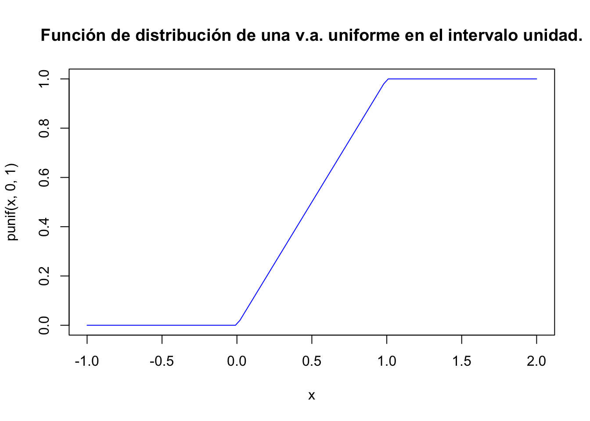
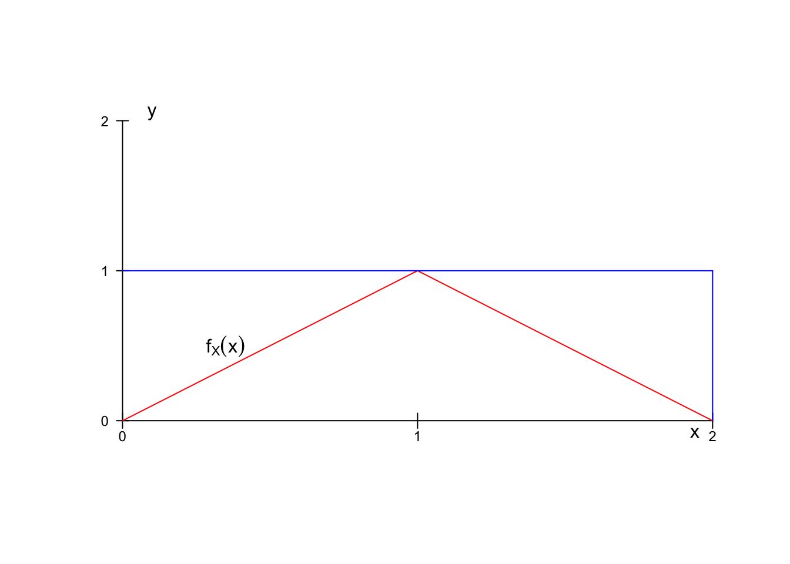
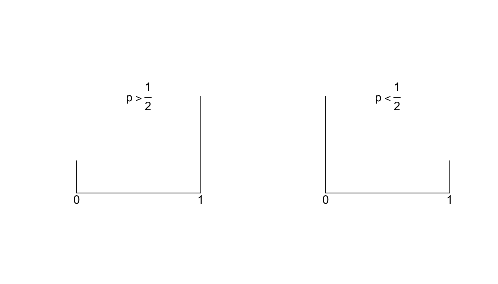
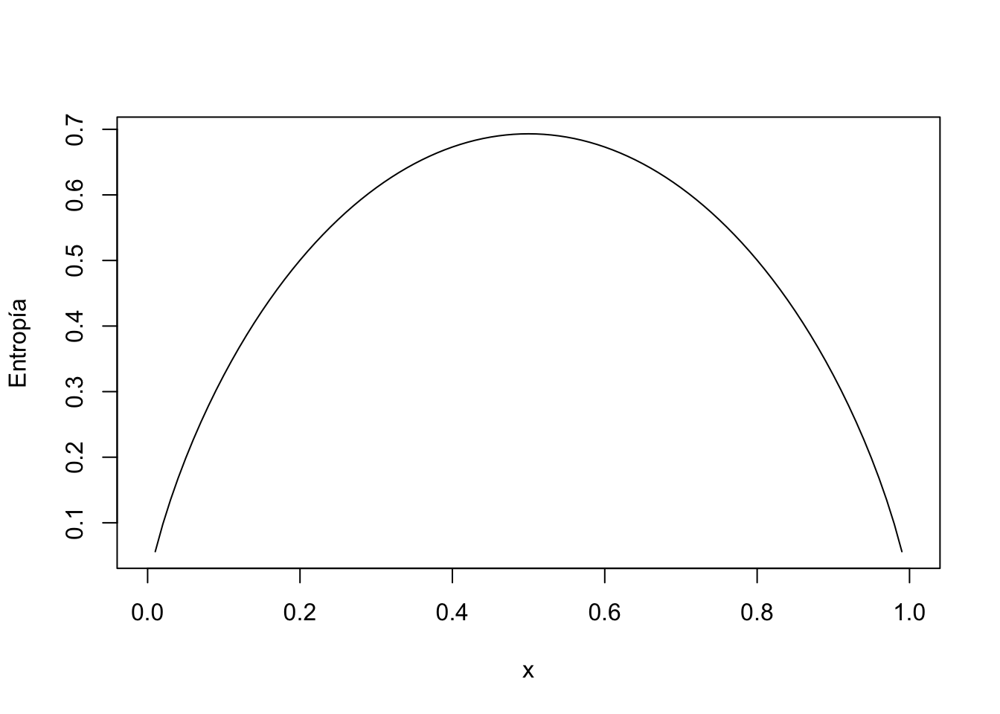

Tema 2 Variables Aleatorias
2.1 Introducción a las variables aleatorias
- Hasta ahora nuestros sucesos han sido de varios tipos: \(\{C,+\}\) en la moneda, nombres de periódicos, ángulos en una ruleta, número de veces que sale cara en el lanzamiento de una moneda etc.
- Necesitamos estandarizar de alguna manera todos estos sucesos. Una solución es asignar a cada suceso un cierto conjunto de números reales, es decir, convertir todos los sucesos en sucesos de números reales para trabajar con ellos de forma unificada.
- Para conseguirlo utilizaremos unas funciones que transformen los elementos del espacio muestral en números; esta funciones son las variables aleatorias.
2.1.1 Definición de variable aleatoria
Comenzaremos dando una definición poco rigurosa, pero suficiente, de variable aleatoria.
Una variable aleatoria (v.a.) es una aplicación que toma valores numéricos determinados por el resultado de un experimento aleatorio
Notación:
- Normalmente representaremos las v.a. por letras mayúsculas \(X,Y,Z\)
- Los valores que “toman” las v.a. los representaremos por letras minúsculas (las mismas en principio) \(x,y,z\ldots\)
2.1.2 Ejemplo
Ejemplo
Lanzamos un dado convencional de parchís el espacio muestral del experimento es
\[\Omega=\{1,2, 3, 4, 5, 6\}\]
Una v.a \(X:\Omega\to\mathbb{R}\) sobre este espacio queda definida por
\[\begin{equation*} \begin{split} X(1)&=1,X(2)=2,X(3)=3,\\ X(4)&=4,X(5)=5,X(6)=6. \end{split} \end{equation*}\]
- Ahora el suceso \(A=\{2, 4, 6\}\), es decir “salir número par”, es equivalente a \(\{X=2,X=4,X=6\}\).
- El suceso \(B=\{1,2,3\}\), es decir “salir un número inferior o igual a \(3\)” es en términos de la v.a. \(\{X=1,X=2,X=3\}\) o también \(\{X\leq 3\}\).
2.1.3 Ejemplo
Ejemplo
Consideremos el experimento lanzar una anilla al cuello de una botella. Si acertamos a ensartar la anilla en la botella el resultado del experimento es éxito y fracaso en caso contrario.
El espacio muestral asociado a este experimento será \(\Omega=\{\mbox{éxito, fracaso}\}\). Construyamos la siguiente variable aleatoria:
\[X:\{\mbox{éxito, fracaso}\}\to\mathbb{R}\]
definida por
\[X(\mbox{éxito})=1 \mbox{ y } X(\mbox{fracaso})=0.\]
2.1.4 Tipos de variables aleatorias
Hay dos tipos fundamentales de variables aleatorias, las discretas y las continuas.
Damos a continuación una definición informal.
- Una variable aleatoria es discreta si sólo puede tomar una cantidad numerable de valores con probabilidad positiva.
- Las variables aleatorias continuas toman valores en intervalos.
- También existen las variables aleatorias mixtas; con una parte discreta y otra continua.
2.1.5 Ejemplo
Ejemplo
Son variables aleatorias discretas:
- Número de artículos defectuosos en un cargamento.
- Número de clientes que llegan a una ventanilla de un banco en una hora.
- Número de errores detectados en las cuentas de una compañía.
- Número de reclamaciones de una póliza de un seguro médico.
Son variables aleatorias continuas:
- Renta anual de una familia.
- Cantidad de petróleo importado por un país
- Variación del precio de las acciones de una compañía de telecomunicaciones.
- Porcentaje de impurezas en un lote de productos químicos.
2.2 Variables aleatorias discretas
2.2.1 Distribuciones de probabilidad para v.a. discretas.
- Pasamos ahora a describir el comportamiento de la v.a. Para ello utilizaremos distintas funciones que nos darán algunas probabilidades de la variable aleatoria.
- En el caso discreto estas funciones son la de probabilidad, y la función de distribución o de probabilidad acumulada.
- En el caso discreto la función de probabilidad es la que nos da las probabilidades de los sucesos elementales de la v.a. que definimos a continuación.
2.2.2 Función de probabilidad para variables discretas
de una variable aleatoria discreta \(X\) a la que denotaremos por \(P_{X}(x)\) está definida por
\[P_{X}(x)=P(X=x)\]
es decir la probabilidad de que \(X\) tome el valor \(x\).
Si \(X\) no asume ese valor \(x\), entonces \(P_{X}(x)=0\).2.2.3 Funcion probabilidad discretas
El conjunto \[D_X=\{ x\in\mathbb{R} \mid P_X(x)>0\}\] recibe el nombre de dominio de la v.a. y son los valores posibles de esta variable.
En el caso discreto lo más habitual es que \(X(\Omega)=D_X\).
2.2.4 Ejemplo
Ejemplo parchís
Lanzamos un dado de parchís una vez, en esta ocasión representaremos los sucesos elementales por el número de puntos de la cara obtenida, tenemos que \[\Omega=\{\mbox{1-puntos,2-puntos,3-puntos,4-puntos,5-puntos,6-puntos}\}\] y la variables aleatoria \(X:\Omega\to \mathbb{R}\) viene definida por
\[X(\mbox{i-puntos})=i\mbox{ para } i=1,2,3,4,5,6.\]
Supongamos que el dado está bien balanceado. Entonces \[P_{X}(1)=P_{X}(2)=P_{X}(3)=P_{X}(4)=P_{X}(5)=P_{X}(6)=\frac16\] Concretamente: \[ P_{X}(x)= \left\{ \begin{array}{ll} \frac16 & \mbox{si } x=1,2,3,4,5,6\\ 0 & \mbox{en otro caso } \end{array} \right. \]
Su dominio es \[D_X=\{1,2,3,4,5,6\}.\]
2.2.5 Ejemplo
Ejemplo lanzamiento moneda
Sea \(X\) la v.a. asociada al lanzamiento de una moneda. Su espacio muestral es \(\Omega=\{c,+\}\), la v.a. queda definida por:
\[X(\omega)=\left\{\begin{array}{ll} 1 & \mbox{si } \omega=c \\ 0 & \mbox{si }\omega=+\end{array}\right.\]
Su función de probabilidad es:
\[P_{X}(x)=P(X=x)=\left\{\begin{array}{ll} \frac12 & \mbox{si } x=0,1\\ 0 & \mbox{en otro caso}\end{array}\right.\]
Finalmente su dominio es \(D_X=\{0,1\}.\)
2.2.6 Ejemplo
Ejemplo urna con bolas
Tenemos una urna con tres bolas rojas, una negra y dos blancas. Realizamos una extracción y observamos el color de la bola entonces un espacio muestral es \[\Omega=\{roja, blanca, negra\}.\]
Una variable aleatoria asociada al experimento es:
\[X(\omega)=\left\{\begin{array}{ll} 1 & \mbox{si } \omega=roja \\ 2 & \mbox{si }\omega=negra \\ 3 & \mbox{si } \omega=blanca \end{array}\right.\]
2.2.6 Ejemplo
La función de probabilidad es
\[P_{X}(x)=\left\{\begin{array}{ll} \frac36 & \mbox{si } x=1\\ \frac16 & \mbox{si } x=2\\ \frac26 & \mbox{si } x=3\\ 0 & \mbox{en otro caso}\end{array}\right.\]
El dominio de la v.a. \(X\) es \(D_X=\{1,2,3\}.\)
2.2.6 Propiedades de la función de probabilidad.
Sea \(X\) una v.a. discreta \(X:\Omega:\to\mathbb{R}\) con dominio \(D_X\). Su función de probabilidad \(P_{X}\) verifica las siguientes propiedades:
- \(0\leq P_{X}(x)\leq 1\) para todo \(x\in\mathbb{R}\)
- \(\sum\limits_{x\in D_X} P_{X}(x)=1\)
2.2.6 Ejemplo
Ejemplo: Lanzamiento moneda
Lanzamos al aire tres veces, de forma independiente, una moneda perfecta. El espacio muestral de este experimento es \[\Omega=\{ccc,cc+,c+c,+cc,c++,+c+,++c,+++\}\] (expresados en orden de aparición).
Este espacio tiene todos los sucesos elementales equiprobables.
Consideremos la variable aleatoria asociada a este experimento:
\[X=\mbox{ número de caras en los tres lanzamientos}.\]
Su función de probabilidad es:
\[ \begin{array}{l} P(X=0)=P(\{+++\})=\frac18\\ P(X=1)=P(\{c++,+c+,++c\})=\frac38\\ P(X=2)=P(\{cc+,c+c,+cc\})=\frac38\\ P(X=3)=P(\{ccc\})=\frac18 \end{array} \]
2.2.6 Ejemplo
Podemos reescribir la función de probabilidad de \(X\) de forma simplificada:
\[P_{X}(x)=\left\{\begin{array}{ll} \frac18 & \mbox{si } x=0, 3\\ \frac38 & \mbox{si } x=1,2\\ 0 & \mbox{en otro caso}\end{array}\right.\]
Efectivamente los valores de la función de distribución suman 1
\[\sum_{x=0}^3 P_X(x)= \frac18+\frac38+\frac38+\frac18=1.\]
2.2.6 Función de distribución de variables aleatorias
La función de distribución de probabilidad (acumulada) de la v.a. \(X\) (de cualquier tipo; discreta o continua) \(F_{X}(x)\) representa la probabilidad de que \(X\) tome un menor o igual que \(x\) es decir
\[F_{X}(x)=P(X\leq x)\]
Esta función también se denomina función de distribución de
probabilidad o simplemente función de distribución de una v.a., y en inglés
cumulative distribution function por lo que se abrevia con el acrónimo cdf.
2.2.6 Propiedades
Sea \(X\) una v.a. y \(F_{X}\) su función de distribución:
- \(P(X>x)=1-P(X\leq x)=1-F_{X}(x)\)
- Sea a y b tales que \(a<b\), \(P(a<X\leq b)=P(X\leq b)-P(X\leq a)=F_{X}(b)-F_{X}(a)\)
2.2.6 Propiedades
Demostración:
Tenemos que el complementario de \(X\) mayor que \(x\) es: \(\overline{\left\{X>x\right\}}=\left\{X>x\right\}^c=\left\{X\leq x\right\}\). Además
\[P(X>x)=1-P(\overline{\left\{X>x\right\}})=1-P(X\leq x)=1-F_{X}(x)\]
lo que demuestra la primera propiedad
Por otro lado, que \(X\) se encuentre entre dos valores \(a\) y \(b\) es \(\left\{a< X \leq b\right\}= \left\{X\leq b\right\}-\left\{X\leq a\right\}\)
ahora podemos hacer
\[\begin{eqnarray*} P(a<X\leq b)&=&P(\left\{X\leq b\right\}-\left\{X\leq a\right\})\\ &=& P(\left\{X\leq b\right\})-P(\left\{X\leq a\right\})\\ &=& F_{X}(b)-F_{X}(a). \end{eqnarray*}\]
2.2.6 Propiedades
Sea \(F_{X}\) la función de distribución de una v.a. \(X\) entonces:
- \(0\leq F_{X}(x)\leq 1\).
- La función \(F_{X}\) es no decreciente.
- La función \(F_{X}\) es continua por la derecha.
- Si denotamos por \(F_X(x_0^{-})=\displaystyle \lim_{x\to x_0^{-}} F(x)\), entonces se cumple que \(P(X< x_0)=F_X(x_0^{-})\) y que \(P(X=x_0)=F_X(x_0)-F_X(x_0^{-})\).
2.2.6 Propiedades
- Se cumple que \(\displaystyle \lim_{x\to\infty} F_{X}(x)=1\); \(\displaystyle \lim_{x\to-\infty}F_{X}(x)=0\).
- Toda función \(F\) verificando las propiedades anteriores es función de distribución de alguna v.a. \(X\).
- \(P(X>x)=1-F_{X}(x)\)
- Dados \(a,b\in \mathbb{R}\) con \(a<b\) \[P(a<X\leq b)=F_{X}(b)-F_{X}(a).\]
2.2.6 Advertencia desigualdades estrictas
En las propiedades anteriores no se pueden cambiar en general las desigualdades de estrictas o no estrictas.
Veamos que propiedades tenemos cuando se cambian estas desigualdades.
Dada una \(F_{X}\) una función de distribución de la v.a. \(X\) y denotamos por \[F_{X}(x_0^{-})=\displaystyle \lim_{x\to x_0^{-}} F_{X}(x),\],
entonces se cumplen las siguientes igualdades…
2.2.6 Advertencia desigualdades estrictas
- \(P(X=x)=F_{X}(x)-F_{X}(x^{-})\)
- \(P(a< X< b)=F_{X}(b^{-})-F_{X}(a)\)
- \(P(a\leq X< b)=F_{X}(b^{-})-F_{X}(a^{-})\)
- \(P(X<a)=F_{X}(a^{-})\)
- \(P(a\leq X\leq b)=F_{X}(b)-F_{X}(a^{-})\)
- \(P(X\geq a)=1-F_{X}(a^{-})\)
2.2.6 Propiedades
- Si \(F_X\) es continua en \(x\) se tiene que \(P(X=x)=0\). Así que si la v.a. es continua \(P(X\leq a)=P(X< a)+P(X=a)=P(X<a)\) y propiedades similares.
- Sea \(X\) una variable aleatoria discreta que con dominio \(D_X\) y que tiene por función de probabilidad \(P_{X}(x)\) entonces su función de distribución \(F_{X}(x_0)\) es \[F_{X}(x_0)=\sum_{x\leq x_0} P_{X}(x)\]
donde \(\sum_{x\leq x_0}\) indica que sumamos todos los \(x \in D_X\) tales que \(x\leq x_0\)
2.2.6 Propiedades
Demostración:
Si \(X\) es continua \[P(X=a)=F(a)-F(a^{-})=F(a)-F(a)=0\] por lo tanto
\[P(X\leq a)=P(X<a)+P(X=a)= P(X<a)+0= P(X<a).\]
lo que demuestra la primera propiedad.
Para demostrar la segunda basta hacer
\[ F_{X}(x_0)= P(X\leq x_0)=P\left(\bigcup_{x\leq x_0; x\in D_X} \{x\}\right)= \sum_{x\leq x_0}P(X=x)= \sum_{x\leq x_0}P_{X}(x). \]
2.2.6 Ejemplo
Ejemplo
En el experimento del dado se tiene que:
\[P_{X}(x)=\left\{\begin{array}{ll} \frac16 & \mbox{si } x=1,2,3,4,5,6\\ 0 & \mbox{en el resto de casos}\end{array}\right.,\]
por lo tanto
\[F_{X}(x)=P(X\leq x)=\left\{\begin{array}{ll} 0 & \mbox{si } x<1\\ \frac16 &\mbox{si } 1\leq x<2\\ \frac26 &\mbox{si } 2\leq x<3\\ \frac36 &\mbox{si } 3\leq x<4\\ \frac46 &\mbox{si } 4\leq x<5\\ \frac56 &\mbox{si } 5\leq x<6\\ 1 &\mbox{si } 6\leq x\end{array}\right.\]
2.2.6 Ejemplo
Calculemos más detalladamente algún valor de \(F_{X}\), por ejemplo:
\[\begin{eqnarray*} F_{X}(3.5) & = & P(X\leq 3.5)= P(\{X=1\}\cup\{X=2\}\cup \{X=3\})\\ &=& P(\{X=1\})+P(\{X=2\})+P(\{X=3\})\\ &=& \frac16+\frac16+\frac16=\frac36 =\frac12, \end{eqnarray*}\]
o de otra forma
\[\begin{eqnarray*} F_{X}(3.5)&=&\sum_{x\leq 3.5} P_X(x)=\sum_{x=1}^3 P(X=x)\\&=&\sum_{x=1}^3 \frac16= 3 \cdot \frac16=\frac12. \end{eqnarray*}\]
2.2.6 Propiedades de la función de distribución
Sea \(X\) una variable con función de distribución \(F_{X}\) entonces:
- \(0\leq F_{X}(x)\leq 1\) para todo \(x\)
- Si \(x<x'\) entonces \[F_{X}(x)\leq F_{X}(x').\] Es una función creciente, no necesariamente estrictamente creciente.
- \(\displaystyle \lim_{x\to -\infty}F_{X}(x)=0\) y \(\displaystyle \lim_{x\to +\infty}F_{X}(x)=1\)
- Es continua por la derecha \(\displaystyle \lim_{x\to x_0^{+}}F_{X}(x)=F_{X}(x_0)\).
2.2.6 Valores esperados o esperanza
2.2.6 Momentos de variables aleatorias discretas
Al igual que en la estadística descriptiva se utilizan distintas medidas para resumir los valores centrales y para medir la dispersión de una muestra, podemos definir las correspondiente medidas para variables aleatorias.
A estas medidas se les suele añadir el adjetivo poblacionales mientras que a las que provienen de la muestra se las adjetiva como muestrales.
Por ejemplo podemos buscar un valor que resuma toda la variable. Este valor es el que “esperamos” que se resuma la v.a. o esperamos que las realizaciones de la v.a. queden cerca de él. Veamos su definición formal.
2.2.6 Esperanza de un variable aleatoria discreta
El valor esperado o esperanza (expected value en inglés) \(E(X)\) de una v.a. discreta \(X\), se define como
\[ E(X)=\sum_{x\in X(\Omega)} x P_{X}(x) \]
En ocasiones se le domina media (mean en inglés mitjana en catalán) poblacional o simplemente media y muy frecuentemente se la denota \(\mu_{X}=E(X)\) o simplemente \(\mu=E(X)\).
2.2.6 Interpretación de la media aritmética para v.a. discretas
Ejemplo
Supongamos que lanzamos un dado \(n\) veces y obtenemos unas frecuencias absolutas \(n_{i}\) para el resultado \(i\) con \(i=1,\ldots,6\). Sea \(X\) la v.a. que nos representa el valor de una tirada del dado.
Calculemos la media aritmética (o media muestral) de los datos
\[ \overline{x}=\frac{1\cdot n_1+2\cdot n_2+3\cdot n_3+4\cdot n_4+5\cdot n_5+6 \cdot n_6}{n}=\sum_{x=1}^6 x \frac{n_{x}}{n}. \]
Si \(n\to \infty\) se tiene que \(\displaystyle\lim_{n\to \infty} \frac{n_{x}}{n}=P_{X}(x).\)
Por lo tanto \(E(X)=\displaystyle \lim_{n\to\infty}\sum_{x=1}^6x \frac{n_{x}}{n}.\)
Entonces el valor esperado en una v.a. discreta puede entenderse como el valor promedio que tomaría una v.a. en un número grande de repeticiones.
2.2.6 Ejemplo
Ejemplo: Erratas en un texto
Sea \(X\)= número de erratas en una página de un texto con dominio \(D_X=\{0,1,2\}\).
Resulta que
\[ P(X=0)=0.42, P(X=1)=0.4, P(X=2)=0.18. \]
entonces
\[ E(X)=0\cdot 0.42+ 1\cdot 0.4 + 2 \cdot 0.18=0.76. \]
Elegida una página del texto al azar esperamos encontrar \(0.76\) errores por página.
Supongamos que en el editor nos paga \(2\) euros por cada página que encontremos con \(1\) error y \(3\) euros por cada página con dos errores (y nada por las páginas correctas) ¿Cuánto esperamos cobrar si analizamos una página?
\[0\cdot 0.42 + 2\cdot 0.4 + 3\cdot 0.18=1.34\]
2.2.6 Esperanzas de funciones de variables aleatorias discretas
Sea \(X\) una v.a. discreta con función de probabilidad \(P_{X}\) y de distribución \(F_{X}\). Entonces el valor esperado de una función \(g(x)\) es :
\[E(g(X))=\sum_{x}g(x) P_{X}(x).\]
2.2.6 Propiedades de los valores esperados
- \(E(k)=k\) para cualquier constante \(k\).
- Si \(a\leq X\leq b\) entonces \(a\leq E(X)\leq b\).
- Si \(X\) es una v.a. discreta que toma valores enteros no negativos entonces \(E(X)=\sum_{x=0}^{+\infty}(1- F_X(x)).\)
Ejercicio
La demostración de las propiedades anteriores se deja como ejercicio.
2.2.6 Ejemplo
Ejemplo: paleta de colores aleatoria
Supongamos que estamos sentados delante de nuestro ordenador con un amigo y le decimos que en dos minutos podemos programar una paleta para poner colores a unos gráficos.
Queremos la que paleta tenga dos botones con las opciones color rojo y color azul. Como hemos programado a gran velocidad resulta que el programa tiene un error; cada vez que se abre la paleta los colores se colocan al azar (con igual probabilidad) en cada botón, así que no sabemos en que color hemos de pinchar.
Además, como nos sobraron \(15\) segundos para hacer el programa y pensando en la comodidad del usuario, la paleta se cierra después de haber seleccionado un color y hay que volverla a abrir de nuevo.
La pregunta es ¿cuál es el valor esperado del número de veces que hemos pinchar el botón de color azul antes de obtener este color?
2.2.6 Ejemplo
Llamemos \(X\) al número de veces que pinchamos en el botón azul (y nos sale rojo) hasta obtener el primer azul. La variable \(X\) toma valores en los enteros no negativos. Su función de probabilidad queda determinada por
\[ P_X(x)=P(X=x)=P(\stackrel{x \mbox{veces}}{\overbrace{rojo, rojo,\ldots,rojo},azul}) =\left(\frac12\right)^{x+1}. \]
2.2.6 Propiedades de las series geométricas
- Una progresión geométrica de razón \(r\) es una sucesión de la forma
\[ r^0, r^1,\ldots,r^n,\ldots. \] - La serie geométrica es la suma de todos los valores de la progresión geométrica \(\displaystyle\sum_{k=0}^{+\infty} r^k\).
- Las sumas parciales desde el término \(n_0\) al \(n\) de una progresión geométrica valen \[ \sum_{k=n_0}^n r^k=\frac{r^{n_0}- r^n r}{1-r}. \]
2.2.6 Propiedades de las series geométricas
- Si \(|r|<1\) la serie geométrica es convergente y \[\sum_{k=0}^{+\infty } r^k=\frac1{1-r}\].
- En el caso en que se comience en \(n_0\) se tiene que \[\sum_{k=n_0}^{+\infty} r^k=\frac{r^{n_0}}{1-r}.\]
2.2.6 Propiedades de las series geométricas
- Si \(|r|<1\) también son convergentes las derivadas, respecto de \(r\), de la serie geométrica y convergen a la derivada correspondiente. Así tenemos que
\[\begin{eqnarray*} \left(\sum_{k=0}^{+\infty} r^k\right)'= & \sum_{k=1}^{+\infty}k r^{k-1} \left(\frac1{1-r}\right)'=\frac1{(1-r)^2}\\ \left(\sum_{k=0}^{+\infty} r^k\right)^{''}=& \sum_{k=2}^{+\infty}k (k-1) r^{k-2}\left(\frac1{1-r}\right)^{''}=\frac2{(1-r)^3} \end{eqnarray*}\].
2.2.6 Ejemplo
Ejemplo (cont)
Si seguimos con el ejemplo de la paleta de colores, su esperanza es:
\[\begin{eqnarray*} E(X)&=&\sum_{x=0}^{+\infty} x P(X=x)=\sum_{x=0}^{+\infty} x \left(\frac12\right)^{x+1}\\ &= & \left(\frac12\right)^2\sum_{x=1}^{+\infty} x \left(\frac12\right)^{x-1}=\left(\frac12\right)^2 \frac1{\left(1-\frac12\right)^2}=1. \end{eqnarray*}\]
Ahora calculemos su función de distribución
\[\begin{eqnarray*} F_X(x)&=& P(X\leq x)=\sum_{k=0}^x P(X=k)=\sum_{k=0}^x \left(\frac12\right)^{k+1}\\ &=& \frac{\frac12-\frac12^{x+1} \frac12}{1-\frac12}=1-\left(\frac12\right)^{x+1} \end{eqnarray*}\].
2.2.6 Ejemplo
Como la variable toma valores enteros positivos, podemos calcular su valor esperado de esta otra manera
\[E(X)=\sum_{x=0}^{+\infty} (1-F_X(x))=\sum_{x=0}^{+\infty}(\frac12)^{x+1}=\frac12 \frac1{1-\frac12}=1.\]
Ejercicio
Calculad el valor esperado de la variable
\[ Y=\mbox{número de intentos para conseguir el color azul.} \]
2.2.6 Momentos de una variable aleatoria
Llamaremos momento de orden \(m\) respecto al punto \(C\) a \[E\left((X-C)^m\right)\]
- Cuando \(C=0\) los momentos reciben el nombre de momentos respecto al origen.
- Cuando \(C=E(X)\) reciben el nombre de momentos centrales o respecto de la media. Luego la esperanza es el momento de orden \(1\) respecto al origen. Estos momentos son la versión poblacional de los momentos que vimos en el curso de estadística descriptiva, recibiendo estos último el nombre de momentos muestrales.
2.2.6 Resumen conceptos
- Hemos descrito el comportamiento aleatorio de una v.a. discreta mediante sus funciones de probabilidad \(P_{X}\) y de distribución \(F_{X}\).
- También tenemos un valor central; el valor esperado \(E(X)\).
- Como medida básica nos queda definir una medida de lo lejos que están los datos del valor central \(E(X)\) una de estas medidas es la varianza de \(X\).
2.2.6 Medidas de la variabilidad
2.2.6 Medidas de la variabilidad: la varianza
Sea \(X\) una v.a. Llamaremos varianza de \(X\) a
\[Var(X)=E((X-E(X))^2)\]
Por lo tanto la varianza es el momento central de orden \(2\).
De forma frecuente se utiliza la notación \[\sigma_{X}^2=Var(X).\]
A la raíz cuadrada positiva de la varianza \[\sigma_{X}=\sqrt{Var(X)}\]
se la denomina desviación típica o estándar de \(X\).
2.2.6 Propiedades de la varianza
- Si \(X\) es una v.a. discreta con función de probabilidad \(P_X\) su varianza es \[\sigma_{X}^2=Var(X)=E((X-E(X))^2)=\sum_{x}(x-E(X))^2 P_{X}(x).\]
- Sea \(X\) una v.a. \[Var(X)=E(X^2)-(E(X))^2=\sum_{x} x^2 P_{X}(X)-(E(X))^2\]
2.2.6 Demostración
Demostración de b)
\[\begin{eqnarray*} Var(X)&= & \sum_{x}(x-E(X))^2 P_{X}(x) = \sum_{x}(x^2 -2 x E(X)+(E(X)^2) P_{X}(x)\\ &=& \sum_{x}x^2P_{X}(x) - E(X)\sum_{x}2 x P_{X}(x) + (E(X)^2)\sum_{x} P_{X}(x)\\ &=& E(X^2)- 2 E(X) E(X) + (E(X))^2=E(X^2)-(E(X))^2. \end{eqnarray*}\]
2.2.6 Ejemplo
Ejemplo
Calculemos en el ejemplo anterior la varianza del número de errores.
Recordemos que:
\[ P(X=0)=0.42,\quad P(X=1)=0.4, \quad P(X=2)=0.18 \]
y que
\[ E(X)=0.76 \]
Entonces:
\[ Var(X)=E(X^2)-(E(X))^2 = E(X^2)-(0.76)^2. \]
2.2.6 Ejemplo
Ahora necesitamos calcular
\[E(X^2)= 0^2 (0.41)+ 1^2 (0.4)+ 2^2 (0.18)=0.4+0.72=1.12\] y por lo tanto
\[Var(X)= E(X^2)-(0.76)^2=1.12-0.5776=0.542\] y \[\sqrt{Var(X)}=\sqrt{0.542}\]
En resumen \(\sigma_{X}^2=0.542\) y \(\sigma_{X}=\sqrt{0.542}\)
2.2.6 Propiedades de la varianza
- \(Var(X)\geq 0\)
- \(Var(cte)=E(cte^2)-(E(cte))^2= cte^2 - cte^2=0\)
- El mínimo de \(E((X-C)^2)\) se alcanza cuando \(C=E(X)\) y es \(Var(X)\). Esta propiedad es una de las que hace útil a la varianza como medida de dispersión.
Ejercicio
Se deja como ejercicio la demostración de estas propiedades.
2.2.6 Esperanza y varianza de transformaciones lineales.
2.2.6 Transformaciones lineales.
Un cambio de variable lineal o transformación lineal de una v.a. \(X\) es otra v.a. \(Y= a+ b X\) donde \(a,b\in\mathbb{R}\).
Sea \(X\) una v.a. con \(E(X)=\mu_{X}\) y \(Var(X)=\sigma_{X}^2\) y \(a,b\in\mathbb{R}\). Entonces si \(Y=a+b X\):
- \(E(Y)=E(a + b X)=a+ b E(X)= a + b \mu_{X}\).
- \(Var(Y)=Var(a+bX)=b^2 Var(X)= b^2 \sigma_{X}^2\)
- \(\sigma_{Y}=\sqrt{Var(Y)}=\sqrt{b^2 Var(X)}=|b| \sigma_{X}\)
2.2.6 Demostración
Demostración:
\[\begin{eqnarray*} E(Y)&=& E(a+bX)=\sum_{x}(a+b\cdot X)\cdot P_{X}(x)\\ &=& a \sum_{x} P_{X}(x) + b \sum_{x} x\cdot P_{X}(x)\\ &=& a + b\cdot E(X)=a + b \mu_{X} \end{eqnarray*}\]
Ejercicio
Las demostración de las demás propiedades se dejan como ejercicio.
2.2.6 Variables aleatorias continuas
2.2.6 Variables aleatorias continuas definición.
- Como ya hemos dicho las variables aleatorias continuas toman valores en intervalos o áreas.
- Lo más habitual es que estas variables tengan función de distribución continua y derivable (salvo a los más en una cantidad finita o numerable de puntos:-)).
- En lo que sigue supondremos que la función de distribución de variables aleatorias continuas cumplen estas propiedades.
- Notemos que si \(X\) es una v.a. con función de distribución continua se tiene que \(P(X=x_0)=F_X(x_0)-F(x_0^{-})=0\). Por lo que no tiene sentido definir función de probabilidad.
2.2.6 Variables aleatorias continuas
- En general tendremos que \(P(X<x_0)=P(X\leq x_0)\).
- Por otra parte podemos utilizar una regla parecida del cociente entre casos favorables y casos posibles de Laplace pero en este caso el conteo se hace por la medida de los casos posibles partida por la medida de los casos favorables.
- Veamos un ejemplo de v.a. continua, que ampliaremos en el tema siguiente, en el que se utilizan todos estos conceptos.
2.2.6 Ejemplo: Distribución uniforme en \([0,1]\).
Ejemplo: distancia el dardo centro
Supongamos que lanzamos un dardo a una diana de radio \(1\), de forma que sea equiprobable cualquier distancia al centro (¡Cuidado! esto no es equivalente a que cualquier punto de la diana sea equiprobable).
Consideremos la v.a. continua \(X=\) distancia al centro.
Su función de distribución es
\[ F_{X}(x)= \left\{ \begin{array}{ll} 0 & \mbox{si } x\leq 0\\ x & \mbox{si } 0<x<1\\ 1 & \mbox{si } x\geq 1 \end{array} \right. . \]
Ya que
- C.F. longitud favorable es \(x-0\).
- C.P. longitud posible es \(1-0\).
- Luego \[P(X\leq x)=\frac{C.F.}{C.P.}=\frac{x-0}{1-0}=x\]
2.2.6 Gráfica de la función de distribución uniforme

2.2.6 Propiedades
En las variables continuas los sucesos del tipo \(\{X\leq x \}\) y \(\{X< x \}\) tendrán la misma probabilidad, y otros tipos de sucesos similares también, algunas de estas propiedades se explicitan en la siguiente proposición.
Dada una v.a. continua \(X\) se tiene que:
- \(P(X\leq b)=P(X<b)\)
- \(P(X<b)=P(X<a)+P(a<X<b)\)
- \(P(a<X<b)=P(X<b)-P(X<a)\)
2.2.6 Demostración
Demostración:
La primera es evidente \(P(X\leq b)=P(X<b)+P(X=b)=P(X<b)\)
Para demostrar la segunda, tenemos
\[\{X<a\}\cap \{a<X<b\}=\emptyset\] \[\{X<a\}\cup \{a<X<b\}=\{X<b\}\]
entonces
\[\begin{eqnarray*} P(X\leq b)= & P(\{X<a\}\cup \{a<X<b\})\\ & = P(X<a)+P(a<X<b) \end{eqnarray*}\]
Ejercicio
La demostración de la tercera propiedad es similar a la segunda pero aplicando la primera. Queda de ejercicio.
2.2.6 Propiedades de la función de distribución
Las propiedades anteriores y combinaciones de ellas se pueden escribir utilizando la función de distribución de \(X\):
Dada una variable aleatoria continua se tiene que:
- \(F_{X}(b)=F_{X}(a)+P(a<X<b)\)
- \(P(a<X<b)=F_{X}(b)-F_{X}(a)\)
- \(P(a\leq X\leq b)=F_{X}(b)-F_{X}(a)\)
Ejercicio
Se deja la demostración como ejercicio
2.2.6 Ejemplo
Ejemplo: lanzamiento de dardos
En los dardos: \[P(0.25<X<0.3)=F_{X}(0.3)-F_{X}(0.25)=\] \[=0.3-0.25=0.05\]
2.2.6 Función de densidad
Una función \(f:\mathbb{R}\to\mathbb{R}\) es una función de densidad sobre \(\mathbb{R}\) si cumple que
- \(f_{X}(x)\geq 0\) para todo \(x \in\mathbb{R}.\)
- \(f\) es continua salvo a lo más en una cantidad finita de puntos sobre cada intervalo acotado de \(\mathbb{R}\).
- \(\displaystyle\int\limits_{-\infty}^{+\infty} f_{X}(x) dx=1.\)
2.2.6 Función de densidad de una variable aleatoria.
Sea \(X\) una v.a. con función de distribución \(F_X\). Sea \(f:\mathbb{R}\to\mathbb{R}\) una función de densidad tal que
\[F_X(x)=\displaystyle\int_{-\infty}^{x} f_X(t) dt.\mbox{ para todo } x\in\mathbb{R}.\]
Entonces \(X\) es una variable aleatoria continua y \(f_X\) es la densidad de la v.a. \(X\).
2.2.6 Dominio de una variable aleatoria continua
El conjunto \(D_X=\{x\in\mathbb{R}| f_x(x)>0\}\) recibe el nombre de
Ejemplo
En nuestra diana, la función \(f\) es una densidad
\[ f_{X}(x)=\left\{ \begin{array}{ll} 0 & \mbox{si } x\leq 0\\ 1 & \mbox{si } 0 < x < 1\\ 0 & \mbox{si } 1\leq x \end{array}\right. \]
que es la densidad de \(X\), en efecto:
2.2.6 Densidad diana
\[ f_{X}(x)=\left\{ \begin{array}{ll} 0 & \mbox{si } x\leq 0\\ 1 & \mbox{si } 0 < x < 1\\ 0 & \mbox{si } 1\leq x \end{array}\right. \]
Si \(x \leq 0\) entonces \(\displaystyle\int_{-\infty}^x f_X(t) dt = 0.\)
Si \(0\leq x\leq 1\) entonces \(\displaystyle\int_{-\infty}^x f_X(t) dt = \int_0^x 1 dt = x.\)
Si \(x\geq 1\) entonces \(\displaystyle\int_{-\infty}^x f_X(t) dt = \int_0^1 1 dt = 1.\)
Por lo tanto \(F_X(x)=\displaystyle\int_{-\infty}^x f_X(t) dt\) para todo \(x\in\mathbb{R}.\)
2.2.6 Densidad diana
curve(dunif(x,0,1),xlim=c(-0.5,1.5),col="blue",
main="Densidad de la distribución uniforme en [0,1]")
2.2.6 Utilidad de la función de densidad
La función de densidad nos permite calcular diversas probabilidades.
Sea \(X\) una v.a. continua con función de distribución \(F_X\) y de densidad \(f_X\), entonces
\[\begin{eqnarray*} P(a< X< b) &=& P(a<X\leq b)= P(a\leq X< b)=\\ & & P(a\leq X\leq b)= \displaystyle\int_{a}^b f_X(x) dx. \end{eqnarray*}\]
Si \(A\) es un conjunto adecuado de \(\mathbb{R}\) entonces
\[ P(X\in A)=\displaystyle\int_{A} f(x) dx=\displaystyle\int_{A\cap D_X} f(x) dx. \]
2.2.6 Utilidad de la función de densidad
Sea \(X\) una v.a. continua con función de distribución \(F_X\) y de densidad \(f_X\), entonces:
- Si \(f_x\) es continua en un punto \(x\), \(F_X\) es derivable en ese punto y \(F_X'(x)=f_X(x).\)
- \(P(X=x)=0\) para todo \(x\in\mathbb{R}.\)
Ejercicio
Comprobar estas propiedades en el ejemplo de la diana.2.2.6 Ejemplo tiempo ejecución de un proceso
Ejemplo: Tiempo ejecución de un proceso.
Sea \(X=\) tiempo de ejecución de un proceso. Se supone que \(X\) sigue una distribución uniforme en dos unidades de tiempo, si tarda más el proceso se cancela.
Calculemos la función de densidad y de distribución de la v.a \(X\).
Entonces
\[ F_{X}(x)=P(X\leq x)=\frac{CF}{CP}=\frac{x}2 \]
Luego su función de distribución es:
\[ F_{X}(x)=\left\{\begin{array}{ll} 0 & \mbox{si } x\leq 0\\ \frac{x}2 & \mbox{si } 0<x<2\\ 1 & \mbox{si } 2\leq x \end{array}\right. \]
2.2.6 Ejemplo tiempo ejecución de un proceso
Su función de densidad por su lado es: \[ f_{X}(x)=F_{X}'(x)=\left\{\begin{array}{ll} 0 & \mbox{si } x\leq 0\\ \frac12 & \mbox{si } 0<x\leq 2\\ 0 & \mbox{si } 2\leq x \end{array}\right. \]
Efectivamente
- \(f_{X}(x)\geq 0,\) y tiene un conjunto finito de discontinuidades.
- \(F_X(x)=\int_{-\infty}^x f_X(t) dt.\) para todo \(x\in \mathbb{R}\)
(Ejercicio, resolverlo gráficamente.) - \(\int\limits_{-\infty}^{+\infty}f_{X}(x)dx= \int\limits_0^2\frac12dx=\frac{x}2\mid_0^2= =\frac22-\frac02=1.\)
2.2.6 Ejemplo tiempo ejecución de un proceso
Ejercicio: Tiempo de un proceso:
Calcular la probabilidad de que uno de nuestros procesos tarde más de una unidad de tiempo en ser procesado. Calcular también la probabilidad de que dure entre \(0.5\) y \(1.5\) unidades de tiempo.
2.2.6 Esperanza y varianza para variables aleatorias continuas
2.2.6 Esperanza y varianza para variables aleatorias continuas
Los mismos comentarios y definiciones que se dieron en la sección correspondiente del tema de estadística descriptiva son aplicables aquí.
Así que sólo daremos las definiciones, la forma de cálculo y algunos ejemplos.
En lo que sigue, salvo que diagamos lo contrario, \(X\) es una v.a. continua con función de densidad \(f_{X}(x)\)
2.2.6 Esperanza y varianza para variables aleatorias continuas
- Su esperanza es: \[E(X)=\displaystyle\int\limits_{-\infty}^{+\infty} xf_{X}(x)dx.\]
- Si \(g(x)\) es una función de la variable \(X\) entonces: \[E(g(X))=\displaystyle\int\limits_{-\infty}^{+\infty} g(x)\cdot f_{X}(x)dx.\]
2.2.6 Esperanza y varianza para variables aleatorias continuas
- Su varianza es: \[ Var(X)=\sigma_{X}^2=E((X-\mu_{X})^2)= \displaystyle\int\limits_{-\infty}^{+\infty} (x-\mu_{X})^2 f_{X}(x)dx. \]
- Su desviación típica es: \[\sigma_{X}=+\sqrt{\sigma_{X}^2}.\]
2.2.6 Propiedades
- \(\sigma_{X}^2\geq 0\)
- \(Var(cte)=E(cte^2)-(E(cte))^2= cte^2 - cte^2=0\)
- \(Var(x)=E(X^2)-\mu_{X}^2=\int\limits_{-\infty}^{+\infty}x^2 f_{X}(x)dx - \mu_{X}^2.\)
- El mínimo de \(E((X-C)^2)\) se alcanza cuando \(C=E(X)\) y es \(Var(X)\).
2.2.6 Ejemplo
Ejemplo: Dardo
Calcular \(\mu_{X}\) y \(\sigma_{X}^2\) en el dardo.
Resultado \[\mu_{X}=\frac12,\] \[E(X^2)=\frac13,\] \[Var(X)=\frac1{12}.\]
2.2.6 Esperanza de trasformaciones lineales de v.a. continuas
Sea \(X\) una v.a. continua con \(E(X)=\mu_{X}\) y \(Var(X)=\sigma_{X}^2\) sea \(Y=a+b X\), donde \(a,b\in\mathbb{R}\), es una nueva v.a. continua obtenida mediante una transformación lineal de \(X\). Se verifican las mismas propiedades que en el caso discreto:
- \(E(Y)=E(a+b X)=a+b E(X)\)
- \(Var(Y)=Var(a+b X)=b^2 Var(X)\)
- \(\sigma_{Y}=|b| \sigma_{X}\)
- \(Z=\frac{X-\mu_{X}}{\sigma_{X}}\) es una transformación lineal de \(X\) de forma que \[E(Z)=0 \mbox{ y } Var(Z)=1\]
2.2.6 Ejemplo
Ejemplo
En una empresa de venta de vinos por internet, sea \(X=\) número de litros de vino del país vendidos en un año. Supongamos que sabemos que \(E(X)=10000\) y que \(Var(X)=100\) Supongamos que los gastos fijos de distribución son 50.000 € y el beneficio por litro es de 10 € por botella. Definimos \(T=10 X-50000\) que será el beneficio después de gastos.
Entonces la esperanza del beneficio es \[E(T)=10 E(X)-50000 = 50000\] y \[Var(T)=10^2 Var(X)= 10000\]
2.2.6 Transformaciones de variables aleatorias
2.2.6 Transformaciones de variables aleatorias
Muchas variables aleatorias son funciones de otras v.a. En lo que sigue resumiremos diversas técnicas para dada una v.a. \(X\) y una transformación \(Y=h(X)\) encontrar \(F_{Y}\) a partir de \(F_{X}\).
2.2.6 Propiedad
Sea \(X\) una v.a. discreta con \(X(\Omega)=\{x_1,x_2,\ldots,x_{n},..\}\) y sea \(h:\mathbb{R}\to\mathbb{R}\) una aplicación. Entonces \(Y=h(X)\) es también una v.a. discreta. Además si \(P_X\) y \(F_{X}\) son las funciones de probabilidad y de distribución de \(X\) entonces
- \(\displaystyle P_{Y}(y)=\sum_{x_{i}|h(x_{i})=y}P_X(x_{i}).\)
- \(\displaystyle F_{Y}(y)=\sum_{x_{i}|h(x_{i})\leq y} P_X(x_{i}).\)
2.2.6 Propiedades
Desafortunadamente para variables no discetas el asunto no es tan sencillo como el anterior, pues la transformación de, por ejemplo, una v.a. continua puede ser continua, discreta, mixta…
Sea \(X\) una v.a. continua cuya función de densidad es \(f_{X}\). Sea \(h:\mathbb{R}\to\mathbb{R}\) una aplicación estrictamente monótona y derivable, tal que \(h'(x)\not=0\) para todo \(x\in\mathbb{R}\). Sea \(Y=h(X)\) la transformación de \(X\) por \(h\). Entonces \(Y\) es una v.a. continua con función de densidad
\[f_{Y}(y)=\left.\frac{f_{X}(x)} {\left|h'(x)\right|}\right|_{x=h^{-1}(y)}\]
2.2.6 Propiedades
Sea \(X\) una v.a. continua cuya función de densidad es \(f_{X}\). Sea \[h:\mathbb{R}\to\mathbb{R}\] una aplicación, no necesariamente monótona tal que :
- sea derivable con derivada no nula
- la ecuación \(h(x)=y\) tiene un número finito de soluciones \(x_1,x_2,..,x_{n}\)
entonces:
\[ \displaystyle f_{Y}(y)=\left.\sum_{k=1}^{n} \frac{f_{X}(x)} {\left|h'(x)\right|}\right|_{x=x_{k}}. \]
2.2.6 Método general del transformación de v.a.
Cuando no podamos aplicar las propiedades anteriores intentaremos calcular primero la función de distribución de la transformación y luego su densidad.
Notemos que en general si \(Y=g(X)\) es una v.a. transformación de la v.a. \(X\) entonces
\[ F_{Y}(y)=P(Y\leq y)=P(g(X)\leq y). \]
2.2.6 Método general del transformación de variables aleatorias
Por ejemplo si \(g\) es estrictamente creciente y cont.
\[ F_{Y}(y)=P(g(X)\leq y)=P(X\leq g^{-1}(y))=F_{X}(g^{-1}(y)). \]
y si \(g\) es estrictamente decreciente y cont. \[ F_{Y}(y)=P(g(X)\leq y)=P(X\geq g^{-1}(y))=1-F_{X}(g^{-1}(y)). \]
2.2.6 Desigualdades básicas: Markov y Chebychev
2.2.6 Desigualdades de Markov y de Chebychev
- En esta sección distintas desigualdades que acotan determinadas probabilidades de una variable aleatoria.
- Estas desigualdades sirven en algunos casos para acotar probabilidades de determinados sucesos.
- También son útiles desde el punto de vista teórico, por ejemplo para justificar que la varianza es una mediada de la dispersión de los datos.
2.2.6 Desigualdad de Markov
Sea \(X\) una v.a. positiva con \(E(X)\) finita. Entonces
\[P(X\geq a)\leq \frac{E(X)}{a}\mbox{ para todo }a>0.\]
Demostración:
Si \(X\) es continua y solo toma valores positivos
\[\begin{eqnarray*} E(X) &=& \int_{-\infty}^{+\infty} x f_{X}(x) dx= \int_0^{+\infty} x f_{X}(x) dx= \int_0^{a} x f_{X}(x) dx +\int_{a}^{+\infty} x f_{X}(x) dx \\ & &\geq \int_{a}^{+\infty} x f_{X}(x) dx \geq a \int_{a}^{+\infty} f_{X}(x) dx = a \cdot P(X\geq a) \end{eqnarray*}\].
de donde se sigue que
\[P(X\geq a)\leq \frac{E(X)}{a}.\]
2.2.6 Desigualdad de Markov
Sea \(X\) una v.a. con \(E(X)\) finita entonces para todo \(a>0\)
\[P(|X|\geq a )\leq \frac{E(|X|)}{a}.\]Ejercicio
Demuestra el corolario anterior a partir de la desigualdad de Markov.
2.2.6 Desigualdad de Chebychev
La desigualdad de Chebychev también se denomina de Chebyshov y en inglés Chebyshev.
Sea \(X\) una v.a.con \(E(X)=\mu\) y \(Var(X)=\sigma^2\) entonces para todo \(a>0\)
\[P(|X-\mu|\geq a)\leq \frac{\sigma^2}{a^2}\]
2.2.6 Demostración desigualdad de Chebychev
Demostración
Apliquemos la consecuencia de la desigualdad de Markov a la v.a. no negativa
\[Y^2=(X-\mu)^2\]
entonces
\[ P(Y^2\geq a^2) \leq \frac{E(Y^2)}{a^2}=\frac{E((X-\mu)^2)}{a^2} = \frac{Var(X)}{a^2}=\frac{\sigma^2}{a^2} . \]
Por otra parte
\[ P(Y^2\geq a^2)=P(|Y|\geq a)= P(|X-\mu|\geq a). \]
hecho que, junto con la desigualdad anterior, demuestra el resultado.
2.2.6 Uso de la desigualdad de Chebychev
Supongamos que \(X\) es una v.a. con \(Var(X)=0\) entonces.
Aplicando la desigualdad anterior
\[P(|X-E(X)|\geq a )=0\mbox{ para todo }a>0\] lo que implica que
\[P(X=E(X))=1.\]
Por lo que probabilidad de que \(X\) sea constantemente \(E(X)\) es 1.
Lo que nos confirma la utilidad de la varianza es una medida de la dispersión de los datos.
2.2.6 Ejemplo
Ejemplo
Se sabe que el tiempo de respuesta medio y la desviación típica de un sistema multiusuario son 15 y 3 u.t.respectivamente. Entonces:
\[ P(|X-15|\geq 5)\leq \frac9{25}=0.36. \]
Si substituimos \(a\) por \(a\cdot \sigma\) en la desigualdad de Chebychev, nos queda:
\[ P(|X-\mu|\geq a \sigma)\leq \frac{\sigma^2}{(a\sigma)^2}=\frac1{a^2}. \]
Que es otra manera de expresar la desigualdad de Chebychev.
2.2.6 Más formas de la desgualdad de Chebychev
La desigualdad de Chebychev también se puede escribir de al menos dos maneras más:
\[ P(\mu-a\leq X\leq \mu+a)\geq 1-\frac{\sigma^2}{a^2} \]
y tomado como \(a=k\cdot \sigma\)
\[ P(\mu-k\cdot \sigma\leq X\leq \mu+ k \cdot \sigma)\geq 1-\frac1{k^2} \]
2.2.6 La varianza como medida de dispersión
Tomando la segunda expresión que hemos visto para la desigualdad de Chebychev para distintos valores de \(k>0\) tenemos la siguiente tabla.
| k | \(P(|X-E(X)|\geq k \cdot \sigma)\) |
|---|---|
| 1 | \(\leq 1\) |
| 2 | \(\leq 0.25\) |
| 3 | \(\leq 0.111\) |
| 4 | \(\leq 0.0025\) |
2.2.6 Interpretación de la desigualdad
Por ejemplo para \(k=2\) esta desigualdad se puede interpretar como que dada una v.a. \(X\) con cualquier distribución que tenga \(E(X)\) y \(Var(X)\) finitos la probabilidad de que un valor se aleje de la media \(\mu\) más de \(a=2\) desviaciones típicas es menor o igual que \(0.25\).
Es decir sólo el 25% de los valores estarán alejados de la media más de \(2\sigma\)
¡Sea cual sea la distribución de la v.a.!
2.2.6 Variables Aleatorias. Complementos
2.2.6 Momentos de variables aleatorias
Los momentos de orden \(n\) caracterizan una variable \(X\). O sea, que si conocemos todos los momentos de orden \(n\), podemos deducir cuál es la distribución de \(X\).
En general, el cálculo de los momentos de orden \(n\) para una variable \(X\) es bastante tedioso.
2.2.6 Ejemplo momento de orden \(n\)
Ejemplo: momento de orden \(n\) de una variable de Bernoulli de parámetro \(p\)
Sea \(X\) una variable de Bernoulli de parámetro \(p\). Recordemos que su función de probabilidad es: \[ P_X(0)=q=1-p,\ p_X(1)=p. \] Su momento de orden \(n\) será: \[ m_n = E\left(X^n\right)=p\cdot 1^n+(1-p)\cdot 0^n = p. \] En este caso, todos los momentos de orden \(n\) valen \(p\).
2.2.6 Ejemplo momento de orden \(n\)
Ejemplo: momento de orden \(n\) de una variable exponencial de parámetro \(\lambda\)
Consideremos ahora una variable \(X\) exponencial de parámetro \(\lambda\).
Recordemos que su función de densidad es: \(f_X(x)=\lambda \mathrm{e}^{-\lambda x},\) para \(x\geq 0\) y \(0\), en caso contrario.
Su momento de orden \(n\) será: \[ m_n = E\left(X^n\right)=\int_0^\infty \lambda \mathrm{e}^{-\lambda x} x^n\, dx =\frac{n!}{\lambda^n}. \]
La expresión anterior se puede obtener integrando por partes \(n\) veces y resolviendo los límites correspondientes. Dejámos al lector los cálculos correspondientes.
Fijémonos que los momentos de orden \(n\) tienden a infinito a medida que \(n\) crece: \(\lim\limits_{n\to\infty}m_n = \lim\limits_{n\to\infty}\frac{n!}{\lambda^n}=\infty\).
2.2.6 Ejemplo momento de orden \(n\)
Ejemplo: momento de orden \(n\) de una variable normal de parámetros \(m=0\) y \(\sigma =1\)
Recordemos que su función de densidad es: \(f_X(x)=\frac{1}{\sqrt{2\pi}}\mathrm{e}^{-\frac{x^2}{2}},\) para \(x\in \mathbb{R}\).
Su momento de orden 1 será la esperanza de \(X\): \(m_1 = 0\) i su momento de orden 2 será: \(m_2 = E\left(X^2\right)=\int_{-\infty}^\infty \frac{1}{\sqrt{2\pi}}\mathrm{e}^{-\frac{x^2}{2}}\cdot x^2\, dx = 1.\) La integral anterior se resuelve usando técnicas de integrales de dos variables. Dicho valor también se puede obtener usando que su varianza vale 1: \(m_2 = \mathrm{Var}(X)+E(X)^2 = \sigma^2 +0^2 = 1.\)
Los momentos de orden impar \(n\) serán cero ya que integramos una función impar: \(m_n = E\left(X^n\right)=\int_{-\infty}^\infty \frac{1}{\sqrt{2\pi}}\mathrm{e}^{-\frac{x^2}{2}}\cdot x^n\, dx = 0.\) O sea, si consideramos \(g(x)=\frac{1}{\sqrt{2\pi}}\mathrm{e}^{-\frac{x^2}{2}}\cdot x^n\), se verifica \(g(-x)=-g(x)\), para todo \(x\in\mathbb{R}\).
Si intentamos calcular el momento de orden 4, obtenemos: \(m_4 = E\left(X^4\right)=\int_{-\infty}^\infty \frac{1}{\sqrt{2\pi}}\mathrm{e}^{-\frac{x^2}{2}}\cdot x^4\, dx = 3,\) usando técnicas de integración de dos variables otra vez.
2.2.6 Momento central de orden \(n\) de una variable aleatoria
2.2.6 Momento central de orden \(n\) de una variable aleatoria
Los momentos centrales de orden \(n\) caracterizan también una variable \(X\). O sea, que si conocemos todos los momentos centrales de orden \(n\), podemos deducir cuál es la distribución de \(X\).
2.2.6 Momento central de orden \(n\) de una variable aleatoria
2.2.6 Momento central de orden \(n\) de una variable aleatoria
Demostración
Recordemos la definición de momento central de orden \(n\) y desarrollemos su expresión aplicando el binomio de Newton: \[ \mu_n = E\left((X-\mu)^n\right) =E\left(\sum_{k=0}^n (-1)^{n-k} \binom{n}{k} X^k\mu^{n-k}\right). \] Aplicando la propiedad de la esperanza que la esperanza de la suma es la suma de esperanzas, obtenemos la expresión dada por la proposición: \[ \mu_n =\sum_{k=0}^n (-1)^{n-k} \binom{n}{k} \mu^{n-k} E\left(X^k\right) = \sum_{k=0}^n (-1)^{n-k} \binom{n}{k} \mu^{n-k} m_k. \]
2.2.6 Ejemplo momento central de orden \(n\)
Ejemplo: momento central de orden \(n\) de una variable de Bernoulli de parámetro \(p\)
Sea \(X\) una variable de Bernoulli de parámetro \(p\). Recordemos que su función de probabilidad es: \[ P_X(0)=q=1-p,\ P_X(1)=p. \] Usando que \(E(X)=p\), su momento central de orden \(n\) será: \[ \mu_n = E\left((X-p)^n\right)=p\cdot (1-p)^n+(1-p)\cdot (0-p)^n = p(1-p)^n + (-1)^n (1-p) p^n. \]
Ejercicio
Demostrar que la expresión anterior corresponde a un polinomio de grado \(n\).
2.2.6 Ejemplo momento central de orden \(n\)
Ejemplo: momento central de orden \(n\) de una variable exponencial de parámetro \(\lambda\)
Consideremos ahora una variable \(X\) exponencial de parámetro \(\lambda\).
Recordemos que su función de densidad es: \(f_X(x)=\lambda \mathrm{e}^{-\lambda x},\) para \(x\geq 0\).
Usando que \(E(X)=\frac{1}{\lambda}\), su momento central de orden \(n\) será: \[ \mu_n = E\left(\left(X-\frac{1}{\lambda}\right)^n\right)=\int_0^\infty \lambda \mathrm{e}^{-\lambda x} \left(x-\frac{1}{\lambda}\right)^n\, dx =\frac{a_n}{\lambda^n}, \] donde \(a_n = n!\sum\limits_{k=0}^n \frac{(-1)^k}{k!}.\)
2.2.6 Ejemplo momento central de orden \(n\)
Ejemplo: momento central de orden \(n\) de una variable exponencial de parámetro \(\lambda\)
La expresión anterior fijado \(n\) se puede obtener integrando por partes \(n\) veces y resolviendo los límites correspondientes. Dejámos al lector los cálculos correspondientes. Sin embargo, la obtención de la fórmula general para \(n\) se sale del nivel del curso.
Fijémonos que los momentos centrales de orden \(n\) también tienden a infinito a medida que \(n\) crece: \(\lim\limits_{n\to\infty}\mu_n = \lim\limits_{n\to\infty}\frac{a_n}{\lambda^n}=\infty\): \[ \lim_{n\to\infty}\mu_n =\lim_{n\to\infty} \frac{n!\sum\limits_{k=0}^n \frac{(-1)^k}{k!}}{\lambda^n}= \lim_{n\to\infty}\sum\limits_{k=0}^n \frac{(-1)^k}{k!}\cdot \lim_{n\to\infty} \frac{n!}{\lambda^n}= \mathrm{e}^{-1}\cdot \infty = \infty. \]
2.2.6 Ejemplo momento central de orden \(n\)
Ejemplo: momento central de orden \(n\) de una variable normal de parámetros \(\mu\) y \(\sigma\)
Recordemos que su función de densidad es: \(f_X(x)=\frac{1}{\sqrt{2\pi}\sigma}\mathrm{e}^{-\frac{(x-\mu)^2}{2\sigma^2}},\) para \(x\in \mathbb{R}\).
Su momento central de orden 2 será la varianza \(\sigma^2\): \(\mu_2 =\sigma^2.\)
Los momentos centrales de orden impar \(n\) serán cero ya que integramos una función impar respecto \(x=\mu\): \(\mu_n = E\left((X-\mu)^n\right)=\int_{-\infty}^\infty \frac{1}{\sqrt{2\pi}\sigma}\mathrm{e}^{-\frac{(x-\mu)^2}{2\sigma^2}}\cdot (x-\mu)^n\, dx = 0.\) O sea, si consideramos \(g(x)=\frac{1}{\sqrt{2\pi}\sigma}\mathrm{e}^{-\frac{(x-\mu)^2}{2\sigma^2}}\cdot (x-\mu)^n\), se verifica \(g(\mu-x)=-g(\mu +x)\), para todo \(x\in\mathbb{R}\).
Si intentamos calcular el momento central de orden 4, obtenemos: \(\mu_4 = E\left((X-\mu)^4\right)=\int_{-\infty}^\infty \frac{1}{\sqrt{2\pi}\sigma}\mathrm{e}^{-\frac{(x-\mu)^2}{2\sigma^2}}\cdot (x-\mu)^4\, dx = 3\sigma^4.\) La integral anterior puede resolverse con el cambio de variable \(t=\frac{x-\mu}{\sigma}\) y usando que: \(\int_{-\infty}^\infty \frac{1}{\sqrt{2\pi}}\mathrm{e}^{-\frac{x^2}{2}}\cdot x^4\, dx = 3.\)
2.2.6 Asimetría de una variable aleatoria
2.2.6 Definición
Una variable aleatoria tiene asimetría positiva si su función de densidad o de probabilidad presenta una cola a la derecha y asimetría negativa, si su función de densidad o de probabilidad presenta cola a la izquierda.
Por ejemplo, en la figura siguiente, vemos la gráfica de la función de probabilidad de una variable aleatoria que presenta asimetría negativa a la izquierda y una función de densidad de una variable aleatoria que presenta asimetría positiva a la derecha:
2.2.6 Definición

2.2.6 ¿Cómo calcular la asimetría de una variable aleatoria?
La asimetría de una variable aleatoria \(X\) se calcula a partir de sus momentos centrales de segundo y tercer orden: \[ \gamma_1 = E\left({\left(\frac{X-\mu}{\sigma}\right)}^3\right)=\frac{\mu_3}{\sigma^3}, \] donde \(\mu = E(X)\) y \(\sigma^2 =\mathrm{Var}(X)\).
Dicho valor se denomina coeficiente de asimetría de Pearson.
2.2.6 ¿Cómo calcular la asimetría de una variable aleatoria?
Usando la relación ya vista entre los momentos centrales y los momentos, podemos expresar el coeficiente de asimetría en función de los momentos: \[ \gamma_1 = \frac{m_3 -3\mu\sigma^2-\mu^3}{\sigma^3}. \] Dejamos al lector la comprobación de la expresión anterior.
Por tanto, una variable aleatoria \(X\) tendrá simetría positiva o a la derecha si \(\gamma_1 >0\) y tendrá asimetría negativa o a la izquierda, si \(\gamma_1 <0\).
2.2.6 Ejemplo de cálculo de asimetría
Ejemplo: cálculo del coeficiente de asimetría para una variable de Bernoulli de parámetro \(p\)
Sea \(X\) una variable de Bernoulli de parámetro \(p\). Usando que \(m_n =p\), para todo \(n\) y que \(\mu_2 = \sigma^2 = p-p^2\), el coeficiente de asimetría \(\gamma_1\) será: \[ \gamma_1 = \frac{p-3p(p-p^2)-p^3}{\sqrt{(p-p^2)^3}} = \frac{p (1-p) (1-2p)}{{\sqrt{(p-p^2)^3}}}. \] Por tanto, la variable de Bernoulli de parámetro \(p\) tendrá simetria negativa si \(p>\frac{1}{2}\) y positiva, si \(p<\frac{1}{2}\):

2.2.6 Ejemplo de cálculo de asimetría
Ejemplo: cálculo del coeficiente de asimetría para una variable exponencial de parámetro \(\lambda\)
Sea \(X\) una variable exponencial de parámetro \(\lambda\). Usando que \(\sigma^2=\frac{1}{\lambda^2}\) y \(\mu_3 =\frac{a_3}{\lambda^3}=\frac{2}{\lambda^3}\), su coeficiente de asimetría de Pearson será: \(\gamma_1 = \frac{\frac{2}{\lambda^3}}{\frac{1}{\lambda^3}}=2.\)
Entonces presenta asimetría positiva o a la derecha tal como se observa en su función de densidad:

2.2.6 Ejemplo de cálculo de asimetría
Ejemplo: cálculo del coeficiente de asimetría para una variable normal de parámetros \(\mu\) y \(\sigma\)
Sea \(X\) una variable aleatoria normal de parámetros \(\mu\) y \(\sigma\).
Tal como se ha indicado anteriormente, los momentos centrales de orden impar son nulos.
Por tanto, en este caso \(\mu_3=0\) y, por tanto, \(\gamma_1=0\).
Deducimos que la distribución normal es totalmente simétrica.
De hecho, usando que su función de densidad es \(f_X(x)=\frac{1}{\sqrt{2\pi}\sigma}\mathrm{e}^{-\frac{(x-\mu)^2}{2\sigma^2}},\) para \(x\in \mathbb{R}\), se puede comprobar que \(f_X(\mu-x)=f_X(\mu +x)\), o sea, tiene el eje de simetría \(x=\mu\):
2.2.6 Ejemplo de cálculo de asimetría

2.2.6 Curtosis o apuntamiento de una variable aleatoria
2.2.6 Definición
La curtosis de una variable aleatoria \(X\) es una medida de cómo son las colas de su función de densidad.
Dicho en otras palabras, queremos medir de alguna manera la tendencia que tiene la variable aleatoria a tener valores atípicos o outliers.
La manera estándard de medir la curtosis de una variable aleatoria \(X\) es a partir de su momento central de cuarto orden: \[ \gamma_2 = E\left(\left(\frac{X-\mu}{\sigma}\right)^4\right) = \frac{\mu_4}{\sigma^4}, \] donde recordemos que \(\mu=E(X)\) y \(\sigma^2 =\mathrm{Var}(X)\).
A la expresión anterior se le denomina medida de curtosis de Pearson.
2.2.6 Definición
Diremos que una variable aleatoria no tiene exceso de curtosis o mesocúrtica si \(\gamma_2 \approx 3\).
Diremos que una variable aleatoria tiene exceso positivo de curtosis o leptocúrtica si \(\gamma_2 >3\).
Diremos que una variable aleatoria tiene exceso negativo de curtosis o platicúrtica si \(\gamma_2 <3\).
2.2.6 Ejemplo de cálculo de curtosis
Ejemplo: cálculo del coeficiente de curtosis para una variable de Bernoulli de parámetro \(p\)
Sea \(X\) una variable aleatoria de parámetro \(p\).
El momento central de cuarto orden de \(X\) será: \[ \mu_4 = p (1-p)^4 +(1-p)p^4 = p (1-p) (3 p^2-3p+1). \] La medida de curtosis de Pearson será: \[ \gamma_2 = \frac{p (1-p) (3 p^2-3p+1)}{p^2 (1-p)^2} = \frac{3 p^2-3p+1}{p(1-p)}. \] Se puede comprobar (ejercicio para el lector) que si \(p\in \left(\frac{3-\sqrt{3}}{6},\frac{3+\sqrt{3}}{6}\right)\approx (0.211,0.789)\), \(\gamma_2 <3\) y, por tanto \(X\) será platicúrtica y en caso contrario, si \(p\in \left(0,\frac{3-\sqrt{3}}{6}\right)\cup \left(\frac{3+\sqrt{3}}{6},1\right)\), \(\gamma_2 >3\) y, por tanto, \(X\) será leptocúrtica.
2.2.6 Ejemplo de cálculo de curtosis
Ejemplo: cálculo del coeficiente de curtosis para una variable exponencial de parámetro \(\lambda\)
Sea \(X\) una variable exponencial de parámetro \(\lambda\). Usando que \(\sigma^2=\frac{1}{\lambda^2}\) y \(\mu_4 =\frac{a_4}{\lambda^3}=\frac{9}{\lambda^4}\), su coeficiente de asimetría de Pearson será: \(\gamma_2 = \frac{\frac{9}{\lambda^4}}{\frac{1}{\lambda^4}}=9.\)
Como \(\gamma_2 >3\), se trataría de una distribución leptocúrtica.
2.2.6 Ejemplo de cálculo de curtosis
Ejemplo: cálculo del coeficiente de curtosis para una variable normal de parámetros \(\mu\) y \(\sigma\)
Sea \(X\) una variable aleatoria normal de parámetros \(\mu\) y \(\sigma\).
Tal como se ha indicado anteriormente, el momento central de orden 4 vale: \(\mu_4 = 3\sigma^4\).
Su coeficiente de curtosis será: \[ \gamma_2 =\frac{\mu_4}{\sigma^4}=\frac{3\sigma^4}{\sigma^4}=3. \] Deducimos, por tanto, que toda distribución normal es mesocúrtica o no tiene exceso (ni positivo ni negativo) de curtosis.
2.2.6 Métodos de transformación
2.2.6 Introducción
Hemos visto anteriormente que el cálculo de los momentos o los momentos centrados de una variable aleatoria \(X\) puede ser muy complicado y muy tedioso.
Por dicho motivo, vamos a introducir un conjunto de funciones que nos permitirán calcular los momentos de la variable \(X\) de forma relativamente sencilla.
2.2.6 Función generatriz de momentos
Sea \(t\in\mathbb{R}\) un valor real cualquiera.
Definimos la función generatriz de momentos \(m_X(t)\) en el valor \(t\) como: \(m_X(t)=E\left(\mathrm{e}^{tX}\right).\)
2.2.6 Ejemplo de cálculo de función generatriz de momentos
Ejemplo: cálculo de la función generatriz de momentos para una variable de Bernoulli de parámetro \(p\)
Sea \(X\) una variable aleatoria de Bernoulli de parámetro \(p\). Recordemos que su función de probabilidad es: \[ P_X(0)=q=1-p,\ p_X(1)=p. \] Su función generatriz de momentos será: \[ m_X (t)=E\left(\mathrm{e}^{tX}\right) =p\mathrm{e}^{t\cdot 1}+(1-p)\mathrm{e}^{t\cdot 0}=p\mathrm{e}^t+(1-p)=1+p\left(\mathrm{e}^t -1 \right). \]
2.2.6 Ejemplo de cálculo de función generatriz de momentos
Ejemplo: cálculo de la función generatriz de momentos para una variable exponencial de parámetro \(\lambda\)
Sea \(X\) una variable aleatoria exponencial de parámetro \(\lambda\). Recordemos que su función de densidad es: \(f_X(x)=\lambda \mathrm{e}^{-\lambda x},\) para \(x\geq 0\) y \(0\), en caso contrario.
Su función generatriz de momentos será: \[ m_X (t)=E\left(\mathrm{e}^{tX}\right)=\int_0^\infty \mathrm{e}^{t x}\lambda \mathrm{e}^{-\lambda x}\, dx = \lambda \int_0^\infty\mathrm{e}^{(t-\lambda)x}\, dx = \lambda\left[\frac{\mathrm{e}^{(t-\lambda)x}}{t-\lambda}\right]_{x=0}^{x=\infty} = \frac{\lambda}{\lambda -t},\ \mbox{si } t<\lambda. \] En este caso vemos que el dominio de la función generatriz de momentos \(m_X\) es \((-\infty,\lambda)\), ya que si \(t\geq \lambda\), la integral anterior no es convergente.
Fijémonos por lo que vendrá más adelante que, como \(\lambda >0\), el valor \(0\) pertenece al dominio de \(m_X\).
2.2.6 Ejemplo de cálculo de función generatriz de momentos
Ejemplo: cálculo de la función generatriz de momentos para una variable normal de parámetros \(\mu\) y \(\sigma\)
Sea \(X\) una variable normal de parámetros \(\mu\) y \(\sigma\).
Recordemos que su función de densidad es: \(f_X(x)=\frac{1}{\sqrt{2\pi}\sigma}\mathrm{e}^{-\frac{(x-\mu)^2}{2\sigma^2}},\) para \(x\in \mathbb{R}\).
Su función generatriz de momentos será:
\[ \begin{array}{rl} m_X (t) & =E\left(\mathrm{e}^{tX}\right)=\int_{-\infty}^\infty \mathrm{e}^{tx}\frac{1}{\sqrt{2\pi}\sigma}\mathrm{e}^{-\frac{(x-\mu)^2}{2\sigma^2}}\, dx = \frac{1}{\sqrt{2\pi}\sigma} \int_{-\infty}^\infty \mathrm{e}^{tx-\frac{(x-\mu)^2}{2\sigma^2}}\, dx \\ & = \frac{1}{\sqrt{2\pi}\sigma} \int_{-\infty}^\infty \mathrm{e}^{-\frac{1}{2\sigma^2}\left((x-(\sigma^2 t+\mu))^2-2\sigma^2 t \mu-\sigma^4t^2\right)}\, dx = \frac{1}{\sqrt{2\pi}\sigma} \mathrm{e}^{\frac{1}{2}(2 t \mu +\sigma^2 t^2)}\int_{-\infty}^\infty \mathrm{e}^{-\frac{1}{2\sigma^2}(x-(\sigma^2 t+\mu))^2}\, dx\\ & = \mathrm{e}^{\frac{1}{2}(2 t \mu +\sigma^2 t^2)} \left( \frac{1}{\sqrt{2\pi}\sigma} \int_{-\infty}^\infty \mathrm{e}^{-\frac{1}{2\sigma^2}(x-(\sigma^2 t+\mu))^2}\, dx\right) = \mathrm{e}^{ t \mu +\frac{\sigma^2 t^2}{2}}. \end{array} \] La integral del último paréntesis se resuelve haciento el cambio de variable \(u=x-\sigma^2 t\) y usando que la integral de la función de densidad de \(X\) sobre todo \(\mathbb{R}\) vale 1.
2.2.6 Relación entre la función generatriz de momentos y los momentos
La razón del nombre que lleva la función generatriz de momentos es que podemos obtener todos los momentos de la variable a partir de ella:
2.2.6 Relación entre la función generatriz de momentos y los momentos
Demostración
Recordemos la definición de la función generatriz de momentos: \(m_X(t)=E\left(\mathrm{e}^{tX}\right).\)
La idea de la demostración es probar por inducción que \(m_X^{(n)}(t) =E\left(\mathrm{e}^{tX}\cdot X^n\right)\).
Veámoslo para \(n=1\): \(m_X'(t)=E\left(\mathrm{e}^{tX}\cdot X\right)\).
Seguidamente, apliquemos inducción sobre \(n\). Supongamos que \(m_X^{(n)}(t) =E\left(\mathrm{e}^{tX}\cdot X^n\right)\) y veamos que \(m_X^{(n+1)}(t) =E\left(\mathrm{e}^{tX}\cdot X^{n+1}\right)\): \(m_X^{(n+1)}(t) =\frac{d}{dt}(m_X^{(n)}(t)) =\frac{d}{dt}E\left(\mathrm{e}^{tX}\cdot X^n\right) = E\left(\mathrm{e}^{tX}\cdot X^{n+1}\right),\) tal como queríamos demostrar.
Ahora si aplicamos la expresión demostrada \(m_X^{(n)}(t) =E\left(\mathrm{e}^{tX}\cdot X^n\right)\) a \(t=0\), obtenemos: \(m_X^{(n)}(0) =E\left(X^n\right)=m_n,\) tal como dice la proposición.
2.2.6 Ejemplo
Ejemplo: aplicación de la proposición en el caso en que \(X\) es una variable de Bernoulli de parámetro \(p\)
En este caso, recordemos que: \(m_X (t)=1+p\left(\mathrm{e}^t -1 \right).\)
Se puede comprobar que \(m_X^{(n)}(t)=p\mathrm{e}^t\). Por tanto: \[ m_n = m_X^{(n)}(0)=p, \] tal como habíamos calculado anteriormente.
2.2.6 Ejemplo
Ejemplo: aplicación de la proposición en el caso en que \(X\) es una variable exponencial de parámetro \(\lambda\)
En este caso, recordemos que: \(m_X (t)=\frac{\lambda}{\lambda -t},\) para \(t<\lambda\) pero como \(\lambda >0\), \(t=0\) cumple la expresión anterior.
Dejamos como ejercicio para el lector comprobar que: \(m_X^{(n)}(t)=\frac{\lambda n!}{(\lambda-t)^{n+1}}\).
Por tanto: \[ m_n = m_X^{(n)}(0) = \frac{\lambda n!}{\lambda^{n+1}}=\frac{n!}{\lambda^n}, \] expresión que ya habíamos obtenido anteriormente.
2.2.6 Ejemplo
Ejemplo: aplicación de la proposición en el caso en que \(X\) es una variable normal de parámetros \(\mu\) y \(\sigma\)
En este caso, recordemos que: \(m_X (t)=\mathrm{e}^{ t \mu +\frac{\sigma^2 t^2}{2}}.\)
Aplicando la fórmula de los momentos para \(n=1\) obtenemos: \(m'(t)=\mathrm{e}^{ t \mu +\frac{\sigma^2 t^2}{2}} \left(\mu+t\sigma^2\right)\), que en \(t=0\) vale: \(m'(0)=\mu=E(X)\), tal como ya sabemos.
Si la aplicamos para \(n=2\), obtenemos: \(m''(t)=\mathrm{e}^{ t \mu +\frac{\sigma^2 t^2}{2}} \left((\mu+t\sigma^2)^2+ \sigma^2 \right) =\mathrm{e}^{ t \mu +\frac{\sigma^2 t^2}{2}} \left(t^2\sigma^4+\mu^2+\sigma^2+ 2t\mu\sigma^2 \right)\), que en \(t=0\) vale: \(m''(0)=\mu^2+\sigma^2=E\left(X^2\right)\), tal como ya sabemos.
Para \(n=3\)m obtenemos: \(m'''(t)=e^{\mu t+\frac{\sigma ^2 t^2}{2}}\left(\mu +\sigma ^2 t\right) \left(\left(\mu +\sigma ^2 t\right)^2+3 \sigma ^2\right)\), que en \(t=0\) vale: \(m'''(0)=3\sigma^2\mu = E\left(X^3\right)\), valor que correspondería al momento de tercer orden de \(X\).
Por último, para \(n=4\), obtenemos: \(m^{(iv)}(t)=e^{\mu t+\frac{\sigma ^2 t^2}{2}} \left(6 \sigma ^2 \left(\mu +\sigma ^2 t\right)^2+\left(\mu +\sigma ^2 t\right)^4+3 \sigma ^4\right)\), que en \(t=0\) vale: \(m^{(iv)}(0)=6\sigma^2\mu^2+\mu^4+3\sigma^4=E\left(X^4\right)\), valor que correspondería al momento de cuarto orden de \(X\).
2.2.6 Función característica
Sea \(w\in\mathbb{R}\) un valor real cualquiera.
Definimos la función característica \(\phi_X(w)\) en el valor \(w\) como: \(\phi_X(w)=E\left(\mathrm{e}^{\mathrm{i} w X}\right),\) donde \(\mathrm{i}\) es el número complejo \(\mathrm{i}=\sqrt{-1}\).
2.2.6 Función característica
Por tanto, usando la fórmula de la antitransformada de Fourier, podemos escribir la función de densidad \(f_X(x)\) como función de la función característica de \(X\), \(\phi(w)\): \(f_X(x)=\frac{1}{2\pi}\int_{-\infty}^\infty \phi_X(w)\mathrm{e}^{-\mathrm{i}w x}\, dw.\)
2.2.6 Función característica
En los casos en que los \(x_k\) sean enteros, \(x_k=k\), que son la mayoría, la ecuación anterior es la tranformada de Fourier de la secuencia \(P_X(k)\). Dicha función es una función periódica en \(w\) de periodo \(2\pi\) ya que \(\mathrm{e}^{\mathrm{i}(w+2\pi)k}=\mathrm{e}^{\mathrm{i}wk}.\)
Por tanto, usando la fórmula de inversión, podemos escribir la función de probabilidad \(P_X(k)\) como función de la función característica de \(X\), \(\phi(w)\): \(P_X(k)=\frac{1}{2\pi}\int_{0}^{2\pi} \phi_X(w)\mathrm{e}^{-\mathrm{i}w k}\, dw.\)
2.2.6 Ejemplo de cálculo de función característica
Ejemplo: cálculo de la función característica para una variable de Bernoulli de parámetro \(p\)
Sea \(X\) una variable aleatoria de Bernoulli de parámetro \(p\). Recordemos que su función de probabilidad es: \[ P_X(0)=q=1-p,\ p_X(1)=p. \] Su función característica será: \[ \phi_X (w)=E\left(\mathrm{e}^{\mathrm{i}wX}\right) =p\mathrm{e}^{\mathrm{i}w\cdot 1}+(1-p)\mathrm{e}^{\mathrm{i}w\cdot 0}=p\mathrm{e}^{\mathrm{i}w}+(1-p)=1+p\left(\mathrm{e}^{\mathrm{i}w} -1 \right). \] Comprobemos la fórmula de la inversión: \[ \begin{array}{rl} P_X(1) & = \frac{1}{2\pi}\int_0^{2\pi} \left(1+p\left(\mathrm{e}^{\mathrm{i}w} -1 \right)\right) e^{-\mathrm{i}w\cdot 1}\, dw =\frac{1}{2\pi}\left(\int_0^{2\pi} (1-p)e^{-\mathrm{i}w}\, dw + \int_0^{2\pi} p\, dw\right) \\ & = \frac{1}{2\pi}\left( (1-p) \left[\frac{\mathrm{e}^{-\mathrm{i}w}}{-\mathrm{i}}\right]_0^{2\pi} +2\pi p\right)=\frac{1}{2\pi}\left((1-p)\cdot 0 +2\pi p\right)=p, \\ P_X(0) & = \frac{1}{2\pi}\int_0^{2\pi} \left(1+p\left(\mathrm{e}^{\mathrm{i}w} -1 \right)\right) e^{-\mathrm{i}w\cdot 0}\, dw =\frac{1}{2\pi}\left(\int_0^{2\pi} (1-p) \, dw + \int_0^{2\pi} p \mathrm{e}^{\mathrm{i}w}\, dw\right) \\ & = \frac{1}{2\pi}\left( (1-p) \cdot 2\pi +p \left[\frac{\mathrm{e}^{\mathrm{i}w}}{\mathrm{i}}\right]_0^{2\pi}\right)=\frac{1}{2\pi}\left((1-p)\cdot 2\pi + p\cdot 0\right)=1-p. \end{array} \]
2.2.6 Ejemplo de cálculo de función característica
Ejemplo: cálculo de la función característica para una variable exponencial de parámetro \(\lambda\)
Sea \(X\) una variable aleatoria exponencial de parámetro \(\lambda\). Recordemos que su función de densidad es: \(f_X(x)=\lambda \mathrm{e}^{-\lambda x},\) para \(x\geq 0\) y \(0\), en caso contrario.
Su función característica será: \[ \phi_X (w)=E\left(\mathrm{e}^{\mathrm{i}wX}\right)=\int_0^\infty \mathrm{e}^{\mathrm{i}w x}\lambda \mathrm{e}^{-\lambda x}\, dx = \lambda \int_0^\infty\mathrm{e}^{(\mathrm{i}w-\lambda)x}\, dx = \lambda\left[\frac{\mathrm{e}^{(\mathrm{i}w-\lambda)x}}{\mathrm{i}w-\lambda}\right]_{x=0}^{x=\infty} = \frac{\lambda}{\lambda -\mathrm{i} w}. \] La expresión anterior es válida para todo \(w\in\mathbb{R}\) ya que su valor sería: \(\phi_X (w)=\frac{\lambda}{\lambda -\mathrm{i} w}\cdot \frac{\lambda +\mathrm{i} w}{\lambda +\mathrm{i} w}=\frac{\lambda^2+\mathrm{i}\lambda w}{\lambda^2+w^2}=\frac{\lambda^2}{\lambda^2+w^2}+\mathrm{i}\frac{\lambda w}{\lambda^2+w^2}.\) En la última expresión hemos separado la parte real de la imaginaria.
Calculemos la función de densidad a partir de la función característica: \[ f_X(x)=\frac{1}{2\pi}\int_{-\infty}^\infty \frac{\lambda}{\lambda -\mathrm{i} w}\mathrm{e}^{-\mathrm{i}wx}\, dw = a\mathrm{e}^{-a x}, \] si \(x>0\) y \(0\) en caso contrario. El cálculo de la integral anterior debe realizarse usando el Teorema de los Residuos, Residue theorem y se sale de los objetivos de este curso.
2.2.6 Ejemplo de cálculo de función característica
Ejemplo: cálculo de la función característica para una variable normal de parámetros \(\mu\) y \(\sigma\)
Sea \(X\) una variable normal de parámetros \(\mu\) y \(\sigma\).
Recordemos que su función de densidad es: \(f_X(x)=\frac{1}{\sqrt{2\pi}\sigma}\mathrm{e}^{-\frac{(x-\mu)^2}{2\sigma^2}},\) para \(x\in \mathbb{R}\).
Su función característica será:
\[ \begin{array}{rl} \phi_X (w) & =E\left(\mathrm{e}^{\mathrm{i}w X}\right)=\int_{-\infty}^\infty \mathrm{e}^{\mathrm{i}w x}\frac{1}{\sqrt{2\pi}\sigma}\mathrm{e}^{-\frac{(x-\mu)^2}{2\sigma^2}}\, dx = \frac{1}{\sqrt{2\pi}\sigma} \int_{-\infty}^\infty \mathrm{e}^{\mathrm{i}wx-\frac{(x-\mu)^2}{2\sigma^2}}\, dx \\ & = \frac{1}{\sqrt{2\pi}\sigma} \int_{-\infty}^\infty \mathrm{e}^{-\frac{1}{2\sigma^2}\left((x-(\sigma^2 \mathrm{i}w+\mu))^2-2\sigma^2 \mathrm{i}w \mu+\sigma^4 w^2\right)}\, dx = \frac{1}{\sqrt{2\pi}\sigma} \mathrm{e}^{\frac{1}{2}(2 \mathrm{i}w \mu -\sigma^2 w^2)}\int_{-\infty}^\infty \mathrm{e}^{-\frac{1}{2\sigma^2}(x-(\sigma^2 \mathrm{i}w+\mu))^2}\, dx\\ & = \mathrm{e}^{\frac{1}{2}(2 \mathrm{i}w \mu -\sigma^2 w^2)} \left( \frac{1}{\sqrt{2\pi}\sigma} \int_{-\infty}^\infty \mathrm{e}^{-\frac{1}{2\sigma^2}(x-(\sigma^2 \mathrm{i}w+\mu))^2}\, dx\right) = \mathrm{e}^{ \mathrm{i}w \mu -\frac{\sigma^2 w^2}{2}}. \end{array} \] La integral del último paréntesis se resuelve haciento el cambio de variable \(u=x-\sigma^2 \mathrm{i}w\) y usando que la integral de la función de densidad de \(X\) sobre todo \(\mathbb{R}\) vale 1.
2.2.6 Ejemplo de cálculo de función característica
Ejemplo: cálculo de la función característica para una variable normal de parámetros \(\mu\) y \(\sigma\)
Calculemos la función de densidad a partir de la función característica: \[ \begin{array}{rl} f_X(x) & =\frac{1}{2\pi}\int_{-\infty}^\infty \mathrm{e}^{ \mathrm{i}w \mu -\frac{\sigma^2 w^2}{2}}\mathrm{e}^{-\mathrm{i} w x}\, dw = \frac{1}{2\pi}\int_{-\infty}^\infty \mathrm{e}^{\left(\frac{\mathrm{i}w\sigma}{\sqrt{2}}+\frac{\mu-x}{\sigma\sqrt{2}}\right)^2-\frac{(\mu-x)^2}{2\sigma^2}}\, dw =\frac{1}{2\pi}\mathrm{e}^{-\frac{(\mu-x)^2}{2\sigma^2}}\int_{-\infty}^\infty \mathrm{e}^{\left(\frac{\mathrm{i}w\sigma}{\sqrt{2}}+\frac{\mu-x}{\sigma\sqrt{2}}\right)^2}\, dw \\ & = \frac{1}{2\pi}\mathrm{e}^{-\frac{(x-\mu)^2}{2\sigma^2}}\int_{-\infty}^\infty \mathrm{e}^{-\left(\frac{w\sigma}{\sqrt{2}}+\frac{\mu-x}{\mathrm{i}\sigma\sqrt{2}}\right)^2}\, dw \stackrel{\mbox{cambio de variable } u=\frac{w\sigma}{\sqrt{2}}+\frac{\mu-x}{\mathrm{i}\sigma\sqrt{2}}}{=} \frac{1}{2\pi}\mathrm{e}^{-\frac{(x-\mu)^2}{2\sigma^2}}\int_{-\infty}^\infty \frac{\sqrt{2}}{\sigma}\mathrm{e}^{-u^2}\, du \\ & \stackrel{\int_{-\infty}^\infty \mathrm{e}^{-u^2}\, du =\sqrt{\pi}}{=} \frac{1}{\sqrt{2}\pi\sigma} \mathrm{e}^{-\frac{(x-\mu)^2}{2\sigma^2}} \sqrt{\pi} = \frac{1}{\sqrt{2\pi}\sigma}\mathrm{e}^{-\frac{(x-\mu)^2}{2\sigma^2}}, \end{array} \] función que coincide con la densidad de la distribución \(N(\mu,\sigma)\).
2.2.6 Relación entre la función característica y los momentos
La relación entre la función característica y los momentos es la siguiente:
2.2.6 Relación entre la función característica y los momentos
Ejercicio
La demostración se realiza de forma similar a la demostración de la proposición que relaciona la función generatriz de momentos y los momentos.
Se deja como ejercicio al lector.
Ejercicio
Realizar los mismos ejemplos que los realizados para la función generatriz de momentos. O sea:
Si \(X\) es una variable de Bernoulli de parámetro \(p\), demostrar usando la función característica que para todo \(n\), \(m_n = E\left(X^n\right)=p\).
Si \(X\) es una variable exponencial de parámetro \(\lambda\), demostrar usando la función característica que para todo \(n\), \(m_n = E\left(X^n\right)=\frac{n!}{\lambda^n}\).
Si \(X\) es una variable normal de parámetros \(\mu\) y \(\sigma\), demostrar usando la función característica que \(E(X)=\mu\), \(E\left(X^2\right)=\mu^2+\sigma^2\), \(E\left(X^3\right)=3\sigma^2\mu\) y \(E\left(X^4\right)=6\sigma^2\mu^2+\mu^4+3\sigma^4\).
2.2.6 Fiabilidad
2.2.6 Introducción
Sea \(T\geq 0\) una variable aleatoria que nos da, por ejemplo, el tiempo de vida de cierto componente o dispositivo.
Vamos a definir medidas para estudiar la fiabilidad de este tipo de variables aleatorias.
2.2.6 Tiempo medio de vida
Veámoslo. Para ello basta ver que \(E(T)=\int_0^\infty (1-F_T(t))\, dt\), donde \(F_T(t)\) es la función de distribución de la variable \(T\): \[ \begin{array}{rl} E(T) & =\int_{t=0}^{t=\infty} 1-F_T(t)\, dt=\int_{t=0}^{t=\infty}\int_{u=t}^{u=\infty} f_T(u)\,du\,dt \\ & =\int_{u=0}^{u=\infty} f_T(u)\int_{t=0}^{t=u} \, dt\, du =\int_{u=0}^{u=\infty} f_T(u)\cdot u\, du = E(T), \end{array} \] donde \(f_T(u)\) seria la función de densidad de la variable \(T\) en el valor \(u\).
2.2.6 Ejemplo
Ejemplo
Sea \(T\) una variable aleatoria exponencial de parámetro \(\lambda\).
La fiabilidad de \(T\) sería: \(R(t)=P(T>t)=1-F_T(t)=\mathrm{e}^{-\lambda t}\):
2.2.6 Generación de muestras de variables aleatorias por ordenador
2.2.6 Introducción
La simulación por computadora de cualquier fenómeno aleatorio implica la generación de variables aleatorias con distribuciones prefijadas de antemano.
Por ejemplo, la simulación de un sistema de colas implica generar el tiempo entre las llegadas de los clientes, así como los tiempos de servicio de cada cliente.
Fijémonos que fijar la variable aleatoria \(X\) es equivalente a fijar la función de distribución \(F_X(x)\) o la función de densidad \(f_X(x)\) en el caso continuo o la función de probabilidad \(P_X(x)\) en el caso discreto.
Todos los métodos que vamos a describir presuponen que podemos generar números aleatorios que se distribuyen uniformemente entre 0 y 1. En R se puede hacer usando la función runif(n), donde n es la cantidad de números aleatorios entre 0 y 1 a generar.
2.2.6 Método de transformación
El método de transformación se basa en el resultado siguiente:
Demostración:
Claramente, por propia definición de \(Y\), tenemos que el dominio de \(Y\) es \([0,1]\) ya que el conjunto recorrido de la función de distribución de cualquier variable es el intervalo \([0,1]\).
Para ver que la distribución de \(Y\) es \(U[0,1]\) basta comprobar que \(F_Y(y)=y\), para todo \(y\in [0,1]\): \[ \begin{array}{rl} F_Y(y) & =P(Y\leq y)=P(F_X(X)\leq y)\stackrel{\mbox{usando que $F_X$ es estrictamente creciente}}{=} P(X\leq F_X^{-1}(y)) \\ & =F_X(F_X^{-1}(y))=y. \end{array} \]
2.2.6 Método de transformación
Usando la proposición anterior, dada una variable \(X\), como la distribución de la variable aleatoria \(Y=F_X(X)\) es \(U[0,1]\), si hacemos \(X=F_X^{-1}(Y)\), tendremos que si sabemos generar una muestra de \(Y\), aplicándole a la muestra la función \(F_X^{-1}\) tendremos generada una muestra de \(X\).
2.2.6 Ejemplo
Ejemplo: generar una muestra de una variable exponencial de parámetro \(\lambda\)
Recordemos que si \(X\) es exponencial de parámetro \(\lambda\), su función de distribución es: \(F_X(x)=1-\mathrm{e}^{-\lambda x}\).
Hallemos a continuación \(F_X^{-1}\): \[ y=1-\mathrm{e}^{-\lambda x},\ \Leftrightarrow 1-y=\mathrm{e}^{-\lambda x},\ \Leftrightarrow \ln(1-y)=-\lambda x,\ \Leftrightarrow x=-\frac{1}{\lambda}\ln(1-y). \] Por tanto, \(F_X^{-1}(y)=-\frac{1}{\lambda}\ln(1-y)\).
2.2.6 Ejemplo
Ejemplo: generar una muestra de una variable exponencial de parámetro \(\lambda\)
Generemos una muestra con R de 25 valores de una variable exponencial de parámetro \(\lambda=2\) usando el método anterior:
## [1] 0.76622450 0.31847128 0.16489516 0.10395200 0.39973729 0.16154405
## [7] 0.87268703 0.14770213 0.37699316 0.91788067 0.87034314 0.09843204
## [13] 0.34849525 0.20425737 0.12971050 0.86116841 0.29512710 0.18396357
## [19] 0.49335130 0.13530541 0.21354477 0.07805220 1.34093300 0.32649289
## [25] 0.408787472.2.6 Ejemplo
Ejemplo: generar una muestra de una variable exponencial de parámetro \(\lambda\)
Vamos a testear si nuestro método funciona.
Para ello generaremos una muestra de 500 valores usando el método de transformación y dibujaremos su histograma de frecuencias relativas.
Seguidamente dibujaremos la función de densidad de la variable exponencial de parámetro \(\lambda\) y compararemos los resultados:
2.2.6 Ejemplo

2.2.6 Método de rechazo
Sea \(X\) una variable aleatoria continua tal que su función de densidad verifica:
- Existen valores \(a\) y \(b\) tal que \(f_X(x)= 0\) si \(x\not\in [a,b]\).
- Existen valores \(c\) y \(d\) tal que \(f_X(x)\in [c,d]\), si \(x\in [a,b]\).
En resumen, los puntos \((x,f(x))\) pertenecen al rectángulo \([a,b]\times [c,d]\) y en caso contrario \(f_X(x)=0\).
En el gráfico siguiente, \(a=0\), \(b=2\), \(c=0\) y \(d=1\).
2.2.6 Método de rechazo

2.2.6 Método de rechazo
Para generar una muestra aleatoria de la variable \(X\), hacemos lo siguiente:
generamos un valor aleatorio \(x\) entre \(a\) y \(b\).
generamos un valor aleatorio \(y\) entre \(c\) y \(d\).
si \(y\leq f_X(x)\), aceptamos \(x\) como valor de la muestra. En caso contrario, volvemos a empezar en 1.
2.2.6 Ejemplo
Ejemplo
El gráfico de la figura anterior corresponde a la función de densidad siguiente: \[ f_X(x)=\begin{cases} x, & \mbox{ si }0\leq x\leq 1,\\ 2-x, & \mbox{ si }1\leq x\leq 2,\\ 0, & \mbox{en caso contrario.} \end{cases} \]
2.2.6 Ejemplo
Vamos a generar una muestra de \(25\) valores usando el método del rechazo:
a=0; b=2; c=0; d=1; n=25; i=1;
f = function(x){ifelse(x>=0 & x<=1,x,ifelse(x>=1&x<=2,2-x,0))}
muestra=c()
while(i <=n){
x=runif(1,a,b)
y=runif(1,c,d)
if(y <= f(x)){muestra=c(muestra,x); i=i+1}
}
muestra## [1] 0.8934245 1.0241151 0.7485943 1.1318743 1.1174486 0.8956145 1.6270601
## [8] 0.6737312 0.9584882 0.5762514 0.7390811 0.4276671 1.5210227 0.8506008
## [15] 0.4126257 0.9897587 1.2166050 1.6098125 0.8727734 0.8756381 1.4853939
## [22] 1.1539542 1.2353779 0.5157756 1.28737562.2.6 Ejemplo
Como hicimos con el ejemplo del método de transformación, vamos a generar una muestra de 500 valores de la variable \(X\), vamos a dibujar el histograma de frecuencias relativas junto con la función de densidad para ver si ésta se aproxima a dicho histograma:
a=0; b=2; c=0; d=1; n=500; i=1;
f = function(x){ifelse(x>=0 & x<=1,x,ifelse(x>=1&x<=2,2-x,0))}
muestra=c()
while(i <=n){
x=runif(1,a,b)
y=runif(1,c,d)
if(y <= f(x)){muestra=c(muestra,x); i=i+1}
}
hist(muestra,freq=FALSE,main="Histograma de la muestra")
x2=seq(from=0,to=2,by=0.01)
lines(x2,f(x2),col="red")2.2.6 Ejemplo

2.2.6 Entropía
2.2.6 Introducción
La entropía es una medida de la incertidumbre en un experimento aleatorio.
Veremos cómo la entropía cuantifica la incertidumbre por la cantidad de información requerida para especificar el resultado de un experimento aleatorio.
2.2.6 Entropía de una variable aleatoria
Supongamos que tenemos una variable aleatoria \(X\) discreta con valores enteros: \(D_X=\{1,2,\ldots,N\}\).
Sea \(k\in D_X\) un valor de la variable. Estamos interesados en cuantificar la incertidumbre del suceso \(A_k =\{X=k\}\).
O sea, cuánta menos incertidumbre tenga \(A_k\), más alta será su probabilidad, y cuánta más incertidumbre, menos probabilidad de aparecer \(A_k\).
2.2.6 Entropía de una variable aleatoria
Una medida que cumple las condiciones anteriores es la siguiente: \(I(A_k)=I(\{X=k\})=\ln\left(\frac{1}{P(X=k)}\right)=-\ln\left(P(X=k)\right).\)
Por ejemplo, si \(P(A_k)=1\), o sea, \(A_k\) aparece “seguro”, entonces tiene incertidumbre nula, \(I(A_k)=0\), y si \(P(A_k)=0\), o sea, \(A_k\) no aparece “nunca”, tiene incertidumbre máxima, \(I(A_k)=\infty\).
2.2.6 Entropía de una variable aleatoria
La motivación anterior hace que definamos la entropía de una variable aleatoria de la forma siguiente:
2.2.6 Ejemplo
Ejemplo: entropía de una variable de Bernoulli de parámetro \(p\)
Sea \(X\) una variable de Bernoulli de parámetro \(p\).
Recordemos que su función de probabilidad \(P_X\) es: \(P_X(0)=1-p=q,\) \(P_X(1)=p\).
La entropía de \(X\) será: \[ H_X = E\left(-\ln(P_X)\right) = -(1-p)\cdot \ln(1-p)-p\cdot \ln p. \] El gráfico de la entropía se puede observar en el gráfico siguiente donde \(X\) tiene entropía máxima cuando \(p=\frac{1}{2}\) que sería cuando \(X\) tiene incertidumbre máxima al tratar de adivinar el resultado de \(X\) y \(X\) tiene entropía mínima cuando \(p=0\) o \(p=1\) ya que en estos casos el resultado de \(X\) sería siempre \(0\) o \(1\), respectivamente.
2.2.6 Ejemplo

2.2.6 Ejemplo
Entropía de una variable aleatoria exponencial de parámetro \(\lambda\)
Sea \(X\) una variable aleatoria exponencial de parámetro \(\lambda\).
Recordemos que su función de densidad es: \(f_X(x)=\lambda \mathrm{e}^{-\lambda x}\), si \(x\geq 0\) y \(f_X(x)=0\), en caso contrario.
Su entropía será: \[ \begin{array}{rl} H_X & = E\left(-\ln(f_X)\right)=-\int_0^\infty \ln\left(\lambda\mathrm{e}^{-\lambda x}\right)\lambda\mathrm{e}^{-\lambda x}\, dx = -\lambda \int_0^\infty (\ln(\lambda) -\lambda x)\mathrm{e}^{-\lambda x}\, dx \\ & = -\ln (\lambda)\int_0^\infty \lambda\mathrm{e}^{-\lambda x}\, dx+\lambda \int_0^\infty \lambda x \mathrm{e}^{-\lambda x}\, dx =-\ln(\lambda)\int_0^\infty f_X(x)\, dx +\lambda E(X)\\ & =-\ln(\lambda)+\lambda \frac{1}{\lambda} =1-\ln(\lambda). \end{array} \] El gráfico de la entropía se puede observar en el gráfico siguiente donde \(X\) tiene entropía máxima cuando \(\lambda=0\) que sería cuando \(X\) tiene incertidumbre máxima al tratar de adivinar el resultado de \(X\) al tener media \(E(X)=\frac{1}{\lambda}=\infty\) y \(X\) tiene entropía mínima cuando \(\lambda\) tiende a \(\infty\) ya que su media \(E(X)=\frac{1}{\lambda}\) tendería a 0.
2.2.6 Ejemplo

2.2.6 Vectores aleatorios bidimensionales
2.2.6 Dos variables aleatorias
2.2.6 Introducción
Muchos experimentos aleatorios involucran varias variables aleatorias.
Por ejemplo, dado un individuo de 30 años escogido al azar de una cierta población, medir su altura y su peso conjuntamente.
Otro ejemplo más complejo sería la medición continuada de un fenómeno aleatorio que se repite en el tiempo, como sería medir la temperatura media un día determinado del año, por ejemplo el día 1 de enero en un cierto lugar.
La variable aleatoria que nos da la medición en 10 años sería una variable aleatoria de varias variables que involucra 10 variables aleatorias supuestas independientes e idénticamente distribuidas, lo que en estadística inferencial se le llama una muestra aleatoria simple.
2.2.6 Dos variables aleatorias. Definición
Recordemos que una variable aleatoria \(X\) es una aplicación que toma valores numéricos para cada resultado de un experimento aleatorio: \[ \begin{array}{rl} (X,Y): \Omega & \longrightarrow \mathbb{R}\\ w & \longrightarrow X(w). \end{array} \] A partir de la definición anterior, generalizamos la noción de variable aleatoria unidimensional a variable aleatoria bidimensional:
2.2.6 Dos variables aleatorias. Ejemplos
Ejemplo
Consideremos el experimento aleatorio de lanzar un dado no trucado dos veces.
Sea \(S\) la suma de los resultados obtenidos y \(P\) el producto de los mismos.
La variable aleatoria \((S,P)\) que asigna a cada resultado \(w=(x_1,x_2)\) donde \(x_1\) es el resultado obtenido en el primer lanzamiento y \(x_2\), el resultado obtenido en el segundo, los valores: \(S(w)=x_1+x_2\) y \(P(w)=x_1\cdot x_2\) sería una variable aleatoria bidimensional.
El suceso \(\{2\leq S\leq 4,\ 3\leq P\leq 6\}\) seria: \[ \{2\leq S\leq 4,\ 3\leq P\leq 6\} = \{(1,3),(3,1),(2,2)\}. \]
Ejemplo
Consideremos el experimento aleatorio de elegir al azar un estudiante de primer curso de grado. Sea \(w\) el estudiante elegido. Consideremos la variable aleatoria \((H,W)\) que asigna a dicho estudiante \(w\), \(H(w):\) la altura de dicho estudiante en cm. y \(W(w):\) el peso de dicho estudiante en kg.
Estamos interesado en sucesos del tipo \(A=\{H\leq 176,\ W\leq 85\}\), o sea, el conjunto de estudiantes que miden menos de 1.76 m. y que pesan menos de 85 kg.
2.2.6 Dos variables aleatorias. Introducción
Los sucesos que se derivan de una variable aleatoria bidimensional estan especificados por regiones del plano. Veamos algunos ejemplos:
Suceso: \(\{X+Y\leq 1\}\). Sería la zona sombreada del gráfico siguiente:

2.2.6 Dos variables aleatorias. Introducción
Suceso: \(\{X^2+Y^2\leq 4\}\). Sería la zona sombreada del gráfico siguiente:

2.2.6 Dos variables aleatorias. Introducción
Suceso: \(\{\max\{X,Y\}\geq 1\}\). Sería la zona sombreada del gráfico siguiente:

2.2.6 Dos variables aleatorias. Introducción
La probabilidad de que la variable bidimensional pertenezca a una cierta región del plano \(B\) se define de la forma siguiente: \[ P((X,Y)\in B)=P\{w\in \Omega,\ |\ (X(w),Y(w))\in B\}, \] o sea, la probabilidad anterior es la probabilidad del suceso formado por los elementos de \(w\in\Omega\) que cumplen que su imagen por la variable aleatoria bidimensional \((X,Y)\) esté en \(B\).
Por ejemplo, si consideramos \(B=\{X+Y\leq 1\}\), \(P((X,Y)\in B)\) sería la probabilidad del suceso formado por los elementos \(w\) de \(\Omega\) tal que la suma de las imágenes por \(X\) e \(Y\) sea menor o igual que 1: \(X(w)+Y(w)\leq 1\).
2.2.6 Función de distribución conjunta
2.2.6 Función de distribución conjunta. Introducción
Dada una variable aleatoria bidimensional \((X,Y)\), queremos estudiar cómo se distribuye la probabilidad de sucesos cualesquiera de la forma \(\{(X,Y)\in B\}\), donde \(B\) es una región del plano.
Para ello, definimos la función de distribución conjunta:
2.2.6 Función de distribución conjunta. Introducción
O sea, dado un valor \((x,y)\in \mathbb{R}^2\), consideramos la región del plano \((-\infty,x]\times (-\infty,y]\):
2.2.6 Función de distribución conjunta. Introducción
Entonces la función de distribución conjunta en el valor \((x,y)\) es la probabilidad del suceso formado por aquellos elementos tal que la imagen por la variable aleatoria bidimensional \((X,Y)\) caen dentro de la región sombreada en el gráfico anterior:
\[ \begin{array}{rl} F_{XY}(x,y) & =P\{w\in\Omega,\ |\ (X(w),Y(w))\in (-\infty,x]\times (-\infty,y]\} \\ & = P\{w\in\Omega,\ |\ X(w)\leq x,\ Y(w)\leq y\}. \end{array} \]
2.2.6 Función de distribución conjunta. Propiedades
Sea \((X,Y)\) una variable bidimensional. Sean \(F_{XY}\) su función de distribución conjunta. Dicha función satisface las propiedades siguientes:
La función de distribución conjunta es no decreciente en cada una de las variables: \[ \mbox{Si }x_1\leq x_2, \mbox{ y }y_1\leq y_2,\mbox{ entonces, }F_{XY}(x_1,y_1)\leq F_{XY}(x_2,y_2). \]
\(F_{XY}(x,-\infty)=F_{XY}(-\infty,y)=0,\) \(F_{XY}(\infty,\infty)=1\), para todo \(x,y\in\mathbb{R}\).
2.2.6 Función de distribución conjunta. Propiedades
Las variables aleatorias \(X\) e \(Y\) se llaman variables aleatorias marginales y sus funciones de distribución \(F_X\) y \(F_Y\) pueden hallarse de la forma siguiente como función de la función de distribución conjunta \(F_{XY}\): \[ F_X(x)=F_{XY}(x,\infty),\ F_Y(y)=F_{XY}(\infty,y), \] para todo \(x,y\in\mathbb{R}\).
La función de distribución conjunta es continua por el “norte” y por el “este”: \[ \begin{array}{rl} \lim_{x\to a^+}F_{XY}(x,y) & =\lim_{x\to a, x> a}F_{XY}(x,y)=F_{XY}(a,y), \\ \lim_{y\to b^+}F_{XY}(x,y) & =\lim_{y\to b, y> b}F_{XY}(x,y)=F_{XY}(x,b), \end{array} \] para todo \(a,b\in\mathbb{R}\). Ver figura siguiente.
2.2.6 Función de distribución conjunta. Propiedades

2.2.6 Función de distribución conjunta. Propiedades
- Dados \(x_1<x_2\) y \(y_1<y_2\), consideramos \(B\) el rectángulo de vértices \((x_1,y_1)\), \((x_1,y_2)\), \((x_2,y_1)\) y \((x_2,y_2)\): \((x_1,x_2]\times (y_1,y_2]\). Entonces, \[ \begin{array}{rl} P((X,Y)\in B) = & F_{XY}(x_2,y_2)-F_{XY}(x_2,y_1)-F_{XY}(x_1,y_2)\\ & +F_{XY}(x_1,y_1). \end{array} \]
2.2.6 Función de distribución conjunta. Propiedades

2.2.6 Función de distribución conjunta. Ejemplo
Ejemplo
Consideremos una variable aleatoria bidimensional \((X,Y)\) con función de distribución conjunta: \[ F_{XY}(x,y)=\begin{cases} 0, & \mbox{si }x<0,\mbox{ o }y<0,\\ xy, & \mbox{si }0\leq x\leq 1,\ 0\leq y\leq 1, \\ x, & \mbox{si }0\leq x\leq 1,\ y> 1, \\ y, & \mbox{si }0\leq y\leq 1,\ x> 1, \\ 1, & x\geq 1,\ y\geq 1. \end{cases} \] En la figura siguiente, hemos representado por zonas cómo está definida \(F_{XY}\).
2.2.6 Función de distribución conjunta. Ejemplo

2.2.6 Función de distribución conjunta. Ejemplo
Comprobemos algunas de las propiedades que hemos enunciado anteriormente:
Claramente \(F_{XY}(x,-\infty)=F_{XY}(-\infty,y)=0\) ya que \(F_{XY}(x,y)=0\) si \(x<0\) o \(y<0\). Por tanto, si hacemos tender \(x\) o \(y\) hacia \(-\infty\), obtendremos que \(F_{XY}(x,-\infty)=F_{XY}(-\infty,y)=0\).
De la misma manera \(F_{XY}(\infty,\infty)=1\) ya que \(F_{XY}(x,y)=1\) para \(x>1\) e \(y>1\). Por tanto, si hacemos tender \(x\) e \(y\) hacia \(\infty\), obtendremos \(F_{XY}(\infty,\infty)=1\).
Hallemos las marginales: \[ F_X(x)=F_{XY}(x,\infty)=\begin{cases} 0, & \mbox{ si }x<0,\\ x, & \mbox{ si } 0\leq x\leq 1,\\ 1, & \mbox{ si } x>1. \end{cases} \] Para ver la expresión anterior basta trazar la recta vertical \(X=x\) en el gráfico anterior y ver hacia dónde tiende a medida que la \(y\) se va hacia \(\infty\).
¿Habéis averiguado cuál es la distribución de \(X\)?
2.2.6 Función de distribución conjunta. Ejemplo
¡Efectivamente!, \(X\) es la uniforme en el intervalo \((0,1)\).
Dejamos como ejercicio hallar la distribución marginal para la variable \(Y\).
- Comprobemos que \(F_{XY}\) es continua por el “norte” y el “este” en el punto \((1,1)\) que sería un punto problemático: \[ \lim_{x\to 1,x> 1} F_{XY}(x,1)=\lim_{x\to 1,x> 1} 1 = F_{XY}(1,1),\ \lim_{y\to 1,y> 1} F_{XY}(1,y)=\lim_{y\to 1,y> 1} 1 = F_{XY}(1,1). \]
2.2.6 Función de distribución conjunta. Ejemplo con R
Hagamos un gráfico 3D de la función de distribución conjunta usando la función persp de R para \(x\) e \(y\) entre -2 y 2.
Primero definimos la función y luego la dibujamos:
2.2.6 Función de distribución conjunta. Ejemplo con R

2.2.6 Función de distribución conjunta. Ejemplo
Ejemplo: dos lanzamientos de un dado no trucado
Consideremos el experimento aleatorio de lanzar dos veces un dado no trucado.
Sea \((S,P)\) la variable aleatoria bidimensional que nos da la suma y el producto de los resultados obtenidos, respectivamente.
La función de distribución conjunta en el valor \((3,4)\) será: \[ F_{XY}(3,4) = P(S\leq 3,\ P\leq 4)=P\{(1,1), (1,2), (2,1) \}=\frac{3}{36}=\frac{1}{12}\approx 0.083, \] ya que \(\Omega\) tiene en total \(36\) resultados: \[ \Omega =\{(1,1),(1,2).\ldots, (6,6)\}. \] y los únicos resultados en los que la suma es menor o igual que 3 y el producto menor o igual que 4 son \((1,1)\) (suma 2 producto 1), \((1,2)\) (suma 3 y producto 2) y \((2,1)\) (suma 3 y producto 2).
2.2.6 Función de distribución conjunta. Ejemplo
Ejercicio
Hallar el valor de la función de distribución conjunta para la variable aleatoria bidimensional anterior \((S,P)\) en los valores \((i,j)\) siguientes: \((4,5),\ (4,9),\ (5,9),\ (6,10)\).
2.2.6 Variables aleatorias bidimensionales discretas
2.2.6 Variables aleatorias bidimensionales discretas. Introducción
En la mayoría de los casos, dicho conjunto será un subconjunto de los enteros naturales.
2.2.6 Variables aleatorias bidimensionales discretas. Ejemplo
Ejemplo
La variable aleatoria bidimensional anterior que nos daba la suma y el producto de los resultados obtenidos por los dos lanzamientos, respectivamente es discreta ya que: \[ \begin{array}{rl} (S,P)(\Omega) & =\{(2,1),(3,2),(4,3),(4,4),(5,4),(5,6),(6,5),(6,8),(6,9),(7,6),(7,10),(7,12),(8,12),\\ & (8,15),(8,16),(9,18),(9,20),(10,24),(10,25),(11,30),(12,36)\}. \end{array} \]
2.2.6 Variables aleatorias bidimensionales discretas. Ejemplo
Ejercicio
Comprobar que el conjunto \((S,P)(\Omega)\) dado por el ejemplo coincide con la expresión dada. O sea, hallar el conjunto \((S,P)(\Omega)\): \[ \begin{array}{rl} (S,P): \Omega & \longrightarrow \mathbb{R}^2\\ (1,1) & \longrightarrow (S(1,1),P(1,1))=(2,1),\\ (1,2) & \longrightarrow (S(1,2),P(1,2))=(3,2),\\ \vdots & \vdots \\ (6,6) & \longrightarrow (S(6,6),P(6,6))=(12,36). \end{array} \]
2.2.6 Función de probabilidad conjunta
2.2.6 Función de probabilidad conjunta
Por tanto, de cara a calcular \(P_{XY}\) basta calcular \(P_{XY}(x_i,y_j)\) para \((x_i,y_j)\in (X,Y)(\Omega)\):
| \(X/Y\) | \(y_1\) | \(y_2\) | \(\ldots\) | \(y_N\) |
|---|---|---|---|---|
| \(x_1\) | \(P_{XY}(x_1,y_1)\) | \(P_{XY}(x_1,y_2)\) | \(\ldots\) | \(P_{XY}(x_1,y_N)\) |
| \(x_2\) | \(P_{XY}(x_2,y_1)\) | \(P_{XY}(x_2,y_2)\) | \(\ldots\) | \(P_{XY}(x_2,y_N)\) |
| \(\vdots\) | \(\vdots\) | \(\vdots\) | \(\vdots\) | \(\vdots\) |
| \(x_M\) | \(P_{XY}(x_M,y_1)\) | \(P_{XY}(x_M,y_2)\) | \(\ldots\) | \(P_{XY}(x_M,y_N)\) |
2.2.6 Función de probabilidad conjunta. Ejemplo
Ejemplo de la suma y el producto de los resultados de dos lanzamientos de un dado
La función de probabilidad conjunta será:| \(S/P\) | 1 | 2 | 3 | 4 | 5 | 6 | 8 | 9 | 10 | 12 | 15 | 16 | 18 | 20 | 24 | 25 | 30 | 36 |
|---|---|---|---|---|---|---|---|---|---|---|---|---|---|---|---|---|---|---|
| 2 | \(\frac{1}{36}\) | 0 | 0 | 0 | 0 | 0 | 0 | 0 | 0 | 0 | 0 | 0 | 0 | 0 | 0 | 0 | 0 | 0 |
| 3 | 0 | \(\frac{2}{36}\) | 0 | 0 | 0 | 0 | 0 | 0 | 0 | 0 | 0 | 0 | 0 | 0 | 0 | 0 | 0 | 0 |
| 4 | 0 | 0 | \(\frac{2}{36}\) | \(\frac{1}{36}\) | 0 | 0 | 0 | 0 | 0 | 0 | 0 | 0 | 0 | 0 | 0 | 0 | 0 | 0 |
| 5 | 0 | 0 | 0 | \(\frac{2}{36}\) | 0 | \(\frac{2}{36}\) | 0 | 0 | 0 | 0 | 0 | 0 | 0 | 0 | 0 | 0 | 0 | 0 |
| 6 | 0 | 0 | 0 | 0 | \(\frac{2}{36}\) | 0 | \(\frac{2}{36}\) | \(\frac{1}{36}\) | 0 | 0 | 0 | 0 | 0 | 0 | 0 | 0 | 0 | 0 |
2.2.6 Función de probabilidad conjunta. Ejemplo
| \(S/P\) | 1 | 2 | 3 | 4 | 5 | 6 | 8 | 9 | 10 | 12 | 15 | 16 | 18 | 20 | 24 | 25 | 30 | 36 |
|---|---|---|---|---|---|---|---|---|---|---|---|---|---|---|---|---|---|---|
| 7 | 0 | 0 | 0 | 0 | 0 | \(\frac{2}{36}\) | 0 | 0 | \(\frac{2}{36}\) | \(\frac{2}{36}\) | 0 | 0 | 0 | 0 | 0 | 0 | 0 | 0 |
| 8 | 0 | 0 | 0 | 0 | 0 | 0 | 0 | 0 | 0 | \(\frac{2}{36}\) | \(\frac{2}{36}\) | \(\frac{1}{36}\) | 0 | 0 | 0 | 0 | 0 | 0 |
| 9 | 0 | 0 | 0 | 0 | 0 | 0 | 0 | 0 | 0 | 0 | 0 | 0 | \(\frac{2}{36}\) | \(\frac{2}{36}\) | 0 | 0 | 0 | 0 |
| 10 | 0 | 0 | 0 | 0 | 0 | 0 | 0 | 0 | 0 | 0 | 0 | 0 | 0 | 0 | \(\frac{2}{36}\) | \(\frac{1}{36}\) | 0 | 0 |
| 11 | 0 | 0 | 0 | 0 | 0 | 0 | 0 | 0 | 0 | 0 | 0 | 0 | 0 | 0 | 0 | 0 | \(\frac{2}{36}\) | 0 |
| 12 | 0 | 0 | 0 | 0 | 0 | 0 | 0 | 0 | 0 | 0 | 0 | 0 | 0 | 0 | 0 | 0 | 0 | \(\frac{1}{36}\) |
2.2.6 Función de probabilidad conjunta. Ejemplo con R
Vamos a definir unas funciones en R para calcular la función de probabilidad conjunta.
La función pdado devuelve la probabilidad de que salga la cara x en un dado de n caras donde por defecto \(n=6\):
Vamos a probarla. La probabilidad de que salga la cara 4 en un dado de 6 caras vale:
## [1] 0.16666672.2.6 Función de probabilidad conjunta. Ejemplo con R
La función pdado2 devuelve la probabilidad de que salgan las caras x e y cuando lanzamos un dado de n caras dos veces:
Por ejemplo la probabilidad de que salgan las caras 3 y 4 en un dado de 6 caras será:
## [1] 0.027777782.2.6 Función de probabilidad conjunta. Ejemplo con R
La función psum_prod nos da la función de probabilidad conjunta de la suma y el producto cuando lanzamos dos dados de n caras:
psum_prod=function(x,y,n=6){
Dxy=data.frame(d1=rep(1:n,each=n),d2=rep(1:n,times=n))
Dxy$suma=Dxy$d1+Dxy$d2
Dxy$producto=Dxy$d1*Dxy$d2
aux=Dxy[Dxy$suma==x& Dxy$producto==y,]
sum(apply(aux[,1:2],FUN=function(x) {pdado2(x[1],x[2],n=n)},1 ))
}Por ejemplo, sabemos que \(P_{SP}(6,8)=\frac{2}{36}=0.0556\):
## [1] 0.055555562.2.6 Función de probabilidad conjunta. Ejemplo con R
Para construir la tabla de la función de probabilidad conjunta para la variable \((S,P)\) hacemos lo siguiente:
n=6
Dxy=data.frame(d1=rep(1:n,each=n),d2=rep(1:n,times=n))
Dxy$suma=Dxy$d1+Dxy$d2
Dxy$producto=Dxy$d1*Dxy$d2
tabla.func.prob.conjunta=prop.table(table(Dxy$suma,Dxy$producto))
knitr::kable(round(tabla.func.prob.conjunta[1:6,1:9],4))
knitr::kable(round(tabla.func.prob.conjunta[1:6,10:18],4))
knitr::kable(round(tabla.func.prob.conjunta[7:11,1:9],4))
knitr::kable(round(tabla.func.prob.conjunta[7:11,10:18],4))2.2.6 Función de probabilidad conjunta. Ejemplo con R
| 1 | 2 | 3 | 4 | 5 | 6 | 8 | 9 | 10 | |
|---|---|---|---|---|---|---|---|---|---|
| 2 | 0.0278 | 0.0000 | 0.0000 | 0.0000 | 0.0000 | 0.0000 | 0.0000 | 0.0000 | 0.0000 |
| 3 | 0.0000 | 0.0556 | 0.0000 | 0.0000 | 0.0000 | 0.0000 | 0.0000 | 0.0000 | 0.0000 |
| 4 | 0.0000 | 0.0000 | 0.0556 | 0.0278 | 0.0000 | 0.0000 | 0.0000 | 0.0000 | 0.0000 |
| 5 | 0.0000 | 0.0000 | 0.0000 | 0.0556 | 0.0000 | 0.0556 | 0.0000 | 0.0000 | 0.0000 |
| 6 | 0.0000 | 0.0000 | 0.0000 | 0.0000 | 0.0556 | 0.0000 | 0.0556 | 0.0278 | 0.0000 |
| 7 | 0.0000 | 0.0000 | 0.0000 | 0.0000 | 0.0000 | 0.0556 | 0.0000 | 0.0000 | 0.0556 |
2.2.6 Función de probabilidad conjunta. Ejemplo con R
| 12 | 15 | 16 | 18 | 20 | 24 | 25 | 30 | 36 | |
|---|---|---|---|---|---|---|---|---|---|
| 2 | 0.0000 | 0 | 0 | 0 | 0 | 0 | 0 | 0 | 0 |
| 3 | 0.0000 | 0 | 0 | 0 | 0 | 0 | 0 | 0 | 0 |
| 4 | 0.0000 | 0 | 0 | 0 | 0 | 0 | 0 | 0 | 0 |
| 5 | 0.0000 | 0 | 0 | 0 | 0 | 0 | 0 | 0 | 0 |
| 6 | 0.0000 | 0 | 0 | 0 | 0 | 0 | 0 | 0 | 0 |
| 7 | 0.0556 | 0 | 0 | 0 | 0 | 0 | 0 | 0 | 0 |
2.2.6 Función de probabilidad conjunta. Ejemplo con R
| 1 | 2 | 3 | 4 | 5 | 6 | 8 | 9 | 10 | |
|---|---|---|---|---|---|---|---|---|---|
| 8 | 0 | 0 | 0 | 0 | 0 | 0 | 0 | 0 | 0 |
| 9 | 0 | 0 | 0 | 0 | 0 | 0 | 0 | 0 | 0 |
| 10 | 0 | 0 | 0 | 0 | 0 | 0 | 0 | 0 | 0 |
| 11 | 0 | 0 | 0 | 0 | 0 | 0 | 0 | 0 | 0 |
| 12 | 0 | 0 | 0 | 0 | 0 | 0 | 0 | 0 | 0 |
2.2.6 Función de probabilidad conjunta. Ejemplo con R
| 12 | 15 | 16 | 18 | 20 | 24 | 25 | 30 | 36 | |
|---|---|---|---|---|---|---|---|---|---|
| 8 | 0.0556 | 0.0556 | 0.0278 | 0.0000 | 0.0000 | 0.0000 | 0.0000 | 0.0000 | 0.0000 |
| 9 | 0.0000 | 0.0000 | 0.0000 | 0.0556 | 0.0556 | 0.0000 | 0.0000 | 0.0000 | 0.0000 |
| 10 | 0.0000 | 0.0000 | 0.0000 | 0.0000 | 0.0000 | 0.0556 | 0.0278 | 0.0000 | 0.0000 |
| 11 | 0.0000 | 0.0000 | 0.0000 | 0.0000 | 0.0000 | 0.0000 | 0.0000 | 0.0556 | 0.0000 |
| 12 | 0.0000 | 0.0000 | 0.0000 | 0.0000 | 0.0000 | 0.0000 | 0.0000 | 0.0000 | 0.0278 |
2.2.6 Propiedades de la función de probabilidad conjunta
Sea \((X,Y)\) una variable aleatoria bidimensional discreta con conjunto de valores \((X,Y)(\Omega)=\{(x_i,y_j)\, i=1,2,\ldots,\ j=1,2,\ldots\}\). Entonces su función de probabilidad conjunta verifica las propiedades siguientes:
La suma de todos los valores de la función de probabilidad conjunta sobre el conjunto de valores siempre vale 1: \[\sum_{i}\sum_j P_{XY}(x_i,y_j)=1.\]
2.2.6 Propiedades de la función de probabilidad conjunta
Sea \(B\) una región del plano. El valor de la probabilidad \(P((X,Y)\in B)\) se puede calcular de la forma siguiente: \[ P((X,Y)\in B) =\sum_{(x_i,y_j)\in B} P_{XY}(x_i,y_j). \] O sea, la probabilidad de que la variable bidimensional coja valores en \(B\) es igual a la suma de todos aquellos valores de la función de probabilidad conjunta que están en \(B\).
2.2.6 Propiedades de la función de probabilidad conjunta
En particular, tenemos la relación siguiente que relaciona la función de distribución conjunta con la función de probabilidad conjunta: \[ F_{XY}(x,y)=\sum_{x_i\leq x, y_j\leq y} P_{XY}(x_i,y_j). \] Dicha expresión se deduce de la expresión anterior considerando \(B=(-\infty,x]\times (-\infty,y]\).
2.2.6 Propiedades de la función de probabilidad conjunta. Ejemplo
Ejemplo de la suma y el producto de los resultados de dos lanzamientos de un dado
Ejercicio
Comprobad usando la tabla de la función de probabilidad conjunta que la suma de todos sus valores suma 1.
Apliquemos la fórmula que relaciona la función de distribución conjunta con la función de probabilidad conjunta para \((x,y)=(5,4)\).
Recordemos la tabla de la función de probabilidad conjunta hasta \(S=5\) y \(P=4\):
2.2.6 Propiedades de la función de probabilidad conjunta. Ejemplo
| \(S/P\) | 1 | 2 | 3 | 4 | |
|---|---|---|---|---|---|
| 2 | \(\frac{1}{36}\) | 0 | 0 | 0 | \(\ldots\) |
| 3 | 0 | \(\frac{2}{36}\) | 0 | 0 | \(\ldots\) |
| 4 | 0 | 0 | \(\frac{2}{36}\) | \(\frac{1}{36}\) | \(\ldots\) |
| 5 | 0 | 0 | 0 | \(\frac{2}{36}\) | \(\ldots\) |
| \(\vdots\) | \(\vdots\) | \(\vdots\) | \(\vdots\) | \(\vdots\) | \(\vdots\) |
2.2.6 Propiedades de la función de probabilidad conjunta. Ejemplo
Observamos que los únicos valores \((x_i,y_j)\in (X,Y)(\Omega)\) que verifican \(x_i\leq 5\) y \(y_j\leq 4\) son \((2,1)\), \((3,2)\), \((4,3)\), \((4,4)\) y \((5,4)\). Por tanto, \[ \begin{array}{rl} F_{SP}(5,4) & = P_{SP}(2,1)+P_{SP}(3,2)+P_{SP}(4,3)+P_{SP}(4,4)+P_{SP}(5,4) \\ & = \frac{1}{36}+\frac{2}{36}+\frac{2}{36}+\frac{1}{36}+\frac{2}{36} = \frac{8}{36}=\frac{2}{9}. \end{array} \] O sea, “a la larga”, de cada 9 ocasiones que lanzamos un dado dos veces, en 2 ocasiones obtenemos un resultado cuya suma es menor o igual que 5 y cuyo producto es menor o igual que 4.
2.2.6 Propiedades de la función de probabilidad conjunta. Ejemplo con R
Para definir la función de distribución conjunta definimos la función siguiente en R:
func.dist.conj = function(x,y,n=6){
sum(tabla.func.prob.conjunta[as.integer(rownames(tabla.func.prob.conjunta))<=x,
as.integer(colnames(tabla.func.prob.conjunta)) <=y])
}Comprobemos que \(F_{SP}(5,4)=\frac{2}{9}=0.2222\):
## [1] 0.22222222.2.6 Variables aleatorias marginales
Consideremos una variable aleatoria bidimensional discreta \((X,Y)\) con función de probabilidad conjunta \(P_{XY}(x_i,y_j)\), con \((x_i,y_j)\in (X,Y)(\Omega)\), \(i=1,2,\ldots\), \(j=1,2,\ldots\).
La tabla de la función de probabilidad conjunta contiene suficiente información para obtener las funciones de probabilidad de las variables \(X\) e \(Y\).
Dichas variables \(X\) e \(Y\) se denominan distribuciones marginales y sus correspondientes funciones de probabilidad, funciones de probabilidad marginales \(P_X\) de la variable \(X\) y \(P_Y\) de la variable \(Y\).
Veamos cómo obtener \(P_X\) y \(P_Y\) a partir de la tabla \(P_{XY}\).
2.2.6 Variables aleatorias marginales
Las funciones de probabilidad marginales \(P_X(x_i)\) y \(P_Y(y_j)\) se calculan usando las expresiones siguientes: \[ \begin{array}{rl} P_X(x_i) & = \sum_{j=1} P_{XY}(x_i,y_j),\ i=1,2,\ldots,\\ P_Y(y_j) & = \sum_{i=1} P_{XY}(x_i,y_j),\ \ j=1,2,\ldots \end{array} \]
2.2.6 Variables aleatorias marginales
O sea, si pensamos \(P_{XY}\) como una tabla bidimensional donde en la primera fila están los valores de la variable \(Y\) (\(y_1,y_2,\ldots\)) y en la primera columna están los valores de la variable \(X\) (\(x_1,x_2,\ldots\)), para obtener la función de probabilidad marginal de la variable \(X\) en el valor \(x_i\), \(P_X(x_i)\), hay que sumar todos los valores de \(P_{XY}(x_i,y_j)\) correspondientes a la fila \(i\)-ésima y para obtener la función de probabilidad marginal de la variable \(Y\) en el valor \(y_j\), \(P_Y(y_j)\), hay que sumar todos los valores de \(P_{XY}(x_i,y_j)\) correspondientes a la columna \(j\)-ésima.
2.2.6 Variables aleatorias marginales. Ejemplo
Ejemplo de la suma y el producto de los resultados de dos lanzamientos de un dado
Hallemos la función de probabilidad marginal para la suma de los resultados \(S\) usando la expresión vista: \[ \begin{array}{rl} P_S(2) & = P_{SP}(2,1)=\frac{1}{36},\\ P_S(3) & = P_{SP}(3,2)=\frac{2}{36},\\ P_S(4) & = P_{SP}(4,3)+P_{SP}(4,4)=\frac{2}{36}+\frac{1}{36}=\frac{3}{36}=\frac{1}{12},\\ P_S(5) & = P_{SP}(5,4)+P_{SP}(5,6)=\frac{2}{36}+\frac{2}{36}=\frac{4}{36}=\frac{1}{9},\\ P_S(6) & = P_{SP}(6,5)+P_{SP}(6,8)+P_{SP}(6,9)=\frac{2}{36}+\frac{2}{36}+\frac{1}{36}=\frac{5}{36},\\ P_S(7) & = P_{SP}(7,6)+P_{SP}(7,10)+P_{SP}(7,12)=\frac{2}{36}+\frac{2}{36}+\frac{2}{36}=\frac{6}{36}=\frac{1}{6},\\ P_S(8) & = P_{SP}(8,12)+P_{SP}(8,15)+P_{SP}(8,16)=\frac{2}{36}+\frac{2}{36}+\frac{1}{36}=\frac{5}{36},\\ P_S(9) & = P_{SP}(9,18)+P_{SP}(9,20)=\frac{2}{36}+\frac{2}{36}=\frac{4}{36}=\frac{1}{9},\\ P_S(10) & = P_{SP}(10,24)+P_{SP}(10,25)=\frac{2}{36}+\frac{1}{36}=\frac{3}{36}=\frac{1}{12},\\ P_S(11) & = P_{SP}(11,30)=\frac{2}{36},\\ P_S(12) & = P_{SP}(12,36)=\frac{1}{36}. \end{array} \]
2.2.6 Variables aleatorias marginales. Ejemplo
La función de probabilidad marginal de la suma \(S\) queda resumida en la tabla siguiente:
| \(S\) | 2 | 3 | 4 | 5 | 6 | 7 | 8 | 9 | 10 | 11 | 12 |
|---|---|---|---|---|---|---|---|---|---|---|---|
| \(P_S\) | \(\frac{1}{36}\) | \(\frac{2}{36}\) | \(\frac{3}{36}\) | \(\frac{4}{36}\) | \(\frac{5}{36}\) | \(\frac{6}{36}\) | \(\frac{5}{36}\) | \(\frac{4}{36}\) | \(\frac{3}{36}\) | \(\frac{2}{36}\) | \(\frac{1}{36}\) |
2.2.6 Variables aleatorias marginales. Ejemplo con R
Para hallar la función de probabilidad marginal de la suma basta sumar las filas de la tabla que nos daba la función de probabilidad conjunta:
## 2 3 4 5 6 7 8
## 0.02777778 0.05555556 0.08333333 0.11111111 0.13888889 0.16666667 0.13888889
## 9 10 11 12
## 0.11111111 0.08333333 0.05555556 0.027777782.2.6 Variables aleatorias marginales. Ejemplo con R
De la misma manera, para hallar la función de probabilidad marginal del producto basta sumar las columnas de la tabla anterior:
## 1 2 3 4 5 6 8
## 0.02777778 0.05555556 0.05555556 0.08333333 0.05555556 0.11111111 0.05555556
## 9 10 12 15 16 18 20
## 0.02777778 0.05555556 0.11111111 0.05555556 0.02777778 0.05555556 0.05555556
## 24 25 30 36
## 0.05555556 0.02777778 0.05555556 0.027777782.2.6 Variables aleatorias bidimensionales continuas
2.2.6 Introducción
Recordemos la definición de variable continua unidimensional: \(X\) es continua si existe una función \(f_X:\mathbb{R}\longrightarrow \mathbb{R}\), llamada función de densidad no negativa \(f_X(x)\geq 0\), para todo \(x\in\mathbb{R}\) tal que para cualquier intervalo \((a,b)\), la probabilidad de que \(X\) esté en \((a,b)\) se calcula de la forma siguiente: \[ P(X\in B)=P(a< X < b)=\int_B f_{X}(x)\,du=\int_a^b f_{X}(x)\,dx. \]
2.2.6 Introducción
La generalización natural será, entonces:
2.2.6 Ejemplo
Ejemplo
Consideremos la función de densidad siguiente: \[ f_{XY}(x,y)=\begin{cases} 1, & \mbox{ si }0\leq x\leq 1,\ 0\leq y\leq 1, \\ 0, & \mbox{en caso contrario.} \end{cases} \] En este caso, si consideramos \(B=\left[-1,\frac{1}{2}\right]\times \left[-1,\frac{1}{2}\right]\), la probabilidad de que \((X,Y)\) esté en \(B\) se calcularía de la forma siguiente: \[ P((X,Y)\in B)=\int_{-1}^{\frac{1}{2}}\int_{-1}^{\frac{1}{2}} f_{XY}(x,y)\, dx\, dy =\int_0^{\frac{1}{2}}\int_0^{\frac{1}{2}} 1\, dx\,dy=\int_0^{\frac{1}{2}} 1\, dx\int_0^{\frac{1}{2}} 1\, dy=\frac{1}{2}\cdot\frac{1}{2}=\frac{1}{4}. \] En la figura siguiente hemos dibujado en morado la región donde \(f_{XY}\) no es cero, o sea \([0,1]\times [0,1]\), la región \(B\) en verde y la región intersección de las dos anteriores que es donde tenemos que integrar la función de densidad dada.
2.2.6 Ejemplo

2.2.6 Propiedades de la función de densidad
Sea \((X,Y)\) una variable aleatoria bidimensional continua con función de densidad \(f_{XY}\). Entonces dicha función verifica las propiedades siguientes:
- La integral de dicha función sobre todo el plano vale 1: \[ \int\int_{\mathbb{R}^2} f_{XY}(x,y)\,dx\,dy =1. \] Para ver dicha propiedad, basta considerar \(B=\mathbb{R}^2\), tener en cuenta que el suceso \((X,Y)\in \mathbb{R}^2\) es el total \(\Omega\) y aplicar la definición de \(f_{XY}\): \[ P((X,Y)\in \mathbb{R}^2)=1= \int\int_{\mathbb{R}^2} f_{XY}(x,y)\,dx\,dy. \]
2.2.6 Propiedades de la función de densidad
- La relación que hay entre la función de distribución \(F_{XY}\) y la función de densidad \(f_{XY}\) es la siguiente: \[ F_{XY}(x,y)=\int_{-\infty}^x\int_{-\infty}^y f_{XY}(u,v)\,du\,dv. \] Para ver dicha propiedad, basta considerar \(B=(-\infty,x]\times (-\infty,y]\) y aplicar la definición de función de distribución: \[ F_{XY}(x,y)=P((X,Y)\in (-\infty,x]\times (-\infty,y])=\int_{-\infty}^x\int_{-\infty}^y f_{XY}(u,v)\,du\,dv. \]
2.2.6 Propiedades de la función de densidad
La relación que hay entre la función de densidad \(f_{XY}\) y la función de distribución \(F_{XY}\) es la siguiente: \[ f_{XY}(x,y)=\frac{\partial^2 F_{XY}(x,y)}{\partial x\partial y}. \] Dicha propiedad se deduce de la anterior, derivando primero respecto a \(x\) y después respecto a \(y\) para eliminar las dos integrales.
Las funciones de densidad marginales de las variables \(X\) e \(Y\), \(f_X(x)\) y \(f_Y(y)\) respectivamente, se calculan de la forma siguiente: \[ f_X(x)=\int_{-\infty}^\infty f_{XY}(x,y)\, dy,\ f_Y(y)=\int_{-\infty}^\infty f_{XY}(x,y)\, dx \]
2.2.6 Ejemplo
Ejemplo anterior
Comprobemos las propiedades usando la función de densidad del ejemplo anterior: \(f_{XY}(x,y)=\begin{cases} 1, & \mbox{ si }0\leq x\leq 1,\ 0\leq y\leq 1, \\ 0, & \mbox{en caso contrario.} \end{cases}\)
La integral de \(f_{XY}\) sobre todo el plano vale 1: \[ \int\int_{\mathbb{R}^2} f_{XY}(x,y)\,dx\, dy=\int_0^1\int_0^1 1\, dx\, dv=\int_0^1 1\, dx\int_0^1 1\, dy=1\cdot 1=1. \]
- Vamos a calcular la función de distribución \(F_{XY}\). Para ello dividimos el plano en 5 zonas tal como muestra la figura siguiente:
2.2.6 Ejemplo

2.2.6 Ejemplo
Sea \((x,y)\) un punto cualquiera de \(\mathbb{R}^2\). De cara a calcular \(F_{XY}(x,y)\) tenemos que averiguar el conjunto intersección siguiente: \(([0,1]\times [0,1])\cap ((-\infty,x]\times (-\infty,y])\) ya que el dominio donde \(f_{XY}\) es no nula es \([0,1]\times [0,1]\) y la función de distribución \(F_{XY}(x,y)\) valdrá: \[ F_{XY}(x,y)=\int_{-\infty}^x\int_{-\infty}^y f_{XY}(u,v)\,du\,dv =\int\int_{([0,1]\times [0,1])\cap ((-\infty,x]\times (-\infty,y])} f_{XY}(u,v)\,du\,dv. \]
- Caso \((x,y)\in \mbox{Zona A}\) o \(x<0\) o \(y<0\) En este caso: \(([0,1]\times [0,1])\cap ((-\infty,x]\times (-\infty,y])=\emptyset.\) Ver figura siguiente donde la zona morada \(([0,1]\times [0,1]\)) no se interseca con la zona verde (\((-\infty,x]\times (-\infty,y]\)).
Por tanto en este caso, \(F_{XY}(x,y)=0\).
2.2.6 Ejemplo

2.2.6 Ejemplo
- Caso \((x,y)\in \mbox{Zona B}\), o \((x,y)\in [0,1]\times [0,1]\). En este caso: \(([0,1]\times [0,1])\cap ((-\infty,x]\times (-\infty,y])=[0,x]\times [0,y].\) Ver figura siguiente.
Por tanto en este caso, \[ F_{XY}(x,y)=\int_0^x \int_0^y 1\,du\,dv =\int_0^x 1\, du\int_0^y 1\, dy =x\cdot y. \]
2.2.6 Ejemplo

2.2.6 Ejemplo
Dejamos como ejercicio los otros casos. En resumen: \[ F_{XY}(x,y)=\begin{cases} 0, & \mbox{ si }x<0, \mbox{ o }y<0,\\ x y, & \mbox{ si }(x,y)\in [0,1]\times [0,1],\\ x, & \mbox{ si }0\leq x\leq 1,\ y>1,\\ y, & \mbox{ si }x>1,\ 0\leq y\leq 1,\\ 1, & \mbox{ si } x>1,\ y>1. \end{cases} \] ¿Os suena?
Ver el primer ejemplo que pusimos del tema. Es la misma variable aleatoria bidimensional. Ahora sabemos que se trata de una variable aleatoria bidimensional continua.
2.2.6 Ejemplo
Comprobemos seguidamente que si derivamos dos veces la expresión de \(F_{XY}\), primero respecto \(x\) y después respecto \(y\), obtendremos la función de densidad \(f_{XY}\).
Si derivamos respecto \(x\) obtenemos: \[ \frac{\partial F_{XY}(x,y)}{\partial x}=\begin{cases} 0, & \mbox{ si }x<0, \mbox{ o }y<0,\\ y, & \mbox{ si }(x,y)\in [0,1]\times [0,1],\\ 1, & \mbox{ si }0\leq x\leq 1,\ y>1,\\ 0, & \mbox{ si }x>1,\ 0\leq y\leq 1,\\ 0, & \mbox{ si } x>1,\ y>1. \end{cases} \] Si ahora derivamos respecto \(y\) obtenemos: \[ \frac{\partial^2 F_{XY}(x,y)}{\partial y\partial x}=\begin{cases} 0, & \mbox{ si }x<0, \mbox{ o }y<0,\\ 1, & \mbox{ si }(x,y)\in [0,1]\times [0,1],\\ 0, & \mbox{ si }0\leq x\leq 1,\ y>1,\\ 0, & \mbox{ si }x>1,\ 0\leq y\leq 1,\\ 0, & \mbox{ si } x>1,\ y>1, \end{cases} \] expresión que coincide con la función de densidad \(f_{XY}(x,y)\).
2.2.6 Ejemplo
Hallemos para finalizar las funciones de densidad marginales. Empecemos con \(f_X(x)\): \[ f_X(x)=\int_{-\infty}^\infty f_{XY}(x,y)\, dy. \] Recordemos que la región donde no se anulaba la función de densidad conjunta \(f_{XY}\) era el cuadrado \([0,1]\times [0,1]\). Por tanto, fijado \(x\), el valor de \(f_X(x)\) será no nulo si la recta vertical \(X=x\) interseca dicho cuadrado. Y esto ocurre siempre que \(x\in (0,1)\). Por tanto, \[ f_X(x)=\begin{cases} \int_{0}^1 f_{XY}(x,y)\, dy=\int_{0}^1 1\, dy=1, & \mbox{ si }x\in (0,1),\\ 0, & \mbox{en caso contrario.} \end{cases} \] Por tanto la variable \(X\) sigue la distribución uniforme en el intervalo \([0,1]\).
Dejamos como ejercicio comprobar que la variable \(Y\) también sigue la distribución uniforme en el mismo intervalo.
2.2.6 Ejemplo 2
Ejemplo
Consideremos la variable aleatoria bidimensional \((X,Y)\) con función de densidad: \[ f_{XY}(x,y)=\begin{cases} c \mathrm{e}^{-x}\mathrm{e}^{-y}, & 0\leq y\leq x < \infty,\\ 0, & \mbox{ en caso contrario,} \end{cases} \] donde \(c\) es un valor que se tiene que hallar para que \(f_{XY}\) sea función de densidad.
Para hallar \(c\), hemos de imponer que la integral de la función anterior debe ser 1 sobre todo el plano \(\mathbb{R}^2\).
Primero fijémonos en como es la región de integración (zona morada de la figura). Fijado un valor \(x\geq 0\), el valor \(y\) va desde \(y=0\) hasta \(y=x\). Por tanto, para calcular el valor de \(c\), hay que hacer lo siguiente:
2.2.6 Ejemplo

2.2.6 Ejemplo 2
\[ \begin{array}{rl} 1 & =\int\int_{\mathbb{R}^2}f_{XY}(x,y)\, dx\, dy=\int_{x=0}^{x=\infty}\int_{y=0}^{y=x} c \mathrm{e}^{-x}\mathrm{e}^{-y} \, dy\, dx =c \int_{x=0}^{x=\infty}\mathrm{e}^{-x}\int_{y=0}^{y=x}\mathrm{e}^{-y}\, dy\, dx \\ & = c \int_{x=0}^{x=\infty}\mathrm{e}^{-x}\left[-\mathrm{e}^{-y}\right]_{y=0}^{y=x}\, dx = c \int_{x=0}^{x=\infty}\mathrm{e}^{-x}\left(1-\mathrm{e}^{-x}\right)\, dx =c \int_{x=0}^{x=\infty}\left(\mathrm{e}^{-x}-\mathrm{e}^{-2x}\right)\, dx \\ & = c \left[-\mathrm{e}^{-x}+\frac{1}{2}\mathrm{e}^{-2x}\right]_{x=0}^{x=\infty} = c\left(1-\frac{1}{2}\right)=\frac{c}{2}. \end{array} \] El valor de \(c\) será \(c=2\).
Vamos a calcular seguidamente su función de distribución.
Fijémonos que, en este caso, si \(x<0\) o \(y<0\), \(F_{XY}(x,y)=0\), ya que el dominio \(B=(-\infty,x]\times (-\infty,y]\) no interseca la zona morada del gráfico anterior.
Suponemos entonces que \(x\geq 0\) e \(y\geq 0\).
Vamos a considerar dos casos:
\(x\leq y\). Ver zona verde del gráfico siguiente.
- \(x\geq y\). Ver zona morada del gráfico siguiente.
2.2.6 Ejemplo

2.2.6 Ejemplo 2
- Caso \(x\leq y\) (zona verde de la figura adjunta). En este caso, si hacemos la intersección de la región \(B=(-\infty,x]\times (-\infty,y]\) (zona azul) con la zona morada o región donde \(f_{XY}(x,y)\neq 0\) obtenemos el triángulo \(T_{x,y}=\{(u,v)\in\mathbb{R}^2,\ 0\leq u\leq x,\ 0\leq v\leq u\}.\) Ver figura adjunta.
Por tanto, \[ \begin{array}{rl} F_{XY}(x,y) & =\int_{u=0}^{u=x}\int_{v=0}^{v=u} f_{XY}(u,v)\,dv\,du= 2 \int_{u=0}^{u=x} \mathrm{e}^{-u}\int_{v=0}^{v=u} \mathrm{e}^{-v}\,dv\,du = 2 \int_{u=0}^{u=x} \mathrm{e}^{-u}\left[-\mathrm{e}^{-v}\right]_{v=0}^{v=u}\, du \\ & = 2 \int_{u=0}^{u=x} \mathrm{e}^{-u} (1-\mathrm{e}^{-u})\, du =2 \int_{u=0}^{u=x} \left(\mathrm{e}^{-u}-\mathrm{e}^{-2u}\right)\, du=2 \left[-\mathrm{e}^{-u}+\frac{1}{2}\mathrm{e}^{-2u}\right]_{u=0}^{u=x} \\ & = 2\left(-\mathrm{e}^{-x}+\frac{1}{2}\mathrm{e}^{-2x}+1-\frac{1}{2}\right) =1-2\mathrm{e}^{-x}+\mathrm{e}^{-2x}. \end{array} \]
2.2.6 Ejemplo

2.2.6 Ejemplo 2
- Caso \(x\geq y\) (zona morada de la figura adjunta). En este caso, si hacemos la intersección de la región \(B=(-\infty,x]\times (-\infty,y]\) (zona azul) con la zona morada o región donde \(f_{XY}(x,y)\neq 0\) obtenemos el trapecio \(T_{x,y}=\{(u,v)\in\mathbb{R}^2,\ 0\leq v\leq y,\ v\leq u\leq x\}.\) Ver figura adjunta.
Por tanto, \[ \begin{array}{rl} F_{XY}(x,y) & =\int_{v=0}^{v=y}\int_{u=v}^{u=x} f_{XY}(u,v)\,dv\,du= 2 \int_{v=0}^{v=y} \mathrm{e}^{-v}\int_{u=v}^{u=x} \mathrm{e}^{-u}\,du\,dv = 2 \int_{v=0}^{v=y} \mathrm{e}^{-v}\left[-\mathrm{e}^{-u}\right]_{u=v}^{u=x}\, dv \\ & = 2 \int_{v=0}^{v=y} \mathrm{e}^{-v} (\mathrm{e}^{-v}-\mathrm{e}^{-x})\, du =2 \int_{v=0}^{v=y} \left(\mathrm{e}^{-2v}-\mathrm{e}^{-v-x}\right)\, du=2 \left[-\frac{1}{2}\mathrm{e}^{-2v}+\mathrm{e}^{-v-x}\right]_{v=0}^{v=y} \\ & = 2\left(-\frac{1}{2}\mathrm{e}^{-2y}+\mathrm{e}^{-x-y}+\frac{1}{2}-\mathrm{e}^{-x}\right) =1-2\mathrm{e}^{-x}-\mathrm{e}^{-2y}+2\mathrm{e}^{-x-y}. \end{array} \]
2.2.6 Ejemplo

2.2.6 Ejemplo 2
En resumen: \[ F_{XY}(x,y)=\begin{cases} 1-2\mathrm{e}^{-x}+\mathrm{e}^{-2x}, & \mbox{si }x\geq 0,\ y\geq 0,\ x\leq y,\\ 1-2\mathrm{e}^{-x}-\mathrm{e}^{-2y}+2\mathrm{e}^{-x-y}, & \mbox{si }x\geq 0,\ y\geq 0,\ x\geq y,\\ 0, & \mbox{en caso contrario.} \end{cases} \]
2.2.6 Ejemplo 2
Comprobemos a continuación que si derivamos dos veces la expresión de \(F_{XY}\), primero respecto \(x\) y después respecto \(y\), obtendremos la función de densidad \(f_{XY}\).
Si derivamos respecto \(x\) obtenemos: \[ \frac{\partial F_{XY}(x,y)}{\partial x}=\begin{cases} 2\mathrm{e}^{-x}-2\mathrm{e}^{-2x}, & \mbox{si }x\geq 0,\ y\geq 0,\ x\leq y,\\ 2\mathrm{e}^{-x}-2\mathrm{e}^{-x-y}, & \mbox{si }x\geq 0,\ y\geq 0,\ x\geq y,\\ 0, & \mbox{en caso contrario.} \end{cases} \] Si ahora derivamos respecto \(y\) obtenemos: \[ \frac{\partial^2 F_{XY}(x,y)}{\partial y\partial x}=\begin{cases} 0, & \mbox{si }x\geq 0,\ y\geq 0,\ x\leq y,\\ 2\mathrm{e}^{-x-y}, & \mbox{si }x\geq 0,\ y\geq 0,\ x\geq y,\\ 0, & \mbox{en caso contrario.} \end{cases} \] expresión que coincide con la función de densidad \(f_{XY}(x,y)\).
2.2.6 Ejemplo 2
Hallemos las funciones de densidad marginales. Fijémonos que basta tener en cuenta los casos en que \(x\geq 0\) e \(y\geq 0\) ya que en caso contrario tanto \(f_X(x)\) como \(f_Y(y)\) serán nulas.
\[ \begin{array}{rl} f_X(x) & = \int_{-\infty}^{\infty} f_{XY}(x,y)\, dy =\int_{y=0}^{y=x}2\mathrm{e}^{-x-y}\, dy = 2\left[-\mathrm{e}^{-x-y}\right]_{y=0}^{y=x} = 2\left(\mathrm{e}^{-x}-\mathrm{e}^{-2x}\right),\mbox{ si }x\geq 0, \\ f_Y(y) & = \int_{-\infty}^{\infty} f_{XY}(x,y)\, dx =\int_{x=y}^{x=\infty}2\mathrm{e}^{-x-y}\, dx = 2\left[-\mathrm{e}^{-x-y}\right]_{x=y}^{x=\infty} = 2\mathrm{e}^{-2y}, \mbox{ si }y\geq 0. \end{array} \] Vemos que la variable \(Y\) corresponde a una distribución exponencial de parámetro \(\lambda =2\).
2.2.6 Ejemplo 2 con R
Dibujemos la función de densidad conjunta y la función de distribución conjunta con R. Primero las definimos:
fun.den.con = function(x,y){ifelse(x>=0 & y>=0 & x>=y,
2*exp(-x-y),0)}
fun.dist.con = function(x,y){ifelse(x>=0 & y>=0 & x<=y,
1-2*exp(-x)+exp(-2*x),ifelse(x>=0 & y>=0 & x>=y,
1-2*exp(-x)-exp(-2*y)+2*exp(-x-y),0))}A continuación las dibujamos para \(x\) e \(y\) entre \(-1\) y \(4\):
2.2.6 Ejemplo 2 con R

2.2.6 Ejemplo 2 con R

2.2.6 La distribución gaussiana bidimensional
Vamos a generalizar la distribución normal a dos dimensiones.
2.2.6 La distribución gaussiana bidimensional
Propiedades de la función de densidad de la variable gaussiana bidimensional:
Para cualquier punto \((x,y)\in\mathbb{R}^2\), la función de densidad es no nula: \(f_{XY}(x,y)>0\).
La función de densidad tiene un único máximo absoluto en el punto \((0,0)\) que vale \(f_{XY}(0,0)=\frac{1}{2\pi\sqrt{1-\rho^2}}.\) Por tanto, para \(\rho=0\), dicho máximo alcanza el mínimo valor posible y si \(\rho\to \pm 1\), dicho máximo tiende a \(\infty\).
2.2.6 La distribución gaussiana bidimensional
- Las densidades marginales \(f_X(x)\) y \(f_Y(y)\) son normales \(N(0,1)\).
Veámoslo con \(f_X(x)\). Por simetría, quedaría deducido para \(f_Y(y)\): \[ \begin{array}{rl} f_X(x) & =\frac{1}{2\pi\sqrt{1-\rho^2}}\int_{-\infty}^\infty \mathrm{e}^{-\frac{(x^2-2\rho xy+y^2)}{2(1-\rho^2)}}\, dy = \frac{1}{2\pi\sqrt{1-\rho^2}}\mathrm{e}^{-\frac{x^2}{2(1-\rho^2)}}\int_{-\infty}^\infty \mathrm{e}^{-\frac{(-2\rho xy+y^2)}{2(1-\rho^2)}}\, dy \\ & = \frac{1}{2\pi\sqrt{1-\rho^2}}\mathrm{e}^{-\frac{x^2}{2(1-\rho^2)}} \int_{-\infty}^\infty \mathrm{e}^{-\frac{(y-\rho x)^2}{2(1-\rho^2)}} \mathrm{e}^{\frac{\rho^2 x^2}{2(1-\rho^2)}}\, dy \\ & =\frac{1}{2\pi\sqrt{1-\rho^2}}\mathrm{e}^{-\frac{x^2}{2}} \int_{-\infty}^\infty \mathrm{e}^{-\frac{(y-\rho x)^2}{2(1-\rho^2)}}\, dy, \mbox{ hacemos cambio $z=\frac{y-\rho x}{\sqrt{1-\rho^2}}$}\\ & = \frac{1}{2\pi\sqrt{1-\rho^2}}\mathrm{e}^{-\frac{x^2}{2}} \int_{-\infty}^\infty \mathrm{e}^{-\frac{z^2}{2}}\sqrt{1-\rho^2}\, dy =\frac{1}{\sqrt{2\pi}}\mathrm{e}^{-\frac{x^2}{2}}, \end{array} \] función que coincide con la función de densidad de la variable \(N(0,1)\).
2.2.6 La distribución gaussiana bidimensional
En el último paso hemos usado que \[ \frac{1}{\sqrt{2\pi}}\int_{-\infty}^\infty \mathrm{e}^{-\frac{z^2}{2}}\, dz=1, \] ya que correspondería al área de una función de densidad de una distribución \(N(0,1)\).
2.2.6 La distribución gaussiana bidimensional en R
En R existe el paquete bivariate para trabajar con algunas distribuciones conjuntas; en particular, con la distribución normal bidimensional.
La función que nos la densidad de la distribución normal bidimensional es nbvpdf y tiene 5 parámetros: la media de \(X\) (\(\mu_X\)), la media de \(Y\) (\(\mu_Y\)), la desviación típica de \(X\) (\(\sigma_X\)), la desviación típica de \(Y\) (\(\sigma_Y\)) y un concepto que veremos más adelante, la correlación entre \(X\) e \(Y\) (\(\rho_{XY}\)).
En el ejemplo que estamos tratando, los valores de los parámetros anteriores son: \(\mu_X=\mu_Y=0\), \(\sigma_X=\sigma_Y=1\) y \(\rho_{XY}=\rho.\)
Vamos a hacer un gráfico de la distribución normal bidimensional para \(\rho=\frac{1}{2}.\)
2.2.6 La distribución gaussiana bidimensional en R

2.2.6 Independencia de variables aleatorias
2.2.6 Independencia de variables aleatorias discretas
Recordemos que dos sucesos \(A\) y \(B\) son independientes si \(P(A\cap B)=P(A)\cdot P(B)\).
¿Cómo trasladar dicho concepto al caso de variables aleatorias?
En el caso de variables aleatorias discretas bidimensionales vimos que, dada una variable aleatoria bidimensional discreta \((X,Y)\) con \((X,Y)(\Omega)=\{(x_i,y_j),\ i=1,2,\ldots,j=1,2,\ldots\}\), los sucesos de la forma \(\{X=x_i,\ Y=y_j\}\) determinaban cómo se distribuían los valores de la variable \((X,Y)\). De ahí la definición siguiente:
2.2.6 Independencia de variables aleatorias discretas
2.2.6 Ejemplo
Ejemplo de la suma y el producto de los resultados de dos lanzamientos de un dado
Consideramos la variable aleatoria \((S,P)\) donde \(S\) representa la suma de los valores obtenidos al lanzar dos veces un dado y \(P\), su producto.
En este caso \(S\) y \(P\) no son independientes ya que recordemos que por ejemplo \(P_{SP}(3,2)=\frac{2}{36}\), \(P_S(3)=\frac{2}{36}\) y \(P_P(2)=\frac{2}{36}\), ya que en este último caso, sólo hay dos posibles resultados en los que el producto dé 2: el \((1,2)\) y el \((2,1)\).
Entonces no se cumple que \(P_{SP}(3,2)=P_S(3)\cdot P_P(2)\), ya que \(\frac{2}{36}\neq \frac{2}{36}\cdot \frac{2}{36}\).
De ahí que no sean independientes ya que la condición anterior se debería cumplir para todos los valores \(x_i\) e \(y_k\) y hemos encontrado un contraejemplo en donde no se cumple.
2.2.6 Ejemplo
Ejemplo
Veamos un caso de independencia.
Consideramos el experimento aleatorio de lanzar un dado dos veces. Sea \(X\) el resultado del primer lanzamiento e \(Y\), el resultado del segundo lanzamiento.
Veamos que, en este caso, \(X\) e \(Y\) son independientes.
El valor de \((X,Y)(\Omega)=\{(1,1),(1,2),\ldots,(6,6)\}\), en total 36 resultados.
La función de probabilidad conjunta en un valor cualquiera \((i,j)\) con \(i,j\in\{1,2,3,4,5,6\}\) será: \(P_{XY}(i,j)=\frac{1}{36}\) ya que la probabilidad que salga \(i\) en el primer lanzamiento es \(\frac{1}{6}\) y la probabilidad de que salga \(j\) en el segundo lanzamiento, también. Por tanto, la probabilidad de que salga \(i\) en el primer lanzamiento y \(j\) en el segundo será: \(\frac{1}{6}\cdot \frac{1}{6}=\frac{1}{36}.\)
2.2.6 Ejemplo
Ejemplo
Las funciones de densidad marginales de \(X\) e \(Y\) serán:| \(X\) o \(Y\) | 1 | 2 | 3 | 4 | 5 | 6 |
|---|---|---|---|---|---|---|
| \(P_X\) o \(P_Y\) | \(\frac{1}{6}\) | \(\frac{1}{6}\) | \(\frac{1}{6}\) | \(\frac{1}{6}\) | \(\frac{1}{6}\) | \(\frac{1}{6}\) |
Por tanto, para todo \((i,j)\) con \(i,j\in\{1,2,3,4,5,6\}\) se cumplirá: \[ P_{XY}(i,j)=\frac{1}{36}=\frac{1}{6}\cdot \frac{1}{6}=P_X(i)\cdot P_Y(j). \] Deducimos que son independientes.
2.2.6 Ejemplo con R
Para comprobar si dos variables aleatorias \(X\) e \(Y\) son independientes o no en R en general, una vez calculada la tabla de la función de probabilidad, podemos calcular la tabla de independencia teórica \(P_T(x_i,y_j)\) y compararlas. Ésta segunda tabla se define de la forma siguiente:
\[
P_T(x_i,y_j)=P_X(x_i)\cdot P_Y(y_j),
\]
donde \(P_X\) y \(P_Y\) son las distribuciones marginales.
La tabla de independencia teórica en el caso de la suma y el producto se calcularían de la forma siguiente:
tabla.ind.teor = marginal.suma%*%t(marginal.producto)
tabla.ind.teor = as.data.frame(tabla.ind.teor)
rownames(tabla.ind.teor)=rownames(tabla.func.prob.conjunta)
colnames(tabla.ind.teor)=colnames(tabla.func.prob.conjunta)Si comparáis los resultados de la tabla de independencia teórica mostrada en las transparencias siguientes con los resultados de la tabla de la función de probabilidad conjunta, veréis que no son iguales. Por tanto, \(S\) y \(P\) no son independientes.
2.2.6 Ejemplo con R
| 1 | 2 | 3 | 4 | 5 | 6 | 8 | 9 | 10 | |
|---|---|---|---|---|---|---|---|---|---|
| 2 | 0.0008 | 0.0015 | 0.0015 | 0.0023 | 0.0015 | 0.0031 | 0.0015 | 0.0008 | 0.0015 |
| 3 | 0.0015 | 0.0031 | 0.0031 | 0.0046 | 0.0031 | 0.0062 | 0.0031 | 0.0015 | 0.0031 |
| 4 | 0.0023 | 0.0046 | 0.0046 | 0.0069 | 0.0046 | 0.0093 | 0.0046 | 0.0023 | 0.0046 |
| 5 | 0.0031 | 0.0062 | 0.0062 | 0.0093 | 0.0062 | 0.0123 | 0.0062 | 0.0031 | 0.0062 |
| 6 | 0.0039 | 0.0077 | 0.0077 | 0.0116 | 0.0077 | 0.0154 | 0.0077 | 0.0039 | 0.0077 |
| 7 | 0.0046 | 0.0093 | 0.0093 | 0.0139 | 0.0093 | 0.0185 | 0.0093 | 0.0046 | 0.0093 |
2.2.6 Ejemplo con R
| 12 | 15 | 16 | 18 | 20 | 24 | 25 | 30 | 36 | |
|---|---|---|---|---|---|---|---|---|---|
| 2 | 0.0031 | 0.0015 | 0.0008 | 0.0015 | 0.0015 | 0.0015 | 0.0008 | 0.0015 | 0.0008 |
| 3 | 0.0062 | 0.0031 | 0.0015 | 0.0031 | 0.0031 | 0.0031 | 0.0015 | 0.0031 | 0.0015 |
| 4 | 0.0093 | 0.0046 | 0.0023 | 0.0046 | 0.0046 | 0.0046 | 0.0023 | 0.0046 | 0.0023 |
| 5 | 0.0123 | 0.0062 | 0.0031 | 0.0062 | 0.0062 | 0.0062 | 0.0031 | 0.0062 | 0.0031 |
| 6 | 0.0154 | 0.0077 | 0.0039 | 0.0077 | 0.0077 | 0.0077 | 0.0039 | 0.0077 | 0.0039 |
| 7 | 0.0185 | 0.0093 | 0.0046 | 0.0093 | 0.0093 | 0.0093 | 0.0046 | 0.0093 | 0.0046 |
2.2.6 Ejemplo con R
| 1 | 2 | 3 | 4 | 5 | 6 | 8 | 9 | 10 | |
|---|---|---|---|---|---|---|---|---|---|
| 8 | 0.0039 | 0.0077 | 0.0077 | 0.0116 | 0.0077 | 0.0154 | 0.0077 | 0.0039 | 0.0077 |
| 9 | 0.0031 | 0.0062 | 0.0062 | 0.0093 | 0.0062 | 0.0123 | 0.0062 | 0.0031 | 0.0062 |
| 10 | 0.0023 | 0.0046 | 0.0046 | 0.0069 | 0.0046 | 0.0093 | 0.0046 | 0.0023 | 0.0046 |
| 11 | 0.0015 | 0.0031 | 0.0031 | 0.0046 | 0.0031 | 0.0062 | 0.0031 | 0.0015 | 0.0031 |
| 12 | 0.0008 | 0.0015 | 0.0015 | 0.0023 | 0.0015 | 0.0031 | 0.0015 | 0.0008 | 0.0015 |
2.2.6 Ejemplo con R
| 12 | 15 | 16 | 18 | 20 | 24 | 25 | 30 | 36 | |
|---|---|---|---|---|---|---|---|---|---|
| 8 | 0.0154 | 0.0077 | 0.0039 | 0.0077 | 0.0077 | 0.0077 | 0.0039 | 0.0077 | 0.0039 |
| 9 | 0.0123 | 0.0062 | 0.0031 | 0.0062 | 0.0062 | 0.0062 | 0.0031 | 0.0062 | 0.0031 |
| 10 | 0.0093 | 0.0046 | 0.0023 | 0.0046 | 0.0046 | 0.0046 | 0.0023 | 0.0046 | 0.0023 |
| 11 | 0.0062 | 0.0031 | 0.0015 | 0.0031 | 0.0031 | 0.0031 | 0.0015 | 0.0031 | 0.0015 |
| 12 | 0.0031 | 0.0015 | 0.0008 | 0.0015 | 0.0015 | 0.0015 | 0.0008 | 0.0015 | 0.0008 |
2.2.6 Independencia de variables aleatorias continuas
La definición dada para variables aleatorias discretas se traslada de forma natural a las variables aleatorias continuas:
2.2.6 Independencia de variables aleatorias continuas. Ejemplo
Ejemplo
Recordemos el ejemplo siguiente visto donde teníamos una variable aleatoria bidimensional continua \((X,Y)\) con función de densidad conjunta: \[ f_{XY}(x,y)=\begin{cases} 1, & \mbox{ si }0\leq x\leq 1,\ 0\leq y\leq 1, \\ 0, & \mbox{en caso contrario.} \end{cases} \] y con densidad marginales: \[ f_{X}(x)=\begin{cases} 1, & \mbox{ si }0\leq x\leq 1,\\ 0, & \mbox{en caso contrario.} \end{cases}\quad f_{Y}(y)=\begin{cases} 1, & \mbox{ si }0\leq y\leq 1,\\ 0, & \mbox{en caso contrario.} \end{cases} \]
2.2.6 Independencia de variables aleatorias continuas. Ejemplo
Ejemplo
Veamos que son independientes.
Consideremos dos casos:
\((x,y)\in [0,1]\times [0,1]\). En este caso: \[ f_{XY}(x,y) =1 =1\cdot 1=f_X(x)\cdot f_Y(y). \]
- \((x,y)\not\in [0,1]\times [0,1]\). En este caso: \[ f_{XY}(x,y) =0 = f_X(x)\cdot f_Y(y), \] ya que si \((x,y)\not\in [0,1]\times [0,1]\), o \(x\not\in [0,1]\) o \(y\not\in [0,1]\). Por tanto \(f_X(x)=0\) o \(f_Y(y)=0\). En cualquier caso, \(f_X(x)\cdot f_Y(y)=0\).
2.2.6 Independencia de variables aleatorias continuas. Ejemplo
Ejemplo
Recordemos el ejemplo siguiente visto donde teníamos una variable aleatoria bidimensional continua \((X,Y)\) con función de densidad conjunta: \[ f_{XY}(x,y)=\begin{cases} 2 \mathrm{e}^{-x}\mathrm{e}^{-y}, & 0\leq y\leq x < \infty,\\ 0, & \mbox{ en caso contrario,} \end{cases} \] y con densidad marginales: \[ f_X(x) = 2\left(\mathrm{e}^{-x}-\mathrm{e}^{-2x}\right),\mbox{ si }x\geq 0, \quad f_Y(y) = 2\mathrm{e}^{-2y}, \mbox{ si }y\geq 0. \] En este caso no son independientes ya que claramente \(f_{XY}(x,y)\neq f_X(x)\cdot f_Y(y)\).
2.2.6 Ejemplo de la variable gaussiana bidimensional
En este caso, recordemos que la función de densidad conjunta de \((X,Y)\) es: \[ f_{XY}(x,y)=\frac{1}{2\pi\sqrt{1-\rho^2}}\mathrm{e}^{-\frac{(x^2-2\rho xy+y^2)}{2(1-\rho^2)}},\ -\infty <x,y<\infty. \] Las funciones de densidad marginales de \(X\) e \(Y\) correspondían a \(N(0,1)\): \[ \begin{array}{rl} f_X(x) & =\frac{1}{\sqrt{2\pi}}\mathrm{e}^{-\frac{x^2}{2}},\ -\infty <x<\infty,\\ f_Y(y) & =\frac{1}{\sqrt{2\pi}}\mathrm{e}^{-\frac{y^2}{2}},\ -\infty <y<\infty. \end{array} \]
2.2.6 Ejemplo de la variable gaussiana bidimensional
¿Para qué valor(es) de \(\rho\) las variables normales estándar \(X\) e \(Y\) serían independientes?
o, ¿para qué valor(es) de \(\rho\) se cumple? \[ f_X(x)\cdot f_Y(y)=\frac{1}{2\pi}\mathrm{e}^{-\frac{x^2+y^2}{2}} = \frac{1}{2\pi\sqrt{1-\rho^2}}\mathrm{e}^{-\frac{(x^2-2\rho xy+y^2)}{2(1-\rho^2)}}. \] La respuesta es claramente para \(\rho=0\).
Por tanto, \(\rho\) se puede interpretar como un parámetro de independencia, cuánto más cercano a cero esté, más cerca de la independencia estarán las variables \(X\) e \(Y\).
2.2.6 Relación de la independencia y la función de distribución
El siguiente resultado nos da la relación entre la independencia de variables aleatorias y su función de distribución conjunta:
2.2.6 Ejemplo de variables aleatorias discretas independientes
Ejemplo
Consideramos el experimento aleatorio de lanzar un dado dos veces. Sea \(X\) el resultado del primer lanzamiento e \(Y\), el resultado del segundo lanzamiento.
Recordemos que, en este caso, \(X\) e \(Y\) son independientes.
En primer lugar notemos que si \(x<1\) o \(y<1\), \(F_{XY}(x,y)=0\) ya que el suceso \(\{X\leq x,\ Y\leq y\}\) es vacío.
De la misma forma como \(x<1\) o \(y<1\), o el suceso \(\{X\leq x\}\) o el suceso \(\{Y\leq y\}\) son vacíos. Por tanto, o \(F_X(x)=0\) o \(F_Y(y)=0\).
En cualquier caso, se cumple \(F_{XY}(x,y)=0=F_X(x)\cdot F_Y(y)\).
Podemos suponer, por tanto, que \(x\geq 1\) e \(y\geq 1\).
2.2.6 Ejemplo de variables aleatorias discretas independientes
Sea \((x,y)\in \mathbb{R}^2\) con \(x\geq 1\) e \(y\geq 1\). Podemos suponer tal que existen dos valores \(i\) y \(j\) en \(\{1,2,\ldots\}\) con \(i\leq x < i+1\) y \(j\leq y <j+1\).
El valor de la función de distribución conjunta en \((x,y)\) será: \[ F_{XY}(x,y)=\begin{cases} \frac{i\cdot j}{36}, & \mbox{si }i\leq 6, \ j\leq 6, \\ \frac{6 i}{36}, & \mbox{si }i\leq 6,\ j\geq 6,\\ \frac{6 j}{36}, & \mbox{si }i\geq 6,\ j\leq 6,\\ 1, & \mbox{ si }i\geq 6,\ j\geq 6, \end{cases} \]
2.2.6 Ejemplo de variables aleatorias discretas independientes
ya que: \[ \begin{array}{rl} F_{XY}(x,y) & =P(X\leq i,\ Y\leq j)=P(\{(k,l)\in \{1,2,3,4,5,6\}^2,\ |\ k\leq i,\ l\leq j\})\\ & =P(\{(1,1),\ldots,(1,j),\ldots,(i,1),\ldots,(i,j)\})=\begin{cases} \frac{i\cdot j}{36}, & \mbox{si }i\leq 6, \ j\leq 6, \\ \frac{6 i}{36}, & \mbox{si }i\leq 6,\ j\geq 6,\\ \frac{6 j}{36}, & \mbox{si }i\geq 6,\ j\leq 6,\\ 1, & \mbox{ si }i\geq 6,\ j\geq 6, \end{cases}, \end{array} \] ya que claramente el cardinal del conjunto \(\{(1,1),\ldots,(1,j),\ldots,(i,1),\ldots,(i,j)\}\) es \(\begin{cases} i\cdot j, & \mbox{si }i\leq 6, \ j\leq 6, \\ 6 i, & \mbox{si }i\leq 6,\ j\geq 6,\\ 6 j, & \mbox{si }i\geq 6,\ j\leq 6,\\ 36, & \mbox{ si }i\geq 6,\ j\geq 6. \end{cases}\).
2.2.6 Ejemplo de variables aleatorias discretas independientes
Hallemos ahora la función de distribución de \(X\) e \(Y\) que consiste en el resultado del lanzamiento de un dado.
Dado \(x\in\mathbb{R}\) con \(x\geq 1\), existe un \(i\) con \(i\in\{1,2,\ldots,\}\) con \(i\leq x <i+1\). En este caso, el valor de \(F_X(x)\) es: \[ F_X(x)=\begin{cases} \frac{i}{6}, &\mbox{si }i\leq 6,\\ 1, & \mbox{si }i\geq 6, \end{cases} \] ya que: \[ F_X(x)=F_X(i)=P(X\leq i)=P(\{k\in\{1,2,3,4,5,6\},\ |\ k\leq i\})=\begin{cases} \frac{i}{6}, &\mbox{si }i\leq 6,\\ 1, & \mbox{si }i\geq 6, \end{cases}, \] ya que el cardinal del conjunto \(\{k\in\{1,2,3,4,5,6\},\ |\ k\leq i\}\) es \(\begin{cases} i, &\mbox{si }i\leq 6,\\ 6, & \mbox{si }i\geq 6. \end{cases}\)
2.2.6 Ejemplo de variables aleatorias discretas independientes
La función de distribución de \(Y\) es de la misma forma.
Por último, comprobemos que se verifica que \(F_{XY}(x,y)=F_X(x)\cdot F_Y(y)\), si \(x\geq 1\) e \(y\geq 1\).
Sea \((x,y)\in\mathbb{R}^2\) y sean los enteros \(i\) y \(j\) tales que \(i\leq x<i+1\) y \(j\leq y<j+1\). Consideremos 4 casos:
\(i\leq 6, \ j\leq 6\). En este caso: \[ F_{XY}(x,y)=\frac{i\cdot j}{36}=\frac{i}{6}\cdot \frac{j}{6}=F_X(x)\cdot F_Y(y). \]
\(i\leq 6,\ j\geq 6\). En este caso: \[ F_{XY}(x,y)=\frac{6i}{36}=\frac{i}{6}\cdot 1=F_X(x)\cdot F_Y(y). \]
2.2.6 Ejemplo de variables aleatorias discretas independientes
\(i\geq 6,\ j\leq 6\). En este caso: \[ F_{XY}(x,y)=\frac{6j}{36}=1\cdot \frac{j}{6}=F_X(x)\cdot F_Y(y). \]
\(i\geq 6,\ j\geq 6\). En este caso: \[ F_{XY}(x,y)=1=1\cdot 1=F_X(x)\cdot F_Y(y). \]
En resumen, para todo \((x,y)\in \mathbb{R}^2\) se verifica que \(F_{XY}(x,y)=F_X(x)\cdot F_Y(y)\), tal como queríamos ver.
2.2.6 Ejemplo de variables aleatorias continuas independientes
Ejemplo
Recordemos la variable aleatoria bidimensional continua con función de densidad conjunta: \[ f_{XY}(x,y)=\begin{cases} 1, & \mbox{ si }0\leq x\leq 1,\ 0\leq y\leq 1, \\ 0, & \mbox{en caso contrario.} \end{cases} \] Su función de distribución conjunta es: \[ F_{XY}(x,y)=\begin{cases} 0, & \mbox{si }x<0,\mbox{ o }y<0,\\ xy, & \mbox{si }0\leq x\leq 1,\ 0\leq y\leq 1, \\ x, & \mbox{si }0\leq x\leq 1,\ y> 1, \\ y, & \mbox{si }0\leq y\leq 1,\ x> 1, \\ 1, & x\geq 1,\ y\geq 1. \end{cases} \]
2.2.6 Ejemplo de variables aleatorias continuas independientes
Recordemos también que las distribuciones marginales de \(X\) e \(Y\) eran uniformes en el intervalo \([0,1]\). Por tanto, las funciones de distribución marginales serán: \[ F_X(x)=\begin{cases} 0, & \mbox{si }x\leq 0, \\ x, & \mbox{si }0\leq x\leq 1, \\ 1, & \mbox{si }x\geq 1. \\ \end{cases},\quad F_Y(y)=\begin{cases} 0, & \mbox{si }y\leq 0, \\ y, & \mbox{si }0\leq y\leq 1, \\ 1, & \mbox{si }y\geq 1. \\ \end{cases} \] Recordemos que \(X\) e \(Y\) son independientes. Verifiquemos que \(F_{XY}(x,y)=F_X(x)\cdot F_Y(y)\).
Distinguiremos cinco casos:
\(x<0\) o \(y<0\). En este caso, \(F_{XY}(x,y)=0\) y, o \(F_X(x)=0\), si \(x<0\), o \(F_Y(y)=0\), si \(y<0\). En cualquier caso, se cumple que \(F_{XY}(x,y)=F_X(x)\cdot F_Y(y)\).
\(0\leq x\leq 1,\ 0\leq y\leq 1\). En este caso, \(F_{XY}(x,y)=xy\), \(F_X(x)=x\) y \(F_Y(y)=y\). Claramente, se cumple que \(F_{XY}(x,y)=F_X(x)\cdot F_Y(y)\).
2.2.6 Ejemplo de variables aleatorias continuas independientes
\(0\leq x\leq 1,\ y> 1\). En este caso, \(F_{XY}(x,y)=x\), \(F_X(x)=x\) y \(F_Y(y)=1\). Claramente, se cumple que \(F_{XY}(x,y)=F_X(x)\cdot F_Y(y)\).
\(x >1,\ 0\leq y\leq 1\). En este caso, \(F_{XY}(x,y)=y\), \(F_X(x)=1\) y \(F_Y(y)=y\). Claramente, se cumple que \(F_{XY}(x,y)=F_X(x)\cdot F_Y(y)\).
\(x\geq 1,\ y\geq 1\). En este caso, \(F_{XY}(x,y)=1\), \(F_X(x)=1\) y \(F_Y(y)=1\). Claramente, se cumple que \(F_{XY}(x,y)=F_X(x)\cdot F_Y(y)\).
2.2.6 Momentos conjuntos y valores esperados conjuntos
2.2.6 Introducción
El valor esperado de una variable aleatoria \(X\) se identifica con el centro de masa de la distribución de \(X\).
La varianza proporciona una medida de la extensión de la distribución.
En el caso de dos variables aleatorias, estamos interesados en cómo \(X\) e \(Y\) varían juntas.
En particular, nos interesa saber si la variación de \(X\) e \(Y\) está correlacionada. Por ejemplo, si \(X\) aumenta, ¿Y tiende a aumentar o disminuir?
Los momentos conjuntos de \(X\) e \(Y\), que se definen como valores esperados de las funciones de \(X\) e \(Y\), proporcionan esta información.
2.2.6 Valor esperado de una función de dos variables aleatorias
Sea \((X,Y)\) una variable aleatoria bidimensional.
Sea \(P_{XY}\) su función de probabilidad conjunta en el caso en que \((X,Y)\) sea discreta y \(f_{XY}\) su función de densidad conjunta en el caso en que \((X,Y)\) sea continua.
Sea \(Z=g(X,Y)\) una variable aleatoria unidimensional función de las variables \(X\) e \(Y\). Por ejemplo:
- Suma de las dos variables \(g(x,y)=x+y\): \(Z=X+Y\).
- Producto de las dos variables \(g(x,y)=x\cdot y\): \(Z=X\cdot Y\).
- Suma de los cuadrados de las variables \(g(x,y)=x^2+y^2\): \(Z=X^2+Y^2\).
2.2.6 Valor esperado de una función de dos variables aleatorias
Hay que tener en cuenta que \(Z\), como variable aleatoria unidimensional tiene una función de probabilidad \(P_Z\) en el caso en que \((X,Y)\) sea discreta y una función de densidad \(f_Z\) en el caso en que \((X,Y)\) sea continua.
El siguiente resultado nos dice cómo calcular el valor esperado de \(Z\) sin tener que calcular \(P_Z\) o \(f_Z\), sólo usando la información de la variable aleatoria conjunta \((X,Y)\):
2.2.6 Valor esperado de una función de dos variables aleatorias
en el caso en que \((X,Y)\) sea discreta con \((X,Y)(\Omega)=\{(x_i,y_j),\ i=1,2,\ldots, j=1,2,\ldots\}\), \[ E(Z) = E(g(X,Y)) =\sum_{x_i}\sum_{y_j}g(x_i,y_j)P(x_i,y_j), \]
en el caso en que \((X,Y)\) sea continua: \[ E(Z)=E(g(X,Y))=\int_{-\infty}^\infty \int_{-\infty}^\infty g(x,y)f_{XY}(x,y)\, dx\, dy. \]
2.2.6 Ejemplo
Ejemplo
Consideremos el ejemplo de la variable \((S,P)\) que nos daba la suma y el producto de los resultados cuando lanzábamos dos veces un dado.
Vamos a calcular \(E(S+P)\).
Recordemos que ya hemos calculado \(P_{SP}\). La expresión de \(E(S+P)\) será: \[ \begin{array}{rll} E(S+P) & = &(2+1)\cdot P_{SP}(2,1)+(3+2)\cdot P_{SP}(3,2)+(4+3)\cdot P_{SP}(4,3)+(4+4)\cdot P_{SP}(4,4)\\ & & + (5+4)\cdot P_{SP}(5,4)+(5+6)\cdot P_{SP}(5,6)+(6+5)\cdot P_{SP}(6,5)+(6+8)\cdot P_{SP}(6,8)\\ & & + (6+9)\cdot P_{SP}(6,9)+(7+6)\cdot P_{SP}(7,6)+(7+10)\cdot P_{SP}(7,10)+(7+12)\cdot P_{SP}(7,12)\\ & & + (8+12)\cdot P_{SP}(8,12)+(8+15)\cdot P_{SP}(8,15)+(8+16)\cdot P_{SP}(8,16)\\ & & +(9+18)\cdot P_{SP}(9,18) + (9+20)\cdot P_{SP}(9,20)+(10+24)\cdot P_{SP}(10,24)\\ & & +(10+25)\cdot P_{SP}(10,25)+(11+30)\cdot P_{SP}(11,30) + (12+36)\cdot P_{SP}(12,36) \\ & = & 3\cdot \frac{1}{36}+5\cdot\frac{2}{36}+7\cdot \frac{2}{36}+8\cdot \frac{1}{36}+9\cdot \frac{2}{36}+11\cdot\frac{2}{36}+11\cdot \frac{2}{36}+14\cdot\frac{2}{36}+15\cdot\frac{1}{36}\\ & & + 13\cdot\frac{2}{36}+17\cdot\frac{2}{36}+19\cdot\frac{2}{36}+20\cdot\frac{2}{36}+23\cdot\frac{2}{36}+24\cdot\frac{1}{36}+27\cdot\frac{2}{36}+29\cdot\frac{2}{36} \\ & & + 34\cdot\frac{2}{36}+35\cdot\frac{1}{36}+41\cdot\frac{2}{36}+48\cdot\frac{1}{36}=\frac{693}{36}= 19.25. \end{array} \]
2.2.6 Ejemplo con R
Hallar el valor esperado de la suma \(E(S+P)\) una vez hallada la tabla de la función de probabilidad conjunta, en R es bastante sencillo usando la función outer:
valores.suma = as.integer(rownames(tabla.func.prob.conjunta))
valores.producto = as.integer(colnames(tabla.func.prob.conjunta))
suma.valores = outer(valores.suma,valores.producto,"+")
(valor.esperado.suma = sum(suma.valores*tabla.func.prob.conjunta))## [1] 19.25R para hallar el valor esperado de una función \(g(X,Y)\), \(E(g(X,Y))\) de las variables aleatorias \(X\) e \(Y\), basta sustituir el valor + en el script anterior por FUN=g, definiendo previamente la función g.
2.2.6 Ejemplo
Ejemplo
Recordemos el ejemplo donde \((X,Y)\) era una variable aleatoria bidimensional continua con función de densidad conjunta: \[ f_{XY}(x,y)=\begin{cases} 2 \mathrm{e}^{-x}\mathrm{e}^{-y}, & 0\leq y\leq x < \infty,\\ 0, & \mbox{ en caso contrario.} \end{cases} \] Calculemos \(E(X\cdot Y)\): \[ \begin{array}{ll} E(X\cdot Y) & =\int_{x=0}^{x=\infty} \int_{y=0}^{y=x} 2 x y \mathrm{e}^{-x}\mathrm{e}^{-y}\, dy\, dx=2\int_{x=0}^{x=\infty} x \mathrm{e}^{-x} \int_{y=0}^{y=x} y \mathrm{e}^{-y}\, dy\, dx \\ & = 2\int_{x=0}^{x=\infty}x \mathrm{e}^{-x} \left[-\mathrm{e}^{-y} (y+1)\right]_{y=0}^{y=x}\, dx = 2\int_{x=0}^{x=\infty}x \mathrm{e}^{-x} \left(1-\mathrm{e}^{-x}(x+1)\right)\, dx \\ &= 2\int_{x=0}^{x=\infty}x\left( \mathrm{e}^{-x}-\mathrm{e}^{-2x}\right)-x^2\mathrm{e}^{-2x}\, dx \\ & = 2\left[-\mathrm{e}^{-x}(x+1)+\frac{1}{4}\mathrm{e}^{-2 x}(1+2x)+\frac{1}{4} \mathrm{e}^{-2 x} \left(2 x^2+2 x+1\right)\right]_{x=0}^{x=\infty} = 2\cdot \left(1-\frac{1}{4}-\frac{1}{4}\right)=1. \end{array} \] En el último cálculo hemos usado integración por partes para integrar \(\int x\mathrm{e}^{-x}\,dx\), \(\int x\mathrm{e}^{-2x}\,dx\) y \(\int x^2\mathrm{e}^{-2x}\, dx\).
Ejercicio
Hallar \(E(X+Y)\) para el ejemplo anterior.
2.2.6 Valor esperado de una función de dos variables aleatorias independientes
El siguiente resultado nos simplifica el cálculo del valor esperado de una función de dos variables aleatorias en el caso en que sean independientes:
2.2.6 Valor esperado de una función de dos variables aleatorias independientes
O sea, el cálculo de \(E(g(X,Y))\) que sería una suma doble en el caso de que \((X,Y)\) sea discreta o una integral doble en el caso en que \((X,Y)\) sea continua se transforma en el producto de dos sumas simples (caso discreto) o el producto de dos integrales simples (caso continuo): \[ \begin{array}{rl} E(Z) & =E(g(X,Y))=\left(\sum_{x_i} g_x(x_i)\cdot P_X(x_i)\right)\cdot \left(\sum_{y_j} g_y(y_j)\cdot P_Y(y_j)\right),\\ &\ \quad \mbox{caso discreto},\\ E(Z) & =E(g(X,Y))=\left(\int_{-\infty}^\infty g_x(x)\cdot f_X(x)\, dx\right)\cdot \left(\int_{-\infty}^\infty g_y(y)\cdot f_Y(y)\right), \\ &\ \quad \mbox{caso continuo}. \end{array} \]
2.2.6 Valor esperado de una función de dos variables aleatorias independientes
Un caso particular de aplicación de la proposición anterior sería cuando queramos calcular \(E(X\cdot Y)\). En este caso \(g(x,y)=x\cdot y\), \(g_x(x)=x\), y \(g_y(y)=y\).
Podemos escribir, por tanto: \[ E(X\cdot Y)=E_X(X)\cdot E_Y(Y), \] si \(X\) e \(Y\) son independientes.
2.2.6 Ejemplo
Ejemplo
Recordemos el experimento aleatorio que consiste en lanzar un dado dos veces. Sea \(X\) el resultado del primer lanzamiento e \(Y\), el resultado del segundo lanzamiento.
Hemos visto que \(X\) e \(Y\) son independientes.
Las marginales de \(X\) e \(Y\) recordemos que son las siguientes:| \(X\) o \(Y\) | 1 | 2 | 3 | 4 | 5 | 6 |
|---|---|---|---|---|---|---|
| \(P_X(i)\) o \(P_Y(i)\) | \(\frac{1}{6}\) | \(\frac{1}{6}\) | \(\frac{1}{6}\) | \(\frac{1}{6}\) | \(\frac{1}{6}\) | \(\frac{1}{6}\) |
Calculemos \(E(X\cdot Y)\) usando la proposición anterior: \[ E(X\cdot Y)=E_X(X)\cdot E_Y(Y)=\left(\sum_{i=1}^6 i\cdot \frac{1}{6}\right)\cdot \left(\sum_{i=1}^6 i\cdot \frac{1}{6}\right)=\left(\frac{21}{6}\right)^2 = 12.25. \] Dejamos como ejercicio el cálculo de \(E(X\cdot Y)\) usando la función de probabilidad conjunta \(P_{XY}\) y comprobar que da el mismo resultado.
2.2.6 Ejemplo
Ejemplo
Recordemos la variable aleatoria bidimensional continua con función de densidad conjunta: \[ f_{XY}(x,y)=\begin{cases} 1, & \mbox{ si }0\leq x\leq 1,\ 0\leq y\leq 1, \\ 0, & \mbox{en caso contrario.} \end{cases} \] donde vimos que \(X\) e \(Y\) eran independientes y de distribución uniforme en el intervalo \([0,1]\).
Calculemos \(E(X\cdot Y)\) usando la proposición: \[ E(X\cdot Y)=E_X(X)\cdot E_Y(Y)=\int_0^1 x\cdot 1\, dx\cdot \int_0^1 y\cdot 1\, dy =\left.\frac{x^2}{2}\right]_{x=0}^{x=1}\cdot \left.\frac{y^2}{2}\right]_{y=0}^{y=1}=\frac{1}{2}\cdot \frac{1}{2}=\frac{1}{4}. \] Dejamos como ejercicio el cálculo de \(E(X\cdot Y)\) usando la función de densidad conjunta \(f_{XY}\) y comprobar que da el mismo resultado.
2.2.6 Momentos conjuntos
A continuación vamos a definir el momento de orden \((k,l)\) para una variable aleatoria bidimensional \((X,Y)\) para intentar obtener información de su comportamiento conjunto:
2.2.6 Momentos conjuntos
De la misma forma, considerando \(k=0\), los momentos conjuntos de orden \((0,l)\) coinciden con los momentos de orden \(l\) de la variable aleatoria \(Y\).
Para \(l=1\) y \(k=1\) obtenemos el momento de orden \((1,1)\) ya visto anteriormente: \(E(X\cdot Y)\), denominado correlación entre las variables \(X\) e \(Y\). Si dicha correlación es nula, \(E(X\cdot Y)=0\), se dice que las variables \(X\) e \(Y\) son ortogonales.
2.2.6 Momentos conjuntos centrados en las medias
A continuación definamos los momentos conjuntos centrados en las medias:
2.2.6 Covariancia entre las variables
El momento conjunto centrado en las medias para \(k=1\) y \(l=1\) se denomina covariancia entre las variables \(X\) e \(Y\): \[ \mathrm{Cov}(X,Y)=E((X-\mu_X)(Y-\mu_Y)). \] La covariancia puede calcularse a partir de la correlación entre las variables: \[ \mathrm{Cov}(X,Y)=E((X-\mu_X)(Y-\mu_Y))=E(X\cdot Y)-\mu_X\cdot \mu_Y, \]
2.2.6 Covariancia entre las variables
ya que, usando las propiedades de la esperanza, tenemos: \[ \begin{array}{rl} E((X-\mu_X)(Y-\mu_Y)) & =E(X\cdot Y-\mu_Y X-\mu_X Y+\mu_X\cdot \mu_Y)\\ & =E(X\cdot Y)-\mu_YE(X)-\mu_X E(Y)+\mu_X\cdot \mu_Y \\ & = E(X\cdot Y)-\mu_Y\cdot \mu_X-\mu_X \cdot \mu_Y+\mu_X\cdot \mu_Y \\ & = E(X\cdot Y)-\mu_X\cdot \mu_Y. \end{array} \]
2.2.6 Covarianza entre las variables
La covarianza es una medida de lo relacionadas están las variables \(X\) e \(Y\):
Si cuando \(X\geq \mu_X\), también ocurre que \(Y\geq \mu_Y\) o viceversa, cuando \(X\leq \mu_X\), también ocurre que \(Y\leq \mu_Y\), el valor \((X-\mu_X)(Y-\mu_Y)\) será positivo y la covarianza será positiva.
Si por el contrario, cuando \(X\geq \mu_X\), también ocurre que \(Y\leq \mu_Y\) o viceversa, cuando \(X\leq \mu_X\), también ocurre que \(Y\geq \mu_Y\), el valor \((X-\mu_X)(Y-\mu_Y)\) será negativo y la covarianza será negativa.
En cambio, si a veces ocurre una cosa y a veces ocurre otra, la covarianza va cambiando de signo y puede tener un valor cercano a 0.
2.2.6 Propiedades de la covarianza
- Sea \((X,Y)\) una variable aleatoria bidimensional. Entonces la varianza de la suma/resta se calcula usando la expresión siguiente: \[ \mathrm{Var}(X\pm Y)=\mathrm{Var}(X)+\mathrm{Var}(Y)\pm 2 \mathrm{Cov}(X,Y). \]
Demostración
La varianza de la suma/resta de las variables es, usando la propiedad de la varianza: \[ \mathrm{Var}(X\pm Y)=E\left((X\pm Y)^2\right)-\left(E(X\pm Y)\right)^2. \] Desarrollando las expresiones anteriores, obtenemos: \[ \begin{array}{rl} \mathrm{Var}(X\pm Y) & =E\left(X^2+Y^2\pm 2XY\right)-\left(E(X)\pm E(Y)\right)^2 \\ & =E(X^2)+E(Y^2)\pm 2E(XY)-\left(E(X)^2+E(Y)^2\pm 2E(X)E(Y)\right) \\ & = E(X^2)-E(X)^2+E(Y^2)-E(Y)^2\pm 2(E(XY)-E(X)E(Y)) \\ & = \mathrm{Var}(X)+\mathrm{Var}(Y)\pm 2\mathrm{Cov}(X,Y), \end{array} \] tal como queríamos ver.
2.2.6 Propiedades de la covarianza
Una consecuencia de la propiedad anterior es el resultado siguiente:
Demostración
La demostración es muy sencilla: basta aplicar la fórmula vista anteriormente de la varianza y tener en cuenta que, como \(X\) e \(Y\) son independientes, su covarianza es cero: \(\mathrm{Cov}(X,Y)=0\).
2.2.6 Coeficiente de correlación entre las variables
La covarianza depende de las unidades en las que están las variables \(X\) e \(Y\) ya que si \(a>0\) y \(b>0\), entonces: \[ \mathrm{Cov}(aX,bY)=a\cdot b\cdot \mathrm{Cov}(X,Y). \] Por tanto, si queremos “medir” la relación que existe entre las variables \(X\) e \(Y\) tendremos que “normalizar” la covarianza definiendo el coeficiente de correlación entre las variables \(X\) e \(Y\):
2.2.6 Coeficiente de correlación entre las variables
2.2.6 Coeficiente de correlación entre las variables
Notemos también que la correlación no tiene unidades y es invariante a cambios de escala.
Además, la covarianza de las variables tipificadas \(\frac{X-\mu_X}{\sigma_X}\) y \(\frac{Y-\mu_Y}{\sigma_Y}\) coincide con la correlación de \(X\) e \(Y\).
2.2.6 Coeficiente de correlación entre las variables
El coeficiente de correlación es un valor normalizado ya que siempre está entre -1 y 1: \(-1\leq\rho_{XY}\leq 1\).
Para ver la demostración de este hecho, sean \(\mu_X=E(X)\), \(\mu_Y=E(Y)\), \(\sigma_X=\sqrt{\mathrm{Var}(X)}\) y \(\sigma_Y=\sqrt{\mathrm{Var}(Y)}\).
Consideremos la variable \(Z=\left(\frac{X-\mu_X}{\sigma_X}\pm \frac{Y-\mu_Y}{\sigma_Y}\right)^2\). Como \(Z\geq 0\), tenemos que \(E(Z)\geq 0\). Desarrollemos el valor de \(E(Z)\):
\[ \begin{array}{rl} E(Z) & = E\left(\frac{X-\mu_X}{\sigma_X}\pm \frac{Y-\mu_Y}{\sigma_Y}\right)^2 = E\left(\left(\frac{X-\mu_X}{\sigma_X}\right)^2+\left(\frac{Y-\mu_Y}{\sigma_Y}\right)^2\pm 2\left(\frac{X-\mu_X}{\sigma_X}\right) \left(\frac{Y-\mu_Y}{\sigma_Y}\right)\right) \\ & = E\left(\left(\frac{X-\mu_X}{\sigma_X}\right)^2\right)+E\left(\left(\frac{Y-\mu_Y}{\sigma_Y}\right)^2\right)\pm 2 E\left(\left(\frac{X-\mu_X}{\sigma_X}\right) \left(\frac{Y-\mu_Y}{\sigma_Y}\right)\right) \\ & = \frac{1}{\sigma_X^2}E\left(\left(X-\mu_X\right)^2\right)+\frac{1}{\sigma_Y^2}E\left(\left(Y-\mu_Y\right)^2\right)\pm \frac{2}{\sigma_X\sigma_Y}E\left(\left(X-\mu_X\right) \left(Y-\mu_Y\right)\right) \\ & = \frac{1}{\sigma_X^2}\sigma_X^2+ \frac{1}{\sigma_Y^2}\sigma_Y^2 \pm\frac{2}{\sigma_X\sigma_Y} \mathrm{Cov}(X,Y) = 1+1\pm 2\frac{\mathrm{Cov}(X,Y)}{\sigma_X\sigma_Y}=2(1\pm\rho_{XY}) \end{array} \]
2.2.6 Coeficiente de correlación entre las variables
Ahora, como \(E(Z)\geq 0\), tenemos que \(1\pm \rho_{XY}\geq 0\), lo que significa que, por un lado \(1+\rho_{XY}\geq 0\) y, por otro, \(1-\rho_{XY}\geq 0\). De la primera inecuación, deducimos que \(\rho_{XY}\geq -1\) y de la segunda, \(\rho_{XY}\leq 1\).
En resumen, \(-1\leq\rho_{XY}\leq 1\), tal como queríamos ver.
2.2.6 Ejemplo
Ejemplo
Hallemos el coeficiente de correlación para el ejemplo de la variable aleatoria bidimensional continua con función de densidad conjunta: \[ f_{XY}(x,y)=\begin{cases} 2 \mathrm{e}^{-x}\mathrm{e}^{-y}, & 0\leq y\leq x < \infty,\\ 0, & \mbox{ en caso contrario,} \end{cases} \] Recordemos los cálculos realizados anteriormente:
\(E(X\cdot Y)=1.\)
- \(f_X(x)=2\left(\mathrm{e}^{-x}-\mathrm{e}^{-2x}\right)\), si \(x\geq 0\). Su esperanza será: \[ E(X)=\int_0^\infty x 2\left(\mathrm{e}^{-x}-\mathrm{e}^{-2x}\right)\, dx=2 \left[\frac{1}{4} \mathrm{e}^{-2 x} (2 x+1)-\mathrm{e}^{-x}(x+1)\right]_0^\infty = 2\left(1-\frac{1}{4}\right)=\frac{3}{2}. \]
2.2.6 Ejemplo
Calculemos a continuación su varianza: \(\mathrm{Var}(X)=E\left(X^2\right)-\mu_X^2\). El valor de \(E\left(X^2\right)\) será: \[ \begin{array}{rl} E\left(X^2\right) & =\int_0^\infty x^2 2\left(\mathrm{e}^{-x}-\mathrm{e}^{-2x}\right)\, dx=2 \left[\frac{1}{4} \mathrm{e}^{-2 x} (2x^2+2x+1)- \mathrm{e}^{-x} (x^2+2x+2)\right]_0^\infty \\ & = 2\left(2-\frac{1}{4}\right)=\frac{7}{2}. \end{array} \] El valor de la varianza de \(X\) será: \(\mathrm{Var}(X)=\frac{7}{2}-\left(\frac{3}{2}\right)^2 = \frac{5}{4}.\)
- La variable \(Y\) era exponencial de parámetro \(\lambda =2\). Por tanto, \(E(Y)=\frac{1}{2}\), \(\mathrm{Var}(Y)=\frac{1}{4}\).
El coeficiente de correlación entre las variables \(X\) e \(Y\) será: \[ \rho_{XY}=\frac{E(X\cdot Y)-\mu_X\cdot \mu_Y}{\sqrt{\mathrm{Var}(X)}\cdot\sqrt{\mathrm{Var}(Y)}}=\frac{1-\frac{3}{2}\cdot \frac{1}{2}}{\sqrt{\frac{5}{4}}\cdot\sqrt{\frac{1}{4}}}=\frac{\sqrt{5}}{5}\approx 0.447. \] Vemos que la correlación entre las variables \(X\) e \(Y\) es positiva pero no demasiado ya que su valor no está cercano a 1.
2.2.6 Ejemplo normal bidimensional
Recordemos que la función de densidad de la variable aleatoria normal bidimensional es: \(f_{XY}(x,y)=\frac{1}{2\pi\sqrt{1-\rho^2}}\mathrm{e}^{-\frac{(x^2-2\rho xy+y^2)}{2(1-\rho^2)}},\ -\infty <x,y<\infty.\)
Las variables aleatorias marginales eran normales estándar o \(N(0,1)\).
Hallemos el coeficiente de correlación \(\rho_{XY}\) en este caso.
Calculemos \(E(X\cdot Y)\): \[ \begin{array}{rl} E(X\cdot Y) & = \int_{-\infty}^\infty x y \frac{1}{2\pi\sqrt{1-\rho^2}}\mathrm{e}^{-\frac{(x^2-2\rho xy+y^2)}{2(1-\rho^2)}}\, dy\, dx = \frac{1}{2\pi\sqrt{1-\rho^2}}\int_{x=-\infty}^{x=\infty}x \mathrm{e}^{-\frac{x^2}{2(1-\rho^2)}}\int_{y=-\infty}^{y=\infty}y \mathrm{e}^{-\frac{(-2\rho xy+y^2)}{2(1-\rho^2)}}\, dy\, dx \\ & = \frac{1}{2\pi\sqrt{1-\rho^2}}\int_{x=-\infty}^{x=\infty}x \mathrm{e}^{-\frac{x^2}{2(1-\rho^2)}} \mathrm{e}^{\frac{\rho^2 x^2}{2(1-\rho^2)}} \int_{y=-\infty}^{y=\infty}y \mathrm{e}^{-\frac{(y-\rho y)^2}{2(1-\rho^2)}}\, dy\, dx,\\ &\ \qquad\mbox{ cambio de variable en la segunda integral $z=\frac{y-\rho x}{\sqrt{1-\rho^2}}$,}\\ & = \frac{1}{2\pi\sqrt{1-\rho^2}}\int_{x=-\infty}^{x=\infty}x \mathrm{e}^{-\frac{x^2}{2}} \int_{z=-\infty}^{z=\infty} \left(z\sqrt{1-\rho^2}+\rho x\right)\sqrt{1-\rho^2}\mathrm{e}^{-\frac{z^2}{2}}\, dz\, \\ & = \frac{1}{2\pi} \int_{x=-\infty}^{x=\infty}x \mathrm{e}^{-\frac{x^2}{2}} \left(\sqrt{1-\rho^2}\int_{z=-\infty}^{z=\infty} z \mathrm{e}^{-\frac{z^2}{2}}\, dz +\rho x \int_{z=-\infty}^{z=\infty}\mathrm{e}^{-\frac{z^2}{2}}\, dz \right)\, dx \end{array} \]
2.2.6 Ejemplo normal bidimensional
Ahora, usando que el valor esperado de una variable \(N(0,1)\) es cero tenemos que: \(\int_{z=-\infty}^{z=\infty} z \mathrm{e}^{-\frac{z^2}{2}}\, dz =0,\) y usando que la integral de la función de densidad de la \(N(0,1)\) (\(\frac{1}{\sqrt{2\pi}}\mathrm{e}^{-\frac{z^2}{2}}\)) sobre todo \(\mathbb{R}\) es 1, tenemos que: \(\int_{z=-\infty}^{z=\infty} \mathrm{e}^{-\frac{z^2}{2}}\, dz =\sqrt{2\pi}.\)
Por tanto, \[ E(X\cdot Y)=\frac{\rho}{2\pi} \int_{x=-\infty}^{x=\infty} x^2 \mathrm{e}^{-\frac{x^2}{2}}\sqrt{2\pi}\, dx=\frac{\rho}{\sqrt{2\pi}}\int_{x=-\infty}^{x=\infty} x^2 \mathrm{e}^{-\frac{x^2}{2}}\, dx. \] Por último, usando que la varianza de la distribución \(Z=N(0,1)\) es 1, tenemos que \(\mathrm{Var}(Z)=E\left(Z^2\right)-E(Z)^2\). Como \(E(Z)=0\), deducimos que \(E\left(Z^2\right)=1\): \[ \frac{1}{\sqrt{2\pi}}\int_{-\infty}^\infty x^2\mathrm{e}^{-\frac{x^2}{2}}\, dx=1,\ \Rightarrow \int_{-\infty}^\infty x^2\mathrm{e}^{-\frac{x^2}{2}}\, dx=\sqrt{2\pi}. \] El valor de \(E(X\cdot Y)\) será: \[ E(X\cdot Y)=\frac{\rho}{\sqrt{2\pi}}\sqrt{2\pi}=\rho. \]
2.2.6 Ejemplo normal bidimensional
La correlación entre las variables \(X\) e \(Y\) es precisamente \(\rho\).
Ahora, usando que \(\mu_X=\mu_Y=0\) y \(\sigma_X=\sigma_Y=1\) ya que recordemos que las marginales son \(N(0,1)\), el coeficiente de correlación entre las variables \(X\) e \(Y\) será: \[ \rho_{XY}=\frac{E(X\cdot Y)-\mu_X\cdot \mu_Y}{\sqrt{\mathrm{Var}(X)}\cdot\sqrt{\mathrm{Var}(Y)}}=\frac{\rho-0\cdot 0}{1\cdot 1}=\rho. \] Por tanto, \(\rho\) es el coeficiente de correlación entre las variables \(X\) e \(Y\) y mide lo correlacionadas que están dichas variables.
2.2.6 Incorrelación e independencia
Hemos visto que si dos variables \(X\) e \(Y\) son independientes, entonces son incorreladas, o sea, la covarianza es 0 (\(E(X\cdot Y)=E(X)\cdot E(Y)\)).
El recíproco, sin embargo, es falso. Veamos un ejemplo de variables incorreladas que no son independientes.
Ejemplo de variables aleatorias incorreladas pero no independientes
Consideremos la variable aleatoria bidimensional continua con función de densidad: \[ f_{XY}(x,y)=\begin{cases} \frac{3}{8}(x^2+y^2), & \mbox{si }(x,y)\in [-1,1]\times [-1,1],\\ 0, & \mbox{en caso contrario.} \end{cases} \]
Dejamos como ejercicio comprobar que es una función de densidad. O sea, que es positiva y que la integral sobre todo el plano vale 1.
2.2.6 Ejemplo de variables aleatorias incorreladas pero no independientes
Calculemos las densidades marginales: \[ \begin{array}{rl} f_X(x) & = \int_{-1}^{1} \frac{3}{8}(x^2+y^2)\, dy = \frac{3}{8}\left[x^2 y+\frac{y^3}{3}\right]_{-1}^1 =\frac{3}{8}\left(2 x^2+\frac{2}{3}\right)=\frac{3}{4} x^2+\frac{1}{4}, \\ f_Y(y) & = \int_{-1}^{1} \frac{3}{8}(x^2+y^2)\, dx = \frac{3}{8}\left[\frac{x^3}{3}+y^2 x\right]_{-1}^1 =\frac{3}{8}\left(\frac{2}{3}+2 y^2+\right)=\frac{3}{4} y^2+\frac{1}{4}. \end{array} \]
Los valores esperados de cada variable \(X\) e \(Y\) serán: \[ \begin{array}{rl} E(X) & =\int_{-1}^1 x \left(\frac{3}{4} x^2+\frac{1}{4}\right)\, dx =0, \mbox{al integrar una función impar,}\\ E(Y) & =\int_{-1}^1 x \left(\frac{3}{4} y^2+\frac{1}{4}\right)\, dx =0, \mbox{al integrar una función impar.} \end{array} \]
2.2.6 Ejemplo de variables aleatorias incorreladas pero no independientes
El valor de la correlación entre \(X\) e \(Y\) será: \[ \begin{array}{rl} E(X\cdot Y) & =\int_{-1}^1\int_{-1}^1 x y \frac{3}{8}(x^2+y^2)\, dy\, dx\\ & =\frac{3}{8}\left(\int_{-1}^1\int_{-1}^1 x^3 y\, dy \, dx+\int_{-1}^1\int_{-1}^1 x y^3\, dy \, dx\right) \\ & = \frac{3}{8} \left(\int_{x=-1}^{x=1}x^3 \left[\frac{y^2}{2}\right]_{y=-1}^{y=1}\, dx + \int_{y=-1}^{y=1}y^3 \left[\frac{x^2}{2}\right]_{x=-1}^{x=1}\right)=0. \end{array} \] El coeficiente de correlación entre \(X\) e \(Y\) será: \(\rho_{XY}=E(X\cdot Y)-E(X)\cdot E(Y)=0-0\cdot 0=0\). Por tanto, son incorreladas.
En cambio no son independientes ya que claramente si \((x,y)\in [-1,1]\times [-1,1]\), \[ f_{XY}(x,y)=\frac{3}{8}(x^2+y^2) \neq f_X(x)\cdot f_Y(y)=\left(\frac{3}{4} x^2+\frac{1}{4}\right)\cdot \left(\frac{3}{4} y^2+\frac{1}{4}\right). \]
2.2.6 Variables aleatorias condicionales y valor esperado condicional
2.2.6 Introducción
Muchas variables aleatorias bidimensionales de interés práctico no son independientes.
Por ejemplo, la salida \(Y\) de un canal de comunicación debe depender de la entrada \(X\) para transmitir información.
En esta sección vamos a introducir variables aleatorias \(Y\) cuya distribución depende de otras \(X\). Dichas variables se denominan variables aleatorias condicionales.
También nos interesa el valor esperado de la variable condicional \(Y\) suponiendo que conocemos \(X=x\).
2.2.6 Variables aleatorias condicionales discretas
Sea \((X,Y)\) una variable aleatoria bidimensional. Sea \(B\) un subconjunto de los números reales \(\mathbb{R}\). Recordemos que la probabilidad condicional del suceso \(\{Y\in B\}\) suponiendo que \(X=x\) se definía de la forma siguiente: \[ P(Y\in B|X=x)=\frac{P(Y\in B,\ X=x)}{P(X=x)}, \mbox{ siempre que }P(X=x)>0. \]
2.2.6 Variables aleatorias condicionales discretas
La definición anterior motiva la definición siguiente de variable aleatoria condicional discreta:
2.2.6 Variables aleatorias condicionales discretas
\[ \sum_{y_j} P(Y=y_j|X=x_i)=\sum_{y_j} \frac{P_{XY}(x_i,y_j)}{P_X(x_i)}=\frac{1}{P_X(x_i)}\sum_{y_j} P_{XY}(x_i,y_j) =\frac{1}{P_X(x_i)}\cdot P_X(x_i)=1. \]
2.2.6 Variables aleatorias condicionales discretas
Efectivamente, veamos que \(P_{Y|X=x_i}(y_j)=P_Y(y_j)\) para todo valor \(y_j\) de \(Y(\Omega)\): \[ P_{Y|X=x_i}(y_j) =\frac{P_{XY}(x_i,y_j)}{P_X(x_i)} \stackrel{\mbox{Por ser independientes}}{=}\frac{P_Y(y_j)\cdot P_X(x_i)}{P_X(x_i)}=P_Y(y_j). \]
2.2.6 Variables aleatorias condicionales discretas
| \(Y|X=x_i\) | \(y_1\) | \(y_2\) | \(\ldots\) | \(y_N\) |
|---|---|---|---|---|
| \(P_{Y|X=x_i}\) | \(\frac{P_{XY}(x_i,y_1)}{P_X(x_i)}\) | \(\frac{P_{XY}(x_i,y_2)}{P_X(x_i)}\) | \(\ldots\) | \(\frac{P_{XY}(x_i,y_N)}{P_X(x_i)}\) |
2.2.6 Variables aleatorias condicionales discretas
| \(X|Y=y_j\) | \(P_{X|Y=y_j}\) |
|---|---|
| \(x_1\) | \(\frac{P_{XY}(x_1,y_j)}{P_Y(y_j)}\) |
| \(\vdots\) | \(\vdots\) |
| \(x_M\) | \(\frac{P_{XY}(x_M,y_j)}{P_Y(y_j)}\) |
2.2.6 Ejemplo
Ejemplo de la suma y el producto de los resultados de dos lanzamientos de un dado
Vamos a hallar la variable aleatoria condicional \(S|P=12\).
Tenemos calculada la tabla de la función de probabilidad conjunta \(P_{SP}\).
Si \(P=12\), los únicos valores \(x_i\) de \(S(\Omega)\) para los que se verifica \(P_{SP}(x_i,12)\neq 0\) son 7 y 8.
Además si calculamos \(P_P(12)\), obtenemos \(P(P=12)=\frac{4}{36}\) ya que hay 4 casos en que el producto da 12: \((3,4), (4,3), (2,6)\) y \((6,2)\).
2.2.6 Ejemplo
Por tanto, la tabla de la función de probabilidad condicional de la variable \(S|P=12\) será:
| \(S|P=12\) | \(P_{S|P=12}\) | |
|---|---|---|
| \(7\) | \(\frac{\frac{2}{36}}{\frac{4}{36}}=\frac{1}{2}\) | |
| \(8\) | \(\frac{\frac{2}{36}}{\frac{4}{36}}=\frac{1}{2}\) |
2.2.6 Ejemplo
Ejemplo de la suma y el producto de los resultados de dos lanzamientos de un dado
Vamos a hallar la variable aleatoria condicional \(P|S=8\).
Si \(S=8\), los únicos valores \(y_j\) de \(P(\Omega)\) para los que se verifica \(P_{SP}(8,y_j)\neq 0\) son 12 y 15 y 16.
El valor de \(P_S(8)\) recordemos que valía: \(P_S(8)=\frac{5}{36}\).
Por tanto, la tabla de la función de probabilidad condicional de la variable \(P|S=8\) será:
| \(P|S=8\) | \(12\) | \(15\) | \(16\) |
|---|---|---|---|
| \(P_{P|S=8}\) | \(\frac{\frac{2}{36}}{\frac{5}{36}}=\frac{2}{5}\) | \(\frac{\frac{2}{36}}{\frac{5}{36}}=\frac{2}{5}\) | \(\frac{\frac{1}{36}}{\frac{5}{36}}=\frac{1}{5}\) |
2.2.6 Ejemplo con R
Para hallar la variable aleatoria condicional \(S|P=12\) hemos de condicionar por la columna \(P=12\) en la tabla de la función de probabilidad conjunta:
prob.cond.p12=tabla.func.prob.conjunta[,valores.producto==12]/
sum(tabla.func.prob.conjunta[,valores.producto==12])
prob.cond.p12## 2 3 4 5 6 7 8 9 10 11 12
## 0.0 0.0 0.0 0.0 0.0 0.5 0.5 0.0 0.0 0.0 0.02.2.6 Ejemplo con R
El problema es que aparecen valores con función de probabilidad marginal nulos. Para eliminarlos hacemos lo siguiente:
## 7 8
## 0.5 0.5Para hallar la función de probabilidad marginal \(P|S=8\), haríamos lo siguiente:
prob.cond.s8=tabla.func.prob.conjunta[valores.suma==8,]/
sum(tabla.func.prob.conjunta[valores.suma==8,])
(prob.cond.s8.buena = prob.cond.s8[prob.cond.s8!=0])## 12 15 16
## 0.4 0.4 0.22.2.6 Variables aleatorias condicionales continuas
La definición en el caso continua se hace cambiando la función de probabilidad por la función de densidad:
2.2.6 Variables aleatorias condicionales continuas
\[ \int_{-\infty}^\infty f_{Y|X=x}(y)\, dy =\int_{-\infty}^\infty \frac{f_{XY}(x,y)}{f_X(x)}\, dy=\frac{1}{f_X(x)}\int_{-\infty}^\infty f_{XY}(x,y)\, dy= \frac{1}{f_X(x)}\cdot f_X(x) =1. \]
2.2.6 Variables aleatorias condicionales continuas
Efectivamente, veamos que \(f_{Y|X=x}(y)=f_Y(y)\) para todo valor \(y\in\mathbb{R}.\) \[ f_{Y|X=x}(y) =\frac{f_{XY}(x,y)}{f_X(x)} \stackrel{\mbox{Por ser independientes}}{=}\frac{f_Y(y)\cdot f_X(x)}{f_X(x)}=f_Y(y). \]
2.2.6 Ejemplo
Ejemplo
Recordemos el ejemplo de la variable aleatoria bidimensional continua con función de densidad: \[ f_{XY}(x,y)=\begin{cases} 2 \mathrm{e}^{-x}\mathrm{e}^{-y}, & 0\leq y\leq x < \infty,\\ 0, & \mbox{ en caso contrario,} \end{cases} \] Dado un valor \(x_0\geq 0\) cualquiera, vamos a hallar la función de densidad de la variable aleatoria condicional \(Y|X=x_0\).
Fijémonos que, fijado un valor \(x_0\), los valores \(y\) para los cuales \(f_{XY}(x_0,y)\neq 0\) cumplen \(0\leq y\leq x_0\). Por tanto, \[ f_{Y|X=x_0}(y)=\frac{f_{XY}(x_0,y)}{f_X(x_0)}=\frac{2\mathrm{e}^{-x_0}\mathrm{e}^{-y}}{f_X(x_0)}, \] si \(0\leq y\leq x_0\), y \(f_{Y|X=x_0}(y)=0\), en caso contrario.
2.2.6 Ejemplo
Recordemos que la densidad marginal de la variable \(X\) era: \(f_X(x_0)=2\left(\mathrm{e}^{-x_0}-\mathrm{e}^{-2x_0}\right)\).
La función de densidad marginal de la variable \(Y|X=x_0\) será: \[ f_{Y|X=x_0}(y)=\frac{2\mathrm{e}^{-x_0}\mathrm{e}^{-y}}{2\left(\mathrm{e}^{-x_0}-\mathrm{e}^{-2x_0}\right)}=\frac{e^{-y}}{1-\mathrm{e}^{-x_0}}, \] si \(0\leq y\leq x_0\), y \(f_{Y|X=x_0}(y)=0\), en caso contrario.
Sea ahora \(y_0>0\). Calculemos ahora la densidad marginal de la variable \(X|Y=y_0\).
Fijémonos que, fijado un valor \(y_0\), los valores \(x\) para los cuales \(f_{XY}(x,y_0)\neq 0\) cumplen \(y_0\leq x\leq \infty\). Por tanto, \[ f_{X|Y=y_0}(x)=\frac{f_{XY}(x,y_0)}{f_Y(y_0)}=\frac{2\mathrm{e}^{-x}\mathrm{e}^{-y_0}}{f_Y(y_0)}, \] si \(y_0\leq x\leq \infty\), y \(f_{X|Y=y_0}(x)=0\), en caso contrario.
2.2.6 Ejemplo
Recordemos que la variable \(Y\) era exponencial de parámetro \(\lambda=2\). Por tanto, \(f_Y(y_0)=2\mathrm{e}^{-2y_0}\).
La función de densidad marginal de la variable \(X|Y=y_0\) será: \[ f_{X|Y=y_0}(x)=\frac{2\mathrm{e}^{-x}\mathrm{e}^{-y_0}}{2\mathrm{e}^{-2y_0}}=\frac{\mathrm{e}^{-x}}{\mathrm{e}^{-y_0}}, \] si \(y_0\leq x\leq \infty\), y \(f_{X|Y=y_0}(x)=0\), en caso contrario.
2.2.6 Ejemplo de la variable aleatoria normal bidimensional
Ejemplo de la normal bidimensional
Sea \((X,Y)\) una variable aleatoria bidimensional normal bidimensional con densidad conjunta: \[ f_{XY}(x,y)=\frac{1}{2\pi\sqrt{1-\rho^2}}\mathrm{e}^{-\frac{(x^2-2\rho xy+y^2)}{2(1-\rho^2)}},\ -\infty <x,y<\infty. \] Sea \(x\in\mathbb{R}\). Hallemos la función de densidad de la variable aleatoria condicionada \(Y|X=x\).
Recordemos que las marginales eran \(N(0,1)\). Por tanto, \(f_X(x)=\frac{1}{\sqrt{2\pi}}\mathrm{e}^{-\frac{x^2}{2}}.\)
2.2.6 Ejemplo de la variable aleatoria normal bidimensional
La función de densidad de la variable condicional \(Y|X=x\) será: \[ f_{Y|X=x}(y)=\frac{f_{XY}(x,y)}{f_X(x)}=\frac{\frac{1}{2\pi\sqrt{1-\rho^2}}\mathrm{e}^{-\frac{(x^2-2\rho xy+y^2)}{2(1-\rho^2)}}}{\frac{1}{\sqrt{2\pi}}\mathrm{e}^{-\frac{x^2}{2}}}=\frac{1}{\sqrt{2\pi (1-\rho^2)}}\mathrm{e}^{-\frac{(y-\rho x)^2}{2(1-\rho^2)}},\ y\in\mathbb{R}. \] Concluimos que la variable aleatoria condicional \(Y|X=x\) es una normal de parámetros \(\mu_{Y|X=x}=\rho x\) y \(\sigma_{Y|X=x}^2 =1-\rho^2\).
Tenemos dos observaciones con respecto al resultado obtenido:
La varianza de la variable aleatoria condicional no depende de la \(x\) que se ha fijado. Sólo depende del parámetro \(\rho\). La \(x\) sólo influye en la media de dicha variable.
- En el caso en que \(\rho=0\), que significa que \(X\) e \(Y\) son independientes, la distribución condicional de \(Y|X=x\) es una \(N(0,1)\), distribución que coincide con la distribución de la variable aleatoria marginal \(Y\).
2.2.6 Valores esperados condicionales
2.2.6 Valores esperados condicionales
Tenemos el siguiente resultado relacionado con los valores esperados: el valor esperado respecto \(x\) del valor esperado de la variable condicional \(Y|X=x\) coincide con el valor esperado de la variable \(Y\):
2.2.6 Valores esperados condicionales
Demostración
Haremos la demostración en el caso continuo. Dejamos como ejercicio la demostración para el caso discreto.
Sea \(f_{XY}\) la función de densidad conjunta y \(f_X\) y \(f_Y\) las funciones de densidad marginales.
El valor de \(E_X(E(Y|X))\) será: \[ \begin{array}{rl} E_X(E(Y|X)) & =\int_{x=-\infty}^{x=\infty} E(Y|x)f_X(x)\, dx=\int_{x=-\infty}^{x=\infty}\int_{y=-\infty}^{y=\infty} y f_{Y|X=x}(y)\, dy f_X(x)\, dx \\ & = \int_{x=-\infty}^{x=\infty}\int_{y=-\infty}^{y=\infty} y \frac{f_{XY}(x,y)}{f_X(x)}f_X(x)\, dy\, dx = \int_{y=-\infty}^{y=\infty} y \int_{x=-\infty}^{x=\infty}f_{XY}(x,y)\, dx\, dy \\ & = \int_{y=-\infty}^{y=\infty} y f_Y(y)\, dy = E(Y), \end{array} \] tal como queríamos ver.
2.2.6 Relación con el problema de la regresión general
El problema de la regresión general es el siguiente:
Sea \((X,Y)\) una variable aleatoria bidimensional. Queremos hallar una función \(g\) tal que la variable \(\hat{Y}=g(X)\) explique mejor la variable \(Y\).
Dicho de forma más explícita, queremos hallar una función \(g\) tal que minimice el error cometido al aproximar \(Y\) por \(\hat{Y}=g(X)\). Dicho error se definede forma natural como el valor esperado de la variable \((Y-g(X))^2\): \[ \min_g E\left((Y-g(X))^2\right). \]
2.2.6 Relación con el problema de la regresión general
El siguiente resultado nos dice cuál es la función \(g\):
O sea, la función \(g\) asigna a cada valor \(x\) de la variable aleatoria \(X\), el valor esperado de la variable condicional \(Y|X=x\).
En resumen, la función \(g(x)=E(Y|X=x)\) es la función que minimiza el error. A la curva \(y=g(x)\) se la denomina curva general de regresión de \(Y\) sobre \(X\).
2.2.6 Valores esperados condicionales. Caso general
Podemos generalizar los valores esperados condicionales en el sentido que en lugar de hallar \(E(Y|X=x)\), hallar \(E(g(Y)|X=x)\), donde \(g\) es una función de la variable aleatoria \(Y\):
2.2.6 Ejemplo
Ejemplo de la suma y el producto de los resultados de dos lanzamientos de un dado
Vamos a hallar el valor esperado de la variable aleatoria condicional \(P|S=8\).
Recordemos su función de probabilidad:
| \(P|S=8\) | \(12\) | \(15\) | \(16\) |
|---|---|---|---|
| \(P_{P|S=8}\) | \(\frac{\frac{2}{36}}{\frac{5}{36}}=\frac{2}{5}\) | \(\frac{\frac{2}{36}}{\frac{5}{36}}=\frac{2}{5}\) | \(\frac{\frac{1}{36}}{\frac{5}{36}}=\frac{1}{5}\) |
Su valor esperado será, pues: \[ E(P|S=8)=12\cdot \frac{2}{5}+15\cdot \frac{2}{5}+16\cdot \frac{1}{5}=\frac{70}{5}=14. \] El valor medio del producto de los resultados al lanzar un dado dos veces cuando la suma de dichos resultados es 8 vale 14.
2.2.6 Ejemplo con R
El valor esperado de la variable \(E(P|S=8)\) será:
## [1] 142.2.6 Ejemplo
Recordemos el ejemplo de la variable aleatoria bidimensional continua con función de densidad: \[ f_{XY}(x,y)=\begin{cases} 2 \mathrm{e}^{-x}\mathrm{e}^{-y}, & 0\leq y\leq x < \infty,\\ 0, & \mbox{ en caso contrario,} \end{cases} \]
Vimos que si fijamos \(x_0>0\), la función de densidad de la variable aleatoria condicionada \(Y|X=x_0\) era: \[ f_{Y|X=x_0}(y)=\begin{cases} \frac{e^{-y}}{1-\mathrm{e}^{-x_0}}, & \mbox{ si }0\leq y\leq x_0, \\ 0, & \mbox{en caso contrario.} \end{cases} \]
Hallemos su valor esperado: \[ E(Y|X=x_0)=\int_0^{x_0} y \frac{e^{-y}}{(1-\mathrm{e}^{-x_0})}\, dy=\frac{1}{(1-\mathrm{e}^{-x_0})}\left[-\mathrm{e}^{-y} (y+1)\right]_0^{x_0} = \frac{1-\mathrm{e}^{-x_0}(1+x_0)}{1-\mathrm{e}^{-x_0}}. \]
2.2.6 Ejemplo
Verifiquemos la propiedad vista anteriormente \(E_X(E(Y|x))=E(Y)\). Recordemos que la función de densidad marginal de la variable \(X\) era: \(f_X(x)=2\left(\mathrm{e}^{-x}-\mathrm{e}^{-2x}\right)\), para \(x>0\): \[ \begin{array}{rl} E_X(E(Y|x)) & =\int_0^\infty E(Y|x)\cdot f_X(x)\, dx = \int_0^\infty \frac{1-\mathrm{e}^{-x}(1+x)}{1-\mathrm{e}^{-x}}\cdot 2\left(\mathrm{e}^{-x}-\mathrm{e}^{-2x}\right)\, dx \\ & = 2\int_0^\infty \frac{1-\mathrm{e}^{-x}(1+x)}{1-\mathrm{e}^{-x}} \mathrm{e}^{-x}\left(1-\mathrm{e}^{-x}\right)\, dx = 2 \int_0^\infty \left(\mathrm{e}^{-x}-\mathrm{e}^{-2x}(1+x)\right)\, dx \\ & = 2\left[-\mathrm{e}^{-x}+\mathrm{e}^{-2 x} \left(\frac{x}{2}+\frac{3}{4}\right)\right]_0^\infty = 2 \left(1-\frac{3}{4}\right)=\frac{1}{2}. \end{array} \]
Recordemos que la variable \(Y\) era exponencial de parámetro \(\lambda=2\). Por tanto \(E(Y)=\frac{1}{\lambda}=\frac{1}{2}\), valor que coincide con el hallado, tal como queríamos ver.
2.2.6 Variables aleatorias definidas como función de dos variables aleatorias conjuntas
2.2.6 Introducción
Dado un experimento aleatorio, a veces estaremos interesados en una o más funciones de las variables asociadas con el experimento.
Por ejemplo, si consideramos el experimento aleatorio de lanzar un dado dos veces y definimos la variable aleatoria bidimensional \((X_1,X_2)\) como la variable que nos da el resultado de cada lanzamiento, podemos expresar la suma y el producto como \(S=X_1+X_2\), \(P=X_1\cdot X_2\).
Otros ejemplos podrían ser considerar el experimento aleatoria de realizar mediciones repetidas de la misma cantidad aleatoria. Entonces, podríamos estar interesados en el valor máximo y mínimo en el conjunto, así como la media muestral y la varianza muestral.
2.2.6 Introducción
En esta sección presentamos métodos para determinar las probabilidades de eventos que involucran funciones de dos variables aleatorias.
Daremos métodos de cómo hallar la función de distribución y la función de probabilidad (caso discreto) o la función de densidad (caso continuo) de la variable aleatoria definida como función de la variable aleatoria bidimensional.
2.2.6 Variable aleatoria función de la variable aleatoria bidimensional
2.2.6 Variable aleatoria función de la variable aleatoria bidimensional
La expresión de la función de probabilidad en el caso discreto se complica mucho debido a dichas repeticiones y es mejor hallarla en cada caso concreto.
La última observación se puede aplicar también en el caso continuo: la expresión de la función de densidad se halla en cada caso concreto.
2.2.6 Ejemplo variables aleatorias discretas
Ejemplo del lanzamiento de un dado dos veces.
Consideremos el experimento aleatorio de lanzar dos veces un dado.
Sea \((X,Y)\) la variable aleatoria bidimensional discreta ya estudiada anteriormente donde \(X\) nos da el resultado del primer lanzamiento e \(Y\), el resultado del segundo lanzamiento.
Vimos que \((X,Y)(\Omega)=\{(i,j),\ i=1,2,3,4,5,6,\ j=1,2,3,4,5,6\}\) con función de probabilidad conjunta \(P_{XY}(i,j)=\frac{1}{36}\), \(i=1,2,3,4,5,6,\ j=1,2,3,4,5,6.\)
Anteriormente hemos estudiado la suma \(S\) de los resultados. En este caso podemos interpretar \(S=g(X,Y)\) donde \(g(x,y)=x+y\).
Como la función \(S\) ya ha sido estudiada y el producto se ha dejado como ejercicio, estudiaremos la siguiente variable aleatoria función de \(X\) e \(Y\): \(Z=X^2+Y^2\).
Realizaremos los cálculos con ayuda de R ya que hacerlos a mano es bastante tedioso.
Los valores de \(Z(\Omega)\) serán: \(Z(\Omega)=\{z_{ij}=i^2+j^2,\ i=1,2,3,4,5,6,\ j=1,2,3,4,5,6\}\). Observad que hay parejas \((i,j)\) que dan lugar a los mismos valores, por ejemplo \(1^2+2^2 = 2^2+1^2\), y, en general, si \(i\neq j\), \(z_{ij}=i^2+j^2=z_{ji}=j^2+i^2\).
2.2.6 Ejemplo variables aleatorias discretas
Para hallar el conjunto \(Z(\Omega)\) usamos la función outer de R:
## [1] 2 5 8 10 13 17 18 20 25 26 29 32 34 37 40 41 45 50 52 61 72Vemos que hay 21 valores distintos de la variable \(Z\).
Para hallar la función de probabilidad de \(Z\) hemos de calcular para cada valor \(z_k\), las parejas \((i,j)\) tal que \(i^2+j^2=z_k\):
2.2.6 Ejemplo variables aleatorias discretas
valores.variable.Z = sort(unique(as.vector(outer(1:6,1:6,g))))
matriz.valores = outer(1:6,1:6,g) ## aplicamos la función g a
## todas las parejas (i,j), i,j=1,2,3,4,5,6
frecuencias = c() ## vector donde guardaremos las frecuencias de los valores de Z
for (i in 1:length(valores.variable.Z)){
z=valores.variable.Z[i]
frecuencias=c(frecuencias,length(matriz.valores[matriz.valores==z]))
}
frecuencias## [1] 1 2 1 2 2 2 1 2 2 2 2 1 2 2 2 2 2 1 2 2 12.2.6 Ejemplo variables aleatorias discretas
La función de probabilidad de \(Z\) será:
función.probabilidad.Z=data.frame(rbind(valores.variable.Z,round(frecuencias/36,3)))
rownames(función.probabilidad.Z)=c("Z","P_Z")
función.probabilidad.Z## X1 X2 X3 X4 X5 X6 X7 X8 X9 X10 X11
## Z 2.000 5.000 8.000 10.000 13.000 17.000 18.000 20.000 25.000 26.000 29.000
## P_Z 0.028 0.056 0.028 0.056 0.056 0.056 0.028 0.056 0.056 0.056 0.056
## X12 X13 X14 X15 X16 X17 X18 X19 X20 X21
## Z 32.000 34.000 37.000 40.000 41.000 45.000 50.000 52.000 61.000 72.000
## P_Z 0.028 0.056 0.056 0.056 0.056 0.056 0.028 0.056 0.056 0.0282.2.6 Ejemplo variables aleatorias continuas
Recordemos la variable aleatoria bidimensional \((X,Y)\) con función de densidad: \[ f_{XY}(x,y)=\begin{cases} 2 \mathrm{e}^{-x}\mathrm{e}^{-y}, & 0\leq y\leq x < \infty,\\ 0, & \mbox{ en caso contrario,} \end{cases} \] Consideremos la variable aleatoria \(Z=X+Y\). Vamos a calcular la función de densidad de \(Z\).
En primer lugar, los valores de \(Z\) para los que \(f_Z(z)\neq 0\) cumplen \(z\geq 0\) ya que \(X\geq 0\) e \(Y\geq 0\).
Calculemos la función de distribución de la variable \(Z\). Sean \(z\in\mathbb{R}\) con \(z\geq 0\): \[ F_Z(z)=P(Z\leq z)=P(X+Y\leq z)=\int\int_{\{(x,y)\mathbb{R}^2,\ |\ x+y\leq z\}\cap \{(x,y)\in \mathbb{R}^2,\ |\ 0\leq y\leq x<\infty\}} 2 \mathrm{e}^{-x}\mathrm{e}^{-y}\, dy\, dx \] El gráfico siguiente muestra en color violeta la región de integración para hallar \(F_Z(z)\) dado un \(z\geq 0\).
2.2.6 Ejemplo variables aleatorias continuas

2.2.6 Ejemplo variables aleatorias continuas
El valor de \(F_Z(z)\) será: (fijémonos que primero fijamos la \(y\) y para cada \(y\) la \(x\) va desde la recta \(x=y\) hasta la recta \(x=z-y\)) \[ \begin{array}{rl} F_Z(z) & =\int_{y=0}^{y=\frac{z}{2}}\int_{x=y}^{x=z-y}2 \mathrm{e}^{-x}\mathrm{e}^{-y}\, dx\, dy = 2 \int_{y=0}^{y=\frac{z}{2}} \mathrm{e}^{-y} \left[-\mathrm{e}^{-x}\right]_{x=y}^{x=z-y}\, dy \\ & = 2 \int_{y=0}^{y=\frac{z}{2}} \mathrm{e}^{-y} \left(\mathrm{e}^{-y}-\mathrm{e}^{y-z}\right)\, dy = 2 \int_{y=0}^{y=\frac{z}{2}} \left(\mathrm{e}^{-2y}-\mathrm{e}^{-z} \right)\, dy = 2\left[-\frac{1}{2}\mathrm{e}^{-2y}-\mathrm{e}^{-z} y\right]_{y=0}^{y=\frac{z}{2}} \\ & = 2\left(\frac{1}{2}-\frac{1}{2}\mathrm{e}^{-z}-\frac{z}{2}\mathrm{e}^{-z}\right) = 1-\mathrm{e}^{-z}(1+z),\ z\geq 0. \end{array} \] La función de densidad de \(Z\) será: \[ f_Z(z)=F'_Z(z)=z \mathrm{e}^{-z},\ z\geq 0, \] y \(f_Z(z)=0\) en caso contrario.
2.2.6 Ejemplo de la suma de dos normales
Consideremos el caso en que la variable aleatoria \((X,Y)\) tenga distribución normal bidimensional.
Recordemos que su función de densidad conjunta era: \[ f_{XY}(x,y)=\frac{1}{2\pi\sqrt{1-\rho^2}}\mathrm{e}^{-\frac{(x^2-2\rho xy+y^2)}{2(1-\rho^2)}},\ -\infty <x,y<\infty. \] Consideremos \(S=X+Y\). Estudiemos qué distribución tiene \(S\).
Dado un valor \(z\in\mathbb{R}\), la función de distribución de \(S\) en \(s\) será: \[ \begin{array}{rl} F_S(s) & =P(S\leq s)=\int\int_{\{(x,y)\in\mathbb{R}^2,\ |\ x+y\leq s\}}\frac{1}{2\pi\sqrt{1-\rho^2}}\mathrm{e}^{-\frac{(x^2-2\rho xy+y^2)}{2(1-\rho^2)}}\, dy\, dx \\ & = \frac{1}{2\pi\sqrt{1-\rho^2}} \int_{x=-\infty}^{x=\infty}\int_{y=-\infty}^{y=s-x}\mathrm{e}^{-\frac{(x^2-2\rho xy+y^2)}{2(1-\rho^2)}}\, dy\, dx = \frac{1}{2\pi\sqrt{1-\rho^2}} \int_{x=-\infty}^{x=\infty} \mathrm{e}^{-\frac{x^2}{2(1-\rho^2)}} \int_{y=-\infty}^{y=s-x}\mathrm{e}^{-\frac{(-2\rho xy+y^2)}{2(1-\rho^2)}}\, dy\, dx \\ &\ \qquad\mbox{hacemos el cambio siguiente en la segunda integral $t=y+x$}\\ & = \frac{1}{2\pi\sqrt{1-\rho^2}} \int_{x=-\infty}^{x=\infty} \mathrm{e}^{-\frac{x^2}{2(1-\rho^2)}} \int_{t=-\infty}^{t=s}\mathrm{e}^{-\frac{(-2\rho x(t-x)+(t-x)^2)}{2(1-\rho^2)}}\, dt\, dx \end{array} \]
2.2.6 Ejemplo de la suma de dos normales
\[ \begin{array}{rl} F_S(s) & = \frac{1}{2\pi\sqrt{1-\rho^2}} \int_{x=-\infty}^{x=\infty} \mathrm{e}^{-\frac{(1+\rho)x^2}{1-\rho^2}}\int_{t=-\infty}^{t=s} \mathrm{e}^{-\frac{(t^2-2(1+\rho) t x)}{2(1-\rho^2)}}\, dt\, dx \\ & = \frac{1}{2\pi\sqrt{1-\rho^2}} \int_{x=-\infty}^{x=\infty} \mathrm{e}^{-\frac{(1+\rho)x^2}{1-\rho^2}}\int_{t=-\infty}^{t=s} \mathrm{e}^{-\frac{(t-(1+\rho)x)^2}{2(1-\rho^2)}} \mathrm{e}^{\frac{(\rho+1)^2 x^2}{2(1-\rho^2)}}\, dt\, dx \\ & = \frac{1}{2\pi\sqrt{1-\rho^2}} \int_{x=-\infty}^{x=\infty} \mathrm{e}^{-\frac{x^2}{2}}\cdot \sqrt{2\pi (1-\rho^2)} F_X(s)\, dx, \\ & \mbox{ donde $F_X(s)$ es la función de distribución de una variable $X$ normal de parámetros} \\ & \mbox{ $\mu =(1+\rho)x$ y $\sigma^2=1-\rho^2$.} \\ & = \frac{1}{\sqrt{2\pi}}\int_{x=-\infty}^{x=\infty} \mathrm{e}^{-\frac{x^2}{2}}\cdot F_X(s)\, dx. \end{array} \] Para calcular la función de densidad \(f_S(s)\) aplicamos la expresión \(f_S(s)=F'_S(s)\) y la derivación bajo el signo integral: \[ \begin{array}{rl} f_S(s) & = \frac{1}{\sqrt{2\pi}}\int_{x=-\infty}^{x=\infty} \mathrm{e}^{-\frac{x^2}{2}}\cdot f_X(s)\, dx = \frac{1}{\sqrt{2\pi}}\int_{x=-\infty}^{x=\infty} \mathrm{e}^{-\frac{x^2}{2}}\cdot \frac{1}{\sqrt{2\pi (1-\rho^2)}}\mathrm{e}^{-\frac{(s-(1+\rho)x)^2}{2(1-\rho^2)}}\, dx \\ & = \frac{\mathrm{e}^{-\frac{s^2}{2(1-\rho^2)}}}{2\pi\sqrt{1-\rho^2}} \int_{x=-\infty}^{x=\infty} \mathrm{e}^{-\frac{(2(1+\rho) x^2-2(1+\rho)xs)}{2(1-\rho^2)}}\, dx= \frac{\mathrm{e}^{-\frac{s^2}{2(1-\rho^2)}}}{2\pi\sqrt{1-\rho^2}} \int_{x=-\infty}^{x=\infty} \mathrm{e}^{-\frac{\left(x-\frac{s}{2}\right)^2}{1-\rho}}\mathrm{e}^{\frac{s^2}{4(1-\rho)}}\, dx \end{array} \]
2.2.6 Ejemplo de la suma de dos normales
En la última integral hacemos el cambio \(u=x-\frac{z}{2}\): \[ f_S(s) =\frac{\mathrm{e}^{-\frac{s^2}{4(1+\rho)}}}{2\pi\sqrt{1-\rho^2}} \int_{u=-\infty}^{u=\infty} \mathrm{e}^{-\frac{u^2}{1-\rho}}\, du. \] A continuación usando que \(f_Z(z)=\frac{1}{\sqrt{2\pi}}\mathrm{e}^{-\frac{x^2}{2}}\) es la función de densidad de la distribución \(Z=N(0,1)\), podemos escribir: \(\int_{-\infty}^\infty \frac{1}{\sqrt{2\pi}}\mathrm{e}^{-\frac{x^2}{2}}=1,\ \Rightarrow \int_{-\infty}^\infty \mathrm{e}^{-\frac{x^2}{2}}=\sqrt{2\pi}.\)
Si en la última integral hacemos el cambio \(v=\sqrt{\frac{2}{1-\rho}}u\), obtenemos: \[ \begin{array}{rl} f_S(s) & = \frac{\mathrm{e}^{-\frac{s^2}{4(1+\rho)}}}{2\pi\sqrt{1-\rho^2}}\int_{v=-\infty}^{v=\infty}\mathrm{e}^{-\frac{v^2}{2}} \sqrt{\frac{1-\rho}{2}}\, dv= \frac{\mathrm{e}^{-\frac{s^2}{4(1+\rho)}}}{2\pi\sqrt{2(1+\rho)}}\int_{v=-\infty}^{v=\infty}\mathrm{e}^{-\frac{v^2}{2}} \, dv \\ & = \frac{\mathrm{e}^{-\frac{s^2}{4(1+\rho)}}}{2\pi\sqrt{2(1+\rho)}} \sqrt{2\pi}= \frac{1}{\sqrt{2\pi 2(1+\rho)}}\mathrm{e}^{-\frac{s^2}{4(1+\rho)}},\ s\in\mathbb{R}. \end{array} \]
2.2.6 Ejemplo de la suma de dos normales
Dicha función de densidad corresponde a una distribución normal de parámetros \(\mu =0\) y \(\sigma = \sqrt{2(1+\rho)}\).
En resumen, la distribución de la suma de dos normales es una normal de parámetros \(S=N(\mu=0,\sigma = \sqrt{2(1+\rho)})\).
2.2.6 Transformaciones lineales de variables aleatorias
Consideremos una variable aleatoria bidimensional continua \((X,Y)\) con función de densidad conjunta \(f_{XY}\).
Definimos la variable aleatoria bidimensional continua \((U,V)\) a partir de una transformación lineal de la variable \((X,Y)\). O sea, existe una matriz \(\mathbf{M}=\begin{pmatrix}a & b\\ c& d\end{pmatrix}\) y un vector \(\mathbf{n}=\begin{pmatrix}\alpha\\\beta \end{pmatrix}\) tal que: \[ \begin{array}{rl} \begin{pmatrix}U\\ V\end{pmatrix} & =\mathbf{M}\cdot \begin{pmatrix}X\\ Y\end{pmatrix}+\mathbf{n}=\begin{pmatrix}a & b\\ c& d\end{pmatrix}\cdot\begin{pmatrix}X\\ Y\end{pmatrix}+\begin{pmatrix}\alpha\\\beta \end{pmatrix},\\ & \Rightarrow \left.\begin{array}{rl}U & = aX+bY+\alpha,\\ V & =cX+dY+\beta.\end{array}\right\} \end{array} \]
2.2.6 Transformaciones lineales de variables aleatorias
Para que \((U,V)\) sea una variable aleatoria bidimensional, necesitamos que la matriz \(\mathbf{M}\) sea no singular, o \(\mathrm{det}(\mathbf{M})\neq 0\).
Nos preguntamos cuál es la relación entre la función de densidad de la variable \((U,V)\), \(f_{UV}\) y la función de densidad de la variable \((X,Y)\), \(f_{XY}\). La expresión siguiente nos da dicha relación: \[ f_{UV}(u,v)=\frac{1}{|\mathrm{det}(\mathbf{M})|}f_{XY}\left(\mathbf{M}^{-1}\begin{pmatrix}u-\alpha\\ v-\beta\end{pmatrix}\right), \ (u,v)\in\mathbb{R}^2. \]
2.2.6 Transformaciones lineales de variables aleatorias
2.2.6 Ejemplo
Ejemplo
Consideremos la variable \((X,Y)\) continua con función de densidad: \[ f_{XY}(x,y)=\begin{cases} \frac{1}{2}(1+x+y), & \mbox{ si }(x,y)\in R, \\ 0, & \mbox{en caso contrario.} \end{cases} \] donde \(R\) es el rombo de vértices \((1,0)\), \((0,1)\), \((-1,0)\) y \((0,-1)\), ver figura adjunta.
Otra forma de definir la función anterior sería: \[ f_{XY}(x,y)=\begin{cases} \frac{1}{2}(1+x+y), & -1\leq x\leq 0,\ -1-x\leq y\leq x+1, \\ \frac{1}{2}(1+x+y), & 0\leq x\leq 0,\ x-1\leq y\leq 1-x, \\ 0, & \mbox{en caso contrario.} \end{cases} \] Dejamos como ejercicio al lector comprobar que la función anterior es una función de densidad.
2.2.6 Ejemplo

2.2.6 Ejemplo
Consideramos la variable aleatoria bidimensional \((U,V)\) definida a partir de la variable \((X,Y)\): \[ \begin{pmatrix}U\\ V\end{pmatrix}=\begin{pmatrix}1 & -1\\ 1& 1\end{pmatrix}\cdot\begin{pmatrix}X\\ Y\end{pmatrix},\ \Rightarrow \left.\begin{array}{rl}U & = X-Y,\\ V & =X+Y.\end{array}\right\} \] La región \(R\) se transforma en el cuadrado \(C\) de vértices \((1,1)\), \((-1,1)\), \((-1,-1)\) y \((1,-1)\) ya que si aplicamos la matriz a los vértices del rombo, obtenemos los vértices de cuadrado: \[ \begin{array}{rl} \begin{pmatrix}1 & -1\\ 1& 1\end{pmatrix}\cdot \begin{pmatrix}1\\ 0\end{pmatrix} & =\begin{pmatrix}1\\ 1\end{pmatrix},\qquad \begin{pmatrix}1 & -1\\ 1& 1\end{pmatrix}\cdot \begin{pmatrix}0\\ 1\end{pmatrix}=\begin{pmatrix}-1\\ 1\end{pmatrix},\\ \begin{pmatrix}1 & -1\\ 1& 1\end{pmatrix}\cdot \begin{pmatrix}-1\\ 0\end{pmatrix} & =\begin{pmatrix}-1\\ -1\end{pmatrix},\qquad \begin{pmatrix}1 & -1\\ 1& 1\end{pmatrix}\cdot \begin{pmatrix}0\\ -1\end{pmatrix}=\begin{pmatrix}1\\ -1\end{pmatrix}. \end{array} \] Ver la figura adjunta.
Para hallar la función de densidad \(f_{UV}\) necesitamos escribir \(X\) e \(Y\) en función de \(U\) y \(V\): \[ \begin{pmatrix}X\\ Y\end{pmatrix}=\begin{pmatrix}1 & -1\\ 1& 1\end{pmatrix}^{-1}\cdot\begin{pmatrix}U\\ V\end{pmatrix}=\begin{pmatrix}\frac{1}{2} & \frac{1}{2}\\ -\frac{1}{2}& \frac{1}{2}\end{pmatrix}\cdot\begin{pmatrix}U\\ V\end{pmatrix},\ \Rightarrow \left.\begin{array}{rl}X & = \frac{1}{2}(U+V),\\ Y & =\frac{1}{2}(-U+V).\end{array}\right\} \]
2.2.6 Ejemplo

2.2.6 Ejemplo
La función de densidad \(f_{UV}\) será, por tanto, \[ \begin{array}{rl} f_{UV}(u,v) & =\frac{1}{\left|\mathrm{det}\begin{pmatrix}1 & -1\\ 1& 1\end{pmatrix}\right|}\cdot f_{XY}\left(\frac{1}{2}(u+v),\frac{1}{2}(-u+v)\right) \\ & =\frac{1}{2}\cdot \frac{1}{2}\cdot \left(1+\frac{1}{2}(-u+v)+\frac{1}{2}(u+v)\right)=\frac{1}{4}(1+v), \end{array} \] para \((u,v)\) perteneciente al cuadrado \(C\) de vértices \((1,1)\), \((-1,1)\), \((-1,-1)\) y \((1,-1)\), o si se quiere para \(-1\leq u\leq 1\), \(-1\leq v\leq 1\), y \(f_{UV}(u,v)=0\), en caso contrario.
Observamos que es más cómodo trabajar con las variables \((u,v)\) en vez de trabajar con las variables \((x,y)\) por dos razones:
- La región donde la función de densidad no es nula es más simple, ya que trabajar con un cuadrado simplifica mucho más los cálculos que trabajar con un rombo a la hora de hallar la función de distribución, densidades marginales, densidades condicionadas, valores esperados, etc.
- La expresión de la función de densidad también es más simple, ya que sólo depende de la segunda variable \(v\); sin embargo, la función de densidad inicial \(f_{XY}\) dependía de las dos variables \(x\) e \(y\).
2.2.6 Ejemplo de la normal bidimensional
Consideremos el caso en que la variable aleatoria \((X,Y)\) tenga distribución normal bidimensional.
Recordemos que su función de densidad conjunta era: \[ f_{XY}(x,y)=\frac{1}{2\pi\sqrt{1-\rho^2}}\mathrm{e}^{-\frac{(x^2-2\rho xy+y^2)}{2(1-\rho^2)}},\ -\infty <x,y<\infty. \] Recordemos que las distribuciones marginales eran distribuciones \(N(0,1)\).
La idea es hallar la función de densidad conjunta de una distribución normal bidimensional para la que sus distribuciones marginales sean dos normales \(N(\mu_1,\sigma_1)\) y \(N(\mu_2,\sigma_2)\).
Recordemos que si \(Z=N(0,1)\), entonces \(\sigma_1\cdot Z+\mu_1 =N(\mu_1,\sigma_1)\). Este hecho, motiva que consideremos el cambio lineal siguiente a las variables \(X\) e \(Y\): \[ \begin{pmatrix}U\\ V\end{pmatrix}=\begin{pmatrix}\sigma_1 & 0\\ 0& \sigma_2\end{pmatrix}\cdot\begin{pmatrix}X\\ Y\end{pmatrix}+\begin{pmatrix}\mu_1\\\mu_2\end{pmatrix},\ \Rightarrow \left.\begin{array}{rl}U & = \sigma_1\cdot X+\mu_1,\\ V & =\sigma_2\cdot Y+\mu_2.\end{array}\right\} \]
2.2.6 Ejemplo de la normal bidimensional
La función de densidad conjunta \(f_{UV}\) será: \[ \begin{array}{rl} f_{UV}(u,v) & = \frac{1}{\left|\begin{pmatrix}\sigma_1 & 0\\ 0& \sigma_2\end{pmatrix}\right|} f_{XY}\left(\frac{u-\mu_1}{\sigma_1},\frac{v-\mu_2}{\sigma_2}\right) =\frac{1}{\sigma_1\cdot \sigma_2}f_{XY}\left(\frac{u-\mu_1}{\sigma_1},\frac{v-\mu_2}{\sigma_2}\right)\\ & = \frac{1}{2\pi\sigma_1\sigma_2\sqrt{1-\rho^2}}\mathrm{e}^{-\frac{\left(\left(\frac{u-\mu_1}{\sigma_1}\right)^2-2\rho \left(\frac{u-\mu_1}{\sigma_1}\right)\left(\frac{v-\mu_2}{\sigma_2}\right)+\left(\frac{v-\mu_2}{\sigma_2}\right)^2\right)}{2(1-\rho^2)}}, \end{array} \] para \((u,v)\in\mathbb{R}^2\).
Si llamamos \(\mathbf{\Sigma}\) a la matriz \(\mathbf{\Sigma}=\begin{pmatrix}\sigma_1^2 & \rho\sigma_1\sigma_2\\ \rho\sigma_1\sigma_2 & \sigma_2^2\end{pmatrix}\), llamada matriz de covarianzas de la distribución normal \((U,V)\) la función de densidad anterior puede escribirse como: \[ f_{UV}(u,v)=\frac{1}{2\pi \sqrt{\left|\mathrm{\Sigma}\right|}}\mathrm{e}^{-\frac{1}{2}(\mathbf{u}-\mathbf{\mu})^\top \mathbf{\Sigma}^{-1}(\mathbf{u}-\mathbf{\mu})},\ \mbox{donde $\mathbf{u}=\begin{pmatrix}u \\ v\end{pmatrix}$ y $\mathbf{\mu}=\begin{pmatrix}\mu_1\\\mu_2\end{pmatrix}$.} \] La variable aleatoria bidimensional \((X,Y)\) sería la variable aleatoria tipificada con respecto de la variable \((U,V)\).
2.2.6 Transformaciones generales de variables aleatorias
Consideremos una variable aleatoria bidimensional continua \((X,Y)\) con función de densidad conjunta \(f_{XY}\).
Definimos la variable aleatoria bidimensional continua \((U,V)\) a partir de una transformación general de la variable \((X,Y)\). O sea, existen dos funciones de dos variables \(g_1\) y \(g_2\) tal que: \[ U = g_1 (X,Y),\quad V = g_2 (X,Y). \] Vamos a suponer que las funciones \(g_1\) y \(g_2\) son invertibles, o sea, dados \((u,v)\), podemos encontrar \((x,y)\) tal que \(x=h_1(u,v)\) e \(y=h_2(u,v)\). Las funciones \(h_1\) y \(h_2\) serían las inversas de las funciones \(g_1\) y \(g_2\), respectivamente.
2.2.6 Transformaciones generales de variables aleatorias
La función de densidad conjunta \(f_{UV}\) se puede expresar de la forma siguiente en función de la función de densidad conjunta \(f_{XY}\): \[ \begin{array}{rl} f_{UV}(u,v) & =\left|\mathrm{det}\begin{pmatrix}\frac{\partial h_1}{\partial u} & \frac{\partial h_1}{\partial v}\\ \frac{\partial h_2}{\partial u} & \frac{\partial h_2}{\partial v}\end{pmatrix}\right|f_{XY}(h_1(u,v),h_2(u,v))\\ & =\frac{1}{\left|\mathrm{det}\begin{pmatrix}\frac{\partial g_1}{\partial x} & \frac{\partial g_1}{\partial y}\\ \frac{\partial g_2}{\partial x} & \frac{\partial g_2}{\partial y}\end{pmatrix}\right|_{x=h_1(u,v),y=h_2(u,v)}}f_{XY}(h_1(u,v),h_2(u,v)). \end{array} \]
2.2.6 Transformaciones generales de variables aleatorias
A la matriz \(\begin{pmatrix}\frac{\partial g_1}{\partial x} & \frac{\partial g_1}{\partial y}\\ \frac{\partial g_2}{\partial x} & \frac{\partial g_2}{\partial y}\end{pmatrix}\) se le llama matriz jacobiana del cambio y a la matriz \(\begin{pmatrix}\frac{\partial h_1}{\partial u} & \frac{\partial h_1}{\partial v}\\ \frac{\partial h_2}{\partial u} & \frac{\partial h_2}{\partial v}\end{pmatrix}\), matriz jacobiana del cambio inverso.
2.2.6 Ejemplo
Ejemplo. Cambio a polares
Sea \((X,Y)\) una variable aleatoria bidimensional cuya función de densidad conjunta es: \[ f_{XY}(x,y)= \begin{cases} \frac{2}{\pi}\left(x^2 + y^2\right), & \mbox{si }(x,y)\in D_1, \\ 0, & \mbox{en caso contrario,} \end{cases} \] donde \(D_1\) es el disco de radio \(1\): \[ D_1 = \{(x,y)\in\mathbb{R}^2,\ | \ x^2+y^2\leq 1\}. \] El cambio a polares consiste en considerar las coordenadas polares \((r,\alpha)\) de un punto cualquiera \((x,y)\) del plano, ver figura adjunta. El cambio que pasa de \((r,\alpha)\) a \((x,y)\) (fijaos que sería el cambio inverso, según nuestra notación o \(h_1\)y \(h_2\), respectivamente) sería: \[ x=h_1(r,\alpha)=r\cdot \cos\alpha,\quad y=h_2(r,\alpha)=r\cdot \sin\alpha. \]
2.2.6 Ejemplo

2.2.6 Ejemplo
Fijémonos que, con el cambio a polares, el disco unidad \(D_1\) se transforma en el rectángulo \([0,1]\times [0,2\pi]\).
Hallemos el jacobiano del cambio inverso: \[ \mathrm{det}\begin{pmatrix}\frac{\partial h_1}{\partial u} & \frac{\partial h_1}{\partial v}\\ \frac{\partial h_2}{\partial u} & \frac{\partial h_2}{\partial v}\end{pmatrix} =\mathrm{det}\begin{pmatrix}\cos\alpha & -r\sin\alpha\\ \sin\alpha & r\cdot\cos\alpha\end{pmatrix} = r. \] La función de densidad conjunta \(f_{r\alpha}\) en las nuevas variables (polares) será: \[ f_{r\alpha}(r,\alpha)=r\cdot \frac{2}{\pi}\left((r\cos\alpha)^2+(r\sin\alpha)^2\right)=\frac{2}{\pi}\cdot r^3, \] si \((r,\alpha)\in [0,1]\times [0,2\pi]\).
2.2.6 Ejemplo
Podemos comentar que, gracias al cambio a polares, en este caso, es mucho más sencillo y cómodo trabajar con las variables \((r,\alpha)\) en vez de trabajar con las variables \((x,y)\) por dos razones:
- La región donde la función de densidad no es nula es más simple, ya que trabajar con un rectángulo simplifica mucho más los cálculos que trabajar con un disco a la hora de hallar la función de distribución, densidades marginales, densidades condicionadas, valores esperados, etc.
Por ejemplo, comprobar que el área de la función de densidad conjunta \(f_{r\alpha}\) da \(1\) es trivial: \[ \int_{r=0}^{r=1}\int_{\alpha =0}^{\alpha =2\pi}\frac{2}{\pi} r^3\, d\alpha\, dr = \frac{2}{\pi}\cdot 2\pi \left[\frac{r^4}{4}\right]_{r=0}^{r=1}=4\cdot \frac{1}{4}=1. \] - La expresión de la función de densidad también es más simple, ya que sólo depende de la primera variable \(r\); sin embargo, la función de densidad inicial \(f_{XY}\) dependía de las dos variables \(x\) e \(y\).
2.2.6 Vectores aleatorios
2.2.6 Varias variables aleatorias
En el capítulo anterior trabajamos con variables aleatorias \(n\)-dimensionales
En este capítulo vamos a generalizar los conceptos introducidos para variables aleatorias bidimensionales, con \(n\geq 3\).
El ejemplo que comentamos en el capítulo de variables aleatorias de medir la temperatura media un día determinado del año durante 10 años sería un ejemplo de variable aleatoria 10-dimensional.
2.2.6 Varias variables aleatorias. Definición
La generalización de la noción de variable aleatoria \(n\)-dimensional a partir de la noción de variable aleatoria bidimensional es bastante obvia:
2.2.6 Varias variables aleatorias. Ejemplos
Ejemplo
Tenemos tres puertos de entrada de paquetes de internet.
Supongamos que cada milisegundo llega un paquete y el switch lo asigna a cada uno de los puertos con probabilidad \(\frac{1}{3}\).
Estudiamos cómo se distribuyen los paquetes en 4 milisegundos.
Sea \(\mathbf{X}=(X_1,X_2,X_3)\) la variable aleatoria 3-dimensional, donde \(X_i\) nos da el número de paquetes que ha recibido el puerto \(i\)-ésimo durante estos 4 milisegundos.
Por ejemplo, el suceso \(\{X_1\leq 1, X_2\geq 3, X_3\leq 1\}\) sería \(\{(0,3,0),(0,3,1),(0,4,0),(0,4,1),(1,3,0),(1,3,1),(1,4,0),(1,4,1)\}\).
2.2.6 Varias variables aleatorias. Introducción
Los sucesos que se derivan de una variable aleatoria \(n\)-dimensional estan especificados por regiones del espacio \(n\)-dimensional.
Veamos algunos ejemplos:
Suceso: \(\{X_1+X_2+X_3\leq 1\}\). En el gráfico siguiente, el plano \(x_1+x_2+x_3=1\) separa el espacio en dos partes. Sería la parte que corresponde al punto \((0,0,0)\).
O sea, si pensamos el plano anterior como un “espejo” sería la parte de atrás del mismo.
2.2.6 Ejemplo

2.2.6 Varias variables aleatorias. Introducción
Suceso: \(\{X_1^2+X_2^2+X_3^2\leq 1\}\). Sería el interior de la esfera del gráfico siguiente:
2.2.6 Varias variables aleatorias. Introducción

2.2.6 Varias variables aleatorias. Introducción
Suceso: \(\{0\leq X_1\leq 1,\ 0\leq X_2\leq 1,\ 0\leq X_3\leq 1\}\). Sería el interior del cubo del gráfico siguiente:
2.2.6 Varias variables aleatorias. Introducción

2.2.6 Varias variables aleatorias. Introducción
La probabilidad de que la variable \(n\)-dimensional pertenezca a una cierta región del \(n\)-espacio \(B\subset \mathbb{R}^n\) se define de la forma siguiente: \[ P((X_1,X_2,\ldots,X_n)\in B)=P\{w\in \Omega,\ |\ (X_1(w),X_2(w),\ldots,X_n)\in B\}, \] o sea, la probabilidad anterior es la probabilidad del suceso formado por los elementos de \(w\in\Omega\) que cumplen que su imagen por la variable aleatoria \(n\)-dimensional \((X_1,X_2,\ldots,X_n)\) esté en \(B\).
Por ejemplo, si consideramos \(B=\{X_1+X_2+\cdots +X_n\leq 1\}\), \(P((X_1,X_2,\ldots,X_n)\in B)\) sería la probabilidad del suceso formado por los elementos \(w\) de \(\Omega\) tal que la suma de las imágenes por \(X_i\) desde \(i=1\) hasta \(n\) sea menor o igual que 1: \(X_1(w)+\cdots +X_n\leq 1\).
2.2.6 Función de distribución conjunta
2.2.6 Función de distribución conjunta. Introducción
Dada una variable aleatoria \(n\)-dimensional \((X_1,X_2,\ldots,X_n)\), queremos estudiar cómo se distribuye la probabilidad de sucesos cualesquiera de la forma \(\{(X_1,X_2,\ldots,X_n)\in B\}\), donde \(B\) es una región del espació \(n\)-dimensional \(\mathbb{R}^n\).
Para ello, definimos la función de distribución conjunta:
2.2.6 Función de distribución conjunta. Introducción
O sea, dado un valor \((x_1,\ldots,x_n)\in \mathbb{R}^n\), consideramos la región del espacio \(n\)-dimensional \((-\infty,x_1]\times\cdots\times (-\infty,x_n]\).
Entonces la función de distribución conjunta en el valor \((x_1,\ldots,x_n)\) es la probabilidad del suceso formado por aquellos elementos tal que la imagen por la variable aleatoria \(n\)-dimensional \((X_1,X_2,\ldots,X_n)\) caen dentro de la región anterior:
\[ \begin{array}{rl} F_{X_1\ldots X_n}(x_1,\ldots,x_n) & =P\{w\in\Omega,\ |\ (X_1(w),\ldots,X_n(w)) \\ & \qquad\qquad\in (-\infty,x_1]\times\cdots\times (-\infty,x_n]\} \\ & = P\{w\in\Omega,\ |\ X_1(w)\leq x_1,\ldots, X_n(w)\leq x_n\}. \end{array} \]
2.2.6 Función de distribución conjunta. Introducción
El gráfico siguiente muestra el conjunto \((-\infty,x_1]\times (-\infty,x_2]\times (-\infty,x_3]\) en \(\mathbb{R}^3\) para un valor \((x,y,z)\):

2.2.6 Función de distribución conjunta. Propiedades
Sea \((X_1,X_2,\ldots,X_n)\) una variable \(n\)-dimensional. Sean \(F_{X_1\ldots X_n}\) su función de distribución conjunta. Dicha función satisface las propiedades siguientes:
La función de distribución conjunta es no decreciente en cada una de las variables: \[ \mbox{Si }x_i\leq x_i', \mbox{ para todo $i$, }\mbox{ entonces, }F_{X_1\ldots X_n}(x_1,\ldots,x_n)\leq F_{X_1\ldots X_n}(x_1',\ldots,x_n'). \]
\(F_{X_1\ldots X_n}(x_1,\ldots,x_{i-1},\stackrel{(i)}{-\infty},x_{i+1},\ldots,x_n)=0,\) para todo \(i\) y \(F_{X_1\ldots X_n}(\infty,\ldots,\infty)=1\), para todo \(x_1,\ldots,x_n\in\mathbb{R}\).
2.2.6 Función de distribución conjunta. Propiedades
- Las variables aleatorias \(X_1,\ldots, X_n\) se llaman variables aleatorias marginales y sus funciones de distribución \(F_{X_1},\ldots, F_{X_n}\) pueden hallarse de la forma siguiente como función de la función de distribución conjunta \(F_{X_1\ldots X_n}\): \[ F_{X_i}(x_i)=F_{X_1\ldots X_n}(\infty,\ldots,\infty,\stackrel{(i)}{x_i},\infty,\ldots,\infty), \] para todo \(x_1,\ldots,x_n\in\mathbb{R}\) y para todo \(i=1,\ldots,n\).
2.2.6 Función de distribución conjunta. Propiedades
- La función de distribución conjunta es continua por la derecha en todas las variables \(x_i\): \[ \begin{array}{rl} & \lim\limits_{x_i\to a^+}F_{X_1\ldots X_n}(x_1,\ldots,x_{i-1},\stackrel{(i)}{x_i},x_{i+1},\ldots,x_n) \\ &\qquad =\lim\limits_{x_i\to a, x_i> a}F_{X_1\ldots X_n}(x_1,\ldots,x_{i-1},\stackrel{(i)}{x_i},x_{i+1},\ldots,x_n)\\ &\qquad =F_{X_1\ldots X_n}(x_1,\ldots,x_{i-1},\stackrel{(i)}{a},x_{i+1},\ldots,x_n), \end{array} \] para todo \(a\in\mathbb{R}\) y para todo \(i=1,\ldots,n\).
2.2.6 Función de distribución conjunta. Ejemplo
Ejemplo
Consideremos una variable aleatoria \(3\)-dimensional \((X_1,X_2,X_3)\) con función de distribución conjunta: \[ F_{X_1X_2X_3}(x_1,x_2,x_3)=\begin{cases} 0, & \mbox{si }x_1<0,\mbox{ o }x_2<0,\mbox{ o }x_3 <0\\ x_1^2\cdot x_2^2\cdot x_3^2, & \mbox{si }0\leq x_1\leq 1,\ 0\leq x_2\leq 1,\ 0\leq x_3\leq 1, \\ x_2^2\cdot x_3^2, & \mbox{si }x_1> 1,\ 0\leq x_2\leq 1,\ 0\leq x_3\leq 1, \\ x_1^2\cdot x_3^2, & \mbox{si }0\leq x_1\leq 1,\ x_2> 1,\ \ 0\leq x_3\leq 1, \\ x_3^2, & \mbox{si }x_1> 1,\ x_2> 1,\ \ 0\leq x_3\leq 1, \\ x_1^2\cdot x_2^2, & \mbox{si }0\leq x_1\leq 1,\ 0\leq x_2\leq 1,\ x_3> 1,\\ x_1^2, & \mbox{si }0\leq x_1\leq 1,\ x_2 > 1,\ x_3> 1,\\ x_2^2, & \mbox{si }x_1>1,\ 0\leq x_2\leq 1,\ x_3> 1,\\ 1, & \mbox{si }x_1\geq 1,\ x_2\geq 1,\ x_3\geq 1. \end{cases} \]
2.2.6 Función de distribución conjunta. Ejemplo
Ejemplo
En las figuras siguientes, hemos representado por zonas cómo está definida \(F_{X_1X_2X_3}\).
La primera figura muestra las zonas en la “planta baja” o para \(0\leq x_3\leq 1\). En color marrón, está representada la región \(0\leq x_1\leq 1,\ 0\leq x_2\leq 1,\ 0\leq x_3\leq 1\), en color amarillo, la región \(x_1> 1,\ 0\leq x_2\leq 1,\ 0\leq x_3\leq 1\), en color verde, la región \(x_1>1,\ x_2>1,\ 0\leq x_3\leq 1\) y en color violeta, la región \(0\leq x_1\leq 1,\ x_2>1,\ 0\leq x_3\leq 1\).
La segunda figura muestra las zonas del “primer piso” o para \(x_3>1\). Los colores tienen un significado similar a los de la primera figura: en color marrón, está representada la región \(0\leq x_1\leq 1,\ 0\leq x_2\leq 1,\ x_3> 1\), en color amarillo u ocre, la región \(x_1> 1,\ 0\leq x_2\leq 1,\ x_3> 1\), en color verde, la región \(x_1>1,\ x_2>1,\ x_3> 1\) y en color violeta, la región \(0\leq x_1\leq 1,\ x_2>1,\ x_3> 1\).
2.2.6 Función de distribución conjunta. Ejemplo

2.2.6 Función de distribución conjunta. Ejemplo

2.2.6 Función de distribución conjunta. Ejemplo
Comprobemos algunas de las propiedades que hemos enunciado anteriormente:
Claramente \(F_{X_1X_2X_3}(x_1,x_2,-\infty)=F_{X_1X_2X_3}(x_1,-\infty,x_3)=F_{X_1X_2X_3}(-\infty,x_2,x_3)=0\) ya que \(F_{X_1X_2X_3}(x_1,x_2,x_3)=0\) si \(x_1<0\) o \(x_2<0\) o \(x_3<0\). Por tanto, si hacemos tender \(x_1\) o \(x_2\) o \(x_3\) hacia \(-\infty\), obtendremos que \(F_{X_1X_2X_3}(x_1,x_2,-\infty)=F_{X_1X_2X_3}(x_1,-\infty,x_3)=F_{X_1X_2X_3}(-\infty,x_2,x_3)=0\).
De la misma manera \(F_{X_1X_2X_3}(\infty,\infty,\infty)=1\) ya que \(F_{X_1X_2X_3}(x_1,x_2,x_3)=1\) para \(x_1>1\), \(x_2>1\) y \(x_3>1\). Por tanto, si hacemos tender \(x_1\), \(x_2\) y \(x_3\) hacia \(\infty\), obtendremos \(F_{X_1X_2X_3}(\infty,\infty,\infty)=1\).
Hallemos las marginales: \[ F_{X_1}(x_1)=F_{X_1X_2X_3}(x_1,\infty,\infty)=\begin{cases} 0, & \mbox{ si }x_1 < 0,\\ x_1, & \mbox{ si } 0\leq x_1\leq 1,\\ 1, & \mbox{ si } x_1>1. \end{cases} \] Para ver la expresión anterior basta trazar el plano \(X_1=x_1\) en el gráfico anterior y ver hacia dónde tiende a medida que las variables \(x_2\) y \(x_3\) se van hacia \(\infty\).
¿Habéis averiguado cuál es la distribución de \(X_1\)?
2.2.6 Función de distribución conjunta. Ejemplo
¡Efectivamente!, \(X_1\) es la uniforme en el intervalo \((0,1)\).
Dejamos como ejercicio hallar la distribución marginal para las variables \(X_2\) e \(X_3\).
- Comprobemos que \(F_{X_1X_2X_3}\) es continua por la derecha para las variables \(x_1\), \(x_2\) y \(x_3\) en el punto \((1,1,1)\) que sería un punto problemático: \[ \begin{array}{rl} \lim_{x_1\to 1,x_1> 1} F_{X_1X_2X_3}(x_1,1,1) & =\lim_{x_1\to 1,x_1> 1} 1 = F_{X_1X_2X_3}(1,1,1),\\ \lim_{x_2\to 1,x_2> 1} F_{X_1X_2X_3}(1,x_2,1) & =\lim_{x_2\to 1,x_2> 1} 1 = F_{X_1X_2X_3}(1,1,1),\\ \lim_{x_3\to 1,x_3> 1} F_{X_1X_2X_3}(1,1,x_3) & =\lim_{x_3\to 1,x_3> 1} 1 = F_{X_1X_2X_3}(1,1,1). \end{array} \]
2.2.6 Ejemplo con R
Realizar un gráfico 3D de la función de distribución conjunta no es posible ya que deberíamos pasar a \(\mathbb{R}^4\).
Lo que sí es posible es dibujar las curvas de nivel de dicha función para un valor de \(x_3\) fijado.
El los gráficos siguientes dibujamos las curvas de nivel para \(x_3=0,0.5,1\) i \(x_3=1.5\).
Primero definimos la función y luego la dibujamos para \(x_1\) y \(x_2\) entre \(-1\) y \(3\):
2.2.6 Ejemplo con R
f.dist.con = function(x1,x2,x3){ifelse(x1<0 | x2<0 | x3 <0,0,
ifelse(x1>=0 & x1<=1 & x2>=0 & x2<=1 & x3>=0 & x3<=1,x1^2*x2^2*x3^2,
ifelse(x1>1 & x2>=0 & x2<=1 & x3>=0 & x3<=1,x2^2*x3^2,
ifelse(x1>=0 & x1<=1 & x2>1 & x3>=0 & x3<=1,x1^2*x3^2,
ifelse(x1>=0 & x1<=1 & x2>=0 & x2<=1 & x3>1,x1^2*x2^2,
ifelse(x1>=0 & x1<=1 & x2 >1 & x3 >1,x1^2,
ifelse(x1>1 & x2 >=0 & x2<=1 & x3 >1,x2^2,
ifelse(x1>=0 & x1<=1 & x2>=0 & x2<=1 & x3 >1,x3^2,1))))))))}
x1=seq(from=-1,to=3,by=0.05)
x2=seq(from=-1,to=3,by=0.05)
curva.nivel.0=outer(x1,x2,f.dist.con,x3=0)
curva.nivel.0.5=outer(x1,x2,f.dist.con,x3=0.5)
curva.nivel.1=outer(x1,x2,f.dist.con,x3=1)
curva.nivel.1.5=outer(x1,x2,f.dist.con,x3=1.5)
image(x1,x2,curva.nivel.0)
image(x1,x2,curva.nivel.0.5)
image(x1,x2,curva.nivel.1)
image(x1,x2,curva.nivel.1.5)2.2.6 Ejemplo con R. Curva de nivel para \(x_3=0\)

2.2.6 Ejemplo con R. Curva de nivel para \(x_3=0.5\)

2.2.6 Ejemplo con R. Curva de nivel para \(x_3=1\)

2.2.6 Ejemplo con R. Curva de nivel para \(x_3=1.5\)

2.2.6 Función de distribución conjunta. Ejemplo
Ejemplo del lanzamiento de un dado tres veces
Consideremos el experimento aleatorio que consiste en lanzar un dado tres veces.
El espacio \(\Omega\) de resultados será: \[ \Omega =\{(i,j,k),\ | i,j,k=1,2,3,4,5,6\}. \] En total tendremos \(6\cdot 6\cdot 6=6^3=216\) resultados posibles.
Consideremos la variable 3-dimensional \(\mathbf{X}=(X_1,X_2,X_3)\), donde \(X_1\) nos da el número de 1’s obtenidos, \(X_2\), el número de 2’s y \(X_3\), el número de 3’s.
El conjunto \(\mathbf{X}(\Omega)\) tiene en total 64 elementos ya que cada componente \(X_i\) puede tener en total 4 resultados: 0, 1, 2 o 3. Por tanto el conjunto total de resultados será: \(4\cdot 4\cdot 4=4^3=64\).
2.2.6 Función de distribución conjunta. Ejemplo
El valor de función de distribución conjunta en el resultado \((0,0,0)\) será: \[ F_{X_1X_2X_3}(0,0,0)=p(X_1\leq 0,\ X_2\leq 0,\ X_3\leq 0)=\frac{3^3}{6^3}=\left(\frac{1}{2}\right)^3 =0.125, \] ya que si \(X_1\leq 0\), \(X_2\leq 0\) y \(X_3\leq 0\), significa que no ha salido ni ningún 1, ni ningún 2 ni ningún 3. Sólo pueden salir 4’s, 5’s o 6’s y existen \(3\cdot 3\cdot 3=3^3=27\) posibilidades de que esto pase entre \(6^3=216\) posibilidades posibles.
2.2.6 Variables aleatorias \(n\)-dimensionales discretas
2.2.6 Variables aleatorias \(n\)-dimensionales discretas. Introducción
En la mayoría de los casos, dicho conjunto será un subconjunto de los enteros naturales.
2.2.6 Ejemplo
Ejemplo
La variable aleatoria 3-dimensional anterior que nos daba el número de 1’s obtenidos, el número de 2’s y el número de 3’s es discreta ya que \[ \begin{array}{rl} \mathbf{X}(\Omega)=\{& (0,0,0),(1,0,0),(0,1,0),(0,0,1),(2,0,0),(0,2,0),(0,0,2),(3,0,0),(0,3,0),(0,0,3), \\ & (0,1,1),(1,0,1),(1,1,0),(0,1,2),(0,2,1),(1,0,2),(2,0,1),(1,2,0),(2,1,0),(0,1,3), \\ & (0,3,1),(1,0,3),(3,0,1),(1,3,0),(3,1,0),(0,2,2),(2,0,2),(2,2,0),(0,2,3),(3,2,0),\\ & (2,0,3),(3,0,2),(2,3,0),(3,2,0),(0,3,3),(3,0,3),(3,3,0),(1,1,1),(1,1,2),(1,2,1),\\ & (2,1,1),(1,1,3),(1,3,1),(3,1,1),(1,2,2),(2,1,2),(2,2,1),(1,2,3),(2,1,3),(1,3,2),\\ & (3,1,2),(2,3,1),(3,2,1),(1,3,3),(3,1,3),(3,3,1),(2,2,2),(2,2,3),(2,3,2),(3,2,2)\\ & (2,3,3),(3,2,3),(3,3,2),(3,3,3)\}. \end{array} \]
2.2.6 Función de probabilidad conjunta
2.2.6 Función de probabilidad conjunta
2.2.6 Función de probabilidad conjunta
Por tanto, de cara a calcular \(P_{X_1\ldots X_n}\) basta calcular \(P_{X_1\ldots X_n}(x_{i_1},\ldots,x_{i_n})\) para \((x_{i_1},\ldots,x_{i_n})\in (X_1\ldots,X_n)(\Omega)\).
Los valores de \(P_{X_1\ldots X_n}(x_{i_1},\ldots,x_{i_n})\) estarían organizados en una tabla \(n\)-dimensional.
2.2.6 Ejemplo
Ejemplo de la variable 3-dimensional que nos da el número de 1’s, 2’s y 3’s en el lanzamiento de un dado tres veces
Para mostrar la función de probabilidad conjunta haremos una tabla bidimensional para cada valor de \(X_3\).
Como \(X_3(\Omega)=\{0,1,2,3\}\), en total mostraremos 4 tablas bidimensionales.
2.2.6 Ejemplo
Tabla para \(X_3=0\):
| \(X_1/X_2\) | 0 | 1 | 2 | 3 |
|---|---|---|---|---|
| 0 | \(\frac{1}{8}\) | \(\frac{1}{8}\) | \(\frac{1}{24}\) | \(\frac{1}{216}\) |
| 1 | \(\frac{1}{8}\) | \(\frac{1}{12}\) | \(\frac{1}{72}\) | \(0\) |
| 2 | \(\frac{1}{24}\) | \(\frac{1}{72}\) | \(0\) | \(0\) |
| 3 | \(\frac{1}{216}\) | \(0\) | \(0\) | \(0\) |
2.2.6 Ejemplo
Tabla para \(X_3=1\):
| \(X_1/X_2\) | 0 | 1 | 2 | 3 |
|---|---|---|---|---|
| 0 | \(\frac{1}{8}\) | \(\frac{1}{12}\) | \(\frac{1}{72}\) | \(0\) |
| 1 | \(\frac{1}{12}\) | \(\frac{1}{36}\) | \(0\) | \(0\) |
| 2 | \(\frac{1}{72}\) | \(0\) | \(0\) | \(0\) |
| 3 | \(0\) | \(0\) | \(0\) | \(0\) |
2.2.6 Ejemplo
Tabla para \(X_3=2\):
| \(X_1/X_2\) | 0 | 1 | 2 | 3 |
|---|---|---|---|---|
| 0 | \(\frac{1}{24}\) | \(\frac{1}{72}\) | \(0\) | \(0\) |
| 1 | \(\frac{1}{72}\) | \(0\) | \(0\) | \(0\) |
| 2 | \(0\) | \(0\) | \(0\) | \(0\) |
| 3 | \(0\) | \(0\) | \(0\) | \(0\) |
2.2.6 Ejemplo
Tabla para \(X_3=3\):
| \(X_1/X_2\) | 0 | 1 | 2 | 3 |
|---|---|---|---|---|
| 0 | \(\frac{1}{216}\) | \(0\) | \(0\) | \(0\) |
| 1 | \(0\) | \(0\) | \(0\) | \(0\) |
| 2 | \(0\) | \(0\) | \(0\) | \(0\) |
| 3 | \(0\) | \(0\) | \(0\) | \(0\) |
2.2.6 Función de probabilidad conjunta. Ejemplo con R
La función fun.prod.con nos da la función de probabilidad conjunta de la variable aleatoria \(\mathbf{X}\) cuando lanzamos un dado tres veces:
fun.prob.con=function(x1,x2,x3){
n=6
cuenta.1 =function(x){length(x[x==1])}
cuenta.2 =function(x){length(x[x==2])}
cuenta.3 =function(x){length(x[x==3])}
Dxyz=data.frame(d1=rep(1:n,each=n),d2=rep(1:n,times=n),d3=rep(1:n,each=n*n))
X1=apply(Dxyz,1,cuenta.1)
X2=apply(Dxyz,1,cuenta.2)
X3=apply(Dxyz,1,cuenta.3)
frecuencia = table(X1==x1 & X2==x2 & X3==x3)
res=ifelse(length(frecuencia)==2,frecuencia[2],0)
return(res/6^3)
}2.2.6 Ejemplo con R
Para construir la tabla de la función de probabilidad conjunta para la variable \(\mathbf{X}=(X_1,X_2,X_3)\) con \(X_3=0\) hacemos lo siguiente:
valores.variables=0:3
tabla.0 = c()
for (i in 1:length(valores.variables)){for (j in 1:length(valores.variables)){
tabla.0=c(tabla.0,fun.prob.con(valores.variables[i],valores.variables[j],0));
}}
tabla.0 = matrix(tabla.0,length(valores.variables),length(valores.variables))
rownames(tabla.0)=valores.variables
colnames(tabla.0)=valores.variables
knitr::kable(tabla.0)Con los demás valores de \(X_3\), lo haríamos de forma similar.
2.2.6 Ejemplo con R
Tabla con \(X_3=0\):
| 0 | 1 | 2 | 3 | |
|---|---|---|---|---|
| 0 | 0.1250000 | 0.1250000 | 0.0416667 | 0.0046296 |
| 1 | 0.1250000 | 0.0833333 | 0.0138889 | 0.0000000 |
| 2 | 0.0416667 | 0.0138889 | 0.0000000 | 0.0000000 |
| 3 | 0.0046296 | 0.0000000 | 0.0000000 | 0.0000000 |
2.2.6 Ejemplo con R
Tabla con \(X_3=1\):
| 0 | 1 | 2 | 3 | |
|---|---|---|---|---|
| 0 | 0.1250000 | 0.0833333 | 0.0138889 | 0 |
| 1 | 0.0833333 | 0.0277778 | 0.0000000 | 0 |
| 2 | 0.0138889 | 0.0000000 | 0.0000000 | 0 |
| 3 | 0.0000000 | 0.0000000 | 0.0000000 | 0 |
2.2.6 Ejemplo con R
Tabla con \(X_3=2\):
| 0 | 1 | 2 | 3 | |
|---|---|---|---|---|
| 0 | 0.0416667 | 0.0138889 | 0 | 0 |
| 1 | 0.0138889 | 0.0000000 | 0 | 0 |
| 2 | 0.0000000 | 0.0000000 | 0 | 0 |
| 3 | 0.0000000 | 0.0000000 | 0 | 0 |
2.2.6 Ejemplo con R
Tabla con \(X_3=3\):
| 0 | 1 | 2 | 3 | |
|---|---|---|---|---|
| 0 | 0.0046296 | 0 | 0 | 0 |
| 1 | 0.0000000 | 0 | 0 | 0 |
| 2 | 0.0000000 | 0 | 0 | 0 |
| 3 | 0.0000000 | 0 | 0 | 0 |
2.2.6 Propiedades de la función de probabilidad conjunta
Sea \((X_1\ldots,X_n)\) una variable aleatoria \(n\)-dimensional discreta con conjunto de valores \((X_1\ldots,X_n)(\Omega)=\{(x_{i_1},\ldots,x_{i_n})\, i_1=1,\ldots,\ i_n=1,\ldots\}\). Entonces su función de probabilidad conjunta verifica las propiedades siguientes:
La suma de todos los valores de la función de probabilidad conjunta sobre el conjunto de valores siempre vale 1: \[\sum_{i_1}\cdots\sum_{i_n} P_{X_1\ldots X_n}(x_{i_1},\ldots,x_{i_n})=1.\]
2.2.6 Propiedades de la función de probabilidad conjunta
Sea \(B\) una región del espacio \(\mathbb{R}^n\). El valor de la probabilidad \(P((X_1\ldots,X_n)\in B)\) se puede calcular de la forma siguiente: \[ P((X_1\ldots,X_n)\in B) =\sum_{(x_{i_1},\ldots,x_{i_n})\in B} P_{X_1\ldots X_n}(x_{i_1},\ldots,x_{i_n}). \] O sea, la probabilidad de que la variable \(n\)-dimensional coja valores en \(B\) es igual a la suma de todos aquellos valores de la función de probabilidad conjunta que están en \(B\).
2.2.6 Propiedades de la función de probabilidad conjunta
En particular, tenemos la relación siguiente que relaciona la función de distribución conjunta con la función de probabilidad conjunta: \[ F_{X_1\ldots X_n}(x_1,\ldots,x_n)=\sum_{x_{i_1}\leq x_1,\ldots, x_{i_n}\leq x_n} P_{X_1\ldots X_n}(x_{i_1},\ldots,x_{i_n}). \] Dicha expresión se deduce de la expresión anterior considerando \(B=(-\infty,x_1]\times\cdots\times (-\infty,x_n]\).
2.2.6 Ejemplo
Ejemplo anterior del lanzamiento de un dado tres veces
Ejercicio
Comprobad usando la tabla de la función de probabilidad conjunta que la suma de todos sus valores suma 1.
Apliquemos la fórmula que relaciona la función de distribución conjunta con la función de probabilidad conjunta para \((x_1,x_2,x_3)=(1,2,2)\).
2.2.6 Ejemplo
Observamos que los únicos valores \((x_{i_1},x_{i_2},x_{i_3})\in (X_1 X_2,X_3)(\Omega)\) que verifican \(x_{i_1}\leq 1\), \(x_{i_2}\leq 2\) y \(x_{i_3}\leq 2\) son \((0,0,0)\), \((0,0,1)\), \((0,0,2)\), \((0,1,0)\), \((0,1,1)\), \((0,1,2)\), \((0,2,0)\), \((0,2,1)\), \((0,2,2)\), \((1,0,0)\), \((1,0,1)\), \((1,0,2)\), \((1,1,0)\), \((1,1,1)\), \((1,1,2)\), \((1,2,0)\), \((1,2,1)\) y \((1,2,2)\): \[ \begin{array}{rl} F_{X_1X_2X_3}(1,2,2) & =P_{X_1X_2X_3}(0,0,0)+P_{X_1X_2X_3}(0,0,1)+P_{X_1X_2X_3}(0,0,2)+P_{X_1X_2X_3}(0,1,0)\\ & +P_{X_1X_2X_3}(0,1,1)+P_{X_1X_2X_3}(0,1,2)+P_{X_1X_2X_3}(0,2,0)+P_{X_1X_2X_3}(0,2,1)\\ & +P_{X_1X_2X_3}(0,2,2) + P_{X_1X_2X_3}(1,0,0)+P_{X_1X_2X_3}(1,0,1)+P_{X_1X_2X_3}(1,0,2)\\ & +P_{X_1X_2X_3}(1,1,0)+P_{X_1X_2X_3}(1,1,1)+ P_{X_1X_2X_3}(1,1,2)+P_{X_1X_2X_3}(1,2,0)\\ & + P_{X_1X_2X_3}(1,2,1)+P_{X_1X_2X_3}(1,2,2)\\ &= \frac{1}{8}+\frac{1}{8}+\frac{1}{24}+\frac{1}{8}+\frac{1}{12}+\frac{1}{72}+\frac{1}{24}+\frac{1}{72}+0+\frac{1}{8}+\frac{1}{12}+\frac{1}{72}+\frac{1}{12}+\frac{1}{36}\\ & +0+\frac{1}{72}+0+0=\frac{11}{12}=0.9167. \end{array} \]
2.2.6 Ejemplo con R
La función de distribución conjunta sería en R:
2.2.6 Ejemplo con R
Comprobemos que la función de distribución conjunta en el valor \((1,2,2)\) nos da el mismo resultado que vimos anteriormente:
## [1] 0.91666672.2.6 Variables aleatorias marginales
Consideremos una variable aleatoria \(n\)-dimensional discreta \((X_1\ldots,X_n)\) con función de probabilidad conjunta \(P_{X_1\ldots,X_n}(x_{i_1},\ldots,x_{i_n})\), con \((x_{i_1},\ldots,x_{i_n})\in (X_1\ldots,X_n)(\Omega)\), \(i_1=1,2,\ldots\), \(i_n=1,2,\ldots\).
La tabla de la función de probabilidad conjunta contiene suficiente información para obtener las funciones de probabilidad conjunta de cualquier variable aleatoria \(k\)-dimensional \((X_{s_1},\ldots,X_{s_k})\) donde \(\{s_1,\ldots,s_k\}\) es un subconjunto de las componentes \(\{1,\ldots,n\}\) de la variable aleatoria \(n\)-dimensional. .
2.2.6 Variables aleatorias marginales
Sea \(\{s_1,\ldots,s_k\}\) un subconjunto del conjunto de las componentes \(\{1,\ldots,n\}\) donde suponemos que \(s_1 < s_2<\cdots < s_k\). Entonces la función de probabilidad conjunta \(P_{X_{s_1}\ldots X_{s_k}}\) de la variable aleatoria \(k\)-dimensional \((X_{s_1},\ldots, X_{s_k})\) se calcula usando la expresión siguiente: \[ \begin{array}{rl} P_{X_{s_1}\ldots X_{s_k}}(x_{s_1},\ldots,x_{s_k}) & = \sum_{x_t} P_{X_1\ldots X_n}(\mathbf{x}_s,\mathbf{x}_t), \end{array} \]
2.2.6 Variables aleatorias marginales
donde \((\mathbf{x}_s,\mathbf{x}_t)\) es un valor de \(\mathbf{X}(\Omega)\) tal que tiene como componente \(s_i\) el valor \(x_{s_i}\) para \(i=1,\ldots, k\) y con \(\mathbf{x}_t\) queremos decir todas las demás componentes que no son las \(s_i\). La suma tiene todos los sumandos \(\mathbf{x}_t\) para los que se cumpla que \((\mathbf{x}_s,\mathbf{x}_t)\in \mathbf{X}(\Omega)\).
En el caso particular de \(n=3\), podemos calcular las funciones de probabilidad conjunta de las variables unidimensionales \(X_1\), \(X_2\) y \(X_3\) y de las variables bidimensionales \((X_1,X_2)\), \((X_1,X_3)\) y \((X_2,X_3)\).
2.2.6 Ejemplo
Ejemplo de la variable 3-dimensional que nos da el número de 1’s, 2’s y 3’s en el lanzamiento de un dado tres veces
Hallemos, en primer lugar, la función de probabilidad marginal de las variable \(X_1\), \(X_2\) y \(X_3\). Empecemos con \(X_1\): \[ \begin{array}{rl} P_{X_1}(0) & = P_{X_1X_2X_3}(0,0,0)+P_{X_1X_2X_3}(0,0,1)+P_{X_1X_2X_3}(0,0,2)+P_{X_1X_2X_3}(0,0,3)+P_{X_1X_2X_3}(0,1,0) \\ & +P_{X_1X_2X_3}(0,1,1)+P_{X_1X_2X_3}(0,1,2)+P_{X_1X_2X_3}(0,1,3)+P_{X_1X_2X_3}(0,2,0)+P_{X_1X_2X_3}(0,2,1)\\ & +P_{X_1X_2X_3}(0,2,2)+P_{X_1X_2X_3}(0,2,3)+P_{X_1X_2X_3}(0,3,0)+P_{X_1X_2X_3}(0,3,1)+P_{X_1X_2X_3}(0,3,2)\\ & P_{X_1X_2X_3}(0,3,3)=0.5787,\\ P_{X_1}(1) & = P_{X_1X_2X_3}(1,0,0)+P_{X_1X_2X_3}(1,0,1)+P_{X_1X_2X_3}(1,0,2)+P_{X_1X_2X_3}(1,0,3)+P_{X_1X_2X_3}(1,1,0) \\ & +P_{X_1X_2X_3}(1,1,1)+P_{X_1X_2X_3}(1,1,2)+P_{X_1X_2X_3}(1,1,3)+P_{X_1X_2X_3}(1,2,0)+P_{X_1X_2X_3}(1,2,1)\\ & +P_{X_1X_2X_3}(1,2,2)+P_{X_1X_2X_3}(1,2,3)+P_{X_1X_2X_3}(1,3,0)+P_{X_1X_2X_3}(1,3,1)+P_{X_1X_2X_3}(1,3,2)\\ & P_{X_1X_2X_3}(1,3,3)=0.3472,\\ \end{array} \]
2.2.6 Ejemplo
\[ \begin{array}{rl} P_{X_1}(2) & = P_{X_1X_2X_3}(2,0,0)+P_{X_1X_2X_3}(2,0,1)+P_{X_1X_2X_3}(2,0,2)+P_{X_1X_2X_3}(2,0,3)+P_{X_1X_2X_3}(2,1,0) \\ & +P_{X_1X_2X_3}(2,1,1)+P_{X_1X_2X_3}(2,1,2)+P_{X_1X_2X_3}(2,1,3)+P_{X_1X_2X_3}(2,2,0)+P_{X_1X_2X_3}(2,2,1)\\ & +P_{X_1X_2X_3}(2,2,2)+P_{X_1X_2X_3}(2,2,3)+P_{X_1X_2X_3}(2,3,0)+P_{X_1X_2X_3}(2,3,1)+P_{X_1X_2X_3}(2,3,2)\\ & P_{X_1X_2X_3}(2,3,3)=0.0694,\\ P_{X_1}(3) & = P_{X_1X_2X_3}(3,0,0)+P_{X_1X_2X_3}(3,0,1)+P_{X_1X_2X_3}(3,0,2)+P_{X_1X_2X_3}(3,0,3)+P_{X_1X_2X_3}(3,1,0) \\ & +P_{X_1X_2X_3}(3,1,1)+P_{X_1X_2X_3}(3,1,2)+P_{X_1X_2X_3}(3,1,3)+P_{X_1X_2X_3}(3,2,0)+P_{X_1X_2X_3}(3,2,1)\\ & +P_{X_1X_2X_3}(3,2,2)+P_{X_1X_2X_3}(3,2,3)+P_{X_1X_2X_3}(3,3,0)+P_{X_1X_2X_3}(3,3,1)+P_{X_1X_2X_3}(3,3,2)\\ & P_{X_1X_2X_3}(3,3,3)=0.0046 \end{array} \]
2.2.6 Ejemplo
La distribución marginal de la variable \(X_1\) es la siguiente:
| \(X_1\) | 0 | 1 | 2 | 3 |
|---|---|---|---|---|
| \(P_{X_1}\) | \(0.5787\) | \(0.3472\) | \(0.0694\) | \(0.0046\) |
Las distribuciones marginales de las variables \(X_2\) y \(X_3\) coinciden con la distribución marginal de la variable \(X_1\). Lo dejamos como ejercicio.
2.2.6 Ejemplo
A continuación, calculemos la función de probabilidad marginal conjunta de la variable \((X_1,X_2)\): \[ \begin{array}{rl} P_{X_1X_2}(0,0) & = P_{X_1X_2X_3}(0,0,0)+P_{X_1X_2X_3}(0,0,1)+P_{X_1X_2X_3}(0,0,2)+P_{X_1X_2X_3}(0,0,3)=0.2963, \\ P_{X_1X_2}(0,1) & = P_{X_1X_2X_3}(0,1,0)+P_{X_1X_2X_3}(0,1,1)+P_{X_1X_2X_3}(0,1,2)+P_{X_1X_2X_3}(0,1,3)=0.2222, \\ P_{X_1X_2}(0,2) & = P_{X_1X_2X_3}(0,2,0)+P_{X_1X_2X_3}(0,2,1)+P_{X_1X_2X_3}(0,2,2)+P_{X_1X_2X_3}(0,2,3)=0.0556, \\ P_{X_1X_2}(0,3) & = P_{X_1X_2X_3}(0,3,0)+P_{X_1X_2X_3}(0,3,1)+P_{X_1X_2X_3}(0,3,2)+P_{X_1X_2X_3}(0,3,3)=0.0046, \\ P_{X_1X_2}(1,0) & = P_{X_1X_2X_3}(1,0,0)+P_{X_1X_2X_3}(1,0,1)+P_{X_1X_2X_3}(1,0,2)+P_{X_1X_2X_3}(1,0,3)=0.2222, \\ P_{X_1X_2}(1,1) & = P_{X_1X_2X_3}(1,1,0)+P_{X_1X_2X_3}(1,1,1)+P_{X_1X_2X_3}(1,1,2)+P_{X_1X_2X_3}(1,1,3)=0.1111, \\ P_{X_1X_2}(1,2) & = P_{X_1X_2X_3}(1,2,0)+P_{X_1X_2X_3}(1,2,1)+P_{X_1X_2X_3}(1,2,2)+P_{X_1X_2X_3}(1,2,3)=0.0139, \\ P_{X_1X_2}(1,3) & = P_{X_1X_2X_3}(1,3,0)+P_{X_1X_2X_3}(1,3,1)+P_{X_1X_2X_3}(1,3,2)+P_{X_1X_2X_3}(1,3,3)=0, \\ P_{X_1X_2}(2,0) & = P_{X_1X_2X_3}(2,0,0)+P_{X_1X_2X_3}(2,0,1)+P_{X_1X_2X_3}(2,0,2)+P_{X_1X_2X_3}(2,0,3)=0.0556, \\ P_{X_1X_2}(2,1) & = P_{X_1X_2X_3}(2,1,0)+P_{X_1X_2X_3}(2,1,1)+P_{X_1X_2X_3}(2,1,2)+P_{X_1X_2X_3}(2,1,3)=0.0139, \\ P_{X_1X_2}(2,2) & = P_{X_1X_2X_3}(2,2,0)+P_{X_1X_2X_3}(2,2,1)+P_{X_1X_2X_3}(2,2,2)+P_{X_1X_2X_3}(2,2,3)=0, \\ P_{X_1X_2}(2,3) & = P_{X_1X_2X_3}(2,3,0)+P_{X_1X_2X_3}(2,3,1)+P_{X_1X_2X_3}(2,3,2)+P_{X_1X_2X_3}(2,3,3)=0, \\ \end{array} \]
2.2.6 Ejemplo
\[ \begin{array}{rl} P_{X_1X_2}(3,0) & = P_{X_1X_2X_3}(3,0,0)+P_{X_1X_2X_3}(3,0,1)+P_{X_1X_2X_3}(3,0,2)+P_{X_1X_2X_3}(3,0,3)=0.0046, \\ P_{X_1X_2}(3,1) & = P_{X_1X_2X_3}(3,1,0)+P_{X_1X_2X_3}(3,1,1)+P_{X_1X_2X_3}(3,1,2)+P_{X_1X_2X_3}(3,1,3)=0, \\ P_{X_1X_2}(3,2) & = P_{X_1X_2X_3}(3,2,0)+P_{X_1X_2X_3}(3,2,1)+P_{X_1X_2X_3}(3,2,2)+P_{X_1X_2X_3}(3,2,3)=0, \\ P_{X_1X_2}(3,3) & = P_{X_1X_2X_3}(3,3,0)+P_{X_1X_2X_3}(3,3,1)+P_{X_1X_2X_3}(3,3,2)+P_{X_1X_2X_3}(3,3,3)=0, \\ \end{array} \]
2.2.6 Ejemplo
La función de probabilidad marginal conjunta de la variable \((X_1,X_2)\) queda resumida en la tabla siguiente:
| \(X_1/X_2\) | 0 | 1 | 2 | 3 |
|---|---|---|---|---|
| \(0\) | \(0.2963\) | \(0.2222\) | \(0.0556\) | \(0.0046\) |
| \(1\) | \(0.2222\) | \(0.1111\) | \(0.0139\) | \(0\) |
| \(2\) | \(0.0556\) | \(0.0139\) | \(0\) | \(0\) |
| \(3\) | \(0.0046\) | \(0\) | \(0\) | \(0\) |
Las funciones de probabilidad marginales de las variables \((X_1,X_3)\) y \((X_2,X_3)\) dan el mismo resultado que la tabla anterior.
2.2.6 Ejemplo con R
La función de probabilidad marginal de la variable \(X_1\) en R se halla de la forma siguiente:
fun.marginal.X1 = function(x){
suma=0;
for (i in 0:3){for (j in 0:3){suma=suma+fun.prob.con(x,i,j)}}
return(suma)
}
tabla.fun.marginal.X1=data.frame(fun.marginal.X1(0),fun.marginal.X1(1),
fun.marginal.X1(2),fun.marginal.X1(3));
colnames(tabla.fun.marginal.X1)=0:3
knitr::kable(tabla.fun.marginal.X1)| 0 | 1 | 2 | 3 |
|---|---|---|---|
| 0.5787037 | 0.3472222 | 0.0694444 | 0.0046296 |
2.2.6 Ejemplo con R
La función de probabilidad marginal de la variable \((X_1,X_2)\) en R se halla de la forma siguiente:
fun.marginal.X1.X2 = function(x,y){
suma=0;
for (i in 0:3){suma=suma+fun.prob.con(x,y,i)}
return(suma)
}
tabla.fun.marginal.X1.X2=c()
for (i in 0:3){
tabla.fun.marginal.X1.X2=cbind(tabla.fun.marginal.X1.X2,c(fun.marginal.X1.X2(i,0),
fun.marginal.X1.X2(i,1),
fun.marginal.X1.X2(i,2),
fun.marginal.X1.X2(i,3)))}
tabla.fun.marginal.X1.X2=as.data.frame(tabla.fun.marginal.X1.X2)
rownames(tabla.fun.marginal.X1.X2)=0:3
colnames(tabla.fun.marginal.X1.X2)=0:3
knitr::kable(tabla.fun.marginal.X1.X2)2.2.6 Ejemplo con R
| 0 | 1 | 2 | 3 | |
|---|---|---|---|---|
| 0 | 0.2962963 | 0.2222222 | 0.0555556 | 0.0046296 |
| 1 | 0.2222222 | 0.1111111 | 0.0138889 | 0.0000000 |
| 2 | 0.0555556 | 0.0138889 | 0.0000000 | 0.0000000 |
| 3 | 0.0046296 | 0.0000000 | 0.0000000 | 0.0000000 |
2.2.6 Variables aleatorias \(n\)-dimensionales continuas
2.2.6 Introducción
Recordemos la definición de variable continua bidimensional: \((X,Y)\) es continua si existe una función \(f_{XY}:\mathbb{R}^2\longrightarrow \mathbb{R}\), llamada función de densidad conjunta no negativa \(f_{XY}(x,y)\geq 0\), para todo \((x,y)\in\mathbb{R}^2\) tal que para cualquier región \(B\) del plano, la probabilidad de que \((X,Y)\) esté en \(B\) se calcula de la forma siguiente: \[ P((X,Y)\in B)=\int\int_B f_{XY}(x,y)\,dx\, dy. \]
2.2.6 Introducción
La generalización natural será, entonces:
2.2.6 Ejemplo
Ejemplo
Consideremos una variable aleatoria \(3\)-dimensional \((X_1,X_2,X_3)\) con función de densidad conjunta: \[ f_{X_1X_2X_3}(x_1,x_2,x_3)=\begin{cases} 8 x_1\cdot x_2\cdot x_3, & \mbox{si }0\leq x_1\leq 1,\ 0\leq x_2\leq 1,\ 0\leq x_3\leq 1, \\ 0, & \mbox{en caso contrario.}\\ \end{cases} \]
En la figura siguiente hemos dibujado en rosa la región donde \(f_{X_1X_2X_3}\) no es cero, o sea \([0,1]\times [0,1]\times [0,1]\).
2.2.6 Ejemplo

2.2.6 Propiedades de la función de densidad
Sea \((X_1\ldots,X_n)\) una variable aleatoria \(n\)-dimensional continua con función de densidad conjunta \(f_{X_1\ldots X_n}\). Entonces dicha función verifica las propiedades siguientes:
- La integral de dicha función sobre todo el espacio \(n\)-dimensional vale 1: \[ \int\int_{\mathbb{R}^n} f_{X_1\ldots X_n}(x_1,\ldots,x_n)\,dx_1\cdots dx_n =1. \] Para ver dicha propiedad, basta considerar \(B=\mathbb{R}^n\), tener en cuenta que el suceso \((X_1\ldots,X_n)\in \mathbb{R}^n\) es el total \(\Omega\) y aplicar la definición de \(f_{X_1\ldots X_n}\): \[ P((X_1\ldots,X_n)\in \mathbb{R}^n)=1= \int\cdots\int_{\mathbb{R}^n} f_{X_1\ldots X_n}(x_1,\ldots,x_n)\,dx_1\cdots dx_n. \]
2.2.6 Propiedades de la función de densidad
- La relación que hay entre la función de distribución conjunta \(F_{X_1\ldots X_n}\) y la función de densidad conjunta \(f_{X_1\ldots X_n}\) es la siguiente: \[ F_{X_1\ldots X_n}(x_1,\ldots,x_n)=\int_{-\infty}^{x_1}\cdots\int_{-\infty}^{x_n} f_{X_1\ldots X_n}(u_1,\ldots,u_n)\,du_1\cdots du_n. \] Para ver dicha propiedad, basta considerar \(B=(-\infty,x_1]\times\cdots\times (-\infty,x_n]\) y aplicar la definición de función de distribución conjunta: \[ \begin{array}{rl} & F_{X_1\ldots X_n}(x_1,\ldots,x_n)=P((X_1\ldots,X_n)\in (-\infty,x_1]\times\cdots (-\infty,x_n])\\ &\qquad =\int_{-\infty}^{x_1}\cdots\int_{-\infty}^{x_n} f_{X_1\ldots X_n}(u_1,\ldots,u_n)\,du_1\cdots du_n. \end{array} \]
2.2.6 Propiedades de la función de densidad
- La relación que hay entre la función de densidad \(F_{X_1\ldots X_n}\) y la función de distribución \(f_{X_1\ldots X_n}\) es la siguiente: \[ f_{X_1\ldots X_n}(x_1,\ldots,x_n)=\frac{\partial^n F_{X_1\ldots X_n}(x_1,\ldots,x_n)}{\partial x_1\cdots\partial x_n}. \] Dicha propiedad se deduce de la anterior, derivando primero respecto a \(x_1\), después respecto a \(x_2\) y sucesivamente hasta llegar a \(x_n\) para eliminar las \(n\) integrales.
2.2.6 Propiedades de la función de densidad
- La función de densidad marginal de la variable \(k\) dimensional \((X_{s_1},\ldots,X_{s_k})\) con \(\{s_1,\ldots, s_k\}\) un subconjunto de \(\{1,\ldots,n\}\), \(f_{X_{s_1}\ldots,X_{s_k}}\) se calculan de la forma siguiente: \[ f_{X_{s_1}\ldots,X_{s_k}}(x_{s_1},\ldots,x_{s_k})=\int_{x_{t_1}=-\infty}^{x_{t_1}=\infty}\cdots \int_{x_{t_{n-k}}=-\infty}^{x_{t_{n-k}}=\infty} f_{X_1\ldots X_n}(x_1,\ldots,x_n)\, dx_{t_1}\cdots dx_{t_{n-k}}, \] con \(\{t_1,\ldots,t_{n-k}\}=\{1,\ldots,n\}\setminus \{s_1,\ldots,s_k\}.\) O sea, las variables \(t\)’s son las que no aparecen en la definición de la variable aleatoria \(k\) dimensional \((X_{s_1},\ldots,X_{s_k})\).
2.2.6 Ejemplo
Ejemplo anterior
Comprobemos las propiedades usando la función de densidad del ejemplo anterior: \[ f_{X_1X_2X_3}(x_1,x_2,x_3)=\begin{cases} 8 x_1\cdot x_2\cdot x_3, & \mbox{si }0\leq x_1\leq 1,\ 0\leq x_2\leq 1,\ 0\leq x_3\leq 1, \\ 0, & \mbox{en caso contrario.}\\ \end{cases} \]
La integral de \(f_{X_1X_2X_3}\) sobre todo el espacio 3D vale 1: \[ \begin{array}{rl} & \int\int\int_{\mathbb{R}^3} f_{X_1X_2X_3}(x_1,x_2,x_3)\,dx\, dy=\int_0^1\int_0^1\int_0^1 8 x_1\cdot x_2\cdot x_3\, dx_1\,dx_2\,dx_3\\ & \qquad=8\int_0^1 x_1\, dx_1\int_0^1 x_2\, dx_2\int_0^1 x_3\,dx_3=8\left[\frac{x_1^2}{2}\right]_0^1\cdot\left[\frac{x_2^2}{2}\right]_0^1\cdot \left[\frac{x_3^2}{2}\right]_0^1=8\cdot\left(\frac{1}{2}\right)^3 =1. \end{array} \]
2.2.6 Ejemplo
Vamos a calcular la función de distribución \(F_{X_1X_2X_3}\).
Recordemos que la expresión de la función de distribución en función de la función de densidad era: \[ F_{X_1X_2X_3}(x_1,x_2,x_3)=\int_{-\infty}^{x_1}\int_{-\infty}^{x_2}\int_{-\infty}^{x_3}f_{X_1X_2X_3}(u_1,u_2,u_3)\,du_1\, du_2\, du_3. \] Como la región del espacio 3D donde \(f_{X_1X_2X_3}(x_1,x_2,x_3)\) es no nula es el cubo unidad \([0,1]\times [0,1]\times [0,1]\), fijado un punto del espacio \((x_1,x_2,x_3)\) será fundamental calcular la intersección de dicho cubo unidad con la región \((-\infty,x_1]\times (-\infty,x_2]\times (-\infty,x_3]\).
Dicha intersección \(([0,1]\times [0,1]\times [0,1])\cap ((-\infty,x_1]\times (-\infty,x_2]\times (-\infty,x_3])\) será la región donde tendremos que integrar la función de densidad para hallar la función de distribución en el punto \((x_1,x_2,x_3)\).
Para hallar la región anterior, vamos a dividir el espacio 3D en tres “pisos”:
- “Sótano” o zona donde \(x_3<0\).
- “Planta baja” o zona donde \(0\leq x_3\leq 1\).
- “Primer piso” o zona donde \(x_3>1\).
2.2.6 Ejemplo
Si \((x_1,x_2,x_3)\) está en el “sótano” o \(x_3<0\), claramente, \(([0,1]\times [0,1]\times [0,1])\cap ((-\infty,x_1]\times (-\infty,x_2]\times (-\infty,x_3])=\emptyset\). Por tanto, \(F_{X_1X_2X_3}(x_1,x_2,x_3)=0\).
Si \((x_1,x_2,x_3)\) está en la planta baja o \(0\leq x_3\leq 1\), vamos a distinguir cuatro casos dependiendo de los valores de \(x_1\) y \(x_2\):
- \(x_1 <0\) o \(x_2 <0\). En este caso, \(([0,1]\times [0,1]\times [0,1])\cap ((-\infty,x_1]\times (-\infty,x_2]\times (-\infty,x_3])=\emptyset\). Por tanto, \(F_{X_1X_2X_3}(x_1,x_2,x_3)=0\).
- \(0\leq x_1\leq 1\) y \(0\leq x_2\leq 1\). En este caso: \(([0,1]\times [0,1]\times [0,1])\cap ((-\infty,x_1]\times (-\infty,x_2]\times (-\infty,x_3])=[0,x_1]\times [0,x_2]\times [0,x_3]\), ver figura adjunta.
Por tanto, \[ F_{X_1X_2X_3}(x_1,x_2,x_3)=\int_{0}^{x_1}\int_{0}^{x_2}\int_{0}^{x_3} 8 x_1 x_2 x_3 dx_1\, dx_2\ dx_3 = 8\left[\frac{x_1^2}{2}\right]_0^{x_1}\left[\frac{x_2^2}{2}\right]_0^{x_2}\left[\frac{x_3^2}{2}\right]_0^{x_3} = x_1^2 x_2^2 x_3^2. \]
2.2.6 Ejemplo

2.2.6 Ejemplo
Seguimos en la planta “baja”,
- Si \(x_1 >1\) y \(0\leq x_2\leq 1\), \(([0,1]\times [0,1]\times [0,1])\cap ((-\infty,x_1]\times (-\infty,x_2]\times (-\infty,x_3])=[0,1]\times [0,x_2]\times [0,x_3]\), ver figura adjunta. Hemos dibujado sólo la parte “positiva” de la región \((-\infty,x_1]\times (-\infty,x_2]\times (-\infty,x_3]\) ya que la parte “negativa” claramente no interseca con \([0,1]\times [0,1]\times [0,1]\) para no complicar demasiado la figura.
En este caso, \[ F_{X_1X_2X_3}(x_1,x_2,x_3)=\int_{0}^{1}\int_{0}^{x_2}\int_{0}^{x_3} 8 x_1 x_2 x_3 dx_1\, dx_2\ dx_3 = 8\left[\frac{x_1^2}{2}\right]_0^{1}\left[\frac{x_2^2}{2}\right]_0^{x_2}\left[\frac{x_3^2}{2}\right]_0^{x_3} = x_2^2 x_3^2. \]
- Si \(0\leq x_1\) y \(x_2>1\), sería un caso parecido al caso anterior pero “cambiando los papeles” de \(x_1\) y \(x_2\). Por tanto, \[ F_{X_1X_2X_3}(x_1,x_2,x_3)=x_1^2 x_3^2. \]
2.2.6 Ejemplo

2.2.6 Ejemplo
Seguimos en la planta “baja”,
- Si \(x_1>1\) y \(x_2>1\), \(([0,1]\times [0,1]\times [0,1])\cap ((-\infty,x_1]\times (-\infty,x_2]\times (-\infty,x_3])=[0,1]\times [0,1]\times [0,x_3]\), ver figura adjunta. También hemos dibujado sólo la parte “positiva” de la región \((-\infty,x_1]\times (-\infty,x_2]\times (-\infty,x_3]\) ya que la parte “negativa” claramente no interseca con \([0,1]\times [0,1]\times [0,1]\) para no complicar demasiado la figura.
En este caso, \[ F_{X_1X_2X_3}(x_1,x_2,x_3)=\int_{0}^{1}\int_{0}^{1}\int_{0}^{x_3} 8 x_1 x_2 x_3 dx_1\, dx_2\ dx_3 = 8\left[\frac{x_1^2}{2}\right]_0^{1}\left[\frac{x_2^2}{2}\right]_0^{1}\left[\frac{x_3^2}{2}\right]_0^{x_3} = x_3^2. \]
2.2.6 Ejemplo

2.2.6 Ejemplo
Supongamos ahora que \((x_1,x_2,x_3)\) está en el “primer piso” o \(x_3>1\). Aquí también vamos a distinguir 4 casos:
\(x_1 <0\) o \(x_2 <0\). En este caso, \(([0,1]\times [0,1]\times [0,1])\cap ((-\infty,x_1]\times (-\infty,x_2]\times (-\infty,x_3])=\emptyset\). Por tanto, \(F_{X_1X_2X_3}(x_1,x_2,x_3)=0\).
\(0\leq x_1\leq 1\) y \(0\leq x_2\leq 1\). En este caso: \(([0,1]\times [0,1]\times [0,1])\cap ((-\infty,x_1]\times (-\infty,x_2]\times (-\infty,x_3])=[0,x_1]\times [0,x_2]\times [0,1]\), ver figura adjunta.
En este caso, \[ F_{X_1X_2X_3}(x_1,x_2,x_3)=\int_{0}^{x_1}\int_{0}^{x_2}\int_{0}^{1} 8 x_1 x_2 x_3 dx_1\, dx_2\ dx_3 = 8\left[\frac{x_1^2}{2}\right]_0^{x_1}\left[\frac{x_2^2}{2}\right]_0^{x_2}\left[\frac{x_3^2}{2}\right]_0^{1} = x_1^2 x_2^2. \]
2.2.6 Ejemplo

2.2.6 Ejemplo
Seguimos en el “primer piso”,
- Si \(x_1 >1\) y \(0\leq x_2\leq 1\), \(([0,1]\times [0,1]\times [0,1])\cap ((-\infty,x_1]\times (-\infty,x_2]\times (-\infty,x_3])=[0,1]\times [0,x_2]\times [0,1]\), ver figura adjunta.
En este caso,
\[ F_{X_1X_2X_3}(x_1,x_2,x_3)=\int_{0}^{1}\int_{0}^{x_2}\int_{0}^{1} 8 x_1 x_2 x_3 dx_1\, dx_2\ dx_3 = 8\left[\frac{x_1^2}{2}\right]_0^{1}\left[\frac{x_2^2}{2}\right]_0^{x_2}\left[\frac{x_3^2}{2}\right]_0^{1} = x_2^2. \]
- Si \(0\leq x_1 \leq 1\) y $ x_2> 1$. Este caso sería parecido al caso anterior pero “cambiando los papeles” de \(x_1\) y \(x_2\). Por tanto, \[ F_{X_1X_2X_3}(x_1,x_2,x_3)=x_1^2. \]
2.2.6 Ejemplo

2.2.6 Ejemplo
Seguimos en el “primer piso”,
- Si \(x_1>1\) y \(x_2>1\), \(([0,1]\times [0,1]\times [0,1])\cap ((-\infty,x_1]\times (-\infty,x_2]\times (-\infty,x_3])=[0,1]\times [0,1]\times [0,1]\), ver figura adjunta.
En este caso, \[ F_{X_1X_2X_3}(x_1,x_2,x_3)=\int_{0}^{1}\int_{0}^{1}\int_{0}^{1} 8 x_1 x_2 x_3 dx_1\, dx_2\ dx_3 = 8\left[\frac{x_1^2}{2}\right]_0^{1}\left[\frac{x_2^2}{2}\right]_0^{1}\left[\frac{x_3^2}{2}\right]_0^{1} = 1. \]
2.2.6 Ejemplo

2.2.6 Ejemplo
En resumen: \[ F_{X_1X_2X_3}(x_1,x_2,x_3)=\begin{cases} 0, & \mbox{si }x_1<0,\mbox{ o }x_2<0,\mbox{ o }x_3 <0\\ x_1^2\cdot x_2^2\cdot x_3^2, & \mbox{si }0\leq x_1\leq 1,\ 0\leq x_2\leq 1,\ 0\leq x_3\leq 1, \\ x_2^2\cdot x_3^2, & \mbox{si }x_1> 1,\ 0\leq x_2\leq 1,\ 0\leq x_3\leq 1, \\ x_1^2\cdot x_3^2, & \mbox{si }0\leq x_1\leq 1,\ x_2> 1,\ \ 0\leq x_3\leq 1, \\ x_3^2, & \mbox{si }x_1> 1,\ x_2> 1,\ \ 0\leq x_3\leq 1, \\ x_1^2\cdot x_2^2, & \mbox{si }0\leq x_1\leq 1,\ 0\leq x_2\leq 1,\ x_3> 1,\\ x_1^2, & \mbox{si }0\leq x_1\leq 1,\ x_2 > 1,\ x_3> 1,\\ x_2^2, & \mbox{si }x_1>1,\ 0\leq x_2\leq 1,\ x_3> 1,\\ 1, & \mbox{si }x_1\geq 1,\ x_2\geq 1,\ x_3\geq 1. \end{cases} \]
Dicha función era la función que nos sirvió como ejemplo a la hora de introducir la variables aleatorias \(n\)-dimensionales. Ahora sabemos que es continua y conocemos su función de densidad.
2.2.6 Ejemplo
Comprobemos seguidamente que si derivamos tres veces la expresión de \(F_{X_1X_2X_3}\), primero respecto \(x_1\), luego respecto \(x_2\) y finalmente respecto \(x_3\), obtendremos la función de densidad \(f_{X_1X_2X_3}\).
Si derivamos respecto \(x_1\) obtenemos: \[ \frac{\partial F_{X_1X_2X_3}(x_1,x_2,x_3)}{\partial x_1}=\begin{cases} 0, & \mbox{si }x_1<0,\mbox{ o }x_2<0,\mbox{ o }x_3 <0\\ 2 x_1\cdot x_2^2\cdot x_3^2, & \mbox{si }0\leq x_1\leq 1,\ 0\leq x_2\leq 1,\ 0\leq x_3\leq 1, \\ 0, & \mbox{si }x_1> 1,\ 0\leq x_2\leq 1,\ 0\leq x_3\leq 1, \\ 2 x_1 \cdot x_3^2, & \mbox{si }0\leq x_1\leq 1,\ x_2> 1,\ \ 0\leq x_3\leq 1, \\ 0, & \mbox{si }x_1> 1,\ x_2> 1,\ \ 0\leq x_3\leq 1, \\ 2 x_1\cdot x_2^2, & \mbox{si }0\leq x_1\leq 1,\ 0\leq x_2\leq 1,\ x_3> 1,\\ 2 x_1, & \mbox{si }0\leq x_1\leq 1,\ x_2 > 1,\ x_3> 1,\\ 0, & \mbox{si }x_1>1,\ 0\leq x_2\leq 1,\ x_3> 1,\\ 0, & \mbox{si }x_1\geq 1,\ x_2\geq 1,\ x_3\geq 1. \end{cases} \]
2.2.6 Ejemplo
Si ahora derivamos respecto \(x_2\) obtenemos: \[ \frac{\partial^2 F_{X_1X_2X_3}(x_1,x_2,x_3)}{\partial x_2\partial x_1}=\begin{cases} 0, & \mbox{si }x_1<0,\mbox{ o }x_2<0,\mbox{ o }x_3 <0\\ 4 x_1\cdot x_2\cdot x_3^2, & \mbox{si }0\leq x_1\leq 1,\ 0\leq x_2\leq 1,\ 0\leq x_3\leq 1, \\ 0, & \mbox{si }x_1> 1,\ 0\leq x_2\leq 1,\ 0\leq x_3\leq 1, \\ 0, & \mbox{si }0\leq x_1\leq 1,\ x_2> 1,\ \ 0\leq x_3\leq 1, \\ 0, & \mbox{si }x_1> 1,\ x_2> 1,\ \ 0\leq x_3\leq 1, \\ 4 x_1\cdot x_2, & \mbox{si }0\leq x_1\leq 1,\ 0\leq x_2\leq 1,\ x_3> 1,\\ 0, & \mbox{si }0\leq x_1\leq 1,\ x_2 > 1,\ x_3> 1,\\ 0, & \mbox{si }x_1>1,\ 0\leq x_2\leq 1,\ x_3> 1,\\ 0, & \mbox{si }x_1\geq 1,\ x_2\geq 1,\ x_3\geq 1. \end{cases} \]
2.2.6 Ejemplo
Por último, si derivamos respecto \(x_3\), obtenemos: \[ \frac{\partial^3 F_{X_1X_2X_3}(x_1,x_2,x_3)}{\partial x_3\partial x_2\partial x_1}=\begin{cases} 0, & \mbox{si }x_1<0,\mbox{ o }x_2<0,\mbox{ o }x_3 <0\\ 8 x_1\cdot x_2\cdot x_3, & \mbox{si }0\leq x_1\leq 1,\ 0\leq x_2\leq 1,\ 0\leq x_3\leq 1, \\ 0, & \mbox{si }x_1> 1,\ 0\leq x_2\leq 1,\ 0\leq x_3\leq 1, \\ 0, & \mbox{si }0\leq x_1\leq 1,\ x_2> 1,\ \ 0\leq x_3\leq 1, \\ 0, & \mbox{si }x_1> 1,\ x_2> 1,\ \ 0\leq x_3\leq 1, \\ 0, & \mbox{si }0\leq x_1\leq 1,\ 0\leq x_2\leq 1,\ x_3> 1,\\ 0, & \mbox{si }0\leq x_1\leq 1,\ x_2 > 1,\ x_3> 1,\\ 0, & \mbox{si }x_1>1,\ 0\leq x_2\leq 1,\ x_3> 1,\\ 0, & \mbox{si }x_1\geq 1,\ x_2\geq 1,\ x_3\geq 1, \end{cases} \] expresión que coincide con la función de densidad \(f_{X_1X_2X_3}(x_1,x_2,x_3)\).
2.2.6 Ejemplo
Acabemos el ejemplo calculando las funciones de densidad marginales de las variables \(X_1\), \(X_2\), \(X_3\), \((X_1,X_2)\), \((X_1,X_3)\), \((X_2,X_3)\).
Debido a la simetría de la región donde \(f_{X_1X_2X_3}(x_1,x_2,x_3)\) no se anula, es suficiente calcular la función de densidad marginal para las variables \(X_1\) y \((X_1,X_2)\). Para ver las demás, basta cambiar los “papeles” de las variables correspondientes. Por ejemplo, la función de densidad de la variable \(X_2\) será la misma que la de la variable \(X_1\) cambiando \(x_1\) por \(x_2\).
2.2.6 Ejemplo
Para hallar la función de densidad de la variable \(X_1\), aplicamos la fórmula vista anteriormente: \[ f_{X_1}(x_1)=\int_{-\infty}^\infty\int_{-\infty}^\infty f_{X_1X_2X_3}(x_1,x_2,x_3)\, dx_2\, dx_3. \] Recordemos que la región donde no se anulaba la función de densidad conjunta \(f_{X_1X_2X_3}\) era el cubo \([0,1]\times [0,1]\times [0,1]\). Por tanto, fijado \(x_1\), el valor de \(f_{X_1}(x_1)\) será no nulo si el plano “vertical” \(X_1=x_1\) interseca dicho cubo. Y esto ocurre siempre que \(x_1\in (0,1)\). Por tanto, \[ f_{X_1}(x_1)=\begin{cases} \int_{0}^1\int_0^1 8 x_1x_2 x_3 \, dx_2\, dx_3=8x_1\left[\frac{x_2^2}{2}\right]_0^1 \left[\frac{x_3^2}{2}\right]_0^1 =2 x_1, & \mbox{ si }x_1\in (0,1),\\ 0, & \mbox{en caso contrario.} \end{cases} \]
2.2.6 Ejemplo
Para hallar la función de densidad conjunta de la variable \((X_1,X_2)\), aplicamos la expresión siguiente: \[ f_{X_1X_2}(x_1,x_2)=\int_{-\infty}^\infty f_{X_1X_2X_3}(x_1,x_2,x_3)\, dx_3. \] En este caso, fijado \(x_1\) y \(x_2\), tenemos que ver cuando la recta “vertical” \(X_1=x_1\), \(X_2=x_2\) intersecta el cubo \([0,1]\times [0,1]\times [0,1]\) y esto ocurre siempre que \((x_1,x_2)\in [0,1]\times [0,1]\). Por tanto,
\[ f_{X_1X_2}(x_1,x_2)=\begin{cases} \int_{0}^1 8 x_1x_2 x_3 \, dx_3=8x_1x_2 \left[\frac{x_3^2}{2}\right]_0^1 =4 x_1 x_2, & \mbox{ si }(x_1,x_2)\in [0,1]\times [0,1],\\ 0, & \mbox{en caso contrario.} \end{cases} \]
2.2.6 La distribución gaussiana \(n\)-dimensional
Vamos a generalizar la distribución normal a \(n\) dimensiones.
2.2.6 La distribución gaussiana \(n\)-dimensional
donde \(\mathbf{x}=\begin{pmatrix}x_1\\\vdots\\ x_n\end{pmatrix}\), \(\mathbf{\mu}=\begin{pmatrix}\mu_1\\\vdots\\ \mu_n\end{pmatrix}\) es el vector de medias de cada variable aleatoria \(X_1,\ldots, X_n\) y \(\mathbf{\Sigma}\) es la denominada matriz de covarianzas que nos sirve para estudiar la relación lineal entre las variables \(X_i\), \(i=1,\ldots, n\).
De hecho la componente \((i,j)\) de la matriz de covarianzas \(\mathbf{\Sigma}\), \(\sigma_{ij}\) es la covarianza entre las variables \(X_i\) y \(X_j\).
Por tanto, los elementos de la diagonal de la matriz de covarianzas \(\mathbf{\Sigma}\), \(\sigma_{ii}\), serán las varianzas de las variables \(X_i\), \(i=1,\ldots,n\).
2.2.6 La distribución gaussiana \(n\)-dimensional
Propiedades de la función de densidad de la variable gaussiana \(n\)-dimensional:
Para cualquier punto \((x_1,\ldots,x_n)\in\mathbb{R}^n\), la función de densidad es no nula: \(f_{X_1\ldots X_n}(x_1,\ldots,x_n)>0\).
La función de densidad tiene un único máximo absoluto en el punto \(\mathbf{\mu}\) que vale \(f_{X_1\ldots X_n}(\mathbf{\mu})=\frac{1}{(2\pi)^{\frac{n}{2}}\sqrt{\mathbf{|\Sigma|}}}\).
2.2.6 La distribución gaussiana \(n\)-dimensional
Antes de estudiar cómo son las distribuciones de las marginales de una distribución normal \(n\)-dimensional, enunciemos el resultado siguiente:
2.2.6 La distribución gaussiana \(n\)-dimensional
Usando la proposición anterior, podemos afirmar:
2.2.6 La distribución gaussiana \(n\)-dimensional
Para ver la proposición anterior a partir de la proposición de la transformación afín, hagamos un ejemplo concreto:
Consideremos una variable normal \(5\)-dimensional de vector de medias general \(\mathbf{\mu}=(\mu_1,\mu_2,\mu_3,\mu_4,\mu_5)\) y matriz de covarianzas \[ \mathbf{\Sigma}=\begin{pmatrix} \sigma_{11} & \sigma_{12} & \sigma_{13} & \sigma_{14} & \sigma_{15} \\ \sigma_{21} & \sigma_{22} & \sigma_{23} & \sigma_{24} & \sigma_{25} \\ \sigma_{31} & \sigma_{32} & \sigma_{33} & \sigma_{34} & \sigma_{35} \\ \sigma_{41} & \sigma_{42} & \sigma_{43} & \sigma_{44} & \sigma_{45} \\ \sigma_{51} & \sigma_{52} & \sigma_{53} & \sigma_{54} & \sigma_{55} \end{pmatrix} \]
2.2.6 La distribución gaussiana \(n\)-dimensional
Queremos estudiar cuál es la distribución de la variable \(3\)-dimensional \((X_2,X_4,X_5)\). Para ello consideramos el vector \(\mathbf{c}=0\) y la matriz \(\mathbf{C}\) siguiente: \[ \mathbf{C}=\begin{pmatrix} 0 & 1 & 0 & 0 & 0 \\ 0 & 0 & 0 & 1 & 0 \\ 0 & 0 & 0 & 0 & 1 \\ \end{pmatrix} \] O sea, \(\mathbf{C}\) es una matriz \(3\times 5\) que vale 1 en los lugares \((1,2)\), \((2,4)\) y \((3,5)\). Fijémonos que las segundas componentes de los lugares anteriores son precisamente las componentes elegidas de la variable \(\mathbf{X}\).
La matriz \(\mathbf{Y}=\mathbf{C}\mathbf{X}=\begin{pmatrix}X_2\\X_4\\X_5\end{pmatrix}\) vale precisamente la variable marginal que queremos estudiar.
2.2.6 La distribución gaussiana \(n\)-dimensional
Aplicando la proposición de la transformación afín, podemos afirmar que la distribución de la variable \(\mathbf{Y}=\begin{pmatrix}X_2\\X_4\\X_5\end{pmatrix}\) es una normal \(3\) dimensional de vector de medias \(\mu_{\mathbf{Y}}=\mathbf{C}\mathbf{\mu}=\begin{pmatrix}\mu_2\\\mu_4\\\mu_5\end{pmatrix}\) y vector de covarianzas \[ \mathbf{\Sigma'}=\mathbf{C}\mathbf{\Sigma}\mathbf{C}^\top = \begin{pmatrix}\sigma_{22} & \sigma_{24} & \sigma_{25}\\ \sigma_{42} & \sigma_{44} & \sigma_{45} \\ \sigma_{52} & \sigma_{54} & \sigma_{55}\end{pmatrix}, \] tal como indica la última proposición sobre distribuciones marginales.
2.2.6 Independencia de variables aleatorias
2.2.6 Independencia de variables aleatorias discretas
La generalización de independencia a variables aleatorias \(n\)-dimensionales es clara:
o dicho de otra forma:
\[ P(X_1=x_{i_1},\ X_n=x_{i_n})=P(X_1=x_{i_1})\cdots P(X_n=x_{i_n}),\ i_1=1,2,\ldots,i_n=1,2,\ldots \]
2.2.6 Ejemplo
Ejemplo del lanzamiento de un dado tres veces
Consideremos el experimento aleatorio que consiste en lanzar un dado tres veces.
Recordemos que hemos estudiado la variable aleatoria \((X_1,X_2,X_3)\) donde \(X_1\) nos daba el número de 1’s que han salido, \(X_2\), el número de 2’s y \(X_3\), el número de 3’s.
Las variables aleatorias anteriores no son independientes ya que, por ejemplo: \[ P_{X_1,X_2,X_3}(1,1,3)=0\neq P_{X_1}(1)\cdot P_{X_2}(1)\cdot P_{X_3}(3)=0.3472222\cdot 0.3472222\cdot 0.0046296=6\times 10^{-4}. \]
2.2.6 Independencia de variables aleatorias continuas
La definición dada para variables aleatorias discretas se traslada de forma natural a las variables aleatorias continuas:
2.2.6 Ejemplo
Ejemplo
Recordemos el ejemplo siguiente visto donde teníamos una variable aleatoria \(3\)-dimensional continua \((X_1,X_2,X_3)\) con función de densidad conjunta: \[ f_{X_1X_2X_3}(x_1,x_2,x_3)=\begin{cases} 8 x_1\cdot x_2\cdot x_3, & \mbox{si }0\leq x_1\leq 1,\ 0\leq x_2\leq 1,\ 0\leq x_3\leq 1, \\ 0, & \mbox{en caso contrario.}\\ \end{cases} \] y con densidad marginales: \[ \begin{array}{rl} f_{X_1}(x_1) & =\begin{cases} 2x_1, & \mbox{ si }0\leq x\leq 1,\\ 0, & \mbox{en caso contrario.} \end{cases}\quad f_{X_2}(x_2)=\begin{cases} 2x_2, & \mbox{ si }0\leq x_2\leq 1,\\ 0, & \mbox{en caso contrario.} \end{cases}\\ f_{X_3}(x_3) & =\begin{cases} 2x_3, & \mbox{ si }0\leq x_3\leq 1,\\ 0, & \mbox{en caso contrario.} \end{cases} \end{array} \]
2.2.6 Ejemplo
Ejemplo
Veamos que son independientes.
Consideremos dos casos:
\((x_1,x_2,x_3)\in [0,1]\times [0,1]\times [0,1]\). En este caso: \[ f_{X_1X_2X_3}(x_1,x_2,x_3) =8 x_1 x_2 x_3 =2 x_1 2 x_2 2 x_3=f_{X_1}(x_1)\cdot f_{X_2}(x_2)\cdot f_{X_3}(x_3). \]
- \((x_1,x_2,x_3)\not\in [0,1]\times [0,1]\times [0,1]\). En este caso: \[ f_{X_1X_2X_3}(x_1,x_2,x_3) =0 = f_{X_1}(x_1)\cdot f_{X_2}(x_2)\cdot f_{X_3}(x_3), \] ya que si \((x_1,x_2,x_3)\not\in [0,1]\times [0,1]\times [0,1]\), o \(x_1\not\in [0,1]\) o \(x_2\not\in [0,1]\), o \(x_3\not\in [0,1]\). Por tanto \(f_{X_1}(x_1)=0\) o \(f_{X_2}(x_2)=0\) o \(f_{X_3}(x_3)=0\). En cualquier caso, \(f_{X_1}(x_1)\cdot f_{X_2}(x_2)\cdot f_{X_3}(x_3)=0\).
2.2.6 Ejemplo de la variable gaussiana \(n\)-dimensional
En este caso, recordemos que la función de densidad conjunta de \((X_1,\ldots,X_n)\) es: \[ \begin{array}{rl} & f_{X_1\ldots X_n}(x_1,\ldots,x_n)=\frac{1}{(2\pi)^{\frac{n}{2}}\sqrt{\mathbf{|\Sigma|}}}\mathrm{e}^{-\frac{1}{2}(\mathbf{x-\mu})^\top\mathbf{\Sigma}^{-1}(\mathbf{x-\mu})},\\ & \qquad -\infty <x_1,\ldots,x_n<\infty, \end{array} \] donde \(\mathbf{\mu}\) es el vector de medias y \(\mathbf{\Sigma}\), la matriz de covarianzas.
Recordemos también que las funciones de densidad marginales de \(X_1,\ldots, X_n\) correspondían a \(N(\mu_i,\sigma_{ii})\), con \(i=1,\ldots, n\): \[ f_{X_i}(x_i) =\frac{1}{\sqrt{2\pi\sigma_{ii}^2}}\mathrm{e}^{-\frac{(x_i-\mu_i)^2}{2\sigma_{ii}^2}},\ -\infty <x_i<\infty,\ i=1,\ldots,n. \]
2.2.6 Ejemplo de la variable gaussiana \(n\)-dimensional
¿Cómo tiene que ser la matriz de covarianzas \(\mathbf{\Sigma}\) para que las variables \(X_1,\ldots,X_n\) sean independientes?
O, expresado matemáticamente, \[ \begin{array}{rl} f_{X_1}(x_1)\cdots f_{X_n}(x_n) & =\frac{1}{\left(2\pi\right)^{\frac{n}{2}}\sigma_{11}\cdots \sigma_{nn}}\mathrm{e}^{-\sum\limits_{i=1}^n\frac{(x_i-\mu_i)^2}{2\sigma_{ii}^2}}=f_{X_1\ldots X_n}(x_1,\ldots,x_n) \\ & =\frac{1}{(2\pi)^{\frac{n}{2}}\sqrt{\mathbf{|\Sigma|}}}\mathrm{e}^{-\frac{1}{2}(\mathbf{x-\mu})^\top\mathbf{\Sigma}^{-1}(\mathbf{x-\mu})}. \end{array} \]
2.2.6 Ejemplo de la variable gaussiana \(n\)-dimensional
La respuesta es claramente cuando la matriz de covarianzas \(\mathbf{\Sigma}\) es diagonal, o sea, si \(\sigma_{ij}=0,\) para \(i\neq j\), para todo \(i,j=1,\ldots,n\).
En resumen, cuando la covarianza entre dos variables cualesquiera \(X_i\) y \(X_j\) distintas es cero, las variables normales \(X_1,\ldots,X_n\) son independientes.
2.2.6 Relación de la independencia y la función de distribución
El siguiente resultado nos da la relación entre la independencia de variables aleatorias y su función de distribución conjunta:
2.2.6 Ejemplo
Ejemplo
Recordemos la variable aleatoria \(3\)-dimensional continua con función de densidad conjunta: \[ f_{X_1X_2X_3}(x_1,x_2,x_3)=\begin{cases} 8 x_1\cdot x_2\cdot x_3, & \mbox{si }0\leq x_1\leq 1,\ 0\leq x_2\leq 1,\ 0\leq x_3\leq 1, \\ 0, & \mbox{en caso contrario.}\\ \end{cases} \] Recordemos también función de distribución conjunta es: \[ F_{X_1X_2X_3}(x_1,x_2,x_3)=\begin{cases} 0, & \mbox{si }x_1<0,\mbox{ o }x_2<0,\mbox{ o }x_3 <0\\ x_1^2\cdot x_2^2\cdot x_3^2, & \mbox{si }0\leq x_1\leq 1,\ 0\leq x_2\leq 1,\ 0\leq x_3\leq 1, \\ x_2^2\cdot x_3^2, & \mbox{si }x_1> 1,\ 0\leq x_2\leq 1,\ 0\leq x_3\leq 1, \\ x_1^2\cdot x_3^2, & \mbox{si }0\leq x_1\leq 1,\ x_2> 1,\ \ 0\leq x_3\leq 1, \\ x_3^2, & \mbox{si }x_1> 1,\ x_2> 1,\ \ 0\leq x_3\leq 1, \\ x_1^2\cdot x_2^2, & \mbox{si }0\leq x_1\leq 1,\ 0\leq x_2\leq 1,\ x_3> 1,\\ x_1^2, & \mbox{si }0\leq x_1\leq 1,\ x_2 > 1,\ x_3> 1,\\ x_2^2, & \mbox{si }x_1>1,\ 0\leq x_2\leq 1,\ x_3> 1,\\ 1, & \mbox{si }x_1\geq 1,\ x_2\geq 1,\ x_3\geq 1. \end{cases} \]
2.2.6 Ejemplo
Recordemos las funciones de densidad de las distribuciones marginales: \[ \begin{array}{rl} f_{X_1}(x_1) & =\begin{cases} 2x_1, & \mbox{ si }0\leq x\leq 1,\\ 0, & \mbox{en caso contrario.} \end{cases}\quad f_{X_2}(x_2)=\begin{cases} 2x_2, & \mbox{ si }0\leq x_2\leq 1,\\ 0, & \mbox{en caso contrario.} \end{cases}\\ f_{X_3}(x_3) & =\begin{cases} 2x_3, & \mbox{ si }0\leq x_3\leq 1,\\ 0, & \mbox{en caso contrario.} \end{cases} \end{array} \] Dejamos como ejercicio verificar que las expresiones siguientes correspondes a las funciones de distribución marginales:
\[ \begin{array}{rl} F_{X_1}(x_1) & =\begin{cases} 0, & \mbox{ si }x_1<0, \\ x_1^2, & \mbox{ si }0\leq x_1\leq 1,\\ 1, & \mbox{ si }x_1 > 1. \end{cases}\quad F_{X_2}(x_2) & =\begin{cases} 0, & \mbox{ si }x_2<0, \\ x_2^2, & \mbox{ si }0\leq x_2\leq 1,\\ 1, & \mbox{ si }x_2 > 1. \end{cases}\\ F_{X_3}(x_3) & =\begin{cases} 0, & \mbox{ si }x_3<0, \\ x_3^2, & \mbox{ si }0\leq x_3\leq 1,\\ 1, & \mbox{ si }x_3 > 1. \end{cases} \end{array} \]
2.2.6 Ejemplo
Recordemos que \(X_1\), \(X_2\) y \(X_3\) son independientes. Por tanto verifiquemos que \(F_{X_1X_2X_3}(x_1,x_2,x_3)=F_{X_1}(x_1)\cdot F_{X_2}(x_2)\cdot F_{X_3}(x_3)\) para todos los valores \(x_1,x_2,x_3\in\mathbb{R}\).
Distingamos los mismos casos que en la función de distribución conjunta:
\(x_1<0\), o \(x_2<0\), o \(x_3 <0\). En este caso, o \(F_{X_1}(x_1)=0\), o \(F_{X_2}(x_2)=0\) o \(F_{X_3}(x_3)=0\). En cualquier caso: \[ F_{X_1X_2X_3}(x_1,x_2,x_3)=0= F_{X_1}(x_1)\cdot F_{X_2}(x_2)\cdot F_{X_3}(x_3). \]
\(0\leq x_1\leq 1\), y \(0\leq x_2\leq 1\), y \(0\leq x_3\leq 1\). En este caso: \[ F_{X_1X_2X_3}(x_1,x_2,x_3)=x_1^2\cdot x_2^2\cdot x_3^2= F_{X_1}(x_1)\cdot F_{X_2}(x_2)\cdot F_{X_3}(x_3). \]
\(x_1> 1\), y \(0\leq x_2\leq 1\), y \(0\leq x_3\leq 1\). En este caso: \[ F_{X_1X_2X_3}(x_1,x_2,x_3)=x_2^2\cdot x_3^2=1\cdot x_2^2\cdot x_3^2= F_{X_1}(x_1)\cdot F_{X_2}(x_2)\cdot F_{X_3}(x_3). \]
\(0\leq x_1\leq 1,\) y \(x_2> 1\), y \(0\leq x_3\leq 1\). En este caso: \[ F_{X_1X_2X_3}(x_1,x_2,x_3)=x_1^2\cdot x_3^2=x_1^2\cdot 1\cdot x_3^2= F_{X_1}(x_1)\cdot F_{X_2}(x_2)\cdot F_{X_3}(x_3). \]
2.2.6 Ejemplo
\(x_1> 1\), y \(x_2> 1\), y \(0\leq x_3\leq 1\). En este caso: \[ F_{X_1X_2X_3}(x_1,x_2,x_3)=x_3^2=1\cdot 1\cdot x_3^2= F_{X_1}(x_1)\cdot F_{X_2}(x_2)\cdot F_{X_3}(x_3). \]
\(0\leq x_1\leq 1\), y \(0\leq x_2\leq 1\), y \(x_3> 1\). En este caso: \[ F_{X_1X_2X_3}(x_1,x_2,x_3)=x_1^2\cdot x_2^2=x_1^2\cdot x_2^2\cdot 1= F_{X_1}(x_1)\cdot F_{X_2}(x_2)\cdot F_{X_3}(x_3). \]
\(0\leq x_1\leq 1\), y \(x_2 > 1\), y \(x_3> 1\). En este caso: \[ F_{X_1X_2X_3}(x_1,x_2,x_3)=x_1^2=x_1^2\cdot 1\cdot 1= F_{X_1}(x_1)\cdot F_{X_2}(x_2)\cdot F_{X_3}(x_3). \]
\(x_1> 1\), y \(0\leq x_2 \leq 1\), y \(x_3> 1\). En este caso: \[ F_{X_1X_2X_3}(x_1,x_2,x_3)=x_2^2=1\cdot x_2^2\cdot 1= F_{X_1}(x_1)\cdot F_{X_2}(x_2)\cdot F_{X_3}(x_3). \]
- \(x_1> 1\), y \(x_2>1\), y \(x_3> 1\). En este caso: \[ F_{X_1X_2X_3}(x_1,x_2,x_3)=1=1\cdot 1\cdot 1= F_{X_1}(x_1)\cdot F_{X_2}(x_2)\cdot F_{X_3}(x_3). \]
2.2.6 Momentos conjuntos y valores esperados conjuntos
2.2.6 Valor esperado de una función de \(n\) variables aleatorias
Sea \((X_1,\ldots,X_n)\) una variable aleatoria \(n\)-dimensional.
Sea \(P_{X_1\ldots X_n}\) su función de probabilidad conjunta en el caso en que \((X_1,\ldots,X_n)\) sea discreta y \(f_{X_1\ldots X_n}\) su función de densidad conjunta en el caso en que \((X_1,\ldots,X_n)\) sea continua.
2.2.6 Valor esperado de una función de \(n\) variables aleatorias
Sea \(Z=g(X_1,\ldots,X_n)\) una variable aleatoria unidimensional función de las variables \(X_1,\ldots,X_n\). Por ejemplo:
- Media aritmética de las \(n\) variables \(g(x_1,\ldots,x_n)=\frac{x_1+\cdots + x_n}{n}\): \(Z=\frac{X_1+\cdots +X_n}{n}\).
- Media geométrica de las \(n\) variables \(g(x_1,\ldots,x_n)=\sqrt[n]{x_1\cdots x_n}\): \(Z=\sqrt[n]{X_1\cdots X_n}\).
- Suma de los cuadrados de las variables \(g(x_1,\ldots,x_n)=x_1^2+\cdots +x_n^2\): \(Z=X_1^2+\cdots +X_n^2\).
2.2.6 Valor esperado de una función de dos variables aleatorias
Hay que tener en cuenta que \(Z\), como variable aleatoria unidimensional tiene una función de probabilidad \(P_Z\) en el caso en que \((X_1,\ldots,X_n)\) sea discreta y una función de densidad \(f_Z\) en el caso en que \((X_1,\ldots,X_n)\) sea continua.
El siguiente resultado nos dice cómo calcular el valor esperado de \(Z\) sin tener que calcular \(P_Z\) o \(f_Z\), sólo usando la información de la variable aleatoria conjunta \((X_1,\ldots,X_n)\):
2.2.6 Valor esperado de una función de dos variables aleatorias
- en el caso en que \((X_1,\ldots,X_n)\) sea discreta con \((X_1,\ldots,X_n)(\Omega)=\{(x_{i_1},\ldots,x_{i_n}),\ i_1=1,2,\ldots, i_n=1,2,\ldots\}\), \[ E(Z) = E(g(X_1\ldots,X_n)) =\sum_{x_{i_1}}\cdots\sum_{x_{i_n}}g(x_{i_1},\ldots,x_{i_n})P(x_{i_1},\ldots,x_{i_n}), \]
2.2.6 Valor esperado de una función de dos variables aleatorias
- en el caso en que \((X_1,\ldots,X_n)\) sea continua: \[ \begin{array}{rl} & E(Z)=E(g(X_1\ldots,X_n)) \\ & \quad =\int_{-\infty}^\infty\cdots\int_{-\infty}^\infty g(x_1,\ldots,x_n)f_{X_1\ldots X_n}(x_1,\ldots,x_n)\, dx_1\ldots dx_n. \end{array} \]
2.2.6 Ejemplo
Ejemplo del lanzamiento de un dado tres veces
Consideremos el ejemplo de la variable \((X_1,X_2,X_3)\) que nos daba el número de 1’s, 2’s y 3’s en el lanzamiento de un dado tres veces.
Vamos a calcular \(E\left(X_1\cdot X_2\cdot X_3\right)\).
El valor esperado anterior se calcularía de la forma siguiente:
\[
E\left(X_1\cdot X_2\cdot X_3\right)=\sum_{i_1=0}^3\sum_{i_2=0}^3
\sum_{i_3=0}^3 i_1\cdot i_2\cdot i_3\cdot P_{X_1X_2X_3}(i_1,i_2,i_3),
\]
en total \(4^3=64\) términos. Como el cálculo es tedioso, lo vamos a realizar con ayuda de R.
2.2.6 Ejemplo con R
valor.esperado=0;
for (i1 in 0:3){
for (i2 in 0:3){
for (i3 in 0:3){
valor.esperado=valor.esperado+i1*i2*i3*fun.prob.con(i1,i2,i3)
}
}
}
valor.esperado## [1] 0.027777782.2.6 Ejemplo
Ejemplo
Recordemos la variable aleatoria \(3\)-dimensional \((X_1,X_2,X_3)\) con función de densidad conjunta: \[ f_{X_1X_2X_3}(x_1,x_2,x_3)=\begin{cases} 8 x_1\cdot x_2\cdot x_3, & \mbox{si }0\leq x_1\leq 1,\ 0\leq x_2\leq 1,\ 0\leq x_3\leq 1, \\ 0, & \mbox{en caso contrario.}\\ \end{cases} \] Calculemos \(E(X_1^2+X_2^2+X_3^2)\): \[ \begin{array}{rl} E(X_1^2+X_2^2+X_3^2) & =\int_{x_1=0}^{x_1=1} \int_{x_2=0}^{x_2=1}\int_{x_3=0}^{x_3=1} (x_1^2+x_2^2+x_3^2) 8 x_1 x_2 x_3 \,dx_1\, dx_2\, dx_3\\ & =8\left(\int_{x_1=0}^{x_1=1} \int_{x_2=0}^{x_2=1}\int_{x_3=0}^{x_3=1} x_1^3 x_2 x_3 \,dx_1\, dx_2\, dx_3 + \int_{x_1=0}^{x_1=1} \int_{x_2=0}^{x_2=1}\int_{x_3=0}^{x_3=1} x_1 x_2^3 x_3 \,dx_1\, dx_2\, dx_3 \right.\\ & \left. + \int_{x_1=0}^{x_1=1} \int_{x_2=0}^{x_2=1}\int_{x_3=0}^{x_3=1} x_1 x_2 x_3^3 \,dx_1\, dx_2\, dx_3\right) \\ & = 8\left(\left[\frac{x_1^4}{4}\right]_0^1 \left[\frac{x_2^2}{2}\right]_0^1 \left[\frac{x_3^2}{2}\right]_0^1 + \left[\frac{x_1^2}{2}\right]_0^1 \left[\frac{x_2^4}{4}\right]_0^1 \left[\frac{x_3^2}{2}\right]_0^1 + \left[\frac{x_1^2}{2}\right]_0^1 \left[\frac{x_2^2}{2}\right]_0^1 \left[\frac{x_3^4}{4}\right]_0^1\right) \\ & =8\cdot 3\cdot \frac{1}{16}=\frac{3}{2}=1.5. \end{array} \]
2.2.6 Propiedad del valor esperado de la suma de variables
En estos momentos estamos en condiciones de demostrar el resultado siguiente:
2.2.6 Propiedad del valor esperado de la suma de variables
Demostración
Haremos la demostración para el caso continuo. Dejamos como ejercicio la demostración en el caso discreto.
El valor esperado de la suma de variables será en función de la función de densidad conjunta \(f_{X_1\ldots X_n}\): \[ \begin{array}{rl} E(X_1+\cdots + X_n) & = \int_{-\infty}^\infty\cdots\int_{-\infty}^\infty (x_1+\cdots + x_n)f_{X_1\ldots X_n}(x_1,\ldots,x_n)\,dx_1\ldots dx_n \\ & = \int_{-\infty}^\infty\cdots\int_{-\infty}^\infty x_1f_{X_1\ldots X_n}(x_1,\ldots,x_n)\,dx_1\ldots dx_n+ \cdots \\ & + \int_{-\infty}^\infty\cdots\int_{-\infty}^\infty x_n f_{X_1\ldots X_n}(x_1,\ldots,x_n)\,dx_1\ldots dx_n \\ & = E(X_1)+\cdots + E(X_n). \end{array} \]
2.2.6 Ejemplo
Ejemplo del lanzamiento de un dado tres veces
Consideremos el ejemplo de la variable \((X_1,X_2,X_3)\) que nos daba el número de 1’s, 2’s y 3’s en el lanzamiento de un dado tres veces.
Comprobemos en este caso que \(E(X_1+X_2+X_3)=E(X_1)+E(X_2)+E(X_3)\).
2.2.6 Ejemplo
Calculemos \(E(X_1+X_2+X_3)\) con R usando la misma técnica que en el ejemplo donde calculábamos \(E(X_1\cdot X_2\cdot X_3)\):
valor.esperado=0;
for (i1 in 0:3){
for (i2 in 0:3){
for (i3 in 0:3){
valor.esperado=valor.esperado+(i1+i2+i3)*fun.prob.con(i1,i2,i3)
}
}
}
valor.esperado## [1] 1.52.2.6 Ejemplo
La distribución marginal de cada una de las variables \(X_1\), \(X_2\) y \(X_3\) recordemos que es la siguiente:
| \(X_1\) | 0 | 1 | 2 | 3 |
|---|---|---|---|---|
| \(P_{X_1}\) | \(0.5787\) | \(0.3472\) | \(0.0694\) | \(0.0046\) |
2.2.6 Ejemplo
El valor de \(E(X_1)=E(X_2)=E(X_3)\) será:
## [1] 0.5Claramente: \[ E(X_1+X_2+X_3)=1.5=E(X_1)+E(X_2)+E(X_3)=0.5+0.5+0.5. \]
2.2.6 Valor esperado de una función de \(n\) variables aleatorias independientes
El siguiente resultado nos simplifica el cálculo del valor esperado de una función de \(n\) variables aleatorias en el caso en que sean independientes:
2.2.6 Valor esperado de una función de dos variables aleatorias independientes
O sea, el cálculo de \(E(g(X_1\ldots,X_n))\) que sería una suma múltiple en el caso de que \((X_1,\ldots,X_n)\) sea discreta o una integral múltiple en el caso en que \((X_1,\ldots,X_n)\) sea continua se transforma en el producto de \(n\) sumas simples (caso discreto) o el producto de \(n\) integrales simples (caso continuo): \[ \begin{array}{rl} E(Z) & =E(g(X_1\ldots,X_n))\\ & =\left(\sum_{x_{i_1}} g_1(x_{i_1})\cdot P_{X_1}(x_{i_1})\right)\cdots \left(\sum_{x_{i_n}} g_n(x_{i_n})\cdot P_{X_n}(x_{i_n})\right), \ \mbox{caso discreto},\\ E(Z) & =E(g(X_1\ldots,X_n)) \\ & =\left(\int_{-\infty}^\infty g_1(x_1)\cdot f_{X_1}(x_1)\, dx_1\right)\cdots \left(\int_{-\infty}^\infty g_n(x_n)\cdot f_{X_n}(x_n)\right), \ \mbox{caso continuo}. \end{array} \]
2.2.6 Valor esperado de una función de dos variables aleatorias independientes
Un caso particular de aplicación de la proposición anterior sería cuando queramos calcular \(E(X_1\cdots X_n)\). En este caso \(g(x_1,\ldots,x_n)=x_1\cdots x_n\), \(g_1(x_1)=x_1\), y \(g_n(x_n)=x_n\).
Podemos escribir, por tanto: \[ E(X_1\cdots X_n)=E_{X_1}(X_1)\cdots E_{X_n}(X_n), \] si \(X_1,\ldots,X_n\) son independientes.
2.2.6 Ejemplo
Recordemos el ejemplo con función de densidad conjunta: \[ f_{X_1X_2X_3}(x_1,x_2,x_3)=\begin{cases} 8 x_1\cdot x_2\cdot x_3, & \mbox{si }0\leq x_1\leq 1,\ 0\leq x_2\leq 1,\ 0\leq x_3\leq 1, \\ 0, & \mbox{en caso contrario.}\\ \end{cases} \] Recordemos que son independientes. Comprobemos que \(E(X_1\cdot X_2\cdot X_3)=E(X_1)\cdot E(X_2)\cdot E(X_3)\).
Calculemos \(E(X_1\cdot X_2\cdot X_3)\): \[ \begin{array}{rl} E(X_1\cdot X_2\cdot X_3) & = \int_0^1\int_0^1\int_0^1 x_1\cdot x_2\cdot x_3\cdot 8 x_1\cdot x_2\cdot x_3\,dx_1\, dx_2\, dx_3 \\ & = 8\int_0^1\int_0^1\int_0^1 x_1^2\cdot x_2^2\cdot x_3^2\,dx_1\, dx_2\, dx_3 =8\left[\frac{x_1^3}{3}\right]_0^1\left[\frac{x_2^3}{3}\right]_0^1 \left[\frac{x_3^3}{3}\right]_0^1 = 8\cdot \frac{1}{3^3}=\frac{8}{27}=0.2963. \end{array} \]
Recordemos que las densidades marginales eran: \[ \begin{array}{rl} f_{X_1}(x_1) & =\begin{cases} 2x_1, & \mbox{ si }0\leq x\leq 1,\\ 0, & \mbox{en caso contrario.} \end{cases}\quad f_{X_2}(x_2)=\begin{cases} 2x_2, & \mbox{ si }0\leq x_2\leq 1,\\ 0, & \mbox{en caso contrario.} \end{cases}\\ f_{X_3}(x_3) & =\begin{cases} 2x_3, & \mbox{ si }0\leq x_3\leq 1,\\ 0, & \mbox{en caso contrario.} \end{cases} \end{array} \]
2.2.6 Ejemplo
Por tanto: \[ E(X_1)=E(X_2)=E(X_3)=\int_0^1 x\cdot 2 x\, dx =2 \int_0^1 x^2\, dx=2\left[\frac{x^3}{3}\right]_0^1=\frac{2}{3}. \] Claramente, se verifica: \[ E(X_1\cdot X_2\cdot X_3)=\frac{8}{27}=E(X_1)\cdot E(X_2)\cdot E(X_3)=\left(\frac{2}{3}\right)^3. \]
2.2.6 Propiedades de la covarianza
Veamos cómo se calcula la covarianza de dos combinaciones lineales de variables aleatorias:
2.2.6 Propiedades de la covarianza
Demostración
Usando la expresión de la covarianza podemos calcular la covarianza entre las variables \(U\) y \(V\) como: \[ \begin{array}{rl} \mathrm{Cov}(U,V) & =E(UV)-E(U)E(V)=E\left(\sum\limits_{i=1}^n a_i X_i\cdot \sum\limits_{j=1}^n b_j Y_j\right)- E\left(\sum\limits_{i=1}^n a_i X_i\right)E\left(\sum\limits_{j=1}^n b_j Y_j\right) \\ & =\sum\limits_{i=1}^n \sum\limits_{j=1}^n a_i b_j E\left(X_i Y_j\right)-\sum\limits_{i=1}^n a_i E(X_i)\sum\limits_{j=1}^n b_j E(Y_j) = \sum\limits_{i=1}^n \sum\limits_{j=1}^n a_i b_j E\left(X_i Y_j\right)-\sum\limits_{i=1}^n\sum\limits_{j=1}^n a_i b_j E(X_i) E(Y_j) \\ & = \sum\limits_{i=1}^n \sum\limits_{j=1}^n a_i b_j \left(E\left(X_i Y_j\right) - E(X_i) E(Y_j)\right) = \sum\limits_{i=1}^n \sum\limits_{j=1}^n a_i b_j \mathrm{Cov}(X_i,Y_j), \end{array} \] tal como queríamos ver.
2.2.6 Propiedades de la covarianza
Si en la combinación lineal sólo hay las componentes de una sola variable aleatoria \(n\)-dimensional, la proposición anterior se convierte en la proposición siguiente:
2.2.6 Propiedades de la covarianza
Demostración
Usando la misma técnica de demostración que en la proposición anterior, podemos calcular la covarianza entre las variables \(U\) y \(V\) como: \[ \begin{array}{rl} \mathrm{Cov}(U,V) & = \sum\limits_{i=1}^n \sum\limits_{j=1}^n a_i b_j \left(E\left(X_i X_j\right) - E(X_i) E(X_j)\right) = \sum\limits_{i=1}^n a_i b_i \left(E\left(X_i^2\right) - E(X_i)^2\right)+\sum\limits_{i=1}^n \sum\limits_{j=1,j\neq i}^n a_i b_j \mathrm{Cov}(X_i,X_j) \\ & = \sum\limits_{i=1}^n a_i b_i \mathrm{Var}(X_i)+\sum\limits_{i=1}^n \sum\limits_{j=1,j\neq i}^n a_i b_j \mathrm{Cov}(X_i,X_j), \end{array} \] tal como queríamos ver.
2.2.6 Propiedades de la covarianza
2.2.6 Propiedades de la covarianza
Como, en general \(\mathrm{Var}(U)=\mathrm{Cov}(U,U)\), una consecuencia directa de la proposición anterior es la expresión de la varianza de una combinación lineal de variables aleatorias:
2.2.6 Propiedades de la covarianza
Demostración
Para la demostración, basta tener en cuenta que \(\mathrm{Var}(U)=\mathrm{Cov}(U,U)\) y aplicar la expresión de la covariancia entre \(U\) y \(V\) en la proposición que nos da la covarianza de una combinación lineal de variables aleatorias.
2.2.6 Propiedades de la covarianza
Una consecuencia de la proposición anterior es que si las variables son independientes, la varianza de la suma es la suma de varianzas:
Entonces la varianza de la variable \(X_1+\cdots X_n\) es la suma de las varianzas de cada variable aleatoria:
\[
\mathrm{Var}(X_1+\cdots + X_n)=\sum_{i=1}^n \mathrm{Var}(X_i).
\]
Demostración
Para la demostración, basta aplicar la proposición anterior de la varianza de una combinación lineal de variables aleatorias con \(a_i=1\), para todo \(i=1,\ldots,n\) y tener en cuenta que como son independientes, \(\mathrm{Cov}(X_i,X_j)=0\), para todo \(i\neq j\).
2.2.6 Ley de los grandes números y Teorema Central del Límite
2.2.6 Muestras aleatorias simples
El pilar básico sobre el que se sustenta la estadística inferencial es el concepto de muestra aleatoria simple.
Una muestra aleatoria simple, desde el punto de vista de la probabilidad es una distribución \(n\) variables aleatorias, \(X_1,\ldots, X_n\) todas independientes entre sí e idénticamente distribuidas ya que queremos simular la repetición de un experimento \(n\) veces de forma independiente.
Por tanto, estudiar una muestra aleatoria simple equivale a estudiar su distribución.
2.2.6 Introducción
En muchos casos, nos bastará estudiar la distribución de una variable que “represente” a dicha muestra aleatoria simple: la media muestral definida como \(\overline{X}=\frac{X_1+\cdots + X_n}{n}\).
Las leyes de los grandes números nos dicen que, de alguna manera (que concretaremos más adelante), la media muestral y la media poblacional se “parecen” a la larga o cuando el número de repeticiones \(n\) tiende a infinito.
El Teorema Central del Límite nos dice que la distribución de la media muestral tiende, sea cual sea la distribución de las variables \(X_i\), a una normal. De ahí que la distribución normal sea la más importante en probabilidades y estadística.
2.2.6 La distribución de la media muestral
Vamos cómo se distribuye la media de un conjunto de variables normales e idénticamente distribuidas:
2.2.6 La distribución de la media muestral
Demostración
Consideramos la variable aleatoria \(n\)-dimensional \(\mathbf{X}=(X_1,\ldots,X_n)\). Dicha variable tendrá la distribución normal \(n\)-dimensional con vector de medias \(\mathbf{\mu}=(\mu,\ldots,\mu)^\top\) y matriz de covarianzas \(\mathbf{\Sigma}\) diagonal ya que recordemos que las \(X_i\) son independientes y, por tanto, incorreladas o de covarianza nula: \[ \mathbf{\Sigma}=\begin{pmatrix} \sigma^2 & 0 & \ldots & 0 \\ 0 & \sigma^2 & \ldots & 0 \\ \vdots & \vdots & \vdots & \vdots \\ 0 & 0 & \ldots & \sigma^2 \end{pmatrix}. \]
2.2.6 La distribución de la media muestral
Para hallar la variable \(\overline{X}\), realizamos la transformación afín siguiente: \[ \overline{X}=\left(\frac{1}{n},\ldots,\frac{1}{n}\right)\begin{pmatrix} X_1 \\ X_2\\\vdots \\ X_n \end{pmatrix}. \] Aplicando la proposición sobre la transformación afín sobre una variable normal \(n\)-dimensional que vimos en el capítulo de distribuciones \(n\)-dimensionales con matriz de cambio \(\mathbf{C}=\left(\frac{1}{n},\ldots,\frac{1}{n}\right)\) y \(\mathbf{c}=0\), tenemos que la distribución de \(\overline{X}\) será normal de media \(\mathbf{c}+\mathbf{C}\mathbf{\mu} = \mu\) y varianza (o matriz de covarianzas \(1\times 1\)): \[ \mathbf{C}\mathbf{\Sigma}\mathbf{C}^\top =\left(\frac{1}{n},\ldots,\frac{1}{n}\right)\begin{pmatrix} \sigma^2 & 0 & \ldots & 0 \\ 0 & \sigma^2 & \ldots & 0 \\ \vdots & \vdots & \vdots & \vdots \\ 0 & 0 & \ldots & \sigma^2 \end{pmatrix} \begin{pmatrix}\frac{1}{n}\\\frac{1}{n}\\\vdots\\\frac{1}{n}\end{pmatrix} =\frac{\sigma^2}{n}. \]
2.2.6 Convergencia de sucesiones de variables aleatorias
2.2.6 Introducción
En esta sección vamos a intentar concretar cómo la media muestral y la media poblacional de una muestra aleatoria simple se van pareciendo, así como la distribución de la media muestral se va “acercando” a la normalidad.
Para ello, necesitamos introducir un conjunto de conceptos relacionados con la convergencia de variables aleatorias.
En primer lugar, introduciremos el concepto de sucesión de variables aleatorias:
2.2.6 Ejemplo
Ejemplo: lanzamiento de un dado
Consideremos el experimento aleatorio de ir lanzando un dado no trucado. Definimos la variable aleatoria \(X_n\) como el resultado del dado el lanzamiento \(n\)-ésimo.
Entonces, la sucesión de variables aleatorias \(X_1,\ldots,X_n,\ldots\) sería la asociada al lanzamiento del dado.
¡Ojo! no confundir la sucesión de variables aleatorias \(X_1,\ldots,X_n,\ldots\) con la sucesión de resultados de dichas variables aleatorias \(x_1,\ldots, x_n,\ldots\). Lo primero correspondería a variables aleatorias con su función de probabilidad, esperanza, varianza, etc., y lo segundo sería simplemente una sucesión numérica de valores enteros entre 1 y 6.
2.2.6 Convergencia casi segura
2.2.6 Convergencia casi segura
O sea, si el conjunto de elementos \(w\) del espacio muestral \(\Omega\) que cumplen que el límite de la sucesión de números reales \((X_n(w))_n\) tiende a \(X(w)\) tiene probabilidad \(1\).
De ahí viene el nombre de casi segura: el conjunto de valores \(w\) del espacio muestral tal que la sucesión numérica \((X_n(w))_n\) no converge a \(X(w)\) tiene probabilidad 0.
2.2.6 Convergencia casi segura
Comprobar la convergencia casi segura a partir de la definición puede ser muy complicado. Por suerte, existe la proposición siguiente que nos hace la vida más fácil:
2.2.6 Ejemplo
| \(X\) | 1 | 2 | 3 | 4 | 5 | 6 |
|---|---|---|---|---|---|---|
| \(P_X\) | \(\frac{1}{6}\) | \(\frac{1}{6}\) | \(\frac{1}{6}\) | \(\frac{1}{6}\) | \(\frac{1}{6}\) | \(\frac{1}{6}\) |
En este caso el espacio muestral \(\Omega\) es \(\Omega=\{1,2,3,4,5,6\}\) y la función de probabilidad de cada \(X_i\) corresponde con la tabla anterior.
Seguidamente, de cara a aplica la proposición anterior, vamos a hallar la función de probabilidad de la variable \(D_n=X_n-X\). Los valores de la variable anterior son: \(D_n(\Omega)=\{-5,-4,-3,-2,-1,0,1,2,3,4,5\}\).
La función de probabilidad conjunta de la variable \((X_n,X)\) será al ser \(X_n\) y \(X\) independientes: \[ P_{X_nX}(x_n,x)=P_{X_n}(x_n)\cdot P_X(x)=\frac{1}{6}\cdot \frac{1}{6}=\frac{1}{36}, \] para todo \(x_n=1,2,3,4,5,6\) y para todo \(x=1,2,3,4,5,6\).
2.2.6 Ejemplo
La función de probabilidad de la variable \(D_n\) será: \[ \begin{array}{rl} P_{D_n}(-5) & =P_{X_nX}(1,6)=\frac{1}{36}, \\ P_{D_n}(-4) & =P_{X_nX}(2,6)+P_{X_nX}(1,5)=\frac{2}{36}, \\ P_{D_n}(-3) & =P_{X_nX}(3,6)+P_{X_nX}(2,5)+P_{X_nX}(1,4)=\frac{3}{36}, \\ P_{D_n}(-2) & =P_{X_nX}(4,6)+P_{X_nX}(3,5)+P_{X_nX}(2,4)+P_{X_nX}(1,3)=\frac{4}{36}, \\ P_{D_n}(-1) & =P_{X_nX}(5,6)+P_{X_nX}(4,5)+P_{X_nX}(3,4)+P_{X_nX}(2,3)+P_{X_nX}(1,2)=\frac{5}{36}, \\ P_{D_n}(0) & =P_{X_nX}(6,6)+P_{X_nX}(5,5)+P_{X_nX}(4,4)+P_{X_nX}(3,3)+P_{X_nX}(2,2)+P_{X_nX}(1,1)=\frac{6}{36}, \\ P_{D_n}(1) & =P_{X_nX}(6,5)+P_{X_nX}(5,4)+P_{X_nX}(4,3)+P_{X_nX}(3,2)+P_{X_nX}(2,1)=\frac{5}{36}, \\ P_{D_n}(2) & =P_{X_nX}(6,4)+P_{X_nX}(5,3)+P_{X_nX}(4,2)+P_{X_nX}(3,1)=\frac{4}{36}, \\ P_{D_n}(3) & =P_{X_nX}(6,3)+P_{X_nX}(5,2)+P_{X_nX}(4,1)=\frac{3}{36}, \\ P_{D_n}(4) & =P_{X_nX}(6,2)+P_{X_nX}(5,1)=\frac{2}{36}, \\ P_{D_n}(5) & =P_{X_nX}(6,1)=\frac{1}{36}. \end{array} \]
2.2.6 Ejemplo
Sea \(\epsilon\) un valor real entre 0 y 1: \(0<\epsilon <1\). Entonces el suceso \(\{|D_n|>\epsilon\}\) será el complementario del suceso \(\{D_n=0\}\) ya que el único valor entre \(-5\) y \(5\) que no cumple \(|D_n|>\epsilon\) es el valor \(D_n=0\). Por tanto: \[ P(|D_n|>\epsilon)=1-P(D_n=0)=1-P_{D_n}(0)=1-\frac{1}{6}=\frac{5}{6}. \] La serie \(\sum\limits_{n=1}^\infty \frac{5}{6}\) no es convergente de forma obvia. Por tanto, deducimos que la sucesión \(\{X_n\}_{n=1}^\infty\) no converge casi seguramente hacia la variable \(X\).
2.2.6 Convergencia en probabilidad
2.2.6 Convergencia en probabilidad
O sea, límite de la probabilidad de los sucesos formados por los \(w\in\Omega\) tal que \(|X_n(w)-X(w)|>\epsilon\) vale 0.
2.2.6 Convergencia en probabilidad
El siguiente resultado nos puede ayudar algunas veces a comprobar la convergencia en probabilidad:
2.2.6 Convergencia en probabilidad
Demostración
Usando la desigualdad de Chebyschev, podemos escribir: \[ P(|X_n-\mu_n|>\epsilon \}) \leq \frac{\sigma_n^2}{\epsilon^2}. \] Tomando límite a cada parte de la desigualdad anterior tenemos: \[ 0\leq \lim_{n\to\infty} P(|X_n-X|>\epsilon \}) \leq \lim_{n\to\infty}\frac{\sigma_n^2}{\epsilon^2}=0, \] de donde deducimos que \(\lim_{n\to\infty} P(|X_n-X|>\epsilon \})=0\), tal como queríamos ver.
2.2.6 Ejemplo
Ejemplo del lanzamiento de un dado
En el ejemplo anterior del lanzamiento de un dado, no hay convergencia en probabilidad ya que comprobamos que para \(0<\epsilon<1\), \[ P(|X_n-X|>\epsilon)=\frac{5}{6}. \] Por tanto, para \(0<\epsilon<1\), \(\lim_{n\to\infty} P(|X_n-X|>\epsilon \})=\frac{5}{6}\neq 0.\)
2.2.6 Ejemplo
Ejemplo
Consideremos las variables aleatorias \(X_n\) con función de densidad: \[ f_{X_n}(x)=\begin{cases} \lambda n\mathrm{e}^{-\lambda n x}, & \mbox{si }x>0,\\ 0, & \mbox{en caso contrario.} \end{cases} \] O sea, \(X_n\) son exponenciales de parámetro \(\lambda n\).
Veamos que \(\{X_n\}_{n=1}^\infty\stackrel{c.p}{\longrightarrow} 0\).
Dado \(\epsilon >0\), calculemos \(P(|X_n|>\epsilon \})\): \[ P(|X_n|>\epsilon \}) = \int_\epsilon^\infty \lambda n\mathrm{e}^{-\lambda n x}\, dx =\lambda n \left[\frac{1}{-\lambda n}\mathrm{e}^{-\lambda n x}\right]_\epsilon^\infty =\mathrm{e}^{-\lambda n \epsilon}\stackrel{n\to\infty}{\longrightarrow} 0, \] tal como queríamos ver.
2.2.6 Convergencia en ley o en distribución
Lo denotaremos por \(X_n\stackrel{{\cal L}}{\longrightarrow}X\).
2.2.6 Convergencia en ley o en distribución
El resultado siguiente simplifica algunas veces comprobar que la sucesión \(X_n\) converge en ley hacia \(X\):
2.2.6 Ejemplo
Ejemplo de la distribución binomial \(B(n,p)\)
Veamos que si \(X_n=B(n,p_n)\) tiene distribución binomial de parámetros \(n\) y \(p_n\), con \(p_n=\frac{\lambda}{n}\), con \(\lambda\) fijo, \[ B(n,p)\stackrel{{\cal L}}{\longrightarrow}Poiss(\lambda). \]
En el tema de distribuciones notables demostramos que para todo \(k\in\{0,\ldots,n\}\), \[ P(X_n = k)=\binom{n}{k}\cdot p_n^k\cdot (1-p_n)^{n-k}\stackrel{n\to\infty}{\longrightarrow} P(X=k)=\frac{\lambda^k}{k!}\cdot\mathrm{e}^{-\lambda}. \] Entonces tenemos que dado \(x\in\mathbb{R}\), existe \(k\in\{0,\ldots,n\}\), tal que \(k\leq x< k+1\). Por tanto, \[ \begin{array}{rl} \lim\limits_{n\to\infty} F_{X_n}(x) & = \lim\limits_{n\to\infty} F_{X_n}(k)=\lim\limits_{n\to\infty} P(X_n=0)+\cdots + P(X_n=k) \\ & =\lim\limits_{n\to\infty} P(X_n=0)+\cdots + \lim\limits_{n\to\infty} P(X_n=k) = P(X=0)+\cdots + P(X=k)\\ & =F_X(k)=F_X(x), \end{array} \] tal como queríamos demostrar.
2.2.6 Relaciones entre las distintas convergencias
El resultado siguiente nos dice cuando un tipo de convergencia implica la otra:
Si \(X_n\stackrel{c.s.}{\longrightarrow} X\), entonces \(X_n\stackrel{c.p.}{\longrightarrow} X\).
Si \(X_n\stackrel{c.p.}{\longrightarrow} X\), entonces \(X_n\stackrel{{\cal L}}{\longrightarrow} X\).
En resumen, la convergencia más fuerte es la casi segura, luego vendría la convergencia en probabilidad y, por último, la convergencia en ley:
\[ \mbox{Conv. casi segura }\Rightarrow \mbox{ Conv. en probabilidad }\Rightarrow\mbox{ Conv. en ley.} \]
2.2.6 Leyes de los grandes números
2.2.6 Introducción
Como ya comentamos al principio del tema, las leyes de los grandes números estudian el comportamiento de la media muestral \(\overline{X}_n\) cuando la sucesión de variables aleatorias \(\{X_n\}_{n=1}^\infty\) se va hacia infinito.
Más concretamente, diremos que una sucesión de variables aleatorias \(\{X_n\}_{n=1}^\infty\) cumple una ley de los grandes números si existe un sucesión numérica \((a_n)_n\) tal que la sucesión de variables aleatorias \(\{\overline{X}_n-a_n\}\) converge “de alguna manera” de las que hemos visto hacia 0.
Si este “alguna manera” es la convergencia más fuerte, o la casi segura, tendremos la ley fuerte de los grandes números.
En cambio, si la convergencia es en probabilidad, tendremos la ley débil de los grandes números.
2.2.6 Leyes débiles de los grandes números
Dicho en otras palabras: en las condiciones de la proposición anterior, la diferencia entre la sucesión de medias muestrales como variables aleatorias y la sucesión numérica de la medias poblacionales de dichas variables aleatorias tiende en probabilidad hacia 0.
2.2.6 Leyes débiles de los grandes números
Demostración
Como las variables son independientes dos a dos la varianza de la suma es la suma de las varianzas: \[ \mathrm{Var}(\overline{X}_n)=\frac{1}{n^2}\mathrm{Var}(\sum_{i=1}^n X_i)=\frac{1}{n^2}\sum_{i=1}^n \sigma_i^2, \] donde \(\sigma_i^2 = \mathrm{Var}(X_i)\).
Sabemos por hipótesis que existe una constante \(M\) tal que \(\sigma_i^2\leq M\) para todo \(i\). Por tanto, \[ \mathrm{Var}(\overline{X}_n)=\frac{1}{n^2}\sum_{i=1}^n \sigma_i^2\leq \frac{1}{n^2}Mn =\frac{M}{n}. \]
2.2.6 Leyes débiles de los grandes números
El valor del valor medio de la media muestral será: \[ E(\overline{X}_n)=\frac{1}{n}\sum_{i=1}^n E(X_i)=\frac{1}{n}\sum_{i=1}^n \mu_i. \] Usando la desigualdad de Chebyschev, deducimos, dado un \(\epsilon >0\): \[ P\left(\left|\overline{X}_n-\frac{1}{n}\sum_{i=1}^n \mu_i\right|>\epsilon\right) \leq \frac{\mathrm{Var}(\overline{X}_n)}{\epsilon^2}\leq \frac{M}{n\epsilon^2}. \] Por tanto, tomando límites en las dos partes de la desigualdad anterior, deducimos \[ \lim_{n\to \infty}P\left(\left|\overline{X}_n-\frac{1}{n}\sum_{i=1}^n \mu_i\right|>\epsilon\right) =0, \] tal como queríamos ver.
2.2.6 Leyes débiles de los grandes números
Derivadas del teorema anterior tenemos las consecuencias siguientes:
Demostración
En este caso tenemos que \(\mu_i=\mu\) y, por tanto, \(\frac{1}{n}\sum\limits_{i=1}^n \mu_i =\frac{1}{n}\cdot n\mu=\mu\). Si aplicamos el teorema de la ley débil de los grandes números nos sale el resultado enunciado.
2.2.6 Leyes débiles de los grandes números
Derivadas del teorema anterior tenemos las consecuencias siguientes:
Demostración
Trivial a partir del Corolario anterior.
2.2.6 Ejemplo
Ejemplo del lanzamiento de una moneda
Vamos a simular la ley débil de los grandes números en el caso en que el experimento aleatorio sea el lanzamiento de una moneda.
En este caso, tendremos que las variables aleatorias \(X_n\) tendrán distribución de Bernoulli de parámetro \(p=\frac{1}{2}\).
La variable \(\overline{X}_n\) representa la proporción de caras (\(X_n=1\)) en el lanzamiento de la moneda \(n\) veces. Nos preguntamos si dicha proporción de caras tiende al parámetro \(p\) en probabilidad.
Vamos a hallar una muestra para cada variable \(\overline{X}_n=\frac{\sum\limits_{i=1}^n X_i}{n}\).
Para ello, vamos a repetir el experimento de lanzar la moneda \(N=100\) veces y lo repetimos \(k=500\) ocasiones.
Los resultados estarán en una matriz \(k\times N =500\times 100\) donde cada fila de la matriz simulará una repetición del experimento de lanzar la moneda \(N=100\) veces.
2.2.6 Ejemplo
Dada la fila \(i\)-ésima, iremos calculando \(\overline{X}_1^{(i)},\overline{X}_2^{(i)},\ldots,\overline{X}_{N=100}^{(i)}\).
Luego, fijado un \(\epsilon\), para cada \(n\), aproximaremos la probabilidad \(P\left(\left|\overline{X}_n-\frac{1}{2}\right|>\epsilon\right)\) usando la fórmula de Laplace: \[ p_n=P\left(\left|\overline{X}_n-\frac{1}{2}\right|>\epsilon\right) \approx\frac{\#\left\{\mbox{$i$ tal que $\left|\overline{X}_n^{(i)}-\frac{1}{2}\right|>\epsilon$}\right\}}{k}. \]
Para comprobar dicha afirmación, la idea es hallar para cada valor \(n\), una muestra para cada variable \(\overline{X}_n=\frac{\sum\limits_{i=1}^n X_i}{n}\).
2.2.6 Ejemplo
Para hallar una muestra de cada variable \(\overline{X}_n\), seguimos los pasos siguientes:
- En primer lugar, simulamos la repetición del experimento de lanzar la moneda \(N=100\) veces y lo repetimos \(k=500\) ocasiones. Los resultados estarán en una matriz \(k\times N =500\times 100\) donde cada fila de la matriz simulará una repetición del experimento de lanzar la moneda \(N=100\) veces:
N=100
k=500
set.seed(2019) ## fijamos la semila de aleatoriedad para que a todos nos dé lo mismo
valores.experimento=matrix(sample(c(0,1),N*k,replace=TRUE),k,N)Los primeros resultados son:
## [,1] [,2] [,3] [,4] [,5] [,6] [,7] [,8] [,9] [,10] [,11] [,12] [,13]
## [1,] 0 1 1 1 1 1 1 0 1 1 0 0 0
## [2,] 0 0 0 0 0 1 0 1 1 0 1 1 0
## [3,] 1 1 1 0 0 1 1 0 0 1 0 1 0
## [4,] 0 0 1 1 1 0 0 0 1 1 0 1 1
## [5,] 0 1 1 1 1 1 0 1 0 1 1 1 1…
2.2.6 Ejemplo
- En segundo lugar, dada la fila \(i\)-ésima de la matriz anterior, iremos calculando \(\overline{X}_1^{(i)},\overline{X}_2^{(i)},\ldots,\overline{X}_{N=100}^{(i)}\) guardando los resultados en una matriz de medias muestrales.
Antes de nada, creamos la función que nos realizará la operación anterior dado un vector cualquiera
x:
A partir de la matriz de los resultados, aplicamos la función anterior a cada fila y hallaremos una matriz con todas las \(\overline{X}_n^{(i)}\):
La columna \(j\)-ésima de la matriz matriz.medias.muestrales contiene una muestra de \(k=500\) valores de la variable \(\overline{X}_j\).
2.2.6 Ejemplo
- En último lugar, fijado un \(\epsilon\), para cada \(n\), aproximaremos la probabilidad \(P\left(\left|\overline{X}_n-\frac{1}{2}\right|>\epsilon\right)\) usando la fórmula de Laplace:
\[
p_n=P\left(\left|\overline{X}_n-\frac{1}{2}\right|>\epsilon\right) \approx\frac{\#\left\{\mbox{$i$ tal que $\left|\overline{X}_n^{(i)}-\frac{1}{2}\right|>\epsilon$}\right\}}{k}.
\]
La columna \(j\)-ésima de la matriz
matriz.medias.muestraleses una muestra de la variable \(\overline{X}_j\). Por tanto, para hallar la aproximación de \(p_n\), miramos cuántos valores de la columna \(j\)-ésima de la matriz anterior verifican \(\left|\overline{X}_j^{l}-\frac{1}{2}\right|>\epsilon\), para \(l=1,\ldots, k\):
2.2.6 Ejemplo
Para ver los resultados, dibujamos el gráfico \(n\) vs. \(p_n\):
Observamos que las probabilidades tienden a cero tal como nos dice el Teorema de la ley débil de los grandes números.
2.2.7 Ejemplo

2.2.8 Convergencia de los momentos muestrales
Dada una sucesión de variables aleatorias, definimos los momentos muestrales de la forma siguiente:
2.2.9 Convergencia de los momentos muestrales
2.2.10 Convergencia de los momentos muestrales
2.2.11 Convergencia de los momentos muestrales
Dada \(\{X_n\}_{n=1}^\infty\) una sucesión de variables aleatorias y \(k\) un valor entero positivo, en el tema de Complementos de variables aleatorias, definimos los momentos y los momentos centrales de orden \(k\) para cada de dichas variables como: \[ m_k^{(n)} = E\left(X_n^k\right),\quad\mu_k^{(n)}=E\left(\left(X_n-\mu_n\right)^k\right), \] donde \(\mu_n\) es el valor medio de la variable \(X_n\): \(\mu_n = E(X_n)\).
2.2.12 Convergencia de los momentos muestrales
Así mismo, dada \(\{(X_n,Y_n)\}_{n=1}^\infty\) una sucesión de variables aleatorias bidimensionales, en el tema de variables aleatorias bidimensionales definimos para cada variable \((X_n,Y_n)\) la covarianza \(\sigma_{X_nY_n}\) y el coeficiente de correlación \(\rho_{X_nY_n}\): \[ \sigma_{X_nY_n}=E((X_n-\mu_{X_n})(Y_n-\mu_{Y_n})),\quad \rho_{X_nY_n}=\frac{\sigma_{X_nY_n}}{\sqrt{\sigma_{X_n}^2\sigma_{Y_n}^2}}. \]
2.2.13 Convergencia de los momentos muestrales
Dada una sucesión de variables aleatorias \(\{X_n\}_{n=1}^\infty\), el resultado siguiente nos relaciona los momentos muestrales y los momentos muestrales centrados en la media con los momentos y los momentos centrales de cada variable:
2.2.14 Convergencia de los momentos muestrales
Demostración
Consideremos la sucesión de variables aleatorias \(\{X_n^k\}_{n=1}^\infty\). Como las variables aleatorias de la sucesión \(\{X_n\}_{n=1}^\infty\) son independientes dos a dos e idénticamente distribuidas, las variables de la sucesión \(\{X_n^k\}_{n=1}^\infty\) también lo serán.
La idea es aplicar la ley débil de los grandes números a la sucesión anterior.
El valor medio de cada variable de la sucesión \(\{X_n^k\}_{n=1}^\infty\) será: \(\tilde{\mu}_n^{(k)}= E(X_n^{k})=m_k\) el momento de orden \(k\).
Entonces, si hacemos \(\frac{1}{n}\sum\limits_{i=1}^n \tilde{\mu}_n^{(k)}\) obtenemos: \(\frac{1}{n} n\cdot m_k=m_k.\)
2.2.15 Convergencia de los momentos muestrales
Aplicando la ley débil de los grandes números a la sucesión \(\{X_n^k\}_{n=1}^\infty\), tendremos que \[ \overline{X^k}_n \stackrel{c.p.}{\longrightarrow}m_k, \] pero \(\overline{X^k}_n\) vale: \[ \overline{X^k}_n=\frac{1}{n}\sum_{i=1}^n X_i^k, \] variable aleatoria que coincide con el momento muestral de orden \(k\), \(M_n^{(k)}\), tal como queríamos demostrar.
Dejamos como ejercicio la demostración de los momentos centrales. Razonando de la misma manera, no tiene dificultad alguna.
2.2.16 Convergencia de los momentos muestrales
Enunciemos ahora el resultado para las covarianzas y las correlaciones muestrales:
2.2.17 Convergencia de los momentos muestrales
Demostración
Para la demostración basta aplicar la ley débil de los grandes números a las sucesiones \(\{S_{X_n,Y_n}\}_{n=1}^\infty\) y \(\{R_{X_nY_n}\}_{n=1}^\infty\). Dejamos los detalles como ejercicio.
2.2.18 Leyes fuertes de los grandes números
Vamos a dar una versión de la ley débil de los grandes números pero en lugar de tener convergencia en probabilidad, tendremos convergencia casi segura.
2.2.19 Leyes fuertes de los grandes números
Asociados al resultado anterior tenemos los corolarios siguientes:
2.2.20 Leyes fuertes de los grandes números
Demostración
Si \(\sigma_n^2\leq M\) para todo \(n\), la serie numérica \(\sum\limits_{n=1}^\infty \frac{\sigma_n^2}{n^2}\) será convergente ya que, por el criterio de acotación, \[ \sum\limits_{n=1}^\infty \frac{\sigma_n^2}{n^2}\leq M\sum\limits_{n=1}^\infty \frac{1}{n^2}, \] que es convergente.
Entonces aplicando el Teorema de Kolmogorov o la ley fuerte de los grandes números, tenemos el resultado.
2.2.21 Leyes fuertes de los grandes números
Demostración
En este caso: \[ \frac{1}{n}\sum_{i=1}^n \mu_i = \frac{1}{n}\cdot np=p. \] También se verifica que \(\sigma_n^2 =p(1-p)\). Por tanto, existe una constante \(M\) (\(M=p(1-p)\)) tal que \(\sigma_n^2\leq M\). Aplicando el Corolario anterior, obtenemos el resultado.
2.2.22 Ejemplo
Ejemplo
Vamos a repetir el ejemplo de las variables aleatorias de Bernoulli \(X_n\), todas de parámetro \(p=\frac{1}{2}\) y comprobar que las proporciones de caras cuando lanzamos la moneda \(n\) veces, o sea, las medias muestrales \(\overline{X}_n\) tienden casi seguramente hacia \(p=\frac{1}{2}\).
La comprobación anterior es equivalente a ver que la serie: \[ \sum_{n=1}^\infty P(|\overline{X}_n-p|>\epsilon), \] es convergente fijado \(\epsilon >0\).
2.2.23 Ejemplo
Recordemos que en la variable probabilidades.pn calculábamos las probabilidades \(P(|\overline{X}_n-p|>\epsilon)\) para un \(\epsilon =0.1\).
Comprobar que la serie anterior es convergente es equivalente a comprobar que las sumas parciales convergen:
El problema es que la n y la N escogidas son demasiado pequeñas. Para realizar el experimento actual tenéis que considerar n=1000 y N=5000. Id con cuidado que el programa os tardará un rato.
El gráfico de las sumas parciales se muestra a continuación:
N=1000
plot(1:N,cumsum(probabilidades.pn),xlab=expression(n),
ylab="Sumas parciales",col='red', type='l')Como se puede observar, la serie parece que converge.
2.2.24 Ejemplo

2.3 Teorema Central del Límite
2.3.1 Introducción
Sabemos que si una sucesión \(\{X_n\}\) está formada por variables normales, la sucesión de medias muestrales \(\left\{\overline{X}_n=\frac{\sum\limits_{i=1}^n X_i}{n}\right\}_{n=1}^\infty\) también son normales ya que vimos en el tema de variables multidimensionales que si aplicamos una transformación afín (y, en particular, lineal) a una variable normal multidimensional, el resultado es una normal.
Para calcular la variable \(\overline{X}_n\), es obvio que la transformación lineal es la siguiente: \[ \overline{X}_n = \left(\frac{1}{n},\ldots,\frac{1}{n}\right)\begin{pmatrix}X_1 \\\vdots\\ X_n\end{pmatrix}. \]
2.3.2 Introducción
Si además la sucesión de variables \(X_n\) son normales todas con media \(\mu\) y varianza \(\sigma^2\), la sucesión \(\left\{\overline{X}_n\right\}_{n=1}^\infty\) serán normales de media \(\mu\) y varianza \(\frac{\sigma^2}{n}\).
Estandarizando las variables anteriores, podemos concluir que las variables medias estandarizadas \(Z_n =\left\{\frac{\overline{X}_n-\mu}{\frac{\sigma}{\sqrt{n}}}\right\}_{n=1}^\infty\) todas son \(N(0,1)\).
El Teorema Central del Límite generaliza el resultado anterior en el sentido de que si las variables \(X_n\) no tienen por qué tener la distribución normal pero son independientes e idénticamente distribuidas, las variables \(Z_n\) correspondientes tienden en ley a una distribución normal estándar \(N(0,1)\).
En general, se dice que los valores medios de cualquier secuencia de números aproximadamente corresponde a una muestra de una normal.
2.3.3 Teorema Central del Límite
2.3.4 Teorema Central del Límite
2.3.5 Demostración
Para la demostración, usaremos dos propiedades de la función característica:
2.3.6 Demostración
Demostración de la proposición
Por definición: \[ \begin{array}{rl} \phi_{S_n}(w) & =E\left(\mathrm{e}^{\mathrm{i} w S_n}\right)=E\left(\mathrm{e}^{\mathrm{i} w \sum\limits_{i=1}^n Y_i}\right) = E\left(\mathrm{e}^{i w Y_1}\cdots \mathrm{e}^{i w Y_n}\right)\\ & \stackrel{\mbox{$Y_1,\ldots,Y_n$ son independientes}}{=} E\left(\mathrm{e}^{i w Y_1}\right)\cdots E\left(\mathrm{e}^{i w Y_n}\right) =\phi_{Y_1}(w)\cdots \phi_{Y_n}(w). \end{array} \]
2.3.7 Demostración
Demostración de la proposición
Por definición: \[ \phi_{U}(w)=E\left(\mathrm{e}^{\mathrm{i} w U}\right) = E\left(\mathrm{e}^{\mathrm{i} w k Y}\right)=\phi_Y(kw). \]
2.3.8 Demostración
Demostración del Teorema Central del Límite
Usando la proposición que vimos al introducir la convergencia en ley que dice que una sucesión \(\{X_n\}\) converge en ley hacia \(X\) si, y sólo si, \(\lim\limits_{\phi_{X_n}(t)}=\phi_{X}(t)\), donde \(\phi\) representa la función característica y la condición anterior tiene que verificarse para todo valor \(t\in\mathbb{R}\), basta demostrar que, si llamamos \(Z_n\) a \(Z_n = \frac{\sum\limits_{i=1}^n X_i-n\mu}{\sigma\sqrt{n}},\) \[ \lim_{n\to \infty}\phi_{Z_n}(w)=\phi_Z(w), \] para cualquier valor \(w\in\mathbb{R}\), siendo \(Z=N(0,1)\).
2.3.9 Demostración
Seguidamente, simplifiquemos la expresión \(\phi_{Z_n}(w)=\phi_{\frac{\sum\limits_{i=1}^n X_i-n\mu}{\sigma\sqrt{n}}}(w)\) usando las dos proposiciones anteriores. En primer lugar, teniendo en cuenta que las variables \(\left\{\frac{X_i-\mu}{\sigma\sqrt{n}}\right\}\) son independientes e idénticamente distribuidas, usando la primera proposición podemos escribir: \[ \phi_{Z_n}(w) = \left(\phi_{\frac{X-\mu}{\sigma\sqrt{n}}}(w)\right)^n, \] donde \(X\) representa cualquiera de las variables \(X_i\).
Usando la segunda proposición, podemos simplificar la expresión anterior aún más: \[ \phi_{Z_n}(w) = \left(\phi_{\frac{X-\mu}{\sigma\sqrt{n}}}(w)\right)^n = \left(\phi_{X-\mu}\left(\frac{w}{\sigma\sqrt{n}}\right)\right)^n. \]
2.3.10 Demostración
Si desarrollamos por Taylor alrededor del valor \(\hat{w}=0\) la función característica \(\phi_{X-\mu}\left(\hat{w}\right)\) hasta segundo orden, obtenemos: \[ \phi_{X-\mu}\left(\hat{w}\right) = \phi_{X-\mu}\left(0\right)+ \phi_{X-\mu}'\left(0\right) \hat{w}+ \phi_{X-\mu}''\left(0\right)\frac{\hat{w}^2}{2}+O(\hat{w}^3), \] donde \(O(\hat{w}^3)\) simboliza los términos de orden \(\hat{w}^3\) y superiores.
Los valores \(\phi_{X-\mu}\left(0\right)\), \(\phi_{X-\mu}'\left(0\right)\) y \(\phi_{X-\mu}''\left(0\right)\) valen: (ver tema de Complementos de variables aleatorias) \[ \phi_{X-\mu}\left(0\right)=1, \ \phi_{X-\mu}'\left(0\right)=\frac{1}{\mathrm{i}}E(X-\mu)=0,\ \phi_{X-\mu}''\left(0\right)=\frac{1}{\mathrm{i}^2}E\left((X-\mu)^2\right)=-\sigma^2. \] El desarrollo anterior será: \[ \phi_{X-\mu}\left(\hat{w}\right) =1 - \frac{1}{2}\hat{w}^2\sigma^2+O(\hat{w}^3), \]
2.3.11 Demostración
Aplicando la expresión anterior para \(\hat{w}=\frac{w}{\sigma\sqrt{n}}\), obtenemos: \[ \phi_{X-\mu}\left(\frac{w}{\sigma\sqrt{n}}\right) =1 - \frac{1}{2}\left(\frac{w}{\sigma\sqrt{n}}\right)^2\sigma^2+O\left(\frac{w}{\sigma\sqrt{n}}\right)^3= 1-\frac{w^2}{2n}+O\left(\frac{w^3}{n^{\frac{3}{2}}}\right), \]
La función característica de la variable \(Z_n\) será usando la expresión anterior: \[ \phi_{Z_n}(w)=\left(\phi_{X-\mu}\left(\frac{w}{\sigma\sqrt{n}}\right)\right)^n = \left(1-\frac{w^2}{2n}+O\left(\frac{w^3}{n^{\frac{3}{2}}}\right)\right)^n \] El objetivo es calcular el límite de la expresión anterior: \[ \lim_{n\to \infty}\phi_{Z_n}(w) = \lim_{n\to\infty} \left(1-\frac{w^2}{2n}+O\left(\frac{w^3}{n^{\frac{3}{2}}}\right)\right)^n = \lim_{n\to \infty}\mathrm{e}^{n\cdot \ln \left(1-\frac{w^2}{2n}+O\left(\frac{w^3}{n^{\frac{3}{2}}}\right)\right)}. \]
2.3.12 Demostración
Usando que para \(z\approx 0\), \(\ln(1-z)=z+O(z^2)\), el límite anterior será: \[ \lim_{n\to \infty}\phi_{Z_n}(w) = \lim_{n\to \infty}\mathrm{e}^{n\cdot \left(-\frac{w^2}{2n}+O\left(\frac{w^4}{n^{2}}\right)\right)} = \lim_{n\to \infty}\mathrm{e}^{ \left(-\frac{w^2}{2}+O\left(\frac{w^4}{n}\right)\right)} = \mathrm{e}^{-\frac{w^2}{2}}, \] y dicha expresión coincide con la función característica de la variable \(N(0,1)\), \(\phi_{Z}(w)\).
Recordad que en el tema de Complementos de variables aleatorias vimos que si la variable \(U\) era \(N(\mu,\sigma)\), \(\phi_{U}(w)=\mathrm{e}^{\mathrm{i}w\mu-\frac{w^2\sigma^2}{2}}\). Aplicando la fórmula anterior para \(\mu=0\) y \(\sigma=1\), obtenemos \(\phi_{Z}(w)=\mathrm{e}^{-\frac{w^2}{2}}.\)
2.3.13 Teorema Central del Límite en la práctica
El Teorema Central del Límite se aplica a la práctica en la forma siguiente:
Sea \(\{X_n\}_{n=1}^\infty\) una sucesión de variables aleatorias independientes e idénticamente distribuidas con \(E(X_i)=\mu\) y \(\mathrm{Var}(X_i)=\sigma^2\). Entonces, podemos aproximar para \(n\) grande (\(n\geq 30\)), la media muestral \(\overline{X}_n\) por: \[ \overline{X}_n =\frac{1}{n}\sum_{i=1}^n X_i \approx N\left(\mu,\frac{\sigma}{\sqrt{n}}\right), \] o también: \[ \sum_{i=1}^n X_i \approx N\left(n\mu,\sigma\sqrt{n}\right), \]
2.3.14 Teorema Central del Límite en la práctica
Las aproximaciones anteriores se pueden obtener teniendo en cuenta que el Teorema Central del Límite nos dice que la variable \(Z_n= \frac{\sum\limits_{i=1}^n X_i-n\mu}{\sigma\sqrt{n}}\) es aproximadamente una \(N(0,1)\). Por tanto, \[ \frac{\sum\limits_{i=1}^n X_i-n\mu}{\sigma\sqrt{n}} \approx N(0,1),\ \Rightarrow \sum_{i=1}^n X_i\approx \sigma\sqrt{n}\cdot N(0,1)+n\mu = N\left(n\mu,\sigma\sqrt{n}\right). \]
Dividiendo por \(n\) la aproximación anterior, obtenemos: \[ \overline{X}_n =\frac{1}{n}\sum_{i=1}^n X_i \approx \frac{1}{n}N\left(n\mu,\sigma\sqrt{n}\right) =N\left(\mu,\frac{\sigma}{\sqrt{n}}\right). \]
2.3.15 Teorema de Moivre-Laplace
Si aplicamos el Teorema Central del Límite en el caso en que las variables \(X_n\) son de Bernoulli de parámetro \(p\), obtenemos el llamado Teorema de Moivre-Laplace:
2.3.16 Teorema de Moivre-Laplace
En la práctica, decimos que podemos aproximar una variable binomial de parámetros \(n\) y \(p\) por una distribución normal de parámetros \(\mu=np\) y \(\sigma =\sqrt{n\cdot p\cdot (1-p)}\): \[ B(n,p)\approx N(np,\sqrt{n\cdot p\cdot (1-p)}). \]
2.3.17 Aproximación de una suma de variables Poisson
Si aplicamos el Teorema Central del Límite en el caso en que las variables \(X_n\) son de Poisson de parámetro \(\lambda\), obtenemos el resultado siguiente:
2.3.18 Aproximación de una suma de variables Poisson
Antes de ver la aplicación práctica del resultado anterior, veamos que suma de variables Poisson independientes de parámetro \(\lambda\) es una variable Poisson de parámetro \(n\lambda\):
2.3.19 Aproximación de una suma de variables Poisson
Demostración
En primer lugar, hallemos la función característica de la distribución de Poisson de parámetro \(\lambda\). Sea \(X=Poiss(\lambda)\). Su función característica en un valor \(w\) será: \[ \phi_X(w)=E\left(\mathrm{e}^{\mathrm{i} w X}\right)=\sum_{k=0}^\infty \mathrm{e}^{i w k}\frac{\lambda^k}{k!}\mathrm{e}^{-\lambda}=\mathrm{e}^{-\lambda} \sum_{k=0}^\infty \frac{\left(\lambda\mathrm{e}^{iw}\right)^k}{k!}=\mathrm{e}^{-\lambda}\cdot \mathrm{e}^{\lambda\mathrm{e}^{iw}}=\mathrm{e}^{\lambda \left(\mathrm{e}^{iw}-1\right)}. \] Sea ahora la variable \(S_n=\sum\limits_{i=1}^n X_i\). Usando la proposición anterior que nos calcula la función característica de sumas de variables independientes, podemos escribir: \[ \phi_{S_n}(w)=\phi_{X_1}(w)\cdots \phi_{X_n}(w)=\left(\mathrm{e}^{\lambda \left(\mathrm{e}^{iw}-1\right)}\right)^n =\mathrm{e}^{n\lambda \left(\mathrm{e}^{iw}-1\right)}, \] función característica que corresponde a una variable de Poisson de parámetro \(n\lambda\), \(Poiss(n\lambda)\).
2.3.20 Aproximación de una suma de variables Poisson
Usando la proposición anterior, tenemos que la suma de variables Poisson independientes de parámetro \(\lambda\) sigue una distribución Poisson de parámetro \(n\lambda\). Por tanto, podemos escribir usando el corolario del Teorema Central del Límite aplicado a variables Poisson: \[ Poiss(n\lambda)\approx N(n\lambda,\sqrt{n\lambda}). \]
2.3.21 Ejemplo
Ejemplo de aplicación del Teorema de Moivre-Laplace
Sea \(X\) una distribución binomial de parámetros \(n=50\) y \(p=\frac{1}{3}\).
Imaginemos que nos piden \(P(X < 15)\) y \(P(10\leq X\leq 20)\).
Vamos a calcular las probabilidades anteriores usando el Teorema de Moivre-Laplace.
La variable \(X\) es aproximadamente una distribución normal \(X_N\) de parámetros \(\mu = np=\frac{50}{3}=16.6667\) y \(\sigma=\sqrt{50\cdot\frac{1}{3}\cdot \frac{2}{3}}=3.3333\).
Por tanto: \[ \begin{array}{rl} P(X< 15) & = P(X\leq 14) \approx P(X_N \leq 14)=P\left(Z\leq \frac{14-16.6667}{3.3333}\right) =P(Z\leq -0.8) = 0.2119,\\ P(10\leq X\leq 20) & \approx P(10\leq X_N \leq 20) = P\left(\frac{10-16.6667}{3.3333}\leq Z\leq \frac{20-16.6667}{3.3333}\right) = P(-2\leq Z\leq 1) \\ & = P(Z\leq 1)-P(Z\leq -2)=0.8413447-0.0227501 = 0.8186, \end{array} \] donde \(Z=N(0,1)\).
2.3.22 Ejemplo
Comparemos los valores aproximados anteriores con los valores “exactos” proporcionados por R:
## [1] 0.2612386## [1] 0.8613685Tenemos errores de 0.04938 y 0.04277, respectivamente.
Aunque \(n\) no es pequeño, \(n=50\), los errores anteriores no son demasiado pequeños.
Una razón por la que dichos errores no son pequeños es que aproximamos una distribución discreta (Binomial) cuyos valores van de 1 en 1 por una distribución normal, que es continua.
La corrección de continuidad de Fisher nos mejora la aproximación disminuyendo dichos errores.
2.3.23 Corrección de continuidad de Fisher
Cuando aplicamos el Teorema Central del Límite y aproximamos una distribución discreta que tiene valores enteros por una normal, hemos de aplicar lo que se llama corrección de continuidad de Fisher.
Sea \(X\) la variable discreta que queremos aproximar y \(X_N\) la variable normal que nos aparece cuando aplicamos el Teorema Central del Límite. Supongamos que queremos calcular \(P(X\leq k)\), para un \(k\) entero. Entonces debemos hacer: \[ P(X\leq k)\approx P(X_N\leq k+0.5). \] O sea, para tener en cuenta el valor \(k\) en la aproximación \(X_N\) hay que sumarle la mitad entre dos valores consecutivos (0.5 si los valores son enteros) de la variable \(X\).
2.3.24 Corrección de continuidad de Fisher
Id con cuidado, si queremos calcular \(P(X<k)\), hay que hacer \(P(X<k) =P(X\leq k-1)\approx P(X_N \leq k-1+0.5)=P(X_N\leq k-0.5)\).
Ejemplo anterior
Si aplicamos la continuidad de Fisher en el ejemplo anterior, obtenemos: \[ \begin{array}{rl} P(X< 15) & = P(X\leq 14) \approx P(X_N \leq 14.5)=P\left(Z\leq \frac{14.5-16.6667}{3.3333}\right) =P(Z\leq -0.65) = 0.2578,\\ P(10\leq X\leq 20) & P(X\leq 20)-P(X\leq 9)\approx P(X_N \leq 20.5)-P(X_N\leq 9.5) \\ & = P\left(Z\leq \frac{20.5-16.6667}{3.3333}\right) - P\left(Z\leq \frac{9.5-16.6667}{3.3333}\right)= P(Z\leq 1.15)-P(Z\leq -2.15)\\ & =0.8749281-0.0157776 = 0.8592, \end{array} \] obteniendo unos errores de sólo 0.00339 y 0.00222, respectivamente.
2.3.25 Simulación del Teorema Central del Límite
Ejemplo de simulación de la aproximación de una variable binomial a una distribución normal
Para realizar la simulación anterior, consideremos una distribución binomial de parámetros \(n=100\) y \(p=\frac{1}{2}\).
Según el Teorema Central del Límite, tenemos que \[ \overline{X}_n=\frac{1}{n}B\left(n=100,p=\frac{1}{2}\right)\approx N\left(\mu = p=\frac{1}{2}=0.5,\sigma=\sqrt{\frac{\frac{1}{2}\cdot \frac{1}{2}}{100}}=0.05\right). \]
Para ver dicha aproximación, en primer lugar vamos a generar una muestra de \(N=1000\) valores de una binomial de parámetros \(n=100\) y \(p=\frac{1}{2}\) y dividiendo por \(n=100\), tenemos una muestra de \(\overline{X}_n\):
2.3.26 Simulación del Teorema Central del Límite
Para ver si la aproximación funciona, dibujaremos en una misma gráfica el histograma de frecuencias relativas de la muestra anterior y la curva de la función de densidad de la distribución normal de parámetros \(\mu =\frac{1}{2}\) y \(\sigma = 0.05\):
hist(muestra.xnbarra,freq=FALSE,
breaks=seq(from=min(muestra.xnbarra)-0.1,to=max(muestra.xnbarra)+0.1,by=0.01),
main="Histograma de la distribución de las medias muestrales",
xlab="valores variable",ylab="frecuencias relativas")
mu=p
sigma.xnbarra=sqrt(p*(1-p)/n)
x=seq(from=min(muestra.xnbarra),to=max(muestra.xnbarra),by=0.01)
lines(x,dnorm(x,mu,sigma.xnbarra),col='red')Observamos que la aproximación es bastante buena.
2.3.27 Simulación del Teorema Central del Límite